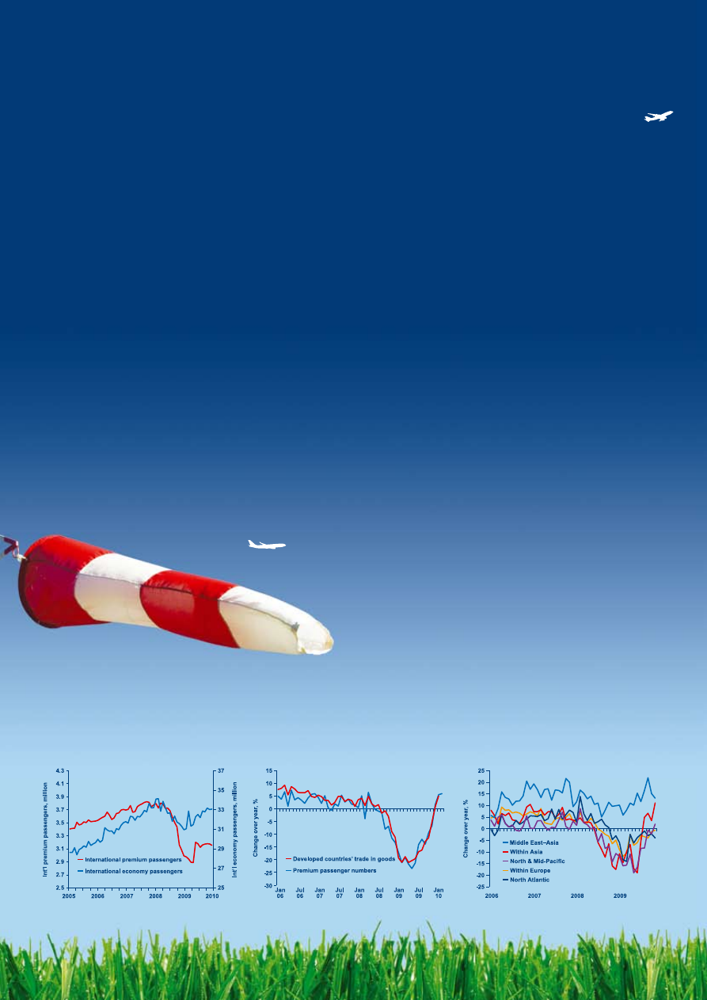

<!DOCTYPE html>
<html xmlns="http://www.w3.org/1999/xhtml" lang="" xml:lang="">
<head>
<title>./about/Documents/IATAAnnualReport2010-html.html</title>

<meta http-equiv="Content-Type" content="text/html; charset=UTF-8"/>
 <br/>
<style type="text/css">
<!--
	p {margin: 0; padding: 0;}-->
</style>
</head>
<body bgcolor="#A0A0A0" vlink="blue" link="blue">
<div id="page1-div" style="position:relative;width:892px;height:1262px;">

</div>
</body>
</html>
<!DOCTYPE html>
<html xmlns="http://www.w3.org/1999/xhtml" lang="" xml:lang="">
<head>
<title>./about/Documents/IATAAnnualReport2010-html.html</title>

<meta http-equiv="Content-Type" content="text/html; charset=UTF-8"/>
 <br/>
<style type="text/css">
<!--
	p {margin: 0; padding: 0;}	.ft20{font-size:14px;font-family:GOMBIM+AkzidenzGroteskBQ-Medium;color:#ffffff;}
	.ft21{font-size:14px;font-family:LBXFAC+AkzidenzGroteskBQ-Reg;color:#ffffff;}
	.ft22{font-size:7px;font-family:GOMBIM+AkzidenzGroteskBQ-Medium;color:#ffffff;}
	.ft23{font-size:10px;font-family:LBXFAC+AkzidenzGroteskBQ-Light;color:#ffffff;}
	.ft24{font-size:14px;line-height:19px;font-family:GOMBIM+AkzidenzGroteskBQ-Medium;color:#ffffff;}
	.ft25{font-size:14px;line-height:19px;font-family:LBXFAC+AkzidenzGroteskBQ-Reg;color:#ffffff;}
-->
</style>
</head>
<body bgcolor="#A0A0A0" vlink="blue" link="blue">
<div id="page2-div" style="position:relative;width:892px;height:1262px;">

<p style="position:absolute;top:890px;left:101px;white-space:nowrap" class="ft24">Giovanni&#160;Bisignani<br/>Director&#160;General&#160;&amp;&#160;CEO</p>
<p style="position:absolute;top:950px;left:101px;white-space:nowrap" class="ft25">International&#160;Air&#160;Transport&#160;Association<br/>Annual&#160;Report&#160;2010<br/>66</p>
<p style="position:absolute;top:990px;left:121px;white-space:nowrap" class="ft22">th</p>
<p style="position:absolute;top:989px;left:130px;white-space:nowrap" class="ft21">&#160;Annual&#160;General&#160;Meeting</p>
<p style="position:absolute;top:1009px;left:101px;white-space:nowrap" class="ft21">Berlin,&#160;June&#160;2010</p>
<p style="position:absolute;top:1108px;left:152px;white-space:nowrap" class="ft23">Promoting&#160;sustainable&#160;forest&#160;management.&#160;&#160;</p>
<p style="position:absolute;top:1121px;left:152px;white-space:nowrap" class="ft23">This&#160;paper&#160;is&#160;certified&#160;by&#160;the&#160;Forest&#160;</p>
<p style="position:absolute;top:1134px;left:152px;white-space:nowrap" class="ft23">Stewardship&#160;Council&#160;(FSC)&#160;and&#160;is&#160;&#160;</p>
<p style="position:absolute;top:1147px;left:152px;white-space:nowrap" class="ft23">cellulose&#160;based&#160;and&#160;recyclable.</p>
</div>
</body>
</html>
<!DOCTYPE html>
<html xmlns="http://www.w3.org/1999/xhtml" lang="" xml:lang="">
<head>
<title>./about/Documents/IATAAnnualReport2010-html.html</title>

<meta http-equiv="Content-Type" content="text/html; charset=UTF-8"/>
 <br/>
<style type="text/css">
<!--
	p {margin: 0; padding: 0;}-->
</style>
</head>
<body bgcolor="#A0A0A0" vlink="blue" link="blue">
<div id="page3-div" style="position:relative;width:892px;height:1262px;">

</div>
</body>
</html>
<!DOCTYPE html>
<html xmlns="http://www.w3.org/1999/xhtml" lang="" xml:lang="">
<head>
<title>./about/Documents/IATAAnnualReport2010-html.html</title>

<meta http-equiv="Content-Type" content="text/html; charset=UTF-8"/>
 <br/>
<style type="text/css">
<!--
	p {margin: 0; padding: 0;}-->
</style>
</head>
<body bgcolor="#A0A0A0" vlink="blue" link="blue">
<div id="page4-div" style="position:relative;width:892px;height:1262px;">

</div>
</body>
</html>
<!DOCTYPE html>
<html xmlns="http://www.w3.org/1999/xhtml" lang="" xml:lang="">
<head>
<title>./about/Documents/IATAAnnualReport2010-html.html</title>

<meta http-equiv="Content-Type" content="text/html; charset=UTF-8"/>
 <br/>
<style type="text/css">
<!--
	p {margin: 0; padding: 0;}	.ft50{font-size:10px;font-family:LBXFAC+AkzidenzGroteskBQ-Reg;color:#6caadd;}
	.ft51{font-size:10px;font-family:LBXFAC+AkzidenzGroteskBQ;color:#6caadd;}
	.ft52{font-size:13px;font-family:GOMBIM+AkzidenzGroteskBQ-Medium;color:#003f7c;}
	.ft53{font-size:13px;line-height:26px;font-family:GOMBIM+AkzidenzGroteskBQ-Medium;color:#003f7c;}
-->
</style>
</head>
<body bgcolor="#A0A0A0" vlink="blue" link="blue">
<div id="page5-div" style="position:relative;width:892px;height:1262px;">

<p style="position:absolute;top:1221px;left:205px;white-space:nowrap" class="ft50">Note:</p>
<p style="position:absolute;top:1221px;left:233px;white-space:nowrap" class="ft51"><i>&#160;Unless&#160;specified&#160;otherwise,&#160;all&#160;dollar&#160;($)&#160;figures&#160;in&#160;this&#160;annual&#160;report&#160;refer&#160;to&#160;US&#160;dollars&#160;(US$).</i></p>
<p style="position:absolute;top:990px;left:205px;white-space:nowrap" class="ft52">IATA Board of Governors&#160;</p>
<p style="position:absolute;top:990px;left:439px;white-space:nowrap" class="ft52">06</p>
<p style="position:absolute;top:1017px;left:205px;white-space:nowrap" class="ft52">Director General’s Message&#160;</p>
<p style="position:absolute;top:1017px;left:439px;white-space:nowrap" class="ft52">08&#160;</p>
<p style="position:absolute;top:1043px;left:205px;white-space:nowrap" class="ft52">State of the Industry&#160;</p>
<p style="position:absolute;top:1043px;left:439px;white-space:nowrap" class="ft52">10</p>
<p style="position:absolute;top:1070px;left:205px;white-space:nowrap" class="ft52">Safety&#160;</p>
<p style="position:absolute;top:1070px;left:439px;white-space:nowrap" class="ft52">16&#160;</p>
<p style="position:absolute;top:1096px;left:205px;white-space:nowrap" class="ft52">Security and Facilitation&#160;</p>
<p style="position:absolute;top:1096px;left:439px;white-space:nowrap" class="ft52">20</p>
<p style="position:absolute;top:1123px;left:205px;white-space:nowrap" class="ft52">Regulatory and Public Policy&#160;</p>
<p style="position:absolute;top:1123px;left:439px;white-space:nowrap" class="ft52">24</p>
<p style="position:absolute;top:1149px;left:205px;white-space:nowrap" class="ft52">Environment&#160;</p>
<p style="position:absolute;top:1149px;left:439px;white-space:nowrap" class="ft52">26</p>
<p style="position:absolute;top:990px;left:529px;white-space:nowrap" class="ft52">Simplifying the Business&#160;</p>
<p style="position:absolute;top:990px;left:763px;white-space:nowrap" class="ft52">30</p>
<p style="position:absolute;top:1017px;left:529px;white-space:nowrap" class="ft52">Cost Efficiency&#160;</p>
<p style="position:absolute;top:1017px;left:763px;white-space:nowrap" class="ft52">36</p>
<p style="position:absolute;top:1043px;left:529px;white-space:nowrap" class="ft53">Industry and Financial Services&#160;&#160;40<br/>Aviation Solutions&#160;</p>
<p style="position:absolute;top:1070px;left:763px;white-space:nowrap" class="ft52">46</p>
<p style="position:absolute;top:1096px;left:529px;white-space:nowrap" class="ft52">IATA Membership&#160;</p>
<p style="position:absolute;top:1096px;left:763px;white-space:nowrap" class="ft52">50</p>
<p style="position:absolute;top:1123px;left:529px;white-space:nowrap" class="ft52">IATA Offices&#160;</p>
<p style="position:absolute;top:1123px;left:763px;white-space:nowrap" class="ft52">52</p>
</div>
</body>
</html>
<!DOCTYPE html>
<html xmlns="http://www.w3.org/1999/xhtml" lang="" xml:lang="">
<head>
<title>./about/Documents/IATAAnnualReport2010-html.html</title>

<meta http-equiv="Content-Type" content="text/html; charset=UTF-8"/>
 <br/>
<style type="text/css">
<!--
	p {margin: 0; padding: 0;}	.ft60{font-size:52px;font-family:LBXFAC+AkzidenzGroteskBQ-Reg;color:#ffffff;}
	.ft61{font-size:52px;font-family:GOMBIM+AkzidenzGroteskBQ-Medium;color:#ffffff;}
	.ft62{font-size:52px;line-height:82px;font-family:LBXFAC+AkzidenzGroteskBQ-Reg;color:#ffffff;}
-->
</style>
</head>
<body bgcolor="#A0A0A0" vlink="blue" link="blue">
<div id="page6-div" style="position:relative;width:892px;height:1262px;">

<p style="position:absolute;top:183px;left:59px;white-space:nowrap" class="ft60">Cautious&#160;optimism&#160;is&#160;returning.&#160;</p>
<p style="position:absolute;top:240px;left:59px;white-space:nowrap" class="ft60">But&#160;challenges&#160;continue.&#160;&#160;</p>
<p style="position:absolute;top:297px;left:59px;white-space:nowrap" class="ft60">We&#160;must&#160;rebuild&#160;the&#160;industry&#160;&#160;</p>
<p style="position:absolute;top:354px;left:59px;white-space:nowrap" class="ft60">on&#160;a&#160;</p>
<p style="position:absolute;top:353px;left:179px;white-space:nowrap" class="ft61">new&#160;and&#160;more&#160;resilient</p>
<p style="position:absolute;top:354px;left:757px;white-space:nowrap" class="ft60">&#160;</p>
<p style="position:absolute;top:411px;left:59px;white-space:nowrap" class="ft62">foundation.&#160;<br/>Safety,&#160;security,&#160;and&#160;environmental&#160;</p>
<p style="position:absolute;top:550px;left:59px;white-space:nowrap" class="ft60">responsibility&#160;are&#160;the&#160;pillars&#160;of&#160;</p>
<p style="position:absolute;top:607px;left:59px;white-space:nowrap" class="ft60">our&#160;industry,&#160;which&#160;we&#160;must&#160;</p>
<p style="position:absolute;top:663px;left:59px;white-space:nowrap" class="ft61">constantly&#160;strengthen</p>
<p style="position:absolute;top:664px;left:604px;white-space:nowrap" class="ft60">.</p>
</div>
</body>
</html>
<!DOCTYPE html>
<html xmlns="http://www.w3.org/1999/xhtml" lang="" xml:lang="">
<head>
<title>./about/Documents/IATAAnnualReport2010-html.html</title>

<meta http-equiv="Content-Type" content="text/html; charset=UTF-8"/>
 <br/>
<style type="text/css">
<!--
	p {margin: 0; padding: 0;}	.ft70{font-size:52px;font-family:LBXFAC+AkzidenzGroteskBQ-Reg;color:#ffffff;}
	.ft71{font-size:52px;font-family:GOMBIM+AkzidenzGroteskBQ-Medium;color:#ffffff;}
	.ft72{font-size:28px;font-family:LBXFAC+AkzidenzGroteskBQ-Reg;color:#ffffff;}
-->
</style>
</head>
<body bgcolor="#A0A0A0" vlink="blue" link="blue">
<div id="page7-div" style="position:relative;width:892px;height:1262px;">

<p style="position:absolute;top:183px;left:85px;white-space:nowrap" class="ft70">Shocks&#160;and&#160;crises&#160;have&#160;&#160;</p>
<p style="position:absolute;top:240px;left:85px;white-space:nowrap" class="ft70">exposed&#160;the&#160;weakness&#160;&#160;</p>
<p style="position:absolute;top:297px;left:85px;white-space:nowrap" class="ft70">of&#160;the&#160;industry&#160;structure.&#160;&#160;</p>
<p style="position:absolute;top:354px;left:85px;white-space:nowrap" class="ft70">The&#160;nearly&#160;$50&#160;billion&#160;loss&#160;&#160;</p>
<p style="position:absolute;top:411px;left:85px;white-space:nowrap" class="ft70">over&#160;the&#160;last&#160;decade&#160;is&#160;a&#160;&#160;</p>
<p style="position:absolute;top:467px;left:85px;white-space:nowrap" class="ft71">blunt</p>
<p style="position:absolute;top:468px;left:214px;white-space:nowrap" class="ft70">&#160;</p>
<p style="position:absolute;top:467px;left:231px;white-space:nowrap" class="ft71">case&#160;for&#160;big&#160;change</p>
<p style="position:absolute;top:468px;left:743px;white-space:nowrap" class="ft70">.</p>
<p style="position:absolute;top:576px;left:85px;white-space:nowrap" class="ft72">Giovanni&#160;Bisignani</p>
</div>
</body>
</html>
<!DOCTYPE html>
<html xmlns="http://www.w3.org/1999/xhtml" lang="" xml:lang="">
<head>
<title>./about/Documents/IATAAnnualReport2010-html.html</title>

<meta http-equiv="Content-Type" content="text/html; charset=UTF-8"/>
 <br/>
<style type="text/css">
<!--
	p {margin: 0; padding: 0;}	.ft80{font-size:11px;font-family:LBXFAC+AkzidenzGroteskBQ-Reg;color:#003f7c;}
	.ft81{font-size:33px;font-family:LBXFAC+AkzidenzGroteskBQ-Light;color:#003f7c;}
	.ft82{font-size:16px;font-family:LBXFAC+AkzidenzGroteskBQ-Reg;color:#006fba;}
	.ft83{font-size:11px;line-height:17px;font-family:LBXFAC+AkzidenzGroteskBQ-Reg;color:#003f7c;}
-->
</style>
</head>
<body bgcolor="#A0A0A0" vlink="blue" link="blue">
<div id="page8-div" style="position:relative;width:892px;height:1262px;">

<p style="position:absolute;top:41px;left:46px;white-space:nowrap" class="ft80">6</p>
<p style="position:absolute;top:122px;left:53px;white-space:nowrap" class="ft81">IATA Board of Governors</p>
<p style="position:absolute;top:162px;left:54px;white-space:nowrap" class="ft82">as of 1 May 2010</p>
<p style="position:absolute;top:243px;left:54px;white-space:nowrap" class="ft83">Khalid&#160;Abdullah&#160;Almolhem<br/>SAUDI&#160;ARABIAN&#160;AIRLINES</p>
<p style="position:absolute;top:302px;left:54px;white-space:nowrap" class="ft83">Richard&#160;Anderson<br/>DELTA&#160;AIR&#160;LINES</p>
<p style="position:absolute;top:362px;left:54px;white-space:nowrap" class="ft83">Gerard&#160;Arpey<br/>AMERICAN&#160;AIRLINES</p>
<p style="position:absolute;top:421px;left:54px;white-space:nowrap" class="ft83">David&#160;Bronczek<br/>FEDEX&#160;EXPRESS</p>
<p style="position:absolute;top:481px;left:54px;white-space:nowrap" class="ft83">Chew&#160;Choon&#160;Seng<br/>SINGAPORE&#160;AIRLINES</p>
<p style="position:absolute;top:540px;left:54px;white-space:nowrap" class="ft83">Yang&#160;Ho&#160;Cho&#160;<br/>KOREAN&#160;AIR</p>
<p style="position:absolute;top:243px;left:339px;white-space:nowrap" class="ft83">Andrés&#160;Conesa&#160;<br/>AEROMEXICO</p>
<p style="position:absolute;top:302px;left:339px;white-space:nowrap" class="ft83">Enrique&#160;Cueto<br/>LAN&#160;AIRLINES</p>
<p style="position:absolute;top:362px;left:339px;white-space:nowrap" class="ft83">Rob&#160;Fyfe<br/>AIR&#160;NEW&#160;ZEALAND</p>
<p style="position:absolute;top:421px;left:339px;white-space:nowrap" class="ft83">Naresh&#160;Goyal&#160;<br/>JET&#160;AIRWAYS</p>
<p style="position:absolute;top:481px;left:339px;white-space:nowrap" class="ft83">Peter&#160;Hartman&#160;<br/>KLM</p>
<p style="position:absolute;top:540px;left:339px;white-space:nowrap" class="ft83">Pedro&#160;Heilbron<br/>COPA&#160;AIRLINES</p>
<p style="position:absolute;top:243px;left:585px;white-space:nowrap" class="ft83">Harry&#160;Hohmeister<br/>SWISS</p>
<p style="position:absolute;top:302px;left:585px;white-space:nowrap" class="ft83">Mats&#160;Jansson<br/>SAS</p>
<p style="position:absolute;top:362px;left:585px;white-space:nowrap" class="ft83">Alan&#160;Joyce&#160;<br/>QANTAS</p>
<p style="position:absolute;top:421px;left:585px;white-space:nowrap" class="ft83">Temel&#160;Kotil<br/>TURKISH&#160;AIRLINES</p>
<p style="position:absolute;top:481px;left:585px;white-space:nowrap" class="ft83">Liu&#160;Shaoyong<br/>CHINA&#160;EASTERN&#160;AIRLINES</p>
<p style="position:absolute;top:540px;left:585px;white-space:nowrap" class="ft83">Samer&#160;Majali<br/>GULF&#160;AIR</p>
</div>
</body>
</html>
<!DOCTYPE html>
<html xmlns="http://www.w3.org/1999/xhtml" lang="" xml:lang="">
<head>
<title>./about/Documents/IATAAnnualReport2010-html.html</title>

<meta http-equiv="Content-Type" content="text/html; charset=UTF-8"/>
 <br/>
<style type="text/css">
<!--
	p {margin: 0; padding: 0;}	.ft90{font-size:11px;font-family:LBXFAC+AkzidenzGroteskBQ-Reg;color:#003f7c;}
	.ft91{font-size:11px;font-family:GOMBIM+AkzidenzGroteskBQ-Medium;color:#003f7c;}
	.ft92{font-size:11px;line-height:17px;font-family:GOMBIM+AkzidenzGroteskBQ-Medium;color:#003f7c;}
	.ft93{font-size:11px;line-height:17px;font-family:LBXFAC+AkzidenzGroteskBQ-Reg;color:#003f7c;}
-->
</style>
</head>
<body bgcolor="#A0A0A0" vlink="blue" link="blue">
<div id="page9-div" style="position:relative;width:892px;height:1262px;">

<p style="position:absolute;top:41px;left:839px;white-space:nowrap" class="ft90">7</p>
<p style="position:absolute;top:974px;left:678px;white-space:nowrap" class="ft92">Tony&#160;Tyler&#160;<br/>Chairman&#160;&#160;<br/>IATA&#160;Board&#160;of&#160;Governors</p>
<p style="position:absolute;top:243px;left:61px;white-space:nowrap" class="ft93">Hussein&#160;Massoud<br/>EGYPTAIR</p>
<p style="position:absolute;top:302px;left:61px;white-space:nowrap" class="ft93">Wolfgang&#160;Mayrhuber<br/>LUFTHANSA</p>
<p style="position:absolute;top:362px;left:61px;white-space:nowrap" class="ft93">Titus&#160;Naikuni<br/>KENYA&#160;AIRWAYS</p>
<p style="position:absolute;top:421px;left:61px;white-space:nowrap" class="ft93">Fernando&#160;Pinto&#160;<br/>TAP&#160;PORTUGAL</p>
<p style="position:absolute;top:481px;left:61px;white-space:nowrap" class="ft93">Calin&#160;Rovinescu&#160;<br/>AIR&#160;CANADA</p>
<p style="position:absolute;top:540px;left:61px;white-space:nowrap" class="ft93">Vitaly&#160;Saveliev<br/>AEROFLOT</p>
<p style="position:absolute;top:243px;left:326px;white-space:nowrap" class="ft93">Jean-Cyril&#160;Spinetta<br/>AIR&#160;FRANCE</p>
<p style="position:absolute;top:302px;left:326px;white-space:nowrap" class="ft93">Glenn&#160;Tilton<br/>UNITED&#160;AIRLINES</p>
<p style="position:absolute;top:362px;left:326px;white-space:nowrap" class="ft93">Tony&#160;Tyler<br/>CATHAY&#160;PACIFIC&#160;AIRWAYS</p>
<p style="position:absolute;top:421px;left:326px;white-space:nowrap" class="ft93">José&#160;Viegas&#160;<br/>LAM-MOZAMBIQUE&#160;AIRLINES</p>
<p style="position:absolute;top:481px;left:326px;white-space:nowrap" class="ft93">Willie&#160;Walsh<br/>BRITISH&#160;AIRWAYS</p>
</div>
</body>
</html>
<!DOCTYPE html>
<html xmlns="http://www.w3.org/1999/xhtml" lang="" xml:lang="">
<head>
<title>./about/Documents/IATAAnnualReport2010-html.html</title>

<meta http-equiv="Content-Type" content="text/html; charset=UTF-8"/>
 <br/>
<style type="text/css">
<!--
	p {margin: 0; padding: 0;}	.ft100{font-size:11px;font-family:LBXFAC+AkzidenzGroteskBQ-Reg;color:#003f7c;}
	.ft101{font-size:33px;font-family:LBXFAC+AkzidenzGroteskBQ-Light;color:#003f7c;}
	.ft102{font-size:16px;font-family:LBXFAC+AkzidenzGroteskBQ-Reg;color:#006fba;}
	.ft103{font-size:11px;font-family:GOMBIM+AkzidenzGroteskBQ-Medium;color:#003f7c;}
	.ft104{font-size:11px;line-height:17px;font-family:LBXFAC+AkzidenzGroteskBQ-Reg;color:#003f7c;}
	.ft105{font-size:11px;line-height:17px;font-family:GOMBIM+AkzidenzGroteskBQ-Medium;color:#003f7c;}
-->
</style>
</head>
<body bgcolor="#A0A0A0" vlink="blue" link="blue">
<div id="page10-div" style="position:relative;width:892px;height:1262px;">

<p style="position:absolute;top:41px;left:46px;white-space:nowrap" class="ft100">8</p>
<p style="position:absolute;top:122px;left:53px;white-space:nowrap" class="ft101">Director General’s Message</p>
<p style="position:absolute;top:169px;left:54px;white-space:nowrap" class="ft102">Airlines lost $9.9 billion in 2009. Passenger traffic fell 2.1%, and cargo dropped 9.8%.&#160;&#160;</p>
<p style="position:absolute;top:189px;left:54px;white-space:nowrap" class="ft102">Average yields tumbled 14%. Industry revenues fell 15%, or $85 billion, to $479 billion.</p>
<p style="position:absolute;top:243px;left:54px;white-space:nowrap" class="ft104">The&#160;scale&#160;of&#160;the&#160;financial&#160;shock&#160;<br/>comes&#160;into&#160;focus&#160;with&#160;a&#160;comparison&#160;<br/>to&#160;the&#160;aftermath&#160;of&#160;the&#160;tragic&#160;events&#160;of&#160;<br/>September&#160;2001.&#160;The&#160;revenue&#160;fall&#160;then&#160;<br/>was&#160;7%,&#160;or&#160;$23&#160;billion—nearly&#160;a&#160;quarter&#160;<br/>of&#160;what&#160;was&#160;experienced&#160;in&#160;2009.</p>
<p style="position:absolute;top:353px;left:54px;white-space:nowrap" class="ft104">The&#160;volatility&#160;of&#160;the&#160;operating&#160;environment&#160;<br/>is&#160;characterized&#160;by&#160;the&#160;oil&#160;price—the&#160;<br/>industry’s&#160;cost&#160;wildcard.&#160;From&#160;its&#160;peak&#160;<br/>of&#160;$144&#160;a&#160;barrel&#160;in&#160;2008,&#160;it&#160;fell&#160;to&#160;an&#160;<br/>average&#160;$62&#160;per&#160;barrel&#160;in&#160;2009.&#160;By&#160;the&#160;<br/>end&#160;of&#160;April&#160;2010,&#160;the&#160;spot&#160;price&#160;was&#160;<br/>inching&#160;toward&#160;$90&#160;per&#160;barrel.</p>
<p style="position:absolute;top:481px;left:54px;white-space:nowrap" class="ft104">Signs&#160;of&#160;progress&#160;emerged&#160;in&#160;the&#160;fourth&#160;<br/>quarter&#160;of&#160;2009,&#160;with&#160;a&#160;traffic&#160;rebound&#160;<br/>as&#160;dramatic&#160;as&#160;the&#160;fall.&#160;By&#160;March&#160;2010,&#160;<br/>cargo&#160;and&#160;passenger&#160;traffic&#160;were&#160;within&#160;<br/>1%&#160;of&#160;prerecession&#160;highs.&#160;But&#160;yields&#160;<br/>were&#160;13%&#160;down.&#160;Risks&#160;such&#160;as&#160;the&#160;<br/>Greek&#160;debt&#160;crisis&#160;and&#160;the&#160;Icelandic&#160;<br/>volcano&#160;eruption&#160;remain&#160;large&#160;unknowns.&#160;</p>
<p style="position:absolute;top:626px;left:54px;white-space:nowrap" class="ft104">Nonetheless,&#160;a&#160;strong&#160;cyclical&#160;upturn&#160;<br/>in&#160;all&#160;regions&#160;except&#160;Europe,&#160;careful&#160;<br/>capacity&#160;management,&#160;and&#160;a&#160;focus&#160;on&#160;<br/>cost&#160;efficiency&#160;give&#160;hope&#160;for&#160;bottom&#160;&#160;<br/>line&#160;improvement&#160;in&#160;2010.</p>
<p style="position:absolute;top:243px;left:586px;white-space:nowrap" class="ft105">IATA&#160;is&#160;driving&#160;efficiencies&#160;across&#160;&#160;<br/>the&#160;value&#160;chain</p>
<p style="position:absolute;top:260px;left:682px;white-space:nowrap" class="ft100">.&#160;Our&#160;work&#160;with&#160;airports,&#160;</p>
<p style="position:absolute;top:277px;left:586px;white-space:nowrap" class="ft104">air&#160;navigation&#160;service&#160;providers,&#160;and&#160;<br/>fuel&#160;suppliers&#160;yielded&#160;$2.1&#160;billion&#160;in&#160;<br/>cost&#160;savings&#160;in&#160;2009.&#160;But&#160;there&#160;were&#160;<br/>unjustified&#160;cost&#160;increases&#160;of&#160;$2.6&#160;billion.&#160;<br/>We&#160;will&#160;continue&#160;to&#160;fight&#160;to&#160;ensure&#160;that&#160;<br/>the&#160;burden&#160;of&#160;efficiency&#160;is&#160;shared&#160;across&#160;<br/>the&#160;industry&#160;value&#160;chain.&#160;Crisis&#160;also&#160;led&#160;<br/>to&#160;progress.&#160;The&#160;Single&#160;European&#160;Sky&#160;<br/>(SES)&#160;drew&#160;nearer&#160;as&#160;a&#160;consequence&#160;<br/>of&#160;the&#160;volcanic&#160;ash&#160;crisis&#160;that&#160;gripped&#160;<br/>Europe&#160;in&#160;April&#160;2010.&#160;Seeing&#160;the&#160;need&#160;<br/>for&#160;greater&#160;efficiency,&#160;Europe&#160;committed&#160;<br/>to&#160;fast&#160;track&#160;SES&#160;plans,&#160;which&#160;will&#160;deliver&#160;<br/>$6.5&#160;billion&#160;in&#160;cost&#160;savings.</p>
<p style="position:absolute;top:523px;left:586px;white-space:nowrap" class="ft105">We&#160;are&#160;fighting&#160;unfair&#160;industry&#160;<br/>taxation</p>
<p style="position:absolute;top:540px;left:636px;white-space:nowrap" class="ft100">.&#160;The&#160;majority&#160;of&#160;the&#160;$1.8&#160;billion&#160;</p>
<p style="position:absolute;top:557px;left:586px;white-space:nowrap" class="ft104">saved&#160;in&#160;taxation&#160;during&#160;2009&#160;was&#160;from&#160;<br/>the&#160;elimination&#160;of&#160;a&#160;Dutch&#160;departure&#160;<br/>tax.&#160;IATA&#160;will&#160;fight&#160;any&#160;attempts&#160;by&#160;<br/>governments&#160;to&#160;finance&#160;economic&#160;<br/>stimulus&#160;packages&#160;with&#160;increased&#160;&#160;<br/>taxes&#160;on&#160;our&#160;industry.</p>
<p style="position:absolute;top:243px;left:321px;white-space:nowrap" class="ft104">As&#160;cautious&#160;optimism&#160;returns,&#160;&#160;<br/>your&#160;association&#160;is&#160;at&#160;your&#160;side.&#160;</p>
<p style="position:absolute;top:285px;left:321px;white-space:nowrap" class="ft105">We&#160;are&#160;working&#160;to&#160;keep&#160;your&#160;money&#160;<br/>safe</p>
<p style="position:absolute;top:302px;left:348px;white-space:nowrap" class="ft100">.&#160;Over&#160;the&#160;past&#160;decade,&#160;IATA&#160;handled&#160;</p>
<p style="position:absolute;top:319px;left:321px;white-space:nowrap" class="ft104">$1.7&#160;trillion&#160;through&#160;the&#160;Billing&#160;and&#160;<br/>Settlement&#160;Plan&#160;(BSP),&#160;Cargo&#160;Accounts&#160;<br/>Settlement&#160;System,&#160;and&#160;IATA&#160;Clearing&#160;<br/>House&#160;with&#160;more&#160;than&#160;99.9%&#160;accuracy.&#160;<br/>Over&#160;the&#160;same&#160;period,&#160;efficiency&#160;gains&#160;<br/>cut&#160;unit&#160;rates&#160;80%.&#160;By&#160;February&#160;2010,&#160;<br/>IATA&#160;had&#160;completed&#160;the&#160;migration&#160;of&#160;<br/>BSP&#160;data&#160;processing&#160;operations&#160;for&#160;42&#160;<br/>countries&#160;to&#160;the&#160;Accounting&#160;Centre&#160;of&#160;<br/>China&#160;Aviation&#160;(ACCA),&#160;achieving&#160;further&#160;<br/>cost&#160;savings.</p>
</div>
</body>
</html>
<!DOCTYPE html>
<html xmlns="http://www.w3.org/1999/xhtml" lang="" xml:lang="">
<head>
<title>./about/Documents/IATAAnnualReport2010-html.html</title>

<meta http-equiv="Content-Type" content="text/html; charset=UTF-8"/>
 <br/>
<style type="text/css">
<!--
	p {margin: 0; padding: 0;}	.ft110{font-size:11px;font-family:LBXFAC+AkzidenzGroteskBQ-Reg;color:#003f7c;}
	.ft111{font-size:11px;font-family:GOMBIM+AkzidenzGroteskBQ-Medium;color:#003f7c;}
	.ft112{font-size:6px;font-family:LBXFAC+AkzidenzGroteskBQ-Reg;color:#003f7c;}
	.ft113{font-size:11px;line-height:17px;font-family:GOMBIM+AkzidenzGroteskBQ-Medium;color:#003f7c;}
	.ft114{font-size:11px;line-height:17px;font-family:LBXFAC+AkzidenzGroteskBQ-Reg;color:#003f7c;}
-->
</style>
</head>
<body bgcolor="#A0A0A0" vlink="blue" link="blue">
<div id="page11-div" style="position:relative;width:892px;height:1262px;">

<p style="position:absolute;top:41px;left:839px;white-space:nowrap" class="ft110">9</p>
<p style="position:absolute;top:243px;left:61px;white-space:nowrap" class="ft113">IATA&#160;continues&#160;to&#160;deliver&#160;cost&#160;savings&#160;<br/>and&#160;improve&#160;processes</p>
<p style="position:absolute;top:260px;left:207px;white-space:nowrap" class="ft110">.&#160;The&#160;Simplifying&#160;</p>
<p style="position:absolute;top:277px;left:61px;white-space:nowrap" class="ft114">the&#160;Business&#160;(StB)&#160;program&#160;is&#160;aiming&#160;<br/>for&#160;$16.8&#160;billion&#160;in&#160;annual&#160;savings.&#160;<br/>E-ticketing&#160;and&#160;common&#160;use&#160;self-service&#160;<br/>kiosks&#160;have&#160;already&#160;delivered&#160;$4&#160;billion&#160;&#160;<br/>in&#160;annual&#160;savings.&#160;The&#160;next&#160;target&#160;is&#160;&#160;<br/>at&#160;the&#160;end&#160;of&#160;this&#160;year,&#160;when&#160;100%&#160;&#160;<br/>bar-coded&#160;boarding&#160;passes&#160;will&#160;deliver&#160;<br/>$1.5&#160;billion&#160;in&#160;savings.&#160;Fast&#160;Travel,&#160;&#160;<br/>the&#160;Baggage&#160;Improvement&#160;Program,&#160;&#160;<br/>and&#160;IATA&#160;e-freight&#160;also&#160;are&#160;on&#160;target.&#160;&#160;<br/>IATA&#160;added&#160;a&#160;new&#160;component&#160;to&#160;&#160;<br/>StB&#160;with&#160;the&#160;launch&#160;of&#160;e-services.&#160;&#160;<br/>The&#160;electronic&#160;miscellaneous&#160;document&#160;<br/>will&#160;replace&#160;paper&#160;processes&#160;for&#160;sales&#160;<br/>of&#160;ancillary&#160;services.&#160;By&#160;2013,&#160;this&#160;will&#160;<br/>deliver&#160;$2.9&#160;billion&#160;in&#160;annual&#160;cost&#160;savings.</p>
<p style="position:absolute;top:557px;left:61px;white-space:nowrap" class="ft113">Most&#160;importantly,&#160;IATA&#160;is&#160;working&#160;to&#160;<br/>make&#160;flying&#160;even&#160;safer</p>
<p style="position:absolute;top:574px;left:205px;white-space:nowrap" class="ft110">.&#160;IATA&#160;airlines,&#160;</p>
<p style="position:absolute;top:591px;left:61px;white-space:nowrap" class="ft114">which&#160;must&#160;pass&#160;the&#160;IATA&#160;Operational&#160;<br/>Safety&#160;Audit&#160;(IOSA),&#160;outperformed&#160;the&#160;<br/>global&#160;industry&#160;with&#160;a&#160;hull&#160;loss&#160;rate&#160;&#160;<br/>of&#160;one&#160;accident&#160;for&#160;every&#160;1.6&#160;million&#160;<br/>flights.&#160;Building&#160;on&#160;the&#160;success&#160;of&#160;<br/>IOSA,&#160;the&#160;IATA&#160;Safety&#160;Audit&#160;for&#160;<br/>Ground&#160;Operations&#160;(ISAGO)&#160;is&#160;gaining&#160;<br/>momentum.&#160;Twenty-seven&#160;governments&#160;<br/>and&#160;airport&#160;authorities&#160;have&#160;endorsed&#160;<br/>ISAGO,&#160;and&#160;160&#160;audits&#160;are&#160;complete.</p>
<p style="position:absolute;top:243px;left:326px;white-space:nowrap" class="ft114">In&#160;2009,&#160;IATA&#160;launched&#160;the&#160;Global&#160;&#160;<br/>Safety&#160;Information&#160;Center&#160;(GSIC)&#160;to&#160;<br/>consolidate&#160;IATA&#160;safety&#160;data&#160;in&#160;one&#160;<br/>resource.&#160;This&#160;approach&#160;was&#160;expanded&#160;<br/>in&#160;March&#160;2010,&#160;when&#160;IATA&#160;signed&#160;an&#160;<br/>agreement&#160;with&#160;the&#160;International&#160;Civil&#160;<br/>Aviation&#160;Organization&#160;(ICAO),&#160;the&#160;US&#160;<br/>Federal&#160;Aviation&#160;Administration,&#160;and&#160;<br/>the&#160;European&#160;Union&#160;to&#160;share&#160;safety&#160;<br/>information.</p>
<p style="position:absolute;top:421px;left:326px;white-space:nowrap" class="ft114">We&#160;are&#160;also&#160;looking&#160;beyond&#160;the&#160;decade&#160;<br/>of&#160;crisis&#160;to&#160;build&#160;a&#160;more&#160;sustainable&#160;<br/>industry—environmentally&#160;and&#160;financially.</p>
<p style="position:absolute;top:481px;left:326px;white-space:nowrap" class="ft113">Environmental&#160;responsibility&#160;is&#160;a&#160;<br/>core&#160;promise&#160;to&#160;our&#160;passengers</p>
<p style="position:absolute;top:498px;left:534px;white-space:nowrap" class="ft110">.&#160;</p>
<p style="position:absolute;top:515px;left:326px;white-space:nowrap" class="ft114">Your&#160;association&#160;played&#160;a&#160;leading&#160;role&#160;<br/>by&#160;building&#160;industry&#160;commitment&#160;to&#160;<br/>three&#160;sequential&#160;targets&#160;for&#160;aviation&#160;and&#160;<br/>climate&#160;change:&#160;improving&#160;fuel&#160;efficiency&#160;<br/>1.5%&#160;per&#160;annum&#160;to&#160;2020,&#160;capping&#160;net&#160;<br/>emissions&#160;with&#160;carbon-neutral&#160;growth&#160;<br/>from&#160;2020,&#160;and&#160;cutting&#160;net&#160;emissions&#160;&#160;<br/>in&#160;half&#160;by&#160;2050&#160;compared&#160;with&#160;2005.</p>
<p style="position:absolute;top:659px;left:326px;white-space:nowrap" class="ft114">More&#160;importantly,&#160;we&#160;are&#160;delivering&#160;<br/>results.&#160;Since&#160;2004,&#160;IATA’s&#160;efforts&#160;have&#160;<br/>saved&#160;over&#160;70&#160;million&#160;metric&#160;tons&#160;of&#160;CO</p>
<p style="position:absolute;top:704px;left:564px;white-space:nowrap" class="ft112">2</p>
<p style="position:absolute;top:694px;left:569px;white-space:nowrap" class="ft110">.&#160;</p>
<p style="position:absolute;top:711px;left:326px;white-space:nowrap" class="ft114">Biofuels,&#160;with&#160;the&#160;potential&#160;to&#160;reduce&#160;our&#160;<br/>carbon&#160;footprint&#160;by&#160;up&#160;to&#160;80%,&#160;show&#160;<br/>good&#160;progress&#160;and&#160;the&#160;greatest&#160;potential.&#160;</p>
<p style="position:absolute;top:243px;left:591px;white-space:nowrap" class="ft114">Five&#160;airlines&#160;have&#160;tested&#160;them,&#160;and&#160;we&#160;<br/>expect&#160;certification&#160;by&#160;early&#160;2011.</p>
<p style="position:absolute;top:285px;left:591px;white-space:nowrap" class="ft114">In&#160;the&#160;meantime,&#160;we&#160;are&#160;preparing&#160;<br/>for&#160;COP16.&#160;Our&#160;goal&#160;is&#160;to&#160;bring&#160;<br/>governments&#160;onboard&#160;with&#160;our&#160;ambitious&#160;<br/>targets,&#160;which&#160;UN&#160;Secretary&#160;General&#160;Ban&#160;<br/>Ki-moon&#160;commended&#160;as&#160;a&#160;role&#160;model&#160;&#160;<br/>for&#160;other&#160;industries&#160;to&#160;follow.</p>
<p style="position:absolute;top:396px;left:591px;white-space:nowrap" class="ft113">The&#160;industry&#160;must&#160;also&#160;be&#160;financially&#160;<br/>sustainable</p>
<p style="position:absolute;top:413px;left:663px;white-space:nowrap" class="ft110">.&#160;Profitability&#160;is&#160;compromised&#160;</p>
<p style="position:absolute;top:430px;left:591px;white-space:nowrap" class="ft114">by&#160;the&#160;antiquated&#160;bilateral&#160;system’s&#160;<br/>restrictions&#160;on&#160;market&#160;access&#160;and&#160;<br/>ownership.&#160;It&#160;perpetuates&#160;hyper-<br/>fragmentation.&#160;The&#160;industry’s&#160;top&#160;30&#160;<br/>players&#160;do&#160;not&#160;account&#160;for&#160;even&#160;50%&#160;&#160;<br/>of&#160;the&#160;global&#160;market&#160;in&#160;which&#160;1,000-plus&#160;<br/>airlines&#160;compete.&#160;Consolidation&#160;is&#160;a&#160;must.&#160;</p>
<p style="position:absolute;top:557px;left:591px;white-space:nowrap" class="ft114">We&#160;can&#160;now&#160;look&#160;to&#160;the&#160;future&#160;beyond&#160;<br/>the&#160;crisis&#160;with&#160;some&#160;cautious&#160;optimism.&#160;<br/>The&#160;challenge&#160;is&#160;to&#160;build&#160;our&#160;future&#160;with&#160;<br/>a&#160;vision&#160;for&#160;an&#160;industry&#160;that&#160;is&#160;even&#160;safer,&#160;<br/>more&#160;environmentally&#160;responsible,&#160;and&#160;<br/>sustainably&#160;profitable.&#160;I&#160;am&#160;confident&#160;<br/>that&#160;our&#160;great&#160;industry&#160;has&#160;the&#160;passion&#160;<br/>and&#160;commitment&#160;to&#160;deliver&#160;the&#160;success&#160;<br/>that&#160;our&#160;passengers,&#160;shippers,&#160;and&#160;<br/>shareholders&#160;expect.</p>
<p style="position:absolute;top:796px;left:591px;white-space:nowrap" class="ft114">Giovanni&#160;Bisignani&#160;<br/>Director&#160;General&#160;&amp;&#160;CEO</p>
</div>
</body>
</html>
<!DOCTYPE html>
<html xmlns="http://www.w3.org/1999/xhtml" lang="" xml:lang="">
<head>
<title>./about/Documents/IATAAnnualReport2010-html.html</title>

<meta http-equiv="Content-Type" content="text/html; charset=UTF-8"/>
 <br/>
<style type="text/css">
<!--
	p {margin: 0; padding: 0;}	.ft120{font-size:33px;font-family:LBXFAC+AkzidenzGroteskBQ-Light;color:#ffffff;}
	.ft121{font-size:16px;font-family:LBXFAC+AkzidenzGroteskBQ-Reg;color:#ffffff;}
	.ft122{font-size:11px;font-family:LBXFAC+AkzidenzGroteskBQ-Reg;color:#ffffff;}
	.ft123{font-size:11px;font-family:LBXFAC+AkzidenzGroteskBQ-Reg;color:#006fba;}
	.ft124{font-size:8px;font-family:BMXXQW+AkzidenzGroteskBQ-MedItalic;color:#003f7c;}
	.ft125{font-size:8px;font-family:GOMBIM+AkzidenzGroteskBQ-Medium;color:#003f7c;}
	.ft126{font-size:11px;line-height:17px;font-family:LBXFAC+AkzidenzGroteskBQ-Reg;color:#ffffff;}
-->
</style>
</head>
<body bgcolor="#A0A0A0" vlink="blue" link="blue">
<div id="page12-div" style="position:relative;width:892px;height:1262px;">

<p style="position:absolute;top:122px;left:53px;white-space:nowrap" class="ft120">State of the Industry</p>
<p style="position:absolute;top:242px;left:54px;white-space:nowrap" class="ft121">Passenger markets</p>
<p style="position:absolute;top:273px;left:54px;white-space:nowrap" class="ft126">The&#160;recent&#160;cyclical&#160;downturn&#160;&#160;<br/>was&#160;the&#160;deepest&#160;experienced&#160;by&#160;&#160;<br/>the&#160;commercial&#160;airline&#160;industry&#160;since&#160;&#160;<br/>the&#160;1930s.&#160;Early&#160;2009&#160;marked&#160;the&#160;low&#160;<br/>point&#160;for&#160;international&#160;air&#160;travel&#160;markets.&#160;<br/>From&#160;the&#160;early-2008&#160;peak&#160;to&#160;the&#160;early-<br/>2009&#160;trough,&#160;premium&#160;travel&#160;fell&#160;25%.&#160;<br/>Economy&#160;travel&#160;fell&#160;9%,&#160;the&#160;decline&#160;<br/>softened&#160;by&#160;a&#160;shift&#160;to&#160;cheaper&#160;seats.</p>
<p style="position:absolute;top:434px;left:54px;white-space:nowrap" class="ft126">From&#160;mid-2009,&#160;air&#160;travel&#160;markets&#160;began&#160;<br/>to&#160;turn&#160;upward,&#160;boosted&#160;by&#160;the&#160;massive&#160;<br/>fiscal&#160;and&#160;monetary&#160;stimulus&#160;measures&#160;<br/>taken&#160;by&#160;governments.&#160;By&#160;the&#160;end&#160;of&#160;<br/>2009,&#160;premium&#160;travel&#160;had&#160;risen&#160;11%&#160;<br/>and&#160;economy&#160;7%.&#160;But&#160;while&#160;the&#160;number&#160;<br/>of&#160;passengers&#160;traveling&#160;on&#160;economy&#160;<br/>seats&#160;was&#160;within&#160;3%&#160;of&#160;the&#160;2008&#160;peak,&#160;<br/>premium&#160;travel&#160;lagged&#160;17%&#160;below&#160;its&#160;<br/>previous&#160;high&#160;point.&#160;&#160;</p>
<p style="position:absolute;top:273px;left:319px;white-space:nowrap" class="ft126">An&#160;important&#160;question&#160;was&#160;whether&#160;the&#160;<br/>decline&#160;in&#160;premium&#160;travel&#160;was&#160;a&#160;structural&#160;<br/>shift&#160;or&#160;simply&#160;a&#160;cyclical&#160;downturn,&#160;to&#160;<br/>be&#160;followed&#160;by&#160;an&#160;upturn.&#160;This&#160;market&#160;<br/>segment&#160;generates&#160;a&#160;disproportionate&#160;<br/>amount&#160;of&#160;profit&#160;for&#160;network&#160;airlines,&#160;<br/>particularly&#160;in&#160;long-haul&#160;markets.</p>
<p style="position:absolute;top:400px;left:319px;white-space:nowrap" class="ft126">Many&#160;passengers&#160;traveling&#160;on&#160;premium&#160;<br/>seats&#160;are&#160;on&#160;business,&#160;which&#160;is&#160;driven&#160;by&#160;<br/>international&#160;trade&#160;and&#160;financial&#160;activity.&#160;<br/>Growth&#160;in&#160;premium&#160;travel&#160;fits&#160;closely&#160;with&#160;<br/>world&#160;trade&#160;trends.&#160;This&#160;is&#160;consistent&#160;<br/>with&#160;the&#160;view&#160;that&#160;the&#160;loss&#160;of&#160;premium&#160;<br/>passengers&#160;early&#160;in&#160;2009&#160;was&#160;due&#160;to&#160;&#160;<br/>the&#160;unprecedented&#160;downturn&#160;in&#160;<br/>economic&#160;activity&#160;and&#160;world&#160;trade&#160;&#160;<br/>and&#160;not&#160;to&#160;a&#160;structural&#160;loss.</p>
<p style="position:absolute;top:273px;left:585px;white-space:nowrap" class="ft126">Overall,&#160;passenger&#160;demand&#160;dropped&#160;<br/>2.1%&#160;in&#160;2009.&#160;By&#160;December,&#160;though,&#160;<br/>traffic&#160;was&#160;up&#160;8.4%&#160;on&#160;the&#160;February&#160;<br/>low&#160;and&#160;was&#160;rising&#160;at&#160;an&#160;annualized&#160;rate&#160;<br/>of&#160;9%&#160;in&#160;the&#160;first&#160;quarter&#160;of&#160;2010.&#160;The&#160;<br/>travel&#160;upturn&#160;during&#160;late&#160;2009&#160;and&#160;early&#160;<br/>2010&#160;was&#160;not&#160;even&#160;across&#160;markets.&#160;<br/>Weak&#160;economic&#160;activity&#160;in&#160;Europe,&#160;and&#160;<br/>to&#160;a&#160;lesser&#160;extent&#160;in&#160;North&#160;America,&#160;led&#160;<br/>to&#160;travel&#160;remaining&#160;fragile&#160;within&#160;and&#160;<br/>between&#160;these&#160;important&#160;markets.&#160;By&#160;<br/>contrast,&#160;strong&#160;economic&#160;recoveries&#160;<br/>in&#160;Asia&#160;and&#160;South&#160;America&#160;generated&#160;<br/>robust&#160;upturns&#160;in&#160;travel&#160;in&#160;those&#160;markets.&#160;<br/>Middle&#160;Eastern&#160;travel&#160;markets&#160;benefited&#160;<br/>from&#160;regional&#160;economic&#160;growth&#160;and&#160;<br/>continued&#160;market&#160;share&#160;gains&#160;in&#160;long-<br/>haul&#160;markets&#160;connecting&#160;over&#160;Middle&#160;<br/>Eastern&#160;hubs.</p>
<p style="position:absolute;top:41px;left:38px;white-space:nowrap" class="ft122">10</p>
<p style="position:absolute;top:169px;left:54px;white-space:nowrap" class="ft121">There is evidence of recovery from the deep global recession, but challenges remain.</p>
<p style="position:absolute;top:923px;left:585px;white-space:nowrap" class="ft123">Strength&#160;of&#160;upturn&#160;varied&#160;substantially&#160;</p>
<p style="position:absolute;top:938px;left:585px;white-space:nowrap" class="ft123">by&#160;market</p>
<p style="position:absolute;top:941px;left:772px;white-space:nowrap" class="ft124"><i>Source:&#160;</i></p>
<p style="position:absolute;top:941px;left:812px;white-space:nowrap" class="ft125">IATA</p>
<p style="position:absolute;top:922px;left:54px;white-space:nowrap" class="ft123">Air&#160;travel&#160;upturn&#160;varied&#160;by&#160;seat&#160;class&#160;</p>
<p style="position:absolute;top:941px;left:237px;white-space:nowrap" class="ft124"><i>Source:&#160;</i></p>
<p style="position:absolute;top:940px;left:277px;white-space:nowrap" class="ft125">IATA</p>
<p style="position:absolute;top:922px;left:320px;white-space:nowrap" class="ft123">Premium&#160;downturn&#160;looks&#160;cyclical&#160;&#160;</p>
<p style="position:absolute;top:937px;left:320px;white-space:nowrap" class="ft123">not&#160;structural</p>
<p style="position:absolute;top:941px;left:409px;white-space:nowrap" class="ft124"><i>Sources:&#160;</i></p>
<p style="position:absolute;top:940px;left:454px;white-space:nowrap" class="ft125">IATA,&#160;Netherlands&#160;CPB</p>
</div>
</body>
</html>
<!DOCTYPE html>
<html xmlns="http://www.w3.org/1999/xhtml" lang="" xml:lang="">
<head>
<title>./about/Documents/IATAAnnualReport2010-html.html</title>

<meta http-equiv="Content-Type" content="text/html; charset=UTF-8"/>
 <br/>
<style type="text/css">
<!--
	p {margin: 0; padding: 0;}	.ft130{font-size:16px;font-family:LBXFAC+AkzidenzGroteskBQ-Reg;color:#ffffff;}
	.ft131{font-size:11px;font-family:LBXFAC+AkzidenzGroteskBQ-Reg;color:#ffffff;}
	.ft132{font-size:11px;font-family:LBXFAC+AkzidenzGroteskBQ-Reg;color:#006fba;}
	.ft133{font-size:8px;font-family:BMXXQW+AkzidenzGroteskBQ-MedItalic;color:#003f7c;}
	.ft134{font-size:8px;font-family:GOMBIM+AkzidenzGroteskBQ-Medium;color:#003f7c;}
	.ft135{font-size:11px;line-height:17px;font-family:LBXFAC+AkzidenzGroteskBQ-Reg;color:#ffffff;}
-->
</style>
</head>
<body bgcolor="#A0A0A0" vlink="blue" link="blue">
<div id="page13-div" style="position:relative;width:892px;height:1262px;">

<p style="position:absolute;top:242px;left:61px;white-space:nowrap" class="ft130">Cargo markets</p>
<p style="position:absolute;top:273px;left:61px;white-space:nowrap" class="ft135">Cargo&#160;volumes&#160;rose&#160;strongly&#160;toward&#160;&#160;<br/>the&#160;end&#160;of&#160;2009,&#160;growing&#160;24%.&#160;The&#160;<br/>first&#160;quarter&#160;of&#160;2010&#160;has&#160;continued&#160;this&#160;<br/>upward&#160;trend&#160;and&#160;shows&#160;an&#160;annualized&#160;<br/>rate&#160;of&#160;26%.&#160;Despite&#160;shrinking&#160;by&#160;over&#160;<br/>one-quarter&#160;during&#160;the&#160;second&#160;half&#160;of&#160;<br/>2008,&#160;by&#160;the&#160;end&#160;of&#160;March&#160;2010&#160;air&#160;<br/>freight&#160;was&#160;within&#160;one&#160;percentage&#160;of&#160;&#160;<br/>its&#160;2008&#160;high.&#160;</p>
<p style="position:absolute;top:434px;left:61px;white-space:nowrap" class="ft135">Notably,&#160;air&#160;freight&#160;rose&#160;earlier&#160;and&#160;more&#160;<br/>rapidly&#160;than&#160;overall&#160;international&#160;trade&#160;<br/>in&#160;goods,&#160;a&#160;typical&#160;postrecession&#160;trend.&#160;<br/>When&#160;recession&#160;led&#160;to&#160;a&#160;large&#160;inventory&#160;<br/>overhang&#160;in&#160;late&#160;2008,&#160;businesses&#160;<br/>abruptly&#160;stopped&#160;shipping&#160;components&#160;<br/>and&#160;goods.&#160;Air&#160;freight&#160;slumped&#160;as&#160;a&#160;<br/>result.&#160;As&#160;that&#160;overhang&#160;diminished&#160;<br/>through&#160;2009&#160;shipments&#160;began&#160;to&#160;&#160;<br/>rise,&#160;to&#160;the&#160;benefit&#160;of&#160;air&#160;freight.&#160;&#160;<br/>The&#160;same&#160;trend&#160;was&#160;evident&#160;after&#160;&#160;<br/>the&#160;2001&#160;downturn.</p>
<p style="position:absolute;top:242px;left:326px;white-space:nowrap" class="ft130">Capacity</p>
<p style="position:absolute;top:273px;left:326px;white-space:nowrap" class="ft135">Airlines&#160;responded&#160;to&#160;the&#160;severity&#160;of&#160;<br/>the&#160;recession&#160;with&#160;an&#160;unprecedented&#160;<br/>reduction&#160;in&#160;both&#160;passenger&#160;and&#160;freight&#160;<br/>capacity.&#160;By&#160;the&#160;end&#160;of&#160;2009,&#160;passenger&#160;<br/>capacity&#160;in&#160;international&#160;markets&#160;had&#160;<br/>shrunk&#160;5%.&#160;Freight&#160;capacity&#160;was&#160;down&#160;<br/>10%,&#160;and&#160;even&#160;more&#160;at&#160;its&#160;lowest&#160;point&#160;<br/>in&#160;mid-2009.&#160;&#160;</p>
<p style="position:absolute;top:417px;left:326px;white-space:nowrap" class="ft135">These&#160;capacity&#160;cuts,&#160;combined&#160;with&#160;&#160;<br/>the&#160;upturns&#160;in&#160;demand,&#160;led&#160;to&#160;load&#160;<br/>factors&#160;rising&#160;very&#160;sharply&#160;from&#160;their&#160;<br/>early&#160;2009&#160;lows.&#160;By&#160;the&#160;end&#160;of&#160;the&#160;year,&#160;<br/>load&#160;factors&#160;had&#160;reached&#160;record&#160;highs.&#160;<br/>During&#160;the&#160;first&#160;quarter&#160;of&#160;2010,&#160;capacity&#160;<br/>was&#160;being&#160;added&#160;at&#160;an&#160;annualized&#160;pace&#160;<br/>of&#160;6%,&#160;but&#160;this&#160;remains&#160;less&#160;than&#160;the&#160;9%&#160;<br/>expansion&#160;in&#160;demand,&#160;and&#160;so&#160;supply-<br/>demand&#160;conditions&#160;were&#160;still&#160;tightening.</p>
<p style="position:absolute;top:596px;left:326px;white-space:nowrap" class="ft135">Load&#160;factor&#160;rises&#160;were&#160;also&#160;driven&#160;by&#160;<br/>aircraft&#160;underutilization.&#160;Aircraft&#160;were&#160;on&#160;<br/>the&#160;ground&#160;longer,&#160;largely&#160;due&#160;to&#160;reduced&#160;<br/>flight&#160;frequencies.&#160;Around&#160;160&#160;freighters&#160;<br/>were&#160;taken&#160;out&#160;of&#160;the&#160;in-service&#160;fleet&#160;in&#160;<br/>2009,&#160;but&#160;the&#160;passenger&#160;fleet&#160;expanded.</p>
<p style="position:absolute;top:273px;left:591px;white-space:nowrap" class="ft135">Narrow-body&#160;aircraft&#160;utilization,&#160;mostly&#160;<br/>in&#160;short-haul&#160;markets,&#160;has&#160;recovered&#160;<br/>to&#160;prerecession&#160;levels.&#160;This&#160;mainly&#160;<br/>reflects&#160;capacity&#160;cuts&#160;in&#160;US&#160;domestic&#160;<br/>markets&#160;and&#160;strong&#160;demand&#160;in&#160;intra-<br/>Asian&#160;markets.&#160;However,&#160;wide-body&#160;and&#160;<br/>freighter&#160;utilization—largely&#160;in&#160;long-haul&#160;<br/>markets—was&#160;7–10%&#160;lower&#160;at&#160;the&#160;end&#160;<br/>of&#160;2009&#160;than&#160;in&#160;early&#160;2008.</p>
<p style="position:absolute;top:434px;left:591px;white-space:nowrap" class="ft135">In&#160;a&#160;capital-intensive&#160;industry&#160;such&#160;as&#160;<br/>aviation,&#160;high&#160;asset&#160;utilization&#160;is&#160;vital&#160;to&#160;<br/>profitability.&#160;With&#160;such&#160;a&#160;large&#160;proportion&#160;<br/>of&#160;costs&#160;fixed&#160;over&#160;the&#160;short&#160;term,&#160;low&#160;<br/>aircraft&#160;use&#160;means&#160;higher&#160;unit&#160;costs.&#160;It&#160;<br/>also&#160;represents&#160;redundant&#160;capacity&#160;that&#160;<br/>could&#160;very&#160;easily&#160;return&#160;to&#160;the&#160;market&#160;&#160;<br/>and&#160;put&#160;downward&#160;pressure&#160;on&#160;yields.</p>
<p style="position:absolute;top:41px;left:839px;white-space:nowrap" class="ft131">11</p>
<p style="position:absolute;top:922px;left:54px;white-space:nowrap" class="ft132">Air&#160;freight&#160;down&#160;and&#160;up,&#160;driven&#160;&#160;</p>
<p style="position:absolute;top:937px;left:54px;white-space:nowrap" class="ft132">by&#160;inventory&#160;cycle</p>
<p style="position:absolute;top:941px;left:202px;white-space:nowrap" class="ft133"><i>Sources:&#160;</i></p>
<p style="position:absolute;top:940px;left:247px;white-space:nowrap" class="ft134">IATA,&#160;Haver</p>
<p style="position:absolute;top:922px;left:326px;white-space:nowrap" class="ft132">Airlines&#160;significantly&#160;downsized&#160;</p>
<p style="position:absolute;top:937px;left:326px;white-space:nowrap" class="ft132">capacity</p>
<p style="position:absolute;top:941px;left:513px;white-space:nowrap" class="ft133"><i>Source:&#160;</i></p>
<p style="position:absolute;top:940px;left:553px;white-space:nowrap" class="ft134">IATA</p>
<p style="position:absolute;top:922px;left:592px;white-space:nowrap" class="ft132">Pushing&#160;load&#160;factors&#160;back&#160;&#160;</p>
<p style="position:absolute;top:937px;left:592px;white-space:nowrap" class="ft132">to&#160;record&#160;highs</p>
<p style="position:absolute;top:941px;left:740px;white-space:nowrap" class="ft133"><i>Sources:&#160;</i></p>
<p style="position:absolute;top:940px;left:785px;white-space:nowrap" class="ft134">Platts,&#160;RBS</p>
</div>
</body>
</html>
<!DOCTYPE html>
<html xmlns="http://www.w3.org/1999/xhtml" lang="" xml:lang="">
<head>
<title>./about/Documents/IATAAnnualReport2010-html.html</title>

<meta http-equiv="Content-Type" content="text/html; charset=UTF-8"/>
 <br/>
<style type="text/css">
<!--
	p {margin: 0; padding: 0;}	.ft140{font-size:11px;font-family:LBXFAC+AkzidenzGroteskBQ-Reg;color:#006fba;}
	.ft141{font-size:8px;font-family:BMXXQW+AkzidenzGroteskBQ-MedItalic;color:#003f7c;}
	.ft142{font-size:8px;font-family:GOMBIM+AkzidenzGroteskBQ-Medium;color:#003f7c;}
	.ft143{font-size:16px;font-family:LBXFAC+AkzidenzGroteskBQ-Reg;color:#ffffff;}
	.ft144{font-size:11px;font-family:LBXFAC+AkzidenzGroteskBQ-Reg;color:#ffffff;}
	.ft145{font-size:11px;font-family:LBXFAC+AkzidenzGroteskBQ-Reg;color:#e60040;}
	.ft146{font-size:11px;line-height:17px;font-family:LBXFAC+AkzidenzGroteskBQ-Reg;color:#ffffff;}
-->
</style>
</head>
<body bgcolor="#A0A0A0" vlink="blue" link="blue">
<div id="page14-div" style="position:relative;width:892px;height:1262px;">

<p style="position:absolute;top:922px;left:320px;white-space:nowrap" class="ft140">Rise&#160;in&#160;freight&#160;rates&#160;is&#160;limited&#160;&#160;</p>
<p style="position:absolute;top:937px;left:320px;white-space:nowrap" class="ft140">to&#160;a&#160;few&#160;markets</p>
<p style="position:absolute;top:941px;left:497px;white-space:nowrap" class="ft141"><i>Source:&#160;</i></p>
<p style="position:absolute;top:940px;left:537px;white-space:nowrap" class="ft142">CASS</p>
<p style="position:absolute;top:922px;left:54px;white-space:nowrap" class="ft140">Higher&#160;load&#160;factors&#160;started&#160;to&#160;push&#160;</p>
<p style="position:absolute;top:937px;left:54px;white-space:nowrap" class="ft140">fares&#160;up&#160;from&#160;lows</p>
<p style="position:absolute;top:941px;left:211px;white-space:nowrap" class="ft141"><i>Source:&#160;</i></p>
<p style="position:absolute;top:940px;left:251px;white-space:nowrap" class="ft142">PaxIS&#160;Plus</p>
<p style="position:absolute;top:922px;left:585px;white-space:nowrap" class="ft140">Revenues&#160;still&#160;have&#160;a&#160;long&#160;way&#160;&#160;</p>
<p style="position:absolute;top:937px;left:585px;white-space:nowrap" class="ft140">to&#160;recover</p>
<p style="position:absolute;top:941px;left:768px;white-space:nowrap" class="ft141"><i>Source:&#160;</i></p>
<p style="position:absolute;top:940px;left:808px;white-space:nowrap" class="ft142">IATA</p>
<p style="position:absolute;top:241px;left:54px;white-space:nowrap" class="ft143">Yields</p>
<p style="position:absolute;top:273px;left:54px;white-space:nowrap" class="ft146">Intense&#160;competition&#160;continues&#160;to&#160;exert&#160;<br/>downward&#160;pressure&#160;on&#160;yields.&#160;When&#160;<br/>fuel&#160;prices&#160;were&#160;rising&#160;steeply&#160;in&#160;2008,&#160;<br/>airlines&#160;managed&#160;to&#160;recover&#160;their&#160;costs&#160;<br/>through&#160;raising&#160;premium&#160;fares,&#160;their&#160;least&#160;<br/>price-sensitive&#160;market&#160;segment.&#160;But&#160;the&#160;<br/>collapse&#160;of&#160;business&#160;travel&#160;led&#160;to&#160;fire&#160;<br/>sales&#160;of&#160;premium&#160;seats.&#160;From&#160;peak&#160;to&#160;<br/>trough,&#160;average&#160;premium&#160;fares&#160;fell&#160;26%,&#160;<br/>and&#160;economy&#160;fares&#160;saw&#160;a&#160;17%&#160;decline.&#160;<br/>This&#160;was&#160;a&#160;measure&#160;of&#160;the&#160;financial&#160;<br/>distress&#160;network&#160;airlines&#160;were&#160;under&#160;<br/>during&#160;the&#160;first&#160;half&#160;of&#160;2009.</p>
<p style="position:absolute;top:502px;left:54px;white-space:nowrap" class="ft146">From&#160;their&#160;low&#160;points,&#160;premium&#160;and&#160;<br/>economy&#160;fares&#160;(which&#160;exclude&#160;fuel&#160;<br/>surcharges&#160;and&#160;taxes)&#160;were&#160;up&#160;10%&#160;by&#160;<br/>the&#160;end&#160;of&#160;the&#160;year.&#160;But&#160;it&#160;was&#160;still&#160;9%&#160;<br/>cheaper&#160;to&#160;travel&#160;economy&#160;than&#160;in&#160;early&#160;<br/>2008&#160;and&#160;20%&#160;cheaper&#160;to&#160;use&#160;premium.&#160;&#160;<br/>On&#160;average,&#160;passenger&#160;and&#160;cargo&#160;yields&#160;<br/>fell&#160;14%&#160;in&#160;2009.</p>
<p style="position:absolute;top:273px;left:319px;white-space:nowrap" class="ft146">Freight&#160;rates&#160;are&#160;rising&#160;and&#160;on&#160;average&#160;<br/>were&#160;higher&#160;in&#160;the&#160;fourth&#160;quarter&#160;of&#160;2009&#160;<br/>than&#160;at&#160;the&#160;same&#160;time&#160;the&#160;previous&#160;year.&#160;<br/>However,&#160;the&#160;upturn&#160;has&#160;been&#160;highly&#160;<br/>concentrated&#160;in&#160;a&#160;few&#160;markets,&#160;especially&#160;<br/>in&#160;Asia,&#160;where&#160;the&#160;economic&#160;recovery&#160;<br/>has&#160;been&#160;strong.&#160;Trade&#160;with&#160;Asia&#160;is&#160;<br/>highly&#160;unbalanced,&#160;with&#160;flows&#160;out&#160;of&#160;Asia&#160;<br/>stronger&#160;than&#160;inward&#160;flows.&#160;Together&#160;with&#160;<br/>a&#160;shortage&#160;of&#160;cargo&#160;capacity&#160;in&#160;Asia,&#160;this&#160;<br/>has&#160;helped&#160;freight&#160;rates&#160;from&#160;Southeast&#160;<br/>Asia&#160;to&#160;Europe&#160;recover&#160;to&#160;prerecession&#160;<br/>levels.&#160;By&#160;contrast,&#160;rates&#160;in&#160;the&#160;opposite&#160;<br/>direction&#160;have&#160;barely&#160;moved&#160;from&#160;their&#160;<br/>depressed&#160;levels.&#160;This&#160;is&#160;also&#160;true&#160;of&#160;<br/>rates&#160;across&#160;the&#160;North&#160;Atlantic&#160;between&#160;<br/>the&#160;relatively&#160;weak&#160;economies&#160;of&#160;Europe&#160;<br/>and&#160;North&#160;America.</p>
<p style="position:absolute;top:242px;left:585px;white-space:nowrap" class="ft143">Revenues</p>
<p style="position:absolute;top:273px;left:585px;white-space:nowrap" class="ft146">IATA&#160;estimates&#160;that&#160;global&#160;airline&#160;<br/>revenues&#160;fell&#160;to&#160;$479&#160;billion&#160;in&#160;2009,&#160;&#160;<br/>an&#160;unprecedented&#160;fall&#160;of&#160;$85&#160;billion,&#160;or&#160;<br/>15%.&#160;This&#160;represents&#160;a&#160;two-&#160;to&#160;three-<br/>year&#160;backward&#160;step&#160;for&#160;the&#160;industry.&#160;</p>
<p style="position:absolute;top:366px;left:585px;white-space:nowrap" class="ft146">Network&#160;airlines&#160;with&#160;significant&#160;long-<br/>haul&#160;services&#160;were&#160;hard&#160;hit&#160;during&#160;2009&#160;<br/>because&#160;of&#160;the&#160;larger&#160;proportion&#160;of&#160;<br/>their&#160;revenues&#160;made&#160;up&#160;by&#160;premium&#160;<br/>passengers&#160;and&#160;cargo.&#160;Despite&#160;a&#160;<br/>second-half&#160;upturn&#160;in&#160;demand,&#160;revenues&#160;<br/>from&#160;premium&#160;passengers&#160;were&#160;down&#160;<br/>an&#160;estimated&#160;30%&#160;in&#160;2009,&#160;and&#160;cargo&#160;<br/>revenues&#160;fell&#160;24%.&#160;Although&#160;the&#160;industry&#160;<br/>has&#160;seen&#160;volumes&#160;and&#160;yields&#160;rising&#160;since&#160;<br/>the&#160;middle&#160;of&#160;2009,&#160;there&#160;is&#160;still&#160;a&#160;long&#160;<br/>way&#160;to&#160;go&#160;before&#160;the&#160;revenue&#160;levels&#160;seen&#160;<br/>in&#160;early&#160;2008&#160;are&#160;recovered.&#160;For&#160;example,&#160;<br/>year-end&#160;2009&#160;revenues&#160;from&#160;premium&#160;<br/>passengers&#160;were&#160;still&#160;almost&#160;30%&#160;below&#160;<br/>the&#160;previous&#160;peak.&#160;They&#160;were&#160;still&#160;over</p>
<p style="position:absolute;top:621px;left:812px;white-space:nowrap" class="ft145">&#160;</p>
<p style="position:absolute;top:638px;left:585px;white-space:nowrap" class="ft144">20%</p>
<p style="position:absolute;top:638px;left:613px;white-space:nowrap" class="ft145">&#160;</p>
<p style="position:absolute;top:638px;left:618px;white-space:nowrap" class="ft144">below&#160;peak&#160;at&#160;the&#160;end&#160;of&#160;the&#160;&#160;</p>
<p style="position:absolute;top:655px;left:585px;white-space:nowrap" class="ft144">first&#160;quarter&#160;of&#160;2010.&#160;&#160;&#160;</p>
<p style="position:absolute;top:41px;left:38px;white-space:nowrap" class="ft144">12</p>
</div>
</body>
</html>
<!DOCTYPE html>
<html xmlns="http://www.w3.org/1999/xhtml" lang="" xml:lang="">
<head>
<title>./about/Documents/IATAAnnualReport2010-html.html</title>

<meta http-equiv="Content-Type" content="text/html; charset=UTF-8"/>
 <br/>
<style type="text/css">
<!--
	p {margin: 0; padding: 0;}	.ft150{font-size:11px;font-family:LBXFAC+AkzidenzGroteskBQ-Reg;color:#006fba;}
	.ft151{font-size:8px;font-family:BMXXQW+AkzidenzGroteskBQ-MedItalic;color:#003f7c;}
	.ft152{font-size:8px;font-family:GOMBIM+AkzidenzGroteskBQ-Medium;color:#003f7c;}
	.ft153{font-size:14px;font-family:LBXFAC+AkzidenzGroteskBQ-Reg;color:#ffffff;}
	.ft154{font-size:16px;font-family:LBXFAC+AkzidenzGroteskBQ-Reg;color:#ffffff;}
	.ft155{font-size:11px;font-family:LBXFAC+AkzidenzGroteskBQ-Reg;color:#ffffff;}
	.ft156{font-size:14px;line-height:26px;font-family:LBXFAC+AkzidenzGroteskBQ-Reg;color:#ffffff;}
	.ft157{font-size:11px;line-height:17px;font-family:LBXFAC+AkzidenzGroteskBQ-Reg;color:#ffffff;}
-->
</style>
</head>
<body bgcolor="#A0A0A0" vlink="blue" link="blue">
<div id="page15-div" style="position:relative;width:892px;height:1262px;">

<p style="position:absolute;top:922px;left:54px;white-space:nowrap" class="ft150">Fuel&#160;prices&#160;rose&#160;throughout&#160;the&#160;year</p>
<p style="position:absolute;top:941px;left:141px;white-space:nowrap" class="ft151"><i>Sources:&#160;</i></p>
<p style="position:absolute;top:940px;left:186px;white-space:nowrap" class="ft152">Platts,&#160;Bloomberg,&#160;RBS</p>
<p style="position:absolute;top:649px;left:601px;white-space:nowrap" class="ft153">The&#160;dimension&#160;of&#160;the&#160;crisis&#160;was&#160;</p>
<p style="position:absolute;top:667px;left:601px;white-space:nowrap" class="ft153">unprecedented.&#160;Airline&#160;revenues&#160;</p>
<p style="position:absolute;top:685px;left:601px;white-space:nowrap" class="ft153">plummeted&#160;by&#160;$85&#160;billion&#160;from&#160;</p>
<p style="position:absolute;top:703px;left:601px;white-space:nowrap" class="ft153">2008&#160;to&#160;2009.&#160;And&#160;we&#160;lost&#160;two&#160;</p>
<p style="position:absolute;top:721px;left:601px;white-space:nowrap" class="ft156">years&#160;of&#160;growth.<br/>Giovanni&#160;Bisignani</p>
<p style="position:absolute;top:241px;left:61px;white-space:nowrap" class="ft154">Fuel costs</p>
<p style="position:absolute;top:273px;left:61px;white-space:nowrap" class="ft157">For&#160;the&#160;past&#160;decade,&#160;increases&#160;in&#160;jet&#160;<br/>kerosene&#160;prices&#160;have&#160;been&#160;the&#160;major&#160;<br/>driver&#160;of&#160;costs.&#160;Air&#160;transport&#160;is&#160;an&#160;energy-<br/>intensive&#160;industry,&#160;so&#160;when&#160;oil&#160;prices&#160;<br/>spiked&#160;in&#160;2008&#160;fuel&#160;made&#160;up&#160;33%&#160;of&#160;<br/>operating&#160;costs&#160;on&#160;average.&#160;By&#160;the&#160;start&#160;<br/>of&#160;2009,&#160;oil&#160;prices&#160;had&#160;fallen&#160;back&#160;to&#160;<br/>around&#160;$40&#160;a&#160;barrel&#160;as&#160;the&#160;so-called&#160;<br/>Great&#160;Recession&#160;caused&#160;energy&#160;&#160;<br/>demand&#160;to&#160;slump.&#160;&#160;</p>
<p style="position:absolute;top:451px;left:61px;white-space:nowrap" class="ft157">However,&#160;from&#160;that&#160;low&#160;point&#160;the&#160;industry&#160;<br/>has&#160;faced&#160;continuously&#160;rising&#160;fuel&#160;prices.&#160;<br/>By&#160;year-end&#160;2009,&#160;crude&#160;oil&#160;prices&#160;had&#160;<br/>risen&#160;85%,&#160;to&#160;$74&#160;a&#160;barrel,&#160;as&#160;economic&#160;<br/>recovery&#160;began&#160;to&#160;raise&#160;demand&#160;and&#160;as&#160;<br/>futures&#160;markets,&#160;anticipating&#160;strengthening&#160;<br/>economic&#160;recovery,&#160;added&#160;to&#160;upward&#160;<br/>pressures.</p>
<p style="position:absolute;top:273px;left:326px;white-space:nowrap" class="ft157">Jet&#160;kerosene&#160;prices&#160;did&#160;not&#160;rise&#160;quite&#160;<br/>as&#160;far,&#160;since&#160;the&#160;“crack&#160;spread”&#160;(the&#160;<br/>difference&#160;between&#160;jet&#160;kerosene&#160;and&#160;<br/>crude&#160;oil&#160;prices)&#160;narrowed&#160;from&#160;a&#160;very&#160;<br/>high&#160;50%&#160;at&#160;the&#160;start&#160;of&#160;the&#160;year&#160;to&#160;<br/>an&#160;unusually&#160;low&#160;15%&#160;by&#160;year-end,&#160;<br/>reflecting&#160;the&#160;emergence&#160;of&#160;significant&#160;<br/>excess&#160;capacity&#160;in&#160;the&#160;refining&#160;industry.&#160;&#160;</p>
<p style="position:absolute;top:417px;left:326px;white-space:nowrap" class="ft157">By&#160;the&#160;end&#160;of&#160;2009,&#160;jet&#160;kerosene&#160;prices&#160;<br/>were&#160;$85&#160;a&#160;barrel.&#160;This&#160;was&#160;well&#160;down&#160;<br/>on&#160;the&#160;2008&#160;spike&#160;of&#160;$180&#160;a&#160;barrel&#160;<br/>but&#160;back&#160;to&#160;2006–2007&#160;levels&#160;when&#160;<br/>economic&#160;growth&#160;and&#160;the&#160;ability&#160;to&#160;offset&#160;<br/>higher&#160;costs&#160;with&#160;higher&#160;revenues&#160;was&#160;<br/>much&#160;stronger.&#160;The&#160;volatility&#160;in&#160;fuel&#160;prices&#160;<br/>has&#160;meant&#160;airline&#160;hedging&#160;strategies&#160;have&#160;<br/>met&#160;only&#160;moderate&#160;success.</p>
<p style="position:absolute;top:41px;left:839px;white-space:nowrap" class="ft155">13</p>
<p style="position:absolute;top:273px;left:591px;white-space:nowrap" class="ft157">As&#160;of&#160;mid-May&#160;2010,&#160;oil&#160;futures&#160;markets&#160;<br/>are&#160;anticipating&#160;a&#160;rise&#160;in&#160;spot&#160;oil&#160;prices&#160;<br/>above&#160;$88&#160;a&#160;barrel&#160;by&#160;the&#160;end&#160;of&#160;2010,&#160;<br/>which&#160;would&#160;be&#160;consistent&#160;with&#160;a&#160;further&#160;<br/>rise&#160;in&#160;the&#160;price&#160;of&#160;jet&#160;kerosene&#160;to&#160;over&#160;<br/>$100&#160;a&#160;barrel.</p>
</div>
</body>
</html>
<!DOCTYPE html>
<html xmlns="http://www.w3.org/1999/xhtml" lang="" xml:lang="">
<head>
<title>./about/Documents/IATAAnnualReport2010-html.html</title>

<meta http-equiv="Content-Type" content="text/html; charset=UTF-8"/>
 <br/>
<style type="text/css">
<!--
	p {margin: 0; padding: 0;}	.ft160{font-size:16px;font-family:LBXFAC+AkzidenzGroteskBQ-Reg;color:#ffffff;}
	.ft161{font-size:11px;font-family:LBXFAC+AkzidenzGroteskBQ-Reg;color:#ffffff;}
	.ft162{font-size:11px;font-family:LBXFAC+AkzidenzGroteskBQ-Reg;color:#006fba;}
	.ft163{font-size:8px;font-family:BMXXQW+AkzidenzGroteskBQ-MedItalic;color:#003f7c;}
	.ft164{font-size:8px;font-family:GOMBIM+AkzidenzGroteskBQ-Medium;color:#003f7c;}
	.ft165{font-size:11px;line-height:17px;font-family:LBXFAC+AkzidenzGroteskBQ-Reg;color:#ffffff;}
-->
</style>
</head>
<body bgcolor="#A0A0A0" vlink="blue" link="blue">
<div id="page16-div" style="position:relative;width:892px;height:1262px;">

<p style="position:absolute;top:242px;left:54px;white-space:nowrap" class="ft160">Cash flow</p>
<p style="position:absolute;top:273px;left:54px;white-space:nowrap" class="ft165">The&#160;cash&#160;that&#160;airlines&#160;are&#160;able&#160;to&#160;<br/>generate&#160;from&#160;operations&#160;gives&#160;a&#160;clear&#160;<br/>picture&#160;of&#160;the&#160;impact&#160;of&#160;revenue&#160;and&#160;cost&#160;<br/>fluctuations&#160;on&#160;the&#160;bottom&#160;line.&#160;Earnings&#160;<br/>before&#160;interest,&#160;tax,&#160;and&#160;depreciation&#160;and&#160;<br/>amortization&#160;(EBITDA)&#160;as&#160;a&#160;percentage&#160;<br/>of&#160;revenues&#160;give&#160;a&#160;close&#160;approximation&#160;of&#160;<br/>airline&#160;cash&#160;flows&#160;in&#160;a&#160;metric&#160;that&#160;allows&#160;<br/>comparison&#160;across&#160;regions.&#160;Airlines&#160;in&#160;<br/>North&#160;America,&#160;Europe,&#160;and&#160;Asia-Pacific&#160;<br/>experienced&#160;very&#160;different&#160;trends&#160;in&#160;cash&#160;<br/>flows&#160;during&#160;2009.</p>
<p style="position:absolute;top:485px;left:54px;white-space:nowrap" class="ft165">The&#160;weakest&#160;point&#160;for&#160;the&#160;US&#160;airlines&#160;<br/>was&#160;in&#160;mid-2008,&#160;as&#160;record&#160;fuel&#160;prices&#160;<br/>hit&#160;them&#160;at&#160;a&#160;time&#160;when&#160;their&#160;hedging&#160;<br/>levels&#160;were&#160;low&#160;and&#160;the&#160;US&#160;economy&#160;<br/>was&#160;weak.&#160;Early&#160;and&#160;sharp&#160;capacity&#160;<br/>cuts&#160;meant&#160;they&#160;were&#160;able&#160;to&#160;improve&#160;<br/>their&#160;operational&#160;cash&#160;flows,&#160;albeit&#160;from&#160;<br/>an&#160;exceptionally&#160;weak&#160;level,&#160;throughout&#160;<br/>2009&#160;and&#160;in&#160;spite&#160;of&#160;the&#160;recession.&#160;By&#160;<br/>the&#160;end&#160;of&#160;2009,&#160;their&#160;cash&#160;flows&#160;were&#160;<br/>almost&#160;back&#160;to&#160;2005–2007&#160;levels.&#160;<br/>However,&#160;debt&#160;levels&#160;and&#160;interest&#160;rate&#160;<br/>spreads&#160;are&#160;high&#160;for&#160;US&#160;airlines,&#160;so&#160;<br/>once&#160;debt&#160;interest&#160;and&#160;capital&#160;spending&#160;<br/>are&#160;taken&#160;into&#160;account&#160;these&#160;positive&#160;<br/>operating&#160;cash&#160;flows&#160;turn&#160;into&#160;further&#160;&#160;<br/>net&#160;losses.</p>
<p style="position:absolute;top:273px;left:319px;white-space:nowrap" class="ft165">Asia-Pacific&#160;airlines&#160;found&#160;their&#160;cash&#160;<br/>flows&#160;hit&#160;dramatically&#160;by&#160;the&#160;recession.&#160;<br/>In&#160;addition,&#160;fuel&#160;hedges&#160;locking&#160;in&#160;prices&#160;<br/>that&#160;looked&#160;low&#160;in&#160;mid-2008&#160;went&#160;wrong&#160;<br/>as&#160;oil&#160;prices&#160;slumped.&#160;In&#160;the&#160;second&#160;half&#160;<br/>of&#160;2009,&#160;many&#160;airlines&#160;in&#160;this&#160;region&#160;saw&#160;<br/>an&#160;equally&#160;dramatic&#160;upturn.&#160;Cash&#160;flows&#160;in&#160;<br/>this&#160;region&#160;are&#160;back&#160;to&#160;a&#160;healthier&#160;10%&#160;&#160;<br/>of&#160;revenues.</p>
<p style="position:absolute;top:434px;left:319px;white-space:nowrap" class="ft165">European&#160;airlines&#160;suffered&#160;a&#160;gentler&#160;<br/>decline&#160;in&#160;cash&#160;flows,&#160;partly&#160;because&#160;<br/>their&#160;hedging&#160;strategies&#160;offered&#160;<br/>better&#160;protection&#160;against&#160;the&#160;oil&#160;price&#160;<br/>fluctuations&#160;early&#160;on.&#160;However,&#160;that&#160;is&#160;<br/>offering&#160;less&#160;of&#160;an&#160;advantage&#160;now,&#160;and&#160;<br/>cash&#160;flows&#160;did&#160;not&#160;pick&#160;up&#160;at&#160;all&#160;during&#160;<br/>2009&#160;because&#160;of&#160;the&#160;weak&#160;economic&#160;<br/>recovery.&#160;In&#160;fact,&#160;a&#160;number&#160;of&#160;European&#160;<br/>economies&#160;weakened&#160;in&#160;the&#160;fourth&#160;<br/>quarter&#160;of&#160;2009,&#160;and&#160;this&#160;has&#160;been&#160;<br/>reflected&#160;in&#160;disappointing&#160;revenues&#160;&#160;<br/>for&#160;the&#160;European&#160;airlines.</p>
<p style="position:absolute;top:664px;left:319px;white-space:nowrap" class="ft165">In&#160;April&#160;2010,&#160;European&#160;airlines&#160;were&#160;<br/>hit&#160;hardest&#160;by&#160;the&#160;airspace&#160;closure&#160;in&#160;<br/>Europe&#160;resulting&#160;from&#160;the&#160;eruption&#160;of&#160;<br/>the&#160;Icelandic&#160;volcano&#160;Eyjafjallajökull.&#160;At&#160;<br/>its&#160;peak,&#160;the&#160;disruption&#160;affected&#160;29%&#160;of&#160;<br/>global&#160;traffic.&#160;The&#160;industry&#160;is&#160;estimated&#160;<br/>to&#160;have&#160;lost&#160;$1.7&#160;billion&#160;in&#160;revenues&#160;over&#160;<br/>a&#160;six-day&#160;period.&#160;The&#160;greatest&#160;share&#160;of&#160;<br/>this&#160;revenue&#160;loss&#160;was&#160;borne&#160;by&#160;European&#160;<br/>carriers,&#160;whose&#160;operations&#160;accounted&#160;for&#160;<br/>70%&#160;of&#160;the&#160;disruptions.</p>
<p style="position:absolute;top:241px;left:585px;white-space:nowrap" class="ft160">Profits</p>
<p style="position:absolute;top:273px;left:585px;white-space:nowrap" class="ft165">IATA&#160;estimates&#160;that&#160;capacity&#160;cuts&#160;&#160;<br/>and&#160;lower&#160;average&#160;fuel&#160;prices&#160;cut&#160;<br/>industry&#160;operating&#160;costs&#160;by&#160;more&#160;than&#160;<br/>the&#160;$85&#160;billion&#160;fall&#160;in&#160;revenues&#160;in&#160;2009.&#160;<br/>At&#160;the&#160;operating&#160;or&#160;earnings&#160;before&#160;<br/>income&#160;tax&#160;(EBIT)&#160;level,&#160;the&#160;industry&#160;was&#160;<br/>almost&#160;back&#160;to&#160;breakeven,&#160;with&#160;losses&#160;of&#160;<br/>a&#160;few&#160;hundred&#160;million&#160;dollars,&#160;or&#160;0.1%&#160;&#160;<br/>of&#160;revenues.&#160;However,&#160;the&#160;increase&#160;in&#160;<br/>debt&#160;as&#160;airlines&#160;raised&#160;cash&#160;and&#160;the&#160;<br/>widening&#160;of&#160;credit&#160;spreads&#160;increased&#160;<br/>debt&#160;interest&#160;payments.&#160;As&#160;a&#160;result,&#160;the&#160;<br/>reduction&#160;in&#160;losses&#160;was&#160;limited,&#160;and&#160;<br/>the&#160;global&#160;industry&#160;ended&#160;2009&#160;with&#160;<br/>estimated&#160;net&#160;losses&#160;of&#160;$9.9&#160;billion.</p>
<p style="position:absolute;top:536px;left:585px;white-space:nowrap" class="ft165">That&#160;total&#160;obscures&#160;some&#160;very&#160;different&#160;<br/>financial&#160;performances.&#160;Europe,&#160;from&#160;<br/>having&#160;been&#160;one&#160;of&#160;the&#160;best-performing&#160;<br/>regions&#160;in&#160;2008,&#160;reported&#160;the&#160;largest&#160;<br/>losses&#160;in&#160;2009.&#160;US&#160;airlines&#160;managed&#160;to&#160;<br/>substantially&#160;reduce&#160;their&#160;losses&#160;from&#160;<br/>2008,&#160;thanks&#160;to&#160;large&#160;capacity&#160;cuts,&#160;but&#160;<br/>were&#160;coming&#160;from&#160;the&#160;weakest&#160;position.&#160;<br/>North&#160;America&#160;thus&#160;generated&#160;the&#160;<br/>second-largest&#160;net&#160;losses&#160;in&#160;2009.&#160;&#160;<br/>Asia-Pacific&#160;has&#160;seen&#160;the&#160;largest&#160;<br/>rebound&#160;in&#160;economic&#160;growth&#160;and&#160;air&#160;<br/>transport&#160;demand,&#160;but&#160;the&#160;region&#160;was&#160;<br/>mired&#160;in&#160;the&#160;deepest&#160;recession&#160;at&#160;the&#160;<br/>start&#160;of&#160;2009.&#160;That&#160;impact&#160;caused&#160;&#160;<br/>net&#160;losses&#160;there&#160;to&#160;be&#160;large.</p>
<p style="position:absolute;top:41px;left:38px;white-space:nowrap" class="ft161">14</p>
<p style="position:absolute;top:922px;left:54px;white-space:nowrap" class="ft162">Operational&#160;cash&#160;flows&#160;did&#160;not&#160;turn&#160;</p>
<p style="position:absolute;top:937px;left:54px;white-space:nowrap" class="ft162">upward&#160;in&#160;all&#160;regions</p>
<p style="position:absolute;top:941px;left:205px;white-space:nowrap" class="ft163"><i>Source:&#160;</i></p>
<p style="position:absolute;top:940px;left:245px;white-space:nowrap" class="ft164">Bloomberg</p>
<p style="position:absolute;top:922px;left:585px;white-space:nowrap" class="ft162">Industry&#160;net&#160;losses&#160;shrank&#160;to&#160;&#160;</p>
<p style="position:absolute;top:937px;left:585px;white-space:nowrap" class="ft162">$9.9&#160;billion&#160;in&#160;2009</p>
<p style="position:absolute;top:941px;left:732px;white-space:nowrap" class="ft163"><i>Sources:&#160;</i></p>
<p style="position:absolute;top:940px;left:777px;white-space:nowrap" class="ft164">IATA,&#160;ICAO</p>
</div>
</body>
</html>
<!DOCTYPE html>
<html xmlns="http://www.w3.org/1999/xhtml" lang="" xml:lang="">
<head>
<title>./about/Documents/IATAAnnualReport2010-html.html</title>

<meta http-equiv="Content-Type" content="text/html; charset=UTF-8"/>
 <br/>
<style type="text/css">
<!--
	p {margin: 0; padding: 0;}	.ft170{font-size:11px;font-family:LBXFAC+AkzidenzGroteskBQ-Reg;color:#ffffff;}
	.ft171{font-size:16px;font-family:LBXFAC+AkzidenzGroteskBQ-Reg;color:#ffffff;}
	.ft172{font-size:11px;font-family:LBXFAC+AkzidenzGroteskBQ-Reg;color:#006fba;}
	.ft173{font-size:8px;font-family:BMXXQW+AkzidenzGroteskBQ-MedItalic;color:#003f7c;}
	.ft174{font-size:8px;font-family:GOMBIM+AkzidenzGroteskBQ-Medium;color:#003f7c;}
	.ft175{font-size:11px;line-height:17px;font-family:LBXFAC+AkzidenzGroteskBQ-Reg;color:#ffffff;}
-->
</style>
</head>
<body bgcolor="#A0A0A0" vlink="blue" link="blue">
<div id="page17-div" style="position:relative;width:892px;height:1262px;">

<p style="position:absolute;top:273px;left:61px;white-space:nowrap" class="ft175">There&#160;were&#160;small&#160;losses&#160;for&#160;African&#160;&#160;<br/>and&#160;Middle&#160;Eastern&#160;airlines.&#160;But&#160;in&#160;Latin&#160;<br/>America,&#160;a&#160;number&#160;of&#160;airlines&#160;continued&#160;<br/>to&#160;produce&#160;results&#160;that&#160;were&#160;exceptional&#160;<br/>given&#160;the&#160;economic&#160;environment.&#160;This&#160;<br/>was&#160;the&#160;one&#160;region&#160;that&#160;managed&#160;to&#160;be&#160;<br/>profitable&#160;in&#160;2009,&#160;partly&#160;as&#160;a&#160;result&#160;of&#160;<br/>economies&#160;in&#160;the&#160;south&#160;of&#160;the&#160;continent&#160;<br/>that&#160;proved&#160;relatively&#160;resilient&#160;to&#160;the&#160;<br/>recession.</p>
<p style="position:absolute;top:463px;left:61px;white-space:nowrap" class="ft171">Cash and balance sheets</p>
<p style="position:absolute;top:494px;left:61px;white-space:nowrap" class="ft175">Stronger&#160;financial&#160;markets&#160;in&#160;2009&#160;<br/>allowed&#160;major&#160;airlines&#160;to&#160;raise&#160;a&#160;&#160;<br/>$30&#160;billion&#160;cash&#160;cushion&#160;by&#160;issuing&#160;debt&#160;&#160;<br/>and&#160;some&#160;equity&#160;on&#160;capital&#160;markets.</p>
<p style="position:absolute;top:570px;left:61px;white-space:nowrap" class="ft175">This&#160;allowed&#160;major&#160;airlines&#160;in&#160;North&#160;<br/>America&#160;and&#160;Europe,&#160;and&#160;some&#160;in&#160;Asia-<br/>Pacific,&#160;to&#160;raise&#160;their&#160;cash&#160;or&#160;near-cash&#160;<br/>balances&#160;to&#160;20–25%&#160;of&#160;revenues.&#160;That,&#160;<br/>in&#160;turn,&#160;offered&#160;them&#160;a&#160;secure&#160;cushion&#160;<br/>against&#160;adverse&#160;economic&#160;conditions&#160;<br/>and&#160;reduced&#160;the&#160;risk&#160;of&#160;major&#160;airline&#160;<br/>bankruptcy&#160;during&#160;2009.</p>
<p style="position:absolute;top:715px;left:61px;white-space:nowrap" class="ft175">The&#160;capital&#160;markets,&#160;however,&#160;were&#160;<br/>only&#160;open&#160;to&#160;the&#160;major&#160;airlines.&#160;Banks&#160;in&#160;<br/>Europe&#160;and&#160;North&#160;America&#160;are&#160;still&#160;not&#160;<br/>lending&#160;easily.&#160;As&#160;a&#160;result,&#160;many&#160;small&#160;<br/>and&#160;medium-sized&#160;airlines&#160;are&#160;finding&#160;<br/>accessing&#160;credit&#160;and&#160;establishing&#160;secure&#160;<br/>cash&#160;balances&#160;difficult.&#160;Consequently,&#160;&#160;<br/>the&#160;industry&#160;remains&#160;vulnerable&#160;to&#160;<br/>adverse&#160;shocks.</p>
<p style="position:absolute;top:273px;left:326px;white-space:nowrap" class="ft175">Major&#160;airlines&#160;raised&#160;$25&#160;billion&#160;of&#160;&#160;<br/>the&#160;$30&#160;billion&#160;in&#160;cash&#160;by&#160;issuing&#160;new&#160;<br/>debt.&#160;There&#160;was&#160;only&#160;$5&#160;billion&#160;in&#160;new&#160;<br/>equity.&#160;In&#160;addition,&#160;around&#160;$13&#160;billion&#160;<br/>of&#160;aircraft&#160;assets&#160;were&#160;sold&#160;and&#160;leased&#160;<br/>back.&#160;This&#160;weakened&#160;balance&#160;sheets,&#160;<br/>with&#160;leverage&#160;rising&#160;sharply&#160;in&#160;all&#160;regions.&#160;<br/>For&#160;US&#160;airlines&#160;in&#160;particular,&#160;where&#160;<br/>leverage&#160;is&#160;now&#160;around&#160;100%,&#160;there&#160;<br/>are&#160;few&#160;unencumbered&#160;assets&#160;against&#160;<br/>which&#160;to&#160;raise&#160;future&#160;debt.&#160;Without&#160;new&#160;<br/>equity,&#160;balance&#160;sheets&#160;may&#160;be&#160;close&#160;to&#160;<br/>exhaustion,&#160;which&#160;may&#160;make&#160;significant&#160;<br/>capital&#160;spending&#160;on&#160;re-fleeting&#160;more&#160;<br/>difficult.</p>
<p style="position:absolute;top:536px;left:326px;white-space:nowrap" class="ft175">For&#160;many&#160;airlines,&#160;particularly&#160;in&#160;small&#160;<br/>countries&#160;with&#160;poorly&#160;developed&#160;capital&#160;<br/>markets,&#160;national&#160;ownership&#160;and&#160;control&#160;<br/>rules&#160;continue&#160;to&#160;restrict&#160;access&#160;to&#160;<br/>necessary&#160;equity.</p>
<p style="position:absolute;top:641px;left:326px;white-space:nowrap" class="ft171">Financial sustainability</p>
<p style="position:absolute;top:672px;left:326px;white-space:nowrap" class="ft175">Financial&#160;sustainability&#160;for&#160;the&#160;industry&#160;<br/>means&#160;not&#160;just&#160;generating&#160;profit&#160;but&#160;<br/>also&#160;paying&#160;investors&#160;a&#160;“normal”&#160;return.&#160;<br/>Such&#160;a&#160;return&#160;is&#160;generally&#160;benchmarked&#160;<br/>as&#160;the&#160;average&#160;cost&#160;of&#160;equity&#160;and&#160;debt&#160;<br/>(the&#160;WACC,&#160;or&#160;weighted&#160;average&#160;cost&#160;<br/>of&#160;capital).&#160;In&#160;2009,&#160;the&#160;industry&#160;was&#160;<br/>as&#160;far&#160;from&#160;achieving&#160;this&#160;as&#160;it&#160;has&#160;ever&#160;<br/>been,&#160;partly&#160;because&#160;the&#160;financial&#160;crisis&#160;</p>
<p style="position:absolute;top:273px;left:591px;white-space:nowrap" class="ft175">caused&#160;non-investment&#160;grade&#160;debt&#160;<br/>costs&#160;to&#160;rise&#160;dramatically.&#160;This&#160;raised&#160;the&#160;<br/>airlines’&#160;average&#160;cost&#160;of&#160;capital&#160;to&#160;12%,&#160;<br/>well&#160;above&#160;its&#160;normal&#160;7–8%.&#160;But&#160;weak&#160;<br/>cash&#160;flows&#160;meant&#160;that&#160;in&#160;2009&#160;the&#160;return&#160;<br/>on&#160;capital&#160;(which&#160;is&#160;before&#160;debt&#160;interest&#160;<br/>or&#160;dividend&#160;payments)&#160;was&#160;only&#160;a&#160;little&#160;<br/>above&#160;the&#160;2008&#160;all-time&#160;low,&#160;at&#160;1.6%.&#160;&#160;</p>
<p style="position:absolute;top:417px;left:591px;white-space:nowrap" class="ft175">The&#160;return&#160;on&#160;capital&#160;rose&#160;throughout&#160;<br/>2009&#160;and&#160;is&#160;expected&#160;to&#160;be&#160;higher&#160;in&#160;<br/>2010.&#160;There&#160;is,&#160;though,&#160;a&#160;long&#160;way&#160;to&#160;go&#160;<br/>before&#160;it&#160;approaches&#160;the&#160;cost&#160;of&#160;capital,&#160;<br/>which&#160;is&#160;now&#160;falling&#160;back&#160;to&#160;more&#160;normal&#160;<br/>levels.&#160;The&#160;industry&#160;has&#160;not&#160;managed&#160;to&#160;<br/>produce&#160;adequate&#160;returns&#160;even&#160;in&#160;peak&#160;<br/>years.</p>
<p style="position:absolute;top:562px;left:591px;white-space:nowrap" class="ft175">Overall,&#160;there&#160;was&#160;evidence&#160;of&#160;a&#160;&#160;<br/>strong&#160;cyclical&#160;upturn&#160;by&#160;the&#160;end&#160;of&#160;<br/>2009.&#160;The&#160;trend&#160;continued&#160;in&#160;the&#160;first&#160;<br/>quarter&#160;of&#160;2010.&#160;However,&#160;the&#160;structural&#160;<br/>problems&#160;remain&#160;and&#160;must&#160;be&#160;addressed.</p>
<p style="position:absolute;top:41px;left:839px;white-space:nowrap" class="ft170">15</p>
<p style="position:absolute;top:922px;left:591px;white-space:nowrap" class="ft172">Return&#160;on&#160;capital&#160;remains&#160;inadequate</p>
<p style="position:absolute;top:941px;left:774px;white-space:nowrap" class="ft173"><i>Source:&#160;</i></p>
<p style="position:absolute;top:940px;left:814px;white-space:nowrap" class="ft174">IATA</p>
<p style="position:absolute;top:922px;left:54px;white-space:nowrap" class="ft172">Very&#160;different&#160;financial&#160;performances&#160;</p>
<p style="position:absolute;top:937px;left:54px;white-space:nowrap" class="ft172">by&#160;region</p>
<p style="position:absolute;top:941px;left:201px;white-space:nowrap" class="ft173"><i>Sources:&#160;</i></p>
<p style="position:absolute;top:940px;left:246px;white-space:nowrap" class="ft174">IATA,&#160;ICAO</p>
<p style="position:absolute;top:922px;left:326px;white-space:nowrap" class="ft172">Major&#160;airlines&#160;raised&#160;$30&#160;billion&#160;&#160;</p>
<p style="position:absolute;top:937px;left:326px;white-space:nowrap" class="ft172">in&#160;cash&#160;during&#160;2009</p>
<p style="position:absolute;top:944px;left:477px;white-space:nowrap" class="ft173"><i>Source:&#160;</i></p>
<p style="position:absolute;top:944px;left:517px;white-space:nowrap" class="ft174">Bloomberg</p>
</div>
</body>
</html>
<!DOCTYPE html>
<html xmlns="http://www.w3.org/1999/xhtml" lang="" xml:lang="">
<head>
<title>./about/Documents/IATAAnnualReport2010-html.html</title>

<meta http-equiv="Content-Type" content="text/html; charset=UTF-8"/>
 <br/>
<style type="text/css">
<!--
	p {margin: 0; padding: 0;}	.ft180{font-size:33px;font-family:LBXFAC+AkzidenzGroteskBQ-Light;color:#003f7c;}
	.ft181{font-size:16px;font-family:LBXFAC+AkzidenzGroteskBQ-Reg;color:#006fba;}
	.ft182{font-size:11px;font-family:LBXFAC+AkzidenzGroteskBQ-Reg;color:#003f7c;}
	.ft183{font-size:11px;font-family:LBXFAC+AkzidenzGroteskBQ;color:#003f7c;}
	.ft184{font-size:11px;font-family:LBXFAC+AkzidenzGroteskBQ-Reg;color:#006fba;}
	.ft185{font-size:11px;font-family:LBXFAC+AkzidenzGroteskBQ-Super;color:#006fba;}
	.ft186{font-size:16px;font-family:LBXFAC+AkzidenzGroteskBQ-Reg;color:#003f7c;}
	.ft187{font-size:11px;line-height:17px;font-family:LBXFAC+AkzidenzGroteskBQ-Reg;color:#003f7c;}
-->
</style>
</head>
<body bgcolor="#A0A0A0" vlink="blue" link="blue">
<div id="page18-div" style="position:relative;width:892px;height:1262px;">

<p style="position:absolute;top:122px;left:53px;white-space:nowrap" class="ft180">Safety</p>
<p style="position:absolute;top:242px;left:319px;white-space:nowrap" class="ft181">IATA Operational Safety Audit</p>
<p style="position:absolute;top:273px;left:319px;white-space:nowrap" class="ft187">Success&#160;in&#160;safety&#160;is&#160;being&#160;driven&#160;<br/>by&#160;global&#160;standards,&#160;a&#160;coordinated&#160;<br/>approach,&#160;and&#160;industry-wide&#160;programs.&#160;<br/>IOSA&#160;illustrates&#160;the&#160;point.&#160;It&#160;is&#160;an&#160;<br/>internationally&#160;recognized&#160;audit&#160;open&#160;&#160;<br/>to&#160;all&#160;airlines.&#160;IATA&#160;membership&#160;is&#160;<br/>dependent&#160;on&#160;IOSA&#160;registration,&#160;with&#160;&#160;<br/>the&#160;association&#160;covering&#160;the&#160;core&#160;costs&#160;&#160;<br/>of&#160;renewal&#160;audits&#160;for&#160;its&#160;members.</p>
<p style="position:absolute;top:434px;left:319px;white-space:nowrap" class="ft187">Global&#160;safety&#160;data&#160;for&#160;2009&#160;shows&#160;&#160;<br/>that&#160;IOSA-registered&#160;carriers&#160;achieved&#160;a&#160;<br/>safety&#160;record&#160;more&#160;than&#160;44%&#160;better&#160;than&#160;<br/>non-IOSA&#160;carriers.&#160;As&#160;of&#160;30&#160;April&#160;2010,&#160;<br/>there&#160;are&#160;335&#160;carriers&#160;on&#160;the&#160;registry.</p>
<p style="position:absolute;top:528px;left:319px;white-space:nowrap" class="ft187">Airlines&#160;are&#160;able&#160;to&#160;share&#160;information&#160;&#160;<br/>via&#160;the&#160;</p>
<p style="position:absolute;top:545px;left:362px;white-space:nowrap" class="ft183"><i>IOSA&#160;Audit&#160;Report</i></p>
<p style="position:absolute;top:545px;left:476px;white-space:nowrap" class="ft182">,&#160;eliminating&#160;</p>
<p style="position:absolute;top:562px;left:319px;white-space:nowrap" class="ft187">the&#160;need&#160;for&#160;duplicative&#160;audits.&#160;This&#160;has&#160;<br/>led&#160;to&#160;over&#160;$90&#160;million&#160;in&#160;savings.</p>
<p style="position:absolute;top:604px;left:319px;white-space:nowrap" class="ft187">IATA&#160;is&#160;continuously&#160;looking&#160;to&#160;<br/>improve&#160;the&#160;IOSA&#160;program&#160;to&#160;ensure&#160;<br/>that&#160;it&#160;remains&#160;in&#160;the&#160;forefront&#160;of&#160;<br/>safety&#160;best&#160;practices.&#160;As&#160;part&#160;of&#160;this&#160;<br/>continuous&#160;improvement,&#160;IOSA&#160;audits&#160;<br/>will&#160;be&#160;structured&#160;to&#160;focus&#160;more&#160;on&#160;<br/>the&#160;verification&#160;of&#160;implementation.&#160;<br/>Additionally,&#160;the&#160;quality-assurance&#160;<br/>aspects&#160;of&#160;the&#160;program&#160;have&#160;been&#160;<br/>enhanced.&#160;They&#160;will&#160;continue&#160;to&#160;be&#160;<br/>reviewed&#160;for&#160;greater&#160;efficiency&#160;and&#160;<br/>improved&#160;output&#160;as&#160;well&#160;as&#160;for&#160;better&#160;<br/>consistency&#160;by&#160;operators&#160;in&#160;adherence&#160;&#160;<br/>to&#160;IOSA&#160;standards.&#160;The&#160;IOSA&#160;program&#160;&#160;<br/>is&#160;certified&#160;under&#160;ISO&#160;9001:2008.</p>
<p style="position:absolute;top:868px;left:319px;white-space:nowrap" class="ft187">IOSA&#160;is&#160;one&#160;of&#160;four&#160;cornerstone&#160;&#160;<br/>audit&#160;programs&#160;in&#160;ICAO’s&#160;Global&#160;Safety&#160;<br/>Information&#160;Exchange&#160;(GSIE),&#160;launched&#160;<br/>in&#160;March&#160;2010.&#160;The&#160;GSIE&#160;is&#160;designed&#160;<br/>to&#160;take&#160;advantage&#160;of&#160;the&#160;various&#160;<br/>strengths&#160;of&#160;the&#160;ICAO,&#160;European&#160;Union&#160;<br/>(EU),&#160;IOSA,&#160;and&#160;US&#160;Federal&#160;Aviation&#160;<br/>Association&#160;(FAA)&#160;audit&#160;programs,&#160;while&#160;<br/>eliminating&#160;redundant&#160;audit&#160;activity.&#160;</p>
<p style="position:absolute;top:1029px;left:319px;white-space:nowrap" class="ft187">IOSA&#160;has&#160;also&#160;been&#160;mandated&#160;at&#160;state&#160;<br/>level.&#160;Countries&#160;that&#160;include&#160;IOSA&#160;as&#160;<br/>part&#160;of&#160;national&#160;safety&#160;oversight&#160;programs&#160;<br/>include&#160;Brazil,&#160;Chile,&#160;Costa&#160;Rica,&#160;Egypt,&#160;<br/>Madagascar,&#160;Mexico,&#160;Panama,&#160;Bahrain,&#160;<br/>Syria,&#160;Lebanon,&#160;and&#160;Turkey.</p>
<p style="position:absolute;top:273px;left:54px;white-space:nowrap" class="ft187">In&#160;2009,&#160;the&#160;accident&#160;rate&#160;for&#160;Western-<br/>built&#160;jet&#160;aircraft&#160;was&#160;the&#160;second&#160;lowest&#160;<br/>in&#160;aviation&#160;history.&#160;IATA&#160;member&#160;airlines&#160;<br/>outperformed&#160;the&#160;industry&#160;average&#160;with&#160;<br/>a&#160;Western-built&#160;jet&#160;hull&#160;accident&#160;rate&#160;of&#160;<br/>0.62&#160;(measured&#160;in&#160;hull&#160;losses&#160;per&#160;million&#160;<br/>flights).&#160;This&#160;is&#160;equal&#160;to&#160;one&#160;accident&#160;&#160;<br/>for&#160;every&#160;1.6&#160;million&#160;flights,&#160;compared&#160;<br/>with&#160;the&#160;global&#160;figure&#160;of&#160;one&#160;accident&#160;&#160;<br/>for&#160;every&#160;1.4&#160;million&#160;flights&#160;(0.71).&#160;</p>
<p style="position:absolute;top:451px;left:54px;white-space:nowrap" class="ft187">The&#160;2009&#160;global&#160;accident&#160;rate&#160;is&#160;a&#160;17%&#160;<br/>improvement&#160;over&#160;the&#160;0.81&#160;rate&#160;recorded&#160;<br/>in&#160;2008.&#160;Compared&#160;with&#160;10&#160;years&#160;ago,&#160;<br/>the&#160;accident&#160;rate&#160;has&#160;been&#160;cut&#160;36%.&#160;&#160;<br/>The&#160;only&#160;year&#160;that&#160;the&#160;global&#160;accident&#160;<br/>rate&#160;was&#160;lower&#160;was&#160;2006,&#160;when&#160;it&#160;&#160;<br/>stood&#160;at&#160;0.65.</p>
<p style="position:absolute;top:579px;left:54px;white-space:nowrap" class="ft187">An&#160;analysis&#160;of&#160;the&#160;causes&#160;of&#160;the&#160;2009&#160;<br/>accidents&#160;focused&#160;on&#160;the&#160;following:</p>
<p style="position:absolute;top:621px;left:67px;white-space:nowrap" class="ft182">Pilot&#160;handling&#160;was&#160;noted&#160;as&#160;a&#160;</p>
<p style="position:absolute;top:621px;left:64px;white-space:nowrap" class="ft184">&#160;</p>
<p style="position:absolute;top:621px;left:54px;white-space:nowrap" class="ft185">&gt;</p>
<p style="position:absolute;top:638px;left:67px;white-space:nowrap" class="ft187">contributing&#160;factor&#160;in&#160;30%&#160;of&#160;the&#160;<br/>accidents.&#160;</p>
<p style="position:absolute;top:681px;left:67px;white-space:nowrap" class="ft182">Runway&#160;excursions&#160;accounted&#160;for&#160;&#160;</p>
<p style="position:absolute;top:681px;left:64px;white-space:nowrap" class="ft184">&#160;</p>
<p style="position:absolute;top:681px;left:54px;white-space:nowrap" class="ft185">&gt;</p>
<p style="position:absolute;top:698px;left:67px;white-space:nowrap" class="ft182">26%&#160;of&#160;all&#160;accidents.&#160;</p>
<p style="position:absolute;top:723px;left:67px;white-space:nowrap" class="ft182">Maintenance&#160;events,&#160;such&#160;as&#160;errors&#160;</p>
<p style="position:absolute;top:723px;left:64px;white-space:nowrap" class="ft184">&#160;</p>
<p style="position:absolute;top:723px;left:54px;white-space:nowrap" class="ft185">&gt;</p>
<p style="position:absolute;top:740px;left:67px;white-space:nowrap" class="ft187">by&#160;maintenance&#160;crews,&#160;played&#160;a&#160;<br/>contributing&#160;role&#160;in&#160;approximately&#160;&#160;<br/>11%&#160;of&#160;the&#160;accidents.</p>
<p style="position:absolute;top:800px;left:67px;white-space:nowrap" class="ft182">Ground&#160;damage&#160;accounted&#160;for&#160;&#160;</p>
<p style="position:absolute;top:800px;left:64px;white-space:nowrap" class="ft184">&#160;</p>
<p style="position:absolute;top:800px;left:54px;white-space:nowrap" class="ft185">&gt;</p>
<p style="position:absolute;top:817px;left:67px;white-space:nowrap" class="ft182">10%&#160;of&#160;all&#160;accidents.</p>
<p style="position:absolute;top:859px;left:54px;white-space:nowrap" class="ft187">IATA&#160;initiatives—including&#160;the&#160;&#160;<br/>IATA&#160;Operational&#160;Safety&#160;Audit&#160;&#160;<br/>(IOSA);&#160;the&#160;IATA&#160;Safety&#160;Audit&#160;for&#160;&#160;<br/>Ground&#160;Operations&#160;(ISAGO);&#160;the&#160;<br/>new&#160;</p>
<p style="position:absolute;top:927px;left:83px;white-space:nowrap" class="ft183"><i>IATA&#160;Ground&#160;Operations&#160;Manual</i></p>
<p style="position:absolute;top:927px;left:279px;white-space:nowrap" class="ft182">&#160;</p>
<p style="position:absolute;top:944px;left:54px;white-space:nowrap" class="ft183"><i>(IGOM)</i></p>
<p style="position:absolute;top:944px;left:100px;white-space:nowrap" class="ft182">;&#160;the&#160;Runway&#160;Excursion&#160;Risk&#160;</p>
<p style="position:absolute;top:961px;left:54px;white-space:nowrap" class="ft187">Reduction&#160;Toolkit;&#160;the&#160;Global&#160;Safety&#160;<br/>Information&#160;Center&#160;(GSIC);&#160;and&#160;the&#160;<br/>Ground&#160;Damage&#160;Database&#160;(GDDB)—&#160;<br/>are&#160;addressing&#160;these&#160;areas&#160;of&#160;concern.&#160;<br/>These&#160;initiatives&#160;are&#160;consistent&#160;with&#160;&#160;<br/>IATA’s&#160;comprehensive&#160;Six-Point&#160;&#160;<br/>Safety&#160;Program,&#160;which&#160;focuses&#160;&#160;<br/>on&#160;infrastructure&#160;safety,&#160;safety&#160;&#160;<br/>data&#160;management&#160;and&#160;analysis,&#160;&#160;<br/>operations,&#160;safety&#160;management&#160;&#160;<br/>systems,&#160;maintenance,&#160;and&#160;auditing.</p>
<p style="position:absolute;top:41px;left:38px;white-space:nowrap" class="ft182">16</p>
<p style="position:absolute;top:169px;left:54px;white-space:nowrap" class="ft186">Figures for 2009 demonstrate the industry’s commitment to safety.&#160;</p>
<p style="position:absolute;top:189px;left:54px;white-space:nowrap" class="ft186">Constant improvement is the guiding principle.</p>
<p style="position:absolute;top:869px;left:585px;white-space:nowrap" class="ft181">IATA Safety Audit&#160;&#160;</p>
<p style="position:absolute;top:888px;left:585px;white-space:nowrap" class="ft181">for Ground Operations</p>
<p style="position:absolute;top:919px;left:585px;white-space:nowrap" class="ft187">ISAGO&#160;is&#160;the&#160;industry’s&#160;first&#160;global&#160;<br/>standard&#160;for&#160;the&#160;auditing&#160;of&#160;ground&#160;<br/>handling&#160;companies.&#160;ISAGO&#160;will&#160;bring&#160;<br/>similar&#160;improvements&#160;in&#160;safety&#160;and&#160;<br/>efficiency&#160;for&#160;ground&#160;handlers&#160;to&#160;those&#160;<br/>achieved&#160;by&#160;IOSA&#160;for&#160;airlines.</p>
<p style="position:absolute;top:1029px;left:585px;white-space:nowrap" class="ft187">Ground&#160;damage&#160;costs&#160;the&#160;industry&#160;&#160;<br/>$4&#160;billion&#160;annually.&#160;The&#160;primary&#160;aim&#160;of&#160;<br/>the&#160;program&#160;is&#160;to&#160;reduce&#160;aircraft&#160;ground&#160;<br/>damage&#160;and&#160;personal&#160;injuries.&#160;It&#160;is&#160;also&#160;<br/>important&#160;that&#160;ISAGO&#160;drives&#160;down&#160;the&#160;<br/>number&#160;of&#160;redundant&#160;audits.</p>
</div>
</body>
</html>
<!DOCTYPE html>
<html xmlns="http://www.w3.org/1999/xhtml" lang="" xml:lang="">
<head>
<title>./about/Documents/IATAAnnualReport2010-html.html</title>

<meta http-equiv="Content-Type" content="text/html; charset=UTF-8"/>
 <br/>
<style type="text/css">
<!--
	p {margin: 0; padding: 0;}	.ft190{font-size:11px;font-family:LBXFAC+AkzidenzGroteskBQ-Reg;color:#003f7c;}
	.ft191{font-size:8px;font-family:BMXXQW+AkzidenzGroteskBQ;color:#006fba;}
	.ft192{font-size:11px;font-family:LBXFAC+AkzidenzGroteskBQ;color:#003f7c;}
	.ft193{font-size:8px;font-family:BMXXQW+AkzidenzGroteskBQ-MedItalic;color:#003f7c;}
	.ft194{font-size:8px;font-family:LBXFAC+AkzidenzGroteskBQ-Reg;color:#003f7c;}
	.ft195{font-size:8px;line-height:13px;font-family:BMXXQW+AkzidenzGroteskBQ;color:#006fba;}
	.ft196{font-size:11px;line-height:17px;font-family:LBXFAC+AkzidenzGroteskBQ-Reg;color:#003f7c;}
-->
</style>
</head>
<body bgcolor="#A0A0A0" vlink="blue" link="blue">
<div id="page19-div" style="position:relative;width:892px;height:1262px;">

<p style="position:absolute;top:41px;left:839px;white-space:nowrap" class="ft190">17</p>
<p style="position:absolute;top:923px;left:591px;white-space:nowrap" class="ft190">Historical&#160;safety&#160;rate</p>
<p style="position:absolute;top:943px;left:591px;white-space:nowrap" class="ft195"><b>(Western-built&#160;jet&#160;hull&#160;&#160;<br/>losses&#160;per&#160;million&#160;sectors)</b></p>
<p style="position:absolute;top:924px;left:317px;white-space:nowrap" class="ft190">Regional&#160;safety&#160;rate&#160;in&#160;2009</p>
<p style="position:absolute;top:943px;left:317px;white-space:nowrap" class="ft195"><b>(Industry&#160;western-built&#160;jet&#160;hull&#160;<br/>losses&#160;per&#160;million&#160;sectors)</b></p>
<p style="position:absolute;top:273px;left:592px;white-space:nowrap" class="ft196">Since&#160;its&#160;launch&#160;in&#160;February&#160;2008,&#160;<br/>ISAGO&#160;has&#160;gained&#160;the&#160;support&#160;of&#160;<br/>civil&#160;aviation&#160;authorities&#160;in&#160;the&#160;United&#160;<br/>Kingdom,&#160;France,&#160;the&#160;Netherlands,&#160;<br/>Belgium,&#160;Austria,&#160;Lebanon,&#160;Jordan,&#160;<br/>Ethiopia,&#160;Nigeria,&#160;Chile,&#160;Macau,&#160;Hong&#160;<br/>Kong,&#160;Russia,&#160;Canada,&#160;and&#160;the&#160;United&#160;<br/>States.&#160;Airports,&#160;such&#160;as&#160;in&#160;Seattle,&#160;<br/>are&#160;even&#160;making&#160;ISAGO&#160;one&#160;of&#160;the&#160;<br/>conditions&#160;for&#160;issuing&#160;an&#160;operating&#160;<br/>license.</p>
<p style="position:absolute;top:468px;left:592px;white-space:nowrap" class="ft196">Since&#160;ISAGO’s&#160;inception,&#160;160&#160;audits&#160;<br/>have&#160;been&#160;conducted.&#160;An&#160;audit&#160;pool&#160;<br/>has&#160;been&#160;established&#160;with&#160;40&#160;member&#160;<br/>airlines,&#160;consisting&#160;of&#160;195&#160;ISAGO-<br/>qualified&#160;auditors.&#160;By&#160;the&#160;end&#160;of&#160;2009,&#160;<br/>28&#160;ground&#160;handling&#160;providers&#160;were&#160;on&#160;<br/>the&#160;ISAGO&#160;registry&#160;from&#160;30&#160;different&#160;<br/>locations&#160;around&#160;the&#160;world.&#160;IATA&#160;will&#160;<br/>conduct&#160;a&#160;minimum&#160;of&#160;120&#160;ISAGO&#160;<br/>audits&#160;in&#160;2010.&#160;Taking&#160;advantage&#160;of&#160;<br/>early&#160;program&#160;experience,&#160;the&#160;second&#160;<br/>edition&#160;of&#160;the&#160;</p>
<p style="position:absolute;top:655px;left:676px;white-space:nowrap" class="ft192"><i>ISAGO&#160;Standards&#160;</i></p>
<p style="position:absolute;top:672px;left:592px;white-space:nowrap" class="ft192"><i>Manual</i></p>
<p style="position:absolute;top:672px;left:636px;white-space:nowrap" class="ft190">&#160;was&#160;released&#160;in&#160;late&#160;2009.&#160;&#160;&#160;&#160;&#160;</p>
<p style="position:absolute;top:698px;left:592px;white-space:nowrap" class="ft196">Two&#160;new&#160;programs&#160;were&#160;launched&#160;in&#160;<br/>early&#160;2010&#160;to&#160;complement&#160;the&#160;ISAGO&#160;<br/>initiative:&#160;</p>
<p style="position:absolute;top:732px;left:649px;white-space:nowrap" class="ft192"><i>IGOM</i></p>
<p style="position:absolute;top:732px;left:687px;white-space:nowrap" class="ft190">&#160;and&#160;GDDB.&#160;</p>
<p style="position:absolute;top:732px;left:767px;white-space:nowrap" class="ft192"><i>IGOM</i></p>
<p style="position:absolute;top:732px;left:805px;white-space:nowrap" class="ft190">&#160;</p>
<p style="position:absolute;top:749px;left:592px;white-space:nowrap" class="ft196">will&#160;provide&#160;the&#160;first&#160;global&#160;set&#160;of&#160;ramp&#160;<br/>procedures,&#160;while&#160;the&#160;GDDB&#160;will&#160;<br/>provide&#160;carriers&#160;and&#160;ground&#160;service&#160;<br/>providers&#160;with&#160;a&#160;global&#160;benchmark&#160;to&#160;<br/>use&#160;in&#160;reducing&#160;the&#160;cost&#160;of&#160;ground&#160;<br/>damage.</p>
<p style="position:absolute;top:955px;left:770px;white-space:nowrap" class="ft193"><i>Source:&#160;</i></p>
<p style="position:absolute;top:954px;left:810px;white-space:nowrap" class="ft194">IATA</p>
<p style="position:absolute;top:955px;left:482px;white-space:nowrap" class="ft193"><i>Source:&#160;</i></p>
<p style="position:absolute;top:954px;left:521px;white-space:nowrap" class="ft194">IATA</p>
</div>
</body>
</html>
<!DOCTYPE html>
<html xmlns="http://www.w3.org/1999/xhtml" lang="" xml:lang="">
<head>
<title>./about/Documents/IATAAnnualReport2010-html.html</title>

<meta http-equiv="Content-Type" content="text/html; charset=UTF-8"/>
 <br/>
<style type="text/css">
<!--
	p {margin: 0; padding: 0;}	.ft200{font-size:16px;font-family:LBXFAC+AkzidenzGroteskBQ-Reg;color:#006fba;}
	.ft201{font-size:11px;font-family:LBXFAC+AkzidenzGroteskBQ-Reg;color:#003f7c;}
	.ft202{font-size:11px;font-family:LBXFAC+AkzidenzGroteskBQ;color:#003f7c;}
	.ft203{font-size:11px;line-height:17px;font-family:LBXFAC+AkzidenzGroteskBQ-Reg;color:#003f7c;}
-->
</style>
</head>
<body bgcolor="#A0A0A0" vlink="blue" link="blue">
<div id="page20-div" style="position:relative;width:892px;height:1262px;">

<p style="position:absolute;top:208px;left:54px;white-space:nowrap" class="ft200">Safety Management System</p>
<p style="position:absolute;top:243px;left:54px;white-space:nowrap" class="ft203">A&#160;Safety&#160;Management&#160;System&#160;(SMS)&#160;<br/>is&#160;a&#160;systematic&#160;approach&#160;to&#160;managing&#160;<br/>safety.&#160;It&#160;covers&#160;all&#160;operator&#160;activities,&#160;<br/>including&#160;areas&#160;such&#160;as&#160;organizational&#160;<br/>structures,&#160;accountabilities,&#160;policies,&#160;&#160;<br/>and&#160;procedures.&#160;&#160;</p>
<p style="position:absolute;top:353px;left:54px;white-space:nowrap" class="ft203">The&#160;world’s&#160;first&#160;SMS&#160;assessment&#160;<br/>standards&#160;for&#160;airlines&#160;are&#160;included&#160;in&#160;<br/>the&#160;</p>
<p style="position:absolute;top:387px;left:77px;white-space:nowrap" class="ft202"><i>IOSA&#160;Standards&#160;Manual&#160;(ISM)</i></p>
<p style="position:absolute;top:387px;left:261px;white-space:nowrap" class="ft201">&#160;</p>
<p style="position:absolute;top:404px;left:54px;white-space:nowrap" class="ft203">3rd&#160;edition,&#160;which&#160;will&#160;launch&#160;in&#160;June&#160;<br/>2010.&#160;These&#160;standards&#160;have&#160;been&#160;<br/>validated&#160;to&#160;be&#160;in&#160;full&#160;compliance&#160;with&#160;<br/>ICAO&#160;standards.&#160;IOSA&#160;carriers&#160;will&#160;<br/>therefore&#160;benefit&#160;from&#160;the&#160;first&#160;globally&#160;<br/>recognized&#160;comprehensive&#160;set&#160;of&#160;ICAO-<br/>compliant&#160;SMS&#160;requirements.&#160;To&#160;enhance&#160;<br/>member&#160;SMS&#160;programs,&#160;a&#160;new&#160;</p>
<p style="position:absolute;top:523px;left:244px;white-space:nowrap" class="ft202"><i>SMS&#160;</i></p>
<p style="position:absolute;top:540px;left:54px;white-space:nowrap" class="ft202"><i>Implementation&#160;Guide</i></p>
<p style="position:absolute;top:540px;left:187px;white-space:nowrap" class="ft201">&#160;will&#160;provide&#160;SMS&#160;</p>
<p style="position:absolute;top:557px;left:54px;white-space:nowrap" class="ft203">program&#160;examples&#160;to&#160;assist&#160;airlines&#160;with&#160;<br/>implementation.&#160;</p>
<p style="position:absolute;top:600px;left:54px;white-space:nowrap" class="ft203">Working&#160;with&#160;ICAO,&#160;IATA&#160;has&#160;been&#160;<br/>helping&#160;to&#160;create&#160;regulatory&#160;guidance&#160;<br/>for&#160;the&#160;next&#160;step&#160;in&#160;SMS,&#160;which&#160;is&#160;the&#160;<br/>fatigue&#160;risk&#160;management&#160;system&#160;(FRMS).&#160;<br/>This&#160;is&#160;a&#160;new&#160;process&#160;to&#160;systematically&#160;<br/>manage&#160;crew&#160;fatigue,&#160;taking&#160;into&#160;account&#160;<br/>changes&#160;in&#160;aircraft&#160;capabilities&#160;and&#160;airline&#160;<br/>operations.&#160;Flight&#160;crew&#160;fatigue&#160;has&#160;been&#160;<br/>identified&#160;as&#160;a&#160;contributing&#160;factor&#160;in&#160;a&#160;<br/>number&#160;of&#160;recent&#160;accidents,&#160;and&#160;IATA&#160;will&#160;<br/>produce&#160;FRMS&#160;implementation&#160;guidance&#160;<br/>in&#160;2010.&#160;</p>
<p style="position:absolute;top:813px;left:54px;white-space:nowrap" class="ft203">During&#160;2009,&#160;IATA&#160;held&#160;a&#160;number&#160;of&#160;<br/>SMS&#160;workshops&#160;around&#160;the&#160;globe.&#160;&#160;<br/>They&#160;were&#160;attended&#160;by&#160;53&#160;airlines&#160;<br/>and&#160;civil&#160;aviation&#160;authorities&#160;(CAAs);&#160;<br/>aerodrome&#160;operators;&#160;air&#160;navigation&#160;<br/>service&#160;provider&#160;(ANSP)&#160;representatives;&#160;&#160;<br/>and&#160;maintenance&#160;organizations.&#160;</p>
<p style="position:absolute;top:189px;left:320px;white-space:nowrap" class="ft200">Safety data management&#160;&#160;</p>
<p style="position:absolute;top:209px;left:320px;white-space:nowrap" class="ft200">and analysis</p>
<p style="position:absolute;top:243px;left:320px;white-space:nowrap" class="ft201">IATA&#160;produces&#160;its&#160;</p>
<p style="position:absolute;top:243px;left:426px;white-space:nowrap" class="ft202"><i>Safety&#160;Report</i></p>
<p style="position:absolute;top:243px;left:506px;white-space:nowrap" class="ft201">&#160;based&#160;&#160;</p>
<p style="position:absolute;top:260px;left:320px;white-space:nowrap" class="ft203">on&#160;data&#160;collected&#160;at&#160;the&#160;beginning&#160;<br/>of&#160;each&#160;year.&#160;Data&#160;sources&#160;include&#160;<br/>information&#160;from&#160;audits,&#160;accidents,&#160;<br/>incidents,&#160;and&#160;the&#160;Flight&#160;Data&#160;Analysis&#160;<br/>(FDA)&#160;program.The&#160;report&#160;presents&#160;a&#160;<br/>detailed&#160;summary&#160;of&#160;statistics,&#160;trends,&#160;<br/>and&#160;contributing&#160;factors&#160;involved&#160;in&#160;the&#160;<br/>previous&#160;year’s&#160;accidents.&#160;Based&#160;on&#160;<br/>these&#160;findings,&#160;prevention&#160;strategies&#160;are&#160;<br/>developed&#160;to&#160;enhance&#160;operational&#160;safety.</p>
<p style="position:absolute;top:438px;left:320px;white-space:nowrap" class="ft203">In&#160;November&#160;2009,&#160;IATA&#160;launched&#160;the&#160;<br/>GSIC.&#160;The&#160;web-based&#160;GSIC&#160;provides&#160;<br/>IATA&#160;members&#160;with&#160;unprecedented&#160;<br/>access&#160;to&#160;multiple&#160;IATA&#160;safety&#160;databases,&#160;<br/>including&#160;the&#160;IATA&#160;accident&#160;database,&#160;<br/>operational&#160;safety&#160;reports&#160;in&#160;the&#160;Safety&#160;<br/>Trending&#160;Evaluation&#160;Analysis&#160;Data&#160;<br/>Exchange&#160;System&#160;(STEADES),&#160;IOSA,&#160;<br/>ISAGO,&#160;and&#160;the&#160;FDA.&#160;It&#160;also&#160;provides&#160;<br/>information&#160;to&#160;support&#160;the&#160;IATA&#160;Training&#160;<br/>and&#160;Qualification&#160;Initiative&#160;(ITQI).&#160;This&#160;<br/>focuses&#160;training&#160;resources&#160;on&#160;the&#160;<br/>critical&#160;issues&#160;in&#160;pilot&#160;and&#160;maintenance&#160;<br/>technician&#160;training.</p>
<p style="position:absolute;top:685px;left:320px;white-space:nowrap" class="ft203">IATA’s&#160;STEADES&#160;database&#160;consists&#160;<br/>of&#160;operational&#160;incident&#160;reports&#160;from&#160;<br/>participating&#160;airlines.&#160;In&#160;2009,&#160;STEADES&#160;<br/>achieved&#160;an&#160;83%&#160;increase&#160;in&#160;operational&#160;<br/>safety&#160;reporting&#160;and&#160;now&#160;has&#160;over&#160;<br/>100&#160;airline&#160;members.&#160;It&#160;includes&#160;over&#160;<br/>550,000&#160;reports,&#160;increasing&#160;at&#160;a&#160;rate&#160;<br/>of&#160;more&#160;than&#160;80,000&#160;reports&#160;per&#160;year.&#160;<br/>In&#160;2010,&#160;IATA&#160;will&#160;launch&#160;through&#160;the&#160;<br/>GSIC&#160;and&#160;STEADES&#160;a&#160;broad&#160;spectrum&#160;<br/>of&#160;operational&#160;safety&#160;benchmarks.&#160;<br/>Those&#160;benchmarks&#160;will&#160;allow&#160;members&#160;<br/>to&#160;compare&#160;their&#160;performance&#160;with&#160;<br/>worldwide&#160;marks&#160;and&#160;will&#160;expand&#160;&#160;<br/>into&#160;cabin&#160;safety&#160;operations.</p>
<p style="position:absolute;top:208px;left:585px;white-space:nowrap" class="ft200">Operations</p>
<p style="position:absolute;top:243px;left:585px;white-space:nowrap" class="ft203">IATA’s&#160;Safety&#160;Group&#160;and&#160;Cabin&#160;Safety&#160;<br/>Task&#160;Force&#160;provide&#160;strategic&#160;and&#160;tactical&#160;<br/>direction&#160;to&#160;IATA’s&#160;Safety,&#160;Operations&#160;&amp;&#160;<br/>Infrastructure&#160;department&#160;in&#160;developing&#160;<br/>priorities.&#160;</p>
<p style="position:absolute;top:336px;left:585px;white-space:nowrap" class="ft203">The&#160;Runway&#160;Excursion&#160;Risk&#160;Reduction&#160;<br/>Toolkit,&#160;over&#160;7,000&#160;copies&#160;of&#160;which&#160;<br/>have&#160;been&#160;distributed&#160;worldwide,&#160;is&#160;<br/>an&#160;example&#160;of&#160;the&#160;Safety&#160;Group’s&#160;<br/>recommendations.&#160;The&#160;toolkit&#160;was&#160;<br/>released&#160;in&#160;2009&#160;and&#160;will&#160;be&#160;updated&#160;<br/>in&#160;2010.&#160;ICAO&#160;has&#160;joined&#160;with&#160;IATA&#160;in&#160;<br/>producing&#160;the&#160;updated&#160;toolkit&#160;as&#160;part&#160;of&#160;<br/>a&#160;multiyear,&#160;comprehensive&#160;global&#160;runway&#160;<br/>safety&#160;program.</p>
<p style="position:absolute;top:515px;left:585px;white-space:nowrap" class="ft203">The&#160;ITQI&#160;aims&#160;to&#160;enhance&#160;technical&#160;<br/>training&#160;using&#160;a&#160;competency-based&#160;<br/>approach.&#160;This&#160;focuses&#160;on&#160;training&#160;real&#160;<br/>skills&#160;while&#160;addressing&#160;threats&#160;presented&#160;<br/>by&#160;accident&#160;and&#160;incident&#160;reports&#160;and&#160;by&#160;<br/>flight&#160;data&#160;collection&#160;and&#160;reporting.</p>
<p style="position:absolute;top:41px;left:38px;white-space:nowrap" class="ft201">18</p>
</div>
</body>
</html>
<!DOCTYPE html>
<html xmlns="http://www.w3.org/1999/xhtml" lang="" xml:lang="">
<head>
<title>./about/Documents/IATAAnnualReport2010-html.html</title>

<meta http-equiv="Content-Type" content="text/html; charset=UTF-8"/>
 <br/>
<style type="text/css">
<!--
	p {margin: 0; padding: 0;}	.ft210{font-size:11px;font-family:LBXFAC+AkzidenzGroteskBQ-Reg;color:#003f7c;}
	.ft211{font-size:16px;font-family:LBXFAC+AkzidenzGroteskBQ-Reg;color:#006fba;}
	.ft212{font-size:14px;font-family:LBXFAC+AkzidenzGroteskBQ-Reg;color:#ffffff;}
	.ft213{font-size:11px;line-height:17px;font-family:LBXFAC+AkzidenzGroteskBQ-Reg;color:#003f7c;}
	.ft214{font-size:14px;line-height:26px;font-family:LBXFAC+AkzidenzGroteskBQ-Reg;color:#ffffff;}
-->
</style>
</head>
<body bgcolor="#A0A0A0" vlink="blue" link="blue">
<div id="page21-div" style="position:relative;width:892px;height:1262px;">

<p style="position:absolute;top:41px;left:839px;white-space:nowrap" class="ft210">19</p>
<p style="position:absolute;top:208px;left:61px;white-space:nowrap" class="ft211">Maintenance</p>
<p style="position:absolute;top:243px;left:61px;white-space:nowrap" class="ft213">IATA’s&#160;strategy&#160;for&#160;maintenance&#160;<br/>operations&#160;continues&#160;to&#160;focus&#160;on&#160;<br/>the&#160;implementation&#160;of&#160;SMS&#160;within&#160;<br/>maintenance&#160;organizations&#160;and&#160;on&#160;the&#160;<br/>training&#160;of&#160;maintenance&#160;technicians&#160;<br/>through&#160;the&#160;ITQI&#160;program.</p>
<p style="position:absolute;top:353px;left:61px;white-space:nowrap" class="ft213">Such&#160;a&#160;focus&#160;will&#160;mitigate&#160;specific&#160;<br/>deficiencies,&#160;including&#160;technical&#160;<br/>documentation&#160;issues,&#160;unrecorded&#160;<br/>maintenance,&#160;the&#160;use&#160;of&#160;bogus&#160;parts,&#160;<br/>unapproved&#160;modifications,&#160;and&#160;the&#160;poor&#160;<br/>training&#160;of&#160;maintenance&#160;personnel.</p>
<p style="position:absolute;top:501px;left:61px;white-space:nowrap" class="ft211">Infrastructure safety</p>
<p style="position:absolute;top:532px;left:61px;white-space:nowrap" class="ft213">Infrastructure safety is focused&#160;<br/>on providing effective and safe&#160;<br/>communications, navigation, surveillance,&#160;<br/>and&#160;systemwide&#160;information&#160;in&#160;support&#160;of&#160;<br/>airline operations. In February 2010, IATA&#160;<br/>signed a five-year cooperation agreement&#160;<br/>with Eurocontrol. This agreement closely&#160;<br/>ties IATA with the development of the&#160;<br/>Single European SKY ATM Research&#160;<br/>(SESAR) initiative and integrates&#160;&#160;<br/>IATA’s GSIC-STEADES analysis&#160;&#160;<br/>with Eurocontrol safety information.</p>
<p style="position:absolute;top:745px;left:61px;white-space:nowrap" class="ft210">&#160;</p>
<p style="position:absolute;top:849px;left:60px;white-space:nowrap" class="ft212">IOSA&#160;is&#160;making&#160;a&#160;difference.&#160;We&#160;see&#160;it&#160;in&#160;the&#160;numbers.&#160;&#160;</p>
<p style="position:absolute;top:867px;left:60px;white-space:nowrap" class="ft212">The&#160;industry&#160;hull&#160;loss&#160;rate&#160;was&#160;one&#160;accident&#160;for&#160;every&#160;1.4&#160;million&#160;flights.&#160;&#160;</p>
<p style="position:absolute;top:885px;left:60px;white-space:nowrap" class="ft212">For&#160;IATA&#160;airlines&#160;it&#160;was&#160;one&#160;accident&#160;for&#160;every&#160;1.6&#160;million&#160;flights.&#160;&#160;</p>
<p style="position:absolute;top:903px;left:60px;white-space:nowrap" class="ft214">And&#160;we&#160;are&#160;committed&#160;to&#160;make&#160;flying&#160;even&#160;safer.<br/>Giovanni&#160;Bisignani</p>
</div>
</body>
</html>
<!DOCTYPE html>
<html xmlns="http://www.w3.org/1999/xhtml" lang="" xml:lang="">
<head>
<title>./about/Documents/IATAAnnualReport2010-html.html</title>

<meta http-equiv="Content-Type" content="text/html; charset=UTF-8"/>
 <br/>
<style type="text/css">
<!--
	p {margin: 0; padding: 0;}	.ft220{font-size:33px;font-family:LBXFAC+AkzidenzGroteskBQ-Light;color:#003f7c;}
	.ft221{font-size:16px;font-family:LBXFAC+AkzidenzGroteskBQ-Reg;color:#006fba;}
	.ft222{font-size:11px;font-family:LBXFAC+AkzidenzGroteskBQ-Reg;color:#003f7c;}
	.ft223{font-size:11px;font-family:LBXFAC+AkzidenzGroteskBQ;color:#003f7c;}
	.ft224{font-size:11px;font-family:LBXFAC+AkzidenzGroteskBQ-Reg;color:#006fba;}
	.ft225{font-size:11px;font-family:LBXFAC+AkzidenzGroteskBQ-Super;color:#006fba;}
	.ft226{font-size:14px;font-family:LBXFAC+AkzidenzGroteskBQ-Reg;color:#ffffff;}
	.ft227{font-size:11px;line-height:17px;font-family:LBXFAC+AkzidenzGroteskBQ-Reg;color:#003f7c;}
	.ft228{font-size:14px;line-height:26px;font-family:LBXFAC+AkzidenzGroteskBQ-Reg;color:#ffffff;}
-->
</style>
</head>
<body bgcolor="#A0A0A0" vlink="blue" link="blue">
<div id="page22-div" style="position:relative;width:892px;height:1262px;">

<p style="position:absolute;top:122px;left:53px;white-space:nowrap" class="ft220">Security and Facilitation</p>
<p style="position:absolute;top:242px;left:319px;white-space:nowrap" class="ft221">Risk-managed approach</p>
<p style="position:absolute;top:273px;left:319px;white-space:nowrap" class="ft227">A&#160;security&#160;management&#160;system&#160;(SeMS)&#160;<br/>represents&#160;a&#160;methodical&#160;approach&#160;to&#160;<br/>managing&#160;security.&#160;SeMS&#160;includes&#160;<br/>security&#160;organizational&#160;structures,&#160;<br/>accountabilities,&#160;policies,&#160;and&#160;proce-<br/>dures.&#160;It&#160;aims&#160;to&#160;create&#160;a&#160;security&#160;culture&#160;<br/>throughout&#160;an&#160;organization.&#160;Since&#160;SeMS&#160;<br/>is&#160;a&#160;requirement&#160;of&#160;IOSA,&#160;all&#160;IATA&#160;&#160;<br/>members&#160;have&#160;a&#160;baseline&#160;level&#160;of&#160;SeMS&#160;<br/>in&#160;place.&#160;The&#160;efficiencies&#160;generated&#160;will&#160;<br/>save&#160;the&#160;industry&#160;about&#160;$135&#160;million&#160;&#160;<br/>per&#160;year.</p>
<p style="position:absolute;top:485px;left:319px;white-space:nowrap" class="ft227">In&#160;2009,&#160;IATA’s&#160;focus&#160;was&#160;on&#160;&#160;<br/>increasing&#160;the&#160;level&#160;of&#160;awareness&#160;&#160;<br/>and&#160;support&#160;for&#160;SeMS&#160;among&#160;the&#160;<br/>relevant&#160;national&#160;authorities.&#160;IATA&#160;<br/>stressed&#160;to&#160;ICAO&#160;contracting&#160;states&#160;<br/>the&#160;importance&#160;of&#160;SeMS&#160;and&#160;organized&#160;<br/>special&#160;training&#160;sessions&#160;for&#160;regulator&#160;<br/>audiences.&#160;Additionally,&#160;IATA&#160;worked&#160;<br/>with&#160;its&#160;members&#160;on&#160;updating&#160;the&#160;SeMS&#160;&#160;<br/>section&#160;of&#160;the&#160;</p>
<p style="position:absolute;top:638px;left:407px;white-space:nowrap" class="ft223"><i>IOSA&#160;Security&#160;Manual</i></p>
<p style="position:absolute;top:638px;left:544px;white-space:nowrap" class="ft222">&#160;&#160;</p>
<p style="position:absolute;top:655px;left:319px;white-space:nowrap" class="ft227">to&#160;ensure&#160;that&#160;its&#160;standards&#160;stay&#160;relevant&#160;<br/>to&#160;their&#160;structures&#160;and&#160;operations.</p>
<p style="position:absolute;top:41px;left:38px;white-space:nowrap" class="ft222">20</p>
<p style="position:absolute;top:273px;left:54px;white-space:nowrap" class="ft227">In&#160;2009,&#160;IATA&#160;implemented&#160;its&#160;new&#160;<br/>security&#160;and&#160;facilitation&#160;strategy.&#160;The&#160;<br/>strategy,&#160;developed&#160;in&#160;close&#160;cooperation&#160;<br/>with&#160;airline&#160;members,&#160;is&#160;focused&#160;on&#160;five&#160;<br/>areas:&#160;</p>
<p style="position:absolute;top:366px;left:67px;white-space:nowrap" class="ft222">Ensuring&#160;a&#160;threat-based,&#160;risk-managed&#160;</p>
<p style="position:absolute;top:366px;left:64px;white-space:nowrap" class="ft224">&#160;</p>
<p style="position:absolute;top:366px;left:54px;white-space:nowrap" class="ft225">&gt;</p>
<p style="position:absolute;top:383px;left:67px;white-space:nowrap" class="ft222">approach&#160;to&#160;security&#160;</p>
<p style="position:absolute;top:409px;left:67px;white-space:nowrap" class="ft222">Shaping&#160;the&#160;regulatory&#160;framework&#160;</p>
<p style="position:absolute;top:409px;left:64px;white-space:nowrap" class="ft224">&#160;</p>
<p style="position:absolute;top:409px;left:54px;white-space:nowrap" class="ft225">&gt;</p>
<p style="position:absolute;top:434px;left:67px;white-space:nowrap" class="ft222">Managing&#160;stakeholder&#160;relationships&#160;</p>
<p style="position:absolute;top:434px;left:64px;white-space:nowrap" class="ft224">&#160;</p>
<p style="position:absolute;top:434px;left:54px;white-space:nowrap" class="ft225">&gt;</p>
<p style="position:absolute;top:460px;left:67px;white-space:nowrap" class="ft222">Applying&#160;innovation&#160;and&#160;technology</p>
<p style="position:absolute;top:460px;left:64px;white-space:nowrap" class="ft224">&#160;</p>
<p style="position:absolute;top:460px;left:54px;white-space:nowrap" class="ft225">&gt;</p>
<p style="position:absolute;top:485px;left:67px;white-space:nowrap" class="ft222">Ensuring&#160;security&#160;and&#160;facilitation&#160;are&#160;</p>
<p style="position:absolute;top:485px;left:64px;white-space:nowrap" class="ft224">&#160;</p>
<p style="position:absolute;top:485px;left:54px;white-space:nowrap" class="ft225">&gt;</p>
<p style="position:absolute;top:502px;left:67px;white-space:nowrap" class="ft222">effective&#160;and&#160;cost&#160;efficient&#160;</p>
<p style="position:absolute;top:553px;left:54px;white-space:nowrap" class="ft227">IATA’s&#160;initiatives&#160;and&#160;lobbying&#160;work&#160;<br/>in&#160;2009,&#160;particularly&#160;in&#160;the&#160;field&#160;of&#160;<br/>passenger&#160;data&#160;exchange,&#160;included&#160;<br/>successes&#160;that&#160;totaled&#160;over&#160;$500&#160;million&#160;<br/>in&#160;cost&#160;savings&#160;or&#160;cost&#160;avoidance&#160;for&#160;&#160;<br/>the&#160;industry.</p>
<p style="position:absolute;top:169px;left:54px;white-space:nowrap" class="ft221">Security measures must be operationally effective,&#160;&#160;</p>
<p style="position:absolute;top:189px;left:54px;white-space:nowrap" class="ft221">globally harmonized, and cost efficient.</p>
<p style="position:absolute;top:832px;left:65px;white-space:nowrap" class="ft226">The&#160;Obama&#160;administration&#160;is&#160;taking&#160;a&#160;</p>
<p style="position:absolute;top:850px;left:65px;white-space:nowrap" class="ft226">different&#160;approach&#160;to&#160;security&#160;by&#160;engaging&#160;</p>
<p style="position:absolute;top:868px;left:65px;white-space:nowrap" class="ft226">industry.&#160;Combining&#160;government&#160;intelligence&#160;</p>
<p style="position:absolute;top:886px;left:65px;white-space:nowrap" class="ft226">with&#160;airline&#160;operational&#160;expertise&#160;is&#160;the&#160;way&#160;</p>
<p style="position:absolute;top:904px;left:65px;white-space:nowrap" class="ft228">forward.<br/>No&#160;government&#160;can&#160;keep&#160;terrorists&#160;&#160;</p>
<p style="position:absolute;top:948px;left:65px;white-space:nowrap" class="ft226">outside&#160;its&#160;borders&#160;without&#160;the&#160;cooperation&#160;</p>
<p style="position:absolute;top:966px;left:65px;white-space:nowrap" class="ft226">of&#160;airlines&#160;and&#160;other&#160;governments.&#160;And&#160;we&#160;</p>
<p style="position:absolute;top:984px;left:65px;white-space:nowrap" class="ft226">cannot&#160;keep&#160;terrorists&#160;off&#160;our&#160;planes&#160;without&#160;</p>
<p style="position:absolute;top:1002px;left:65px;white-space:nowrap" class="ft228">the&#160;help&#160;of&#160;governments.<br/>Giovanni&#160;Bisignani</p>
</div>
</body>
</html>
<!DOCTYPE html>
<html xmlns="http://www.w3.org/1999/xhtml" lang="" xml:lang="">
<head>
<title>./about/Documents/IATAAnnualReport2010-html.html</title>

<meta http-equiv="Content-Type" content="text/html; charset=UTF-8"/>
 <br/>
<style type="text/css">
<!--
	p {margin: 0; padding: 0;}	.ft230{font-size:11px;font-family:LBXFAC+AkzidenzGroteskBQ-Reg;color:#003f7c;}
-->
</style>
</head>
<body bgcolor="#A0A0A0" vlink="blue" link="blue">
<div id="page23-div" style="position:relative;width:892px;height:1262px;">

<p style="position:absolute;top:41px;left:839px;white-space:nowrap" class="ft230">21</p>
</div>
</body>
</html>
<!DOCTYPE html>
<html xmlns="http://www.w3.org/1999/xhtml" lang="" xml:lang="">
<head>
<title>./about/Documents/IATAAnnualReport2010-html.html</title>

<meta http-equiv="Content-Type" content="text/html; charset=UTF-8"/>
 <br/>
<style type="text/css">
<!--
	p {margin: 0; padding: 0;}	.ft240{font-size:16px;font-family:LBXFAC+AkzidenzGroteskBQ-Reg;color:#006fba;}
	.ft241{font-size:11px;font-family:LBXFAC+AkzidenzGroteskBQ-Reg;color:#003f7c;}
	.ft242{font-size:11px;font-family:LBXFAC+AkzidenzGroteskBQ-Reg;color:#006fba;}
	.ft243{font-size:11px;font-family:LBXFAC+AkzidenzGroteskBQ-Super;color:#006fba;}
	.ft244{font-size:11px;line-height:17px;font-family:LBXFAC+AkzidenzGroteskBQ-Reg;color:#003f7c;}
	.ft245{font-size:11px;line-height:16px;font-family:LBXFAC+AkzidenzGroteskBQ-Reg;color:#003f7c;}
-->
</style>
</head>
<body bgcolor="#A0A0A0" vlink="blue" link="blue">
<div id="page24-div" style="position:relative;width:892px;height:1262px;">

<p style="position:absolute;top:223px;left:54px;white-space:nowrap" class="ft240">European regulatory&#160;</p>
<p style="position:absolute;top:242px;left:54px;white-space:nowrap" class="ft240">developments</p>
<p style="position:absolute;top:273px;left:54px;white-space:nowrap" class="ft244">In&#160;May&#160;2009,&#160;France&#160;authorized&#160;one-stop&#160;<br/>security&#160;for&#160;flights&#160;arriving&#160;from&#160;other&#160;EU&#160;<br/>countries.&#160;The&#160;challenge&#160;now&#160;is&#160;to&#160;move&#160;<br/>beyond&#160;the&#160;EU’s&#160;borders&#160;into&#160;the&#160;United&#160;<br/>States,&#160;Canada,&#160;and&#160;Asia.&#160;One-stop&#160;<br/>security&#160;in&#160;France&#160;will&#160;save&#160;the&#160;industry&#160;<br/>$30&#160;million&#160;per&#160;year.&#160;It&#160;ensures&#160;that&#160;<br/>connecting&#160;passengers&#160;and&#160;baggage&#160;<br/>adequately&#160;screened&#160;at&#160;departure&#160;do&#160;not&#160;<br/>have&#160;to&#160;go&#160;through&#160;screening&#160;a&#160;second&#160;<br/>time.&#160;</p>
<p style="position:absolute;top:468px;left:54px;white-space:nowrap" class="ft244">IATA&#160;advocates&#160;a&#160;structured&#160;approach&#160;<br/>where&#160;nations&#160;conclude&#160;recognition&#160;<br/>agreements&#160;on&#160;security&#160;that&#160;allows&#160;<br/>one-stop&#160;security.&#160;One&#160;of&#160;every&#160;four&#160;<br/>passengers&#160;at&#160;the&#160;world’s&#160;top&#160;120&#160;<br/>airports&#160;is&#160;a&#160;connecting&#160;passenger,&#160;<br/>so&#160;removing&#160;this&#160;unnecessary&#160;layer&#160;of&#160;<br/>redundant&#160;controls&#160;on&#160;a&#160;global&#160;basis&#160;<br/>could&#160;save&#160;$1.6&#160;billion&#160;per&#160;year.&#160;It&#160;would&#160;<br/>also&#160;increase&#160;infrastructure&#160;efficiency&#160;and&#160;<br/>strongly&#160;decrease&#160;the&#160;hassle&#160;factor.</p>
<p style="position:absolute;top:664px;left:54px;white-space:nowrap" class="ft244">The&#160;European&#160;Commission&#160;has&#160;&#160;<br/>agreed&#160;that&#160;when&#160;appropriate&#160;screening&#160;<br/>technology&#160;is&#160;available,&#160;the&#160;EU-wide&#160;<br/>liquids&#160;and&#160;gels&#160;ban&#160;for&#160;passengers&#160;<br/>using&#160;European&#160;airports&#160;will&#160;be&#160;lifted.&#160;</p>
<p style="position:absolute;top:223px;left:319px;white-space:nowrap" class="ft240">New working relationship&#160;&#160;</p>
<p style="position:absolute;top:242px;left:319px;white-space:nowrap" class="ft240">with the United States</p>
<p style="position:absolute;top:273px;left:319px;white-space:nowrap" class="ft244">Aviation&#160;security&#160;made&#160;headlines&#160;&#160;<br/>in&#160;late&#160;December&#160;2009&#160;with&#160;a&#160;failed&#160;<br/>terrorist&#160;plot&#160;on&#160;a&#160;US-bound&#160;aircraft.&#160;<br/>Afterwards,&#160;IATA&#160;urged&#160;the&#160;US&#160;<br/>Department&#160;of&#160;Homeland&#160;Security&#160;(DHS)&#160;<br/>and&#160;governments&#160;around&#160;the&#160;world&#160;to&#160;<br/>consult&#160;with&#160;airlines&#160;before&#160;adopting&#160;<br/>unrealistic&#160;security&#160;measures.&#160;</p>
<p style="position:absolute;top:417px;left:319px;white-space:nowrap" class="ft244">IATA&#160;Director&#160;General&#160;and&#160;CEO&#160;&#160;<br/>Giovanni&#160;Bisignani&#160;hosted&#160;a&#160;successful&#160;<br/>summit&#160;with&#160;DHS&#160;Secretary&#160;Janet&#160;<br/>Napolitano&#160;on&#160;22&#160;January&#160;2010&#160;at&#160;IATA’s&#160;<br/>Geneva&#160;headquarters.&#160;The&#160;meeting&#160;<br/>marked&#160;a&#160;far&#160;more&#160;proactive&#160;response&#160;<br/>from&#160;the&#160;US&#160;administration&#160;than&#160;<br/>previously&#160;and&#160;resulted&#160;in&#160;the&#160;adoption&#160;&#160;<br/>of&#160;the&#160;following&#160;recommendations:</p>
<p style="position:absolute;top:578px;left:332px;white-space:nowrap" class="ft241">Maintaining&#160;formal&#160;continuous&#160;</p>
<p style="position:absolute;top:578px;left:330px;white-space:nowrap" class="ft242">&#160;</p>
<p style="position:absolute;top:578px;left:319px;white-space:nowrap" class="ft243">&gt;</p>
<p style="position:absolute;top:595px;left:332px;white-space:nowrap" class="ft241">consultation&#160;with&#160;all&#160;airlines&#160;</p>
<p style="position:absolute;top:620px;left:332px;white-space:nowrap" class="ft241">Refining&#160;existing&#160;emergency&#160;</p>
<p style="position:absolute;top:620px;left:330px;white-space:nowrap" class="ft242">&#160;</p>
<p style="position:absolute;top:620px;left:319px;white-space:nowrap" class="ft243">&gt;</p>
<p style="position:absolute;top:636px;left:332px;white-space:nowrap" class="ft245">amendments&#160;to&#160;better&#160;address&#160;&#160;<br/>the&#160;international&#160;environment&#160;</p>
<p style="position:absolute;top:678px;left:332px;white-space:nowrap" class="ft241">Eliminating&#160;inefficiencies&#160;in&#160;&#160;</p>
<p style="position:absolute;top:678px;left:330px;white-space:nowrap" class="ft242">&#160;</p>
<p style="position:absolute;top:678px;left:319px;white-space:nowrap" class="ft243">&gt;</p>
<p style="position:absolute;top:694px;left:332px;white-space:nowrap" class="ft241">the&#160;data&#160;collection&#160;process&#160;</p>
<p style="position:absolute;top:719px;left:332px;white-space:nowrap" class="ft241">Strengthening&#160;government-to-</p>
<p style="position:absolute;top:719px;left:330px;white-space:nowrap" class="ft242">&#160;</p>
<p style="position:absolute;top:719px;left:319px;white-space:nowrap" class="ft243">&gt;</p>
<p style="position:absolute;top:736px;left:332px;white-space:nowrap" class="ft241">government&#160;outreach&#160;</p>
<p style="position:absolute;top:761px;left:332px;white-space:nowrap" class="ft241">Developing&#160;a&#160;next-generation&#160;</p>
<p style="position:absolute;top:761px;left:330px;white-space:nowrap" class="ft242">&#160;</p>
<p style="position:absolute;top:761px;left:319px;white-space:nowrap" class="ft243">&gt;</p>
<p style="position:absolute;top:777px;left:332px;white-space:nowrap" class="ft241">checkpoint&#160;</p>
<p style="position:absolute;top:273px;left:585px;white-space:nowrap" class="ft244">IATA’s&#160;security&#160;and&#160;facilitation&#160;activities&#160;<br/>in&#160;2010&#160;will&#160;steer&#160;toward&#160;achieving&#160;the&#160;<br/>recommendations,&#160;which&#160;are&#160;in&#160;line&#160;with&#160;<br/>its&#160;long-term&#160;strategy.&#160;Regional&#160;meetings&#160;<br/>of&#160;IATA,&#160;the&#160;DHS,&#160;and&#160;member&#160;airline&#160;<br/>experts&#160;have&#160;taken&#160;place&#160;in&#160;Santiago&#160;and&#160;<br/>Abuja,&#160;and&#160;more&#160;are&#160;planned.&#160;Progress&#160;<br/>has&#160;already&#160;been&#160;made&#160;on&#160;several&#160;fronts,&#160;<br/>including&#160;the&#160;formation&#160;of&#160;an&#160;international&#160;<br/>working&#160;group&#160;in&#160;conjunction&#160;with&#160;the&#160;US&#160;<br/>Transportation&#160;Security&#160;Administration.</p>
<p style="position:absolute;top:41px;left:38px;white-space:nowrap" class="ft241">22</p>
</div>
</body>
</html>
<!DOCTYPE html>
<html xmlns="http://www.w3.org/1999/xhtml" lang="" xml:lang="">
<head>
<title>./about/Documents/IATAAnnualReport2010-html.html</title>

<meta http-equiv="Content-Type" content="text/html; charset=UTF-8"/>
 <br/>
<style type="text/css">
<!--
	p {margin: 0; padding: 0;}	.ft250{font-size:11px;font-family:LBXFAC+AkzidenzGroteskBQ-Reg;color:#003f7c;}
	.ft251{font-size:16px;font-family:LBXFAC+AkzidenzGroteskBQ-Reg;color:#006fba;}
	.ft252{font-size:11px;font-family:LBXFAC+AkzidenzGroteskBQ-Reg;color:#006fba;}
	.ft253{font-size:11px;font-family:LBXFAC+AkzidenzGroteskBQ-Super;color:#006fba;}
	.ft254{font-size:11px;line-height:17px;font-family:LBXFAC+AkzidenzGroteskBQ-Reg;color:#003f7c;}
-->
</style>
</head>
<body bgcolor="#A0A0A0" vlink="blue" link="blue">
<div id="page25-div" style="position:relative;width:892px;height:1262px;">

<p style="position:absolute;top:41px;left:839px;white-space:nowrap" class="ft250">23</p>
<p style="position:absolute;top:242px;left:61px;white-space:nowrap" class="ft251">Innovation and technology</p>
<p style="position:absolute;top:246px;left:261px;white-space:nowrap" class="ft252">&#160;</p>
<p style="position:absolute;top:273px;left:61px;white-space:nowrap" class="ft254">IATA’s&#160;supply&#160;chain&#160;vision&#160;for&#160;cargo&#160;<br/>security—Secure&#160;Freight—gained&#160;<br/>important&#160;ground&#160;in&#160;2009.&#160;A&#160;draft&#160;<br/>Secure&#160;Freight&#160;Standards&#160;Manual&#160;<br/>lists&#160;the&#160;requirements&#160;for&#160;supply&#160;chain&#160;<br/>stakeholders&#160;to&#160;become&#160;certified.&#160;</p>
<p style="position:absolute;top:383px;left:61px;white-space:nowrap" class="ft254">These&#160;requirements&#160;are&#160;largely&#160;based&#160;<br/>on&#160;best&#160;practices&#160;and&#160;are&#160;suitable&#160;for&#160;<br/>implementation&#160;in&#160;countries&#160;where&#160;<br/>regulation&#160;is&#160;lacking&#160;or&#160;weak.&#160;They&#160;will&#160;<br/>not&#160;be&#160;duplicative&#160;or&#160;overlay&#160;effective&#160;<br/>regulations.</p>
<p style="position:absolute;top:494px;left:61px;white-space:nowrap" class="ft254">Among&#160;other&#160;responsibilities,&#160;<br/>participating&#160;stakeholders&#160;will&#160;be&#160;<br/>required&#160;to</p>
<p style="position:absolute;top:553px;left:74px;white-space:nowrap" class="ft250">Pack&#160;air&#160;cargo&#160;and&#160;prepare&#160;it&#160;for&#160;</p>
<p style="position:absolute;top:553px;left:71px;white-space:nowrap" class="ft252">&#160;</p>
<p style="position:absolute;top:553px;left:61px;white-space:nowrap" class="ft253">&gt;</p>
<p style="position:absolute;top:570px;left:74px;white-space:nowrap" class="ft250">carriage&#160;in&#160;a&#160;secure&#160;environment</p>
<p style="position:absolute;top:596px;left:74px;white-space:nowrap" class="ft250">Protect&#160;air&#160;cargo&#160;from&#160;unauthorized&#160;</p>
<p style="position:absolute;top:596px;left:71px;white-space:nowrap" class="ft252">&#160;</p>
<p style="position:absolute;top:596px;left:61px;white-space:nowrap" class="ft253">&gt;</p>
<p style="position:absolute;top:613px;left:74px;white-space:nowrap" class="ft250">interference</p>
<p style="position:absolute;top:638px;left:74px;white-space:nowrap" class="ft250">Create&#160;a&#160;message&#160;confirming&#160;the&#160;</p>
<p style="position:absolute;top:638px;left:71px;white-space:nowrap" class="ft252">&#160;</p>
<p style="position:absolute;top:638px;left:61px;white-space:nowrap" class="ft253">&gt;</p>
<p style="position:absolute;top:655px;left:74px;white-space:nowrap" class="ft250">security&#160;status&#160;of&#160;the&#160;freight&#160;</p>
<p style="position:absolute;top:681px;left:74px;white-space:nowrap" class="ft250">Maintain&#160;a&#160;chain&#160;of&#160;custody&#160;ensuring&#160;</p>
<p style="position:absolute;top:681px;left:71px;white-space:nowrap" class="ft252">&#160;</p>
<p style="position:absolute;top:681px;left:61px;white-space:nowrap" class="ft253">&gt;</p>
<p style="position:absolute;top:698px;left:74px;white-space:nowrap" class="ft254">that&#160;Secure&#160;Freight&#160;is&#160;only&#160;handled&#160;&#160;<br/>by&#160;approved&#160;operators</p>
<p style="position:absolute;top:740px;left:74px;white-space:nowrap" class="ft250">Agree&#160;to&#160;be&#160;audited&#160;against&#160;Secure&#160;</p>
<p style="position:absolute;top:740px;left:71px;white-space:nowrap" class="ft252">&#160;</p>
<p style="position:absolute;top:740px;left:61px;white-space:nowrap" class="ft253">&gt;</p>
<p style="position:absolute;top:757px;left:74px;white-space:nowrap" class="ft250">Freight&#160;standards&#160;by&#160;their&#160;regulator&#160;&#160;&#160;</p>
<p style="position:absolute;top:273px;left:326px;white-space:nowrap" class="ft254">Early&#160;feedback&#160;from&#160;regulators&#160;<br/>describes&#160;the&#160;manual&#160;as&#160;an&#160;essential&#160;<br/>tool&#160;in&#160;establishing&#160;a&#160;robust&#160;approach&#160;&#160;<br/>to&#160;cargo&#160;security.&#160;</p>
<p style="position:absolute;top:349px;left:326px;white-space:nowrap" class="ft254">In&#160;parallel,&#160;strong&#160;support&#160;of&#160;key&#160;<br/>ICAO&#160;contracting&#160;states&#160;has&#160;ensured&#160;<br/>that&#160;supply&#160;chain&#160;security&#160;will&#160;be&#160;in&#160;<br/>Amendment&#160;12&#160;to&#160;ICAO’s&#160;Security&#160;<br/>Annex&#160;17.&#160;A&#160;new&#160;standard&#160;was&#160;adopted&#160;<br/>by&#160;the&#160;Aviation&#160;Security&#160;Panel&#160;in&#160;March&#160;<br/>2010.&#160;Malaysia,&#160;the&#160;first&#160;pilot&#160;country,&#160;<br/>plans&#160;to&#160;write&#160;a&#160;National&#160;Secure&#160;Freight&#160;<br/>Program&#160;into&#160;its&#160;national&#160;law&#160;before&#160;the&#160;<br/>end&#160;of&#160;2010.&#160;</p>
<p style="position:absolute;top:242px;left:591px;white-space:nowrap" class="ft251">Cost and efficiency</p>
<p style="position:absolute;top:273px;left:591px;white-space:nowrap" class="ft254">IATA&#160;continues&#160;to&#160;lead&#160;industry&#160;<br/>efforts&#160;to&#160;ensure&#160;that&#160;governments’&#160;<br/>requests&#160;for&#160;passenger&#160;data,&#160;including&#160;<br/>Advanced&#160;Passenger&#160;Information&#160;(API)&#160;<br/>and&#160;Passenger&#160;Name&#160;Records,&#160;are&#160;<br/>reasonable&#160;and&#160;adhere&#160;to&#160;international&#160;<br/>standards&#160;and&#160;practices.</p>
<p style="position:absolute;top:400px;left:591px;white-space:nowrap" class="ft254">As&#160;a&#160;result&#160;of&#160;these&#160;efforts,&#160;the&#160;<br/>Dominican&#160;Republic,&#160;South&#160;Africa,&#160;<br/>Mexico,&#160;Brazil,&#160;the&#160;United&#160;Kingdom,&#160;<br/>Italy,&#160;Peru,&#160;and&#160;Panama&#160;aligned&#160;their&#160;<br/>API&#160;requirements&#160;with&#160;international&#160;<br/>guidelines.&#160;More&#160;than&#160;$250&#160;million&#160;in&#160;<br/>savings&#160;or&#160;cost&#160;avoidance&#160;was&#160;achieved&#160;<br/>in&#160;2009&#160;by&#160;addressing&#160;tactical&#160;issues&#160;<br/>related&#160;to&#160;costs&#160;and&#160;efficiency.</p>
</div>
</body>
</html>
<!DOCTYPE html>
<html xmlns="http://www.w3.org/1999/xhtml" lang="" xml:lang="">
<head>
<title>./about/Documents/IATAAnnualReport2010-html.html</title>

<meta http-equiv="Content-Type" content="text/html; charset=UTF-8"/>
 <br/>
<style type="text/css">
<!--
	p {margin: 0; padding: 0;}	.ft260{font-size:16px;font-family:LBXFAC+AkzidenzGroteskBQ-Reg;color:#006fba;}
	.ft261{font-size:33px;font-family:LBXFAC+AkzidenzGroteskBQ-Light;color:#003f7c;}
	.ft262{font-size:11px;font-family:LBXFAC+AkzidenzGroteskBQ-Reg;color:#003f7c;}
	.ft263{font-size:11px;font-family:LBXFAC+AkzidenzGroteskBQ-Reg;color:#006fba;}
	.ft264{font-size:11px;font-family:LBXFAC+AkzidenzGroteskBQ-Super;color:#006fba;}
	.ft265{font-size:14px;font-family:LBXFAC+AkzidenzGroteskBQ-Reg;color:#ffffff;}
	.ft266{font-size:11px;line-height:17px;font-family:LBXFAC+AkzidenzGroteskBQ-Reg;color:#003f7c;}
	.ft267{font-size:14px;line-height:26px;font-family:LBXFAC+AkzidenzGroteskBQ-Reg;color:#ffffff;}
-->
</style>
</head>
<body bgcolor="#A0A0A0" vlink="blue" link="blue">
<div id="page26-div" style="position:relative;width:892px;height:1262px;">

<p style="position:absolute;top:169px;left:54px;white-space:nowrap" class="ft260">The deep recession highlighted airlines’&#160;need for the same commercial freedoms as&#160;</p>
<p style="position:absolute;top:189px;left:54px;white-space:nowrap" class="ft260">other businesses. Granting these freedoms would allow governments to realize the full&#160;</p>
<p style="position:absolute;top:208px;left:54px;white-space:nowrap" class="ft260">potential of aviation’s economic and social impact.</p>
<p style="position:absolute;top:122px;left:53px;white-space:nowrap" class="ft261">Regulatory and Public Policy</p>
<p style="position:absolute;top:41px;left:38px;white-space:nowrap" class="ft262">24</p>
<p style="position:absolute;top:285px;left:319px;white-space:nowrap" class="ft266">In&#160;October&#160;2008,&#160;IATA&#160;hosted&#160;its&#160;<br/>Agenda&#160;for&#160;Freedom&#160;Summit&#160;in&#160;Istanbul,&#160;<br/>Turkey,&#160;to&#160;encourage&#160;governments&#160;to&#160;<br/>remove&#160;the&#160;archaic&#160;rules&#160;that&#160;restrict&#160;air-<br/>lines’&#160;ability&#160;to&#160;enter&#160;foreign&#160;markets&#160;or&#160;&#160;<br/>to&#160;restructure&#160;across&#160;borders.&#160;</p>
<p style="position:absolute;top:396px;left:319px;white-space:nowrap" class="ft266">Following&#160;that&#160;meeting,&#160;in&#160;November&#160;<br/>2009,&#160;in&#160;Montebello,&#160;Canada,&#160;seven&#160;<br/>countries&#160;(Chile,&#160;Malaysia,&#160;Panama,&#160;<br/>Singapore,&#160;Switzerland,&#160;the&#160;United&#160;<br/>States,&#160;and&#160;the&#160;UAE)&#160;signed&#160;the&#160;<br/>Multilateral&#160;Statement&#160;of&#160;Policy&#160;Principles&#160;<br/>regarding&#160;the&#160;Implementation&#160;of&#160;Bilateral&#160;<br/>Air&#160;Services&#160;Agreements.&#160;The&#160;statement&#160;<br/>was&#160;also&#160;endorsed&#160;by&#160;the&#160;European&#160;<br/>Commission.&#160;&#160;</p>
<p style="position:absolute;top:574px;left:319px;white-space:nowrap" class="ft266">The&#160;policy&#160;principles&#160;are&#160;non-binding&#160;&#160;<br/>and&#160;address&#160;four&#160;main&#160;areas:</p>
<p style="position:absolute;top:617px;left:332px;white-space:nowrap" class="ft262">Freedom&#160;to&#160;access&#160;capital&#160;markets&#160;&#160;&#160;&#160;&#160;</p>
<p style="position:absolute;top:617px;left:330px;white-space:nowrap" class="ft263">&#160;</p>
<p style="position:absolute;top:617px;left:319px;white-space:nowrap" class="ft264">&gt;</p>
<p style="position:absolute;top:643px;left:332px;white-space:nowrap" class="ft262">Freedom&#160;to&#160;do&#160;business&#160;&#160;</p>
<p style="position:absolute;top:643px;left:330px;white-space:nowrap" class="ft263">&#160;</p>
<p style="position:absolute;top:643px;left:319px;white-space:nowrap" class="ft264">&gt;</p>
<p style="position:absolute;top:668px;left:332px;white-space:nowrap" class="ft262">Freedom&#160;to&#160;price&#160;services</p>
<p style="position:absolute;top:668px;left:330px;white-space:nowrap" class="ft263">&#160;</p>
<p style="position:absolute;top:668px;left:319px;white-space:nowrap" class="ft264">&gt;</p>
<p style="position:absolute;top:694px;left:332px;white-space:nowrap" class="ft262">Freedom&#160;from&#160;market&#160;distortions&#160;</p>
<p style="position:absolute;top:694px;left:330px;white-space:nowrap" class="ft263">&#160;</p>
<p style="position:absolute;top:694px;left:319px;white-space:nowrap" class="ft264">&gt;</p>
<p style="position:absolute;top:719px;left:319px;white-space:nowrap" class="ft266">It&#160;is&#160;understood&#160;by&#160;all&#160;parties,&#160;and&#160;is&#160;<br/>clearly&#160;stated&#160;in&#160;the&#160;opening&#160;sentence&#160;&#160;<br/>of&#160;the&#160;statement,&#160;that&#160;a&#160;level&#160;playing&#160;field&#160;<br/>is&#160;a&#160;prerequisite&#160;for&#160;liberalization.</p>
<p style="position:absolute;top:807px;left:319px;white-space:nowrap" class="ft260">Passenger rights</p>
<p style="position:absolute;top:838px;left:319px;white-space:nowrap" class="ft266">Unrealistic&#160;passenger&#160;rights&#160;regulations&#160;<br/>continue&#160;to&#160;hinder&#160;airlines’&#160;ability&#160;to&#160;<br/>provide&#160;a&#160;safe,&#160;quality&#160;product&#160;to&#160;their&#160;<br/>customers.</p>
<p style="position:absolute;top:915px;left:319px;white-space:nowrap" class="ft266">In&#160;2009,&#160;IATA&#160;worked&#160;with&#160;the&#160;National&#160;<br/>Airlines&#160;Council&#160;of&#160;Canada&#160;(NACC)&#160;to&#160;<br/>provide&#160;expert&#160;testimony&#160;in&#160;opposition&#160;<br/>to&#160;proposed&#160;legislation&#160;that&#160;would&#160;have&#160;<br/>imposed&#160;significant&#160;fines&#160;on&#160;all&#160;airlines&#160;<br/>operating&#160;in&#160;Canada&#160;for&#160;delays&#160;or&#160;<br/>cancellations,&#160;with&#160;no&#160;accommodation&#160;<br/>for&#160;weather.&#160;While&#160;the&#160;proposal&#160;seems&#160;<br/>unlikely&#160;to&#160;become&#160;law,&#160;IATA&#160;and&#160;NACC&#160;<br/>remain&#160;vigilant&#160;on&#160;this&#160;issue.</p>
<p style="position:absolute;top:1093px;left:319px;white-space:nowrap" class="ft266">Meanwhile,&#160;the&#160;European&#160;Court&#160;of&#160;<br/>Justice&#160;issued&#160;a&#160;judgment&#160;interpreting&#160;&#160;<br/>existing&#160;European&#160;passenger&#160;rights&#160;<br/>legislation&#160;to&#160;mean&#160;that&#160;passengers&#160;<br/>who&#160;reach&#160;their&#160;destination&#160;three&#160;hours&#160;<br/>or&#160;more&#160;after&#160;the&#160;originally&#160;scheduled&#160;<br/>arrival&#160;time&#160;are&#160;entitled&#160;to&#160;monetary&#160;</p>
<p style="position:absolute;top:285px;left:585px;white-space:nowrap" class="ft266">compensation,&#160;just&#160;as&#160;if&#160;their&#160;flight&#160;&#160;<br/>had&#160;been&#160;cancelled.&#160;</p>
<p style="position:absolute;top:328px;left:585px;white-space:nowrap" class="ft266">Deficiencies&#160;in&#160;Europe’s&#160;passenger&#160;<br/>rights&#160;regulations&#160;were&#160;clearly&#160;evident&#160;<br/>in&#160;April&#160;2010.&#160;Over&#160;100,000&#160;flights&#160;<br/>were&#160;cancelled&#160;over&#160;six&#160;days&#160;because&#160;<br/>of&#160;a&#160;volcanic&#160;ash&#160;cloud&#160;over&#160;Europe.&#160;<br/>Insurance&#160;companies&#160;were&#160;able&#160;to&#160;<br/>limit&#160;their&#160;liability,&#160;as&#160;this&#160;was&#160;an&#160;“act&#160;<br/>of&#160;God.”&#160;Despite&#160;the&#160;situation&#160;being&#160;<br/>completely&#160;beyond&#160;the&#160;control&#160;of&#160;airlines,&#160;<br/>the&#160;European&#160;Commission&#160;insisted&#160;<br/>that&#160;airlines&#160;continue&#160;to&#160;provide&#160;care&#160;to&#160;<br/>stranded&#160;passengers.&#160;This&#160;strengthened&#160;<br/>the&#160;industry’s&#160;call&#160;on&#160;the&#160;European&#160;<br/>Commission&#160;to&#160;review&#160;this&#160;legislation,&#160;<br/>which&#160;places&#160;an&#160;unfair&#160;burden&#160;on&#160;airlines.</p>
<p style="position:absolute;top:591px;left:585px;white-space:nowrap" class="ft266">In&#160;the&#160;United&#160;States,&#160;the&#160;Department&#160;&#160;<br/>of&#160;Transportation&#160;implemented&#160;rules&#160;that&#160;<br/>impose&#160;heavy&#160;fines&#160;on&#160;domestic&#160;carriers&#160;<br/>for&#160;tarmac&#160;delays&#160;of&#160;over&#160;three&#160;hours.&#160;<br/>Thailand,&#160;Brazil,&#160;and&#160;Chile&#160;have&#160;also&#160;<br/>recently&#160;considered&#160;passenger&#160;rights&#160;<br/>legislation.</p>
<p style="position:absolute;top:719px;left:585px;white-space:nowrap" class="ft266">Regulations&#160;or&#160;rules&#160;that&#160;put&#160;pressure&#160;<br/>on&#160;airlines&#160;to&#160;avoid&#160;a&#160;three-hour&#160;delay&#160;<br/>to&#160;escape&#160;the&#160;obligation&#160;to&#160;compensate&#160;<br/>passengers,&#160;or&#160;to&#160;avoid&#160;significant&#160;<br/>fines,&#160;ignore&#160;the&#160;preference&#160;of&#160;most&#160;<br/>passengers&#160;to&#160;get&#160;to&#160;their&#160;destination&#160;<br/>rather&#160;than&#160;having&#160;their&#160;flight&#160;cancelled.&#160;<br/>Delays&#160;and&#160;cancellations&#160;are&#160;more&#160;often&#160;<br/>than&#160;not&#160;outside&#160;the&#160;control&#160;of&#160;airlines.&#160;<br/>Severe&#160;weather,&#160;airport&#160;congestion,&#160;air&#160;<br/>traffic&#160;control&#160;delays,&#160;airport&#160;equipment&#160;<br/>shortages,&#160;and&#160;mechanical&#160;problems&#160;<br/>all&#160;contribute&#160;to&#160;disruption&#160;in&#160;airline&#160;<br/>schedules.&#160;</p>
<p style="position:absolute;top:966px;left:585px;white-space:nowrap" class="ft266">The&#160;cost&#160;of&#160;fines&#160;will&#160;have&#160;to&#160;be&#160;<br/>recouped&#160;from&#160;passengers,&#160;the&#160;main&#160;<br/>source&#160;of&#160;airline&#160;revenue.&#160;And&#160;rather&#160;<br/>than&#160;governments&#160;mandating&#160;rights,&#160;<br/>passengers&#160;unhappy&#160;with&#160;their&#160;service&#160;<br/>can&#160;simply&#160;vote&#160;with&#160;their&#160;wallets&#160;and&#160;<br/>choose&#160;to&#160;take&#160;their&#160;business&#160;to&#160;another&#160;<br/>carrier.</p>
<p style="position:absolute;top:1110px;left:585px;white-space:nowrap" class="ft266">IATA&#160;will&#160;continue&#160;to&#160;oppose,&#160;through&#160;<br/>political&#160;and&#160;legal&#160;channels,&#160;unnecessary,&#160;<br/>counterproductive,&#160;inflexible,&#160;and&#160;costly&#160;<br/>legislative&#160;mandates&#160;on&#160;how&#160;airlines&#160;<br/>should&#160;address&#160;their&#160;customers’&#160;needs.</p>
<p style="position:absolute;top:256px;left:54px;white-space:nowrap" class="ft260">Liberalization</p>
<p style="position:absolute;top:285px;left:54px;white-space:nowrap" class="ft266">International&#160;air&#160;transport&#160;is&#160;governed&#160;<br/>by&#160;a&#160;network&#160;of&#160;antiquated&#160;bilateral&#160;<br/>air&#160;service&#160;agreements&#160;(ASAs)&#160;that&#160;<br/>prevent&#160;airlines&#160;from&#160;operating&#160;like&#160;other&#160;<br/>businesses.&#160;More&#160;than&#160;3,500&#160;ASAs&#160;<br/>restrict&#160;where&#160;airlines&#160;can&#160;fly,&#160;when&#160;they&#160;<br/>can&#160;fly,&#160;and&#160;what&#160;price&#160;they&#160;can&#160;charge&#160;<br/>to&#160;fly.</p>
<p style="position:absolute;top:430px;left:54px;white-space:nowrap" class="ft266">Most&#160;countries&#160;have&#160;placed&#160;foreign&#160;<br/>ownership&#160;and&#160;control&#160;restrictions&#160;on&#160;<br/>their&#160;airlines&#160;specifying&#160;the&#160;maximum&#160;<br/>percentage&#160;of&#160;airline&#160;shares&#160;that&#160;can&#160;<br/>be&#160;owned&#160;by&#160;foreign&#160;nationals.&#160;These&#160;<br/>severely&#160;limit&#160;the&#160;ability&#160;of&#160;airlines&#160;to&#160;<br/>consolidate&#160;across&#160;borders&#160;and&#160;raise&#160;<br/>much-needed&#160;capital.</p>
<p style="position:absolute;top:574px;left:54px;white-space:nowrap" class="ft266">Airlines&#160;urgently&#160;need&#160;access&#160;to&#160;the&#160;<br/>same&#160;tools&#160;as&#160;other&#160;global&#160;enterprises.&#160;<br/>The&#160;benefits&#160;of&#160;a&#160;liberalized&#160;airline&#160;<br/>industry&#160;are&#160;well&#160;established.&#160;For&#160;<br/>example,&#160;IATA&#160;estimates&#160;that&#160;the&#160;full&#160;<br/>liberalization&#160;of&#160;the&#160;airline&#160;industry&#160;by&#160;<br/>Chile,&#160;Singapore,&#160;and&#160;the&#160;United&#160;Arab&#160;<br/>Emirates&#160;(UAE)—all&#160;three&#160;signatories&#160;of&#160;<br/>the&#160;IATA&#160;Agenda&#160;for&#160;Freedom—would&#160;<br/>result&#160;in&#160;the&#160;addition&#160;of&#160;approximately&#160;20&#160;<br/>million&#160;passengers,&#160;200,000&#160;jobs,&#160;and&#160;<br/>$3.6&#160;billion&#160;in&#160;GDP&#160;growth.</p>
<p style="position:absolute;top:787px;left:54px;white-space:nowrap" class="ft266">In&#160;March&#160;2010,&#160;the&#160;United&#160;States&#160;and&#160;<br/>the&#160;European&#160;Union&#160;concluded&#160;their&#160;<br/>Second&#160;Stage&#160;Air&#160;Transport&#160;Agreement.&#160;<br/>Unfortunately,&#160;both&#160;sides&#160;agreed&#160;to&#160;defer&#160;<br/>the&#160;issue&#160;of&#160;ownership&#160;and&#160;control&#160;until&#160;<br/>the&#160;necessary&#160;legislative&#160;changes&#160;in&#160;the&#160;&#160;<br/>US&#160;restrictions&#160;on&#160;ownership&#160;are&#160;made.&#160;</p>
<p style="position:absolute;top:978px;left:55px;white-space:nowrap" class="ft265">The&#160;industry&#160;can&#160;no&#160;longer&#160;</p>
<p style="position:absolute;top:996px;left:55px;white-space:nowrap" class="ft265">afford&#160;the&#160;restrictions&#160;of&#160;the&#160;</p>
<p style="position:absolute;top:1014px;left:55px;white-space:nowrap" class="ft265">bilateral&#160;system.&#160;Airlines&#160;need&#160;</p>
<p style="position:absolute;top:1032px;left:55px;white-space:nowrap" class="ft265">a&#160;level&#160;playing&#160;field&#160;and&#160;the&#160;</p>
<p style="position:absolute;top:1050px;left:55px;white-space:nowrap" class="ft265">normal&#160;commercial&#160;freedoms&#160;</p>
<p style="position:absolute;top:1068px;left:55px;white-space:nowrap" class="ft265">to&#160;access&#160;markets&#160;and&#160;global&#160;</p>
<p style="position:absolute;top:1086px;left:55px;white-space:nowrap" class="ft267">capital.<br/>Giovanni&#160;Bisignani</p>
</div>
</body>
</html>
<!DOCTYPE html>
<html xmlns="http://www.w3.org/1999/xhtml" lang="" xml:lang="">
<head>
<title>./about/Documents/IATAAnnualReport2010-html.html</title>

<meta http-equiv="Content-Type" content="text/html; charset=UTF-8"/>
 <br/>
<style type="text/css">
<!--
	p {margin: 0; padding: 0;}	.ft270{font-size:16px;font-family:LBXFAC+AkzidenzGroteskBQ-Reg;color:#006fba;}
	.ft271{font-size:11px;font-family:LBXFAC+AkzidenzGroteskBQ-Reg;color:#003f7c;}
	.ft272{font-size:11px;font-family:LBXFAC+AkzidenzGroteskBQ;color:#003f7c;}
	.ft273{font-size:11px;line-height:17px;font-family:LBXFAC+AkzidenzGroteskBQ-Reg;color:#003f7c;}
-->
</style>
</head>
<body bgcolor="#A0A0A0" vlink="blue" link="blue">
<div id="page27-div" style="position:relative;width:892px;height:1262px;">

<p style="position:absolute;top:256px;left:61px;white-space:nowrap" class="ft270">Passenger taxation</p>
<p style="position:absolute;top:285px;left:61px;white-space:nowrap" class="ft273">In&#160;2009,&#160;IATA&#160;secured&#160;tax&#160;savings&#160;for&#160;<br/>the&#160;industry&#160;of&#160;$1.79&#160;billion.&#160;Most&#160;of&#160;<br/>this&#160;was&#160;due&#160;to&#160;the&#160;Dutch&#160;government’s&#160;<br/>cancellation&#160;of&#160;its&#160;Air&#160;Passenger&#160;<br/>Departure&#160;Tax&#160;from&#160;1&#160;July&#160;2009,&#160;which&#160;<br/>saved&#160;$1.6&#160;billion.&#160;KLM&#160;was&#160;instrumental&#160;<br/>in&#160;this&#160;effort.&#160;Compared&#160;with&#160;the&#160;multi-<br/>billion&#160;dollar&#160;hike&#160;in&#160;taxes&#160;in&#160;2008,&#160;<br/>increases&#160;were&#160;limited&#160;to&#160;$252&#160;million&#160;&#160;<br/>in&#160;2009.&#160;</p>
<p style="position:absolute;top:464px;left:61px;white-space:nowrap" class="ft273">No&#160;major&#160;new&#160;ticket&#160;tax&#160;schemes&#160;<br/>were&#160;introduced&#160;thanks&#160;in&#160;part&#160;to&#160;the&#160;<br/>economic&#160;recession.&#160;Disappointingly,&#160;<br/>and&#160;despite&#160;strong&#160;industry&#160;opposition,&#160;<br/>the&#160;UK&#160;government&#160;continued&#160;with&#160;a&#160;<br/>planned&#160;hike&#160;in&#160;its&#160;Air&#160;Passenger&#160;Duty.&#160;<br/>This&#160;increased&#160;total&#160;revenues&#160;collected&#160;<br/>to&#160;$3.8&#160;billion&#160;annually.</p>
<p style="position:absolute;top:609px;left:61px;white-space:nowrap" class="ft273">There&#160;have&#160;been&#160;some&#160;other&#160;positive&#160;<br/>developments&#160;in&#160;taxation.&#160;With&#160;effect&#160;<br/>from&#160;1&#160;January&#160;2010,&#160;the&#160;Jordan&#160;Ticket&#160;<br/>Aid&#160;Tax&#160;that&#160;had&#160;been&#160;in&#160;place&#160;since&#160;<br/>May&#160;2009&#160;was&#160;withdrawn.&#160;The&#160;tax&#160;had&#160;<br/>been&#160;introduced&#160;based&#160;on&#160;the&#160;French&#160;<br/>Solidarity&#160;Tax&#160;concept&#160;but&#160;was&#160;rescinded&#160;<br/>by&#160;law&#160;following&#160;airline&#160;and&#160;IATA&#160;protests.&#160;<br/>Other&#160;achievements&#160;over&#160;the&#160;year&#160;&#160;<br/>include&#160;the&#160;reversal&#160;of&#160;an&#160;increase&#160;in&#160;<br/>the&#160;Animal&#160;and&#160;Plant&#160;Health&#160;Inspection&#160;<br/>(APHIS)&#160;fees&#160;in&#160;the&#160;United&#160;States&#160;<br/>following&#160;industry&#160;protests&#160;and&#160;the&#160;<br/>exemption&#160;of&#160;aeronautical&#160;charges&#160;&#160;<br/>from&#160;a&#160;value-added&#160;tax&#160;in&#160;Indonesia.</p>
<p style="position:absolute;top:872px;left:61px;white-space:nowrap" class="ft273">IATA&#160;will&#160;continue&#160;to&#160;be&#160;vigilant&#160;and&#160;to&#160;<br/>launch&#160;robust&#160;campaigns&#160;against&#160;taxation&#160;<br/>on&#160;the&#160;international&#160;aviation&#160;community.&#160;<br/>Despite&#160;the&#160;positive&#160;developments,&#160;<br/>2009&#160;may&#160;be&#160;merely&#160;a&#160;lull.&#160;Creative&#160;yet&#160;<br/>counterproductive&#160;schemes&#160;and&#160;unfair&#160;<br/>taxation&#160;proposals&#160;will&#160;persist.&#160;</p>
<p style="position:absolute;top:285px;left:326px;white-space:nowrap" class="ft273">Jordan,&#160;for&#160;example,&#160;introduced&#160;a&#160;new&#160;<br/>Terminal&#160;User&#160;Charge,&#160;and&#160;the&#160;existing&#160;<br/>Civil&#160;Aviation&#160;Fee&#160;was&#160;increased&#160;to&#160;<br/>compensate&#160;for&#160;revenue&#160;lost&#160;because&#160;&#160;<br/>of&#160;a&#160;cancelled&#160;ticket&#160;tax.&#160;</p>
<p style="position:absolute;top:379px;left:326px;white-space:nowrap" class="ft273">Another&#160;concern&#160;is&#160;the&#160;development&#160;&#160;<br/>of&#160;tourism&#160;taxes&#160;in&#160;the&#160;Americas.&#160;<br/>Following&#160;the&#160;introduction&#160;of&#160;a&#160;tourism&#160;<br/>fee&#160;on&#160;select&#160;passengers&#160;traveling&#160;to&#160;the&#160;<br/>United&#160;States,&#160;Costa&#160;Rica,&#160;Nicaragua,&#160;<br/>and&#160;countries&#160;in&#160;the&#160;Caribbean,&#160;tourism&#160;<br/>tax&#160;proposals&#160;have&#160;multiplied.&#160;This&#160;has&#160;<br/>a&#160;counterproductive&#160;effect&#160;on&#160;tourism&#160;<br/>numbers&#160;and&#160;dilutes&#160;airlines’&#160;role&#160;as&#160;&#160;<br/>an&#160;economic&#160;catalyst.</p>
<p style="position:absolute;top:569px;left:326px;white-space:nowrap" class="ft270">Health and pandemic&#160;</p>
<p style="position:absolute;top:588px;left:326px;white-space:nowrap" class="ft270">preparedness</p>
<p style="position:absolute;top:621px;left:326px;white-space:nowrap" class="ft273">In&#160;2009,&#160;IATA&#160;worked&#160;closely&#160;with&#160;the&#160;<br/>World&#160;Health&#160;Organization&#160;(WHO)&#160;and&#160;<br/>ICAO&#160;to&#160;develop&#160;specific&#160;guidelines&#160;<br/>to&#160;help&#160;airlines&#160;address&#160;the&#160;Influenza&#160;<br/>A&#160;(H1N1)&#160;pandemic.&#160;Public&#160;health&#160;<br/>measures&#160;at&#160;key&#160;airports&#160;were&#160;evaluated,&#160;<br/>and&#160;best&#160;practices&#160;were&#160;shared&#160;with&#160;<br/>countries&#160;around&#160;the&#160;world.</p>
<p style="position:absolute;top:766px;left:326px;white-space:nowrap" class="ft273">IATA&#160;developed&#160;a&#160;health&#160;declaration&#160;<br/>card&#160;for&#160;use&#160;during&#160;the&#160;pandemic&#160;and&#160;</p>
<p style="position:absolute;top:285px;left:591px;white-space:nowrap" class="ft273">continues&#160;to&#160;work&#160;with&#160;WHO&#160;and&#160;<br/>ICAO&#160;to&#160;develop&#160;criteria&#160;to&#160;evaluate&#160;the&#160;<br/>efficacy,&#160;feasibility,&#160;and&#160;safety&#160;of&#160;aircraft&#160;<br/>nonchemical&#160;disinfection&#160;systems.&#160;IATA&#160;<br/>also&#160;held&#160;a&#160;well-received&#160;Aviation&#160;Health&#160;<br/>Conference&#160;to&#160;highlight&#160;the&#160;challenges&#160;<br/>and&#160;responses&#160;to&#160;Influenza&#160;A&#160;(H1N1)&#160;in&#160;<br/>the&#160;commercial&#160;aviation&#160;community.</p>
<p style="position:absolute;top:430px;left:591px;white-space:nowrap" class="ft273">In&#160;addition,&#160;IATA&#160;participated&#160;in&#160;the&#160;<br/>WHO’s&#160;update&#160;of&#160;its&#160;</p>
<p style="position:absolute;top:447px;left:720px;white-space:nowrap" class="ft272"><i>Guide&#160;to&#160;Hygiene&#160;</i></p>
<p style="position:absolute;top:464px;left:591px;white-space:nowrap" class="ft272"><i>and&#160;Sanitation&#160;in&#160;Aviation</i></p>
<p style="position:absolute;top:464px;left:745px;white-space:nowrap" class="ft271">&#160;to&#160;ensure&#160;that&#160;</p>
<p style="position:absolute;top:481px;left:591px;white-space:nowrap" class="ft273">document&#160;reflected&#160;the&#160;operational&#160;and&#160;<br/>technical&#160;realities&#160;of&#160;international&#160;aviation.&#160;&#160;&#160;</p>
<p style="position:absolute;top:523px;left:591px;white-space:nowrap" class="ft273">Internally,&#160;IATA&#160;activated&#160;its&#160;Corporate&#160;<br/>Crisis&#160;Coordination&#160;Group&#160;(CCCG)&#160;to&#160;<br/>ensure&#160;the&#160;safety&#160;of&#160;IATA&#160;employees&#160;<br/>and&#160;the&#160;continuity&#160;of&#160;IATA&#160;core&#160;airline&#160;<br/>services.&#160;The&#160;CCCG&#160;works&#160;closely&#160;<br/>with&#160;WHO&#160;and&#160;governmental&#160;medical&#160;<br/>institutions&#160;to&#160;promote&#160;a&#160;consistent&#160;<br/>approach&#160;to&#160;crises&#160;throughout&#160;the&#160;<br/>industry.</p>
<p style="position:absolute;top:41px;left:839px;white-space:nowrap" class="ft271">25</p>
</div>
</body>
</html>
<!DOCTYPE html>
<html xmlns="http://www.w3.org/1999/xhtml" lang="" xml:lang="">
<head>
<title>./about/Documents/IATAAnnualReport2010-html.html</title>

<meta http-equiv="Content-Type" content="text/html; charset=UTF-8"/>
 <br/>
<style type="text/css">
<!--
	p {margin: 0; padding: 0;}	.ft280{font-size:11px;font-family:LBXFAC+AkzidenzGroteskBQ-Reg;color:#ffffff;}
	.ft281{font-size:33px;font-family:LBXFAC+AkzidenzGroteskBQ-Light;color:#ffffff;}
	.ft282{font-size:6px;font-family:LBXFAC+AkzidenzGroteskBQ-Reg;color:#ffffff;}
	.ft283{font-size:16px;font-family:LBXFAC+AkzidenzGroteskBQ-Reg;color:#ffffff;}
	.ft284{font-size:8px;font-family:LBXFAC+AkzidenzGroteskBQ-Reg;color:#ffffff;}
	.ft285{font-size:11px;line-height:17px;font-family:LBXFAC+AkzidenzGroteskBQ-Reg;color:#ffffff;}
-->
</style>
</head>
<body bgcolor="#A0A0A0" vlink="blue" link="blue">
<div id="page28-div" style="position:relative;width:892px;height:1262px;">

<p style="position:absolute;top:676px;left:321px;white-space:nowrap" class="ft280">Emissions&#160;reduction&#160;roadmap&#160;</p>
<p style="position:absolute;top:122px;left:53px;white-space:nowrap" class="ft281">Environment</p>
<p style="position:absolute;top:260px;left:319px;white-space:nowrap" class="ft285">To&#160;attain&#160;these&#160;goals,&#160;IATA&#160;is&#160;calling&#160;<br/>on&#160;governments&#160;to&#160;work&#160;through&#160;ICAO&#160;<br/>to&#160;establish&#160;a&#160;global&#160;framework&#160;for&#160;<br/>addressing&#160;aviation&#160;emissions.&#160;The&#160;<br/>industry&#160;already&#160;has&#160;full&#160;and&#160;effective&#160;<br/>cooperation&#160;with&#160;ICAO,&#160;and&#160;the&#160;<br/>organization&#160;remains&#160;the&#160;ideal&#160;&#160;<br/>conduit&#160;for&#160;environmental&#160;work.</p>
<p style="position:absolute;top:404px;left:319px;white-space:nowrap" class="ft285">All&#160;aviation&#160;stakeholders&#160;are&#160;united&#160;<br/>behind&#160;the&#160;global&#160;framework&#160;approach.&#160;<br/>In&#160;September&#160;2009,&#160;it&#160;was&#160;presented&#160;to&#160;<br/>the&#160;ICAO&#160;High&#160;Level&#160;Meeting&#160;on&#160;Climate&#160;<br/>Change,&#160;where&#160;it&#160;was&#160;acknowledged&#160;<br/>in&#160;the&#160;final&#160;declaration.&#160;Three&#160;months&#160;<br/>later,&#160;the&#160;industry&#160;also&#160;presented&#160;its&#160;<br/>global&#160;concept&#160;to&#160;the&#160;United&#160;Nations&#160;<br/>Framework&#160;Convention&#160;on&#160;Climate&#160;<br/>Change&#160;(UNFCCC)&#160;Conference&#160;of&#160;&#160;<br/>the&#160;Parties&#160;(COP)15&#160;meeting&#160;&#160;<br/>in&#160;Copenhagen.</p>
<p style="position:absolute;top:617px;left:319px;white-space:nowrap" class="ft280">&#160;</p>
<p style="position:absolute;top:260px;left:54px;white-space:nowrap" class="ft285">The&#160;industry&#160;has&#160;witnessed&#160;many&#160;<br/>changes&#160;since&#160;IATA&#160;called&#160;for&#160;a&#160;zero-<br/>emissions&#160;future&#160;at&#160;the&#160;2007&#160;AGM&#160;<br/>in&#160;Vancouver.&#160;But&#160;environmental&#160;<br/>responsibility&#160;remains&#160;a&#160;fundamental&#160;<br/>promise&#160;of&#160;aviation.&#160;</p>
<p style="position:absolute;top:370px;left:54px;white-space:nowrap" class="ft285">In&#160;June&#160;2009,&#160;IATA’s&#160;Board&#160;of&#160;Governors&#160;<br/>underlined&#160;this&#160;commitment&#160;by&#160;adopting&#160;<br/>three&#160;sequential&#160;goals:</p>
<p style="position:absolute;top:430px;left:54px;white-space:nowrap" class="ft280">1.&#160;Further&#160;improve&#160;fuel&#160;efficiency&#160;an&#160;</p>
<p style="position:absolute;top:447px;left:71px;white-space:nowrap" class="ft280">average&#160;of&#160;1.5%&#160;annually&#160;by&#160;2020</p>
<p style="position:absolute;top:472px;left:54px;white-space:nowrap" class="ft280">2.&#160;Cap&#160;net&#160;carbon&#160;emissions&#160;with&#160;</p>
<p style="position:absolute;top:489px;left:71px;white-space:nowrap" class="ft280">carbon-neutral&#160;growth&#160;from&#160;2020</p>
<p style="position:absolute;top:515px;left:54px;white-space:nowrap" class="ft280">3.&#160;Achieve&#160;a&#160;50%&#160;reduction&#160;in&#160;net&#160;CO</p>
<p style="position:absolute;top:525px;left:285px;white-space:nowrap" class="ft282">2</p>
<p style="position:absolute;top:515px;left:290px;white-space:nowrap" class="ft280">&#160;</p>
<p style="position:absolute;top:532px;left:71px;white-space:nowrap" class="ft285">emissions&#160;by&#160;2050&#160;compared&#160;with&#160;<br/>2005</p>
<p style="position:absolute;top:260px;left:585px;white-space:nowrap" class="ft285">UN&#160;Secretary&#160;General&#160;Ban&#160;Ki-moon&#160;<br/>commended&#160;the&#160;industry&#160;on&#160;its&#160;<br/>leadership&#160;position.&#160;Aviation&#160;is,&#160;to&#160;&#160;<br/>date,&#160;the&#160;only&#160;industry&#160;that&#160;has&#160;been&#160;&#160;<br/>able&#160;to&#160;put&#160;forward&#160;such&#160;ambitious&#160;<br/>proposals&#160;at&#160;a&#160;global&#160;level.</p>
<p style="position:absolute;top:370px;left:585px;white-space:nowrap" class="ft285">IATA&#160;continues&#160;to&#160;campaign&#160;for&#160;&#160;<br/>positive&#160;economic&#160;measures&#160;with&#160;&#160;<br/>respect&#160;to&#160;the&#160;environment.&#160;It&#160;is&#160;calling&#160;&#160;<br/>on&#160;governments&#160;to&#160;replace&#160;punitive&#160;<br/>taxation&#160;with&#160;instruments&#160;that&#160;ensure&#160;<br/>more&#160;investment&#160;in&#160;research;&#160;the&#160;<br/>upgrading&#160;of&#160;air&#160;traffic&#160;management&#160;<br/>infrastructure;&#160;and&#160;the&#160;accelerated&#160;<br/>development&#160;and&#160;deployment&#160;of&#160;low-<br/>carbon&#160;alternative&#160;fuels,&#160;particularly&#160;&#160;<br/>new-generation&#160;biofuels.</p>
<p style="position:absolute;top:169px;left:54px;white-space:nowrap" class="ft283">Airlines,&#160;airports,&#160;air&#160;navigation&#160;service&#160;providers,&#160;and&#160;manufacturers&#160;share&#160;a&#160;common&#160;vision&#160;for&#160;aviation&#160;</p>
<p style="position:absolute;top:189px;left:54px;white-space:nowrap" class="ft283">and climate change. Their commitment includes capping net CO</p>
<p style="position:absolute;top:202px;left:541px;white-space:nowrap" class="ft284">2</p>
<p style="position:absolute;top:189px;left:547px;white-space:nowrap" class="ft283">&#160;emissions&#160;from&#160;2020&#160;with&#160;carbon-&#160;</p>
<p style="position:absolute;top:208px;left:54px;white-space:nowrap" class="ft283">neutral growth and aiming toward a 50% reduction in net CO</p>
<p style="position:absolute;top:221px;left:512px;white-space:nowrap" class="ft284">2</p>
<p style="position:absolute;top:208px;left:518px;white-space:nowrap" class="ft283">&#160;emissions&#160;by&#160;2050&#160;compared&#160;with&#160;2005.&#160;</p>
<p style="position:absolute;top:41px;left:38px;white-space:nowrap" class="ft280">26</p>
</div>
</body>
</html>
<!DOCTYPE html>
<html xmlns="http://www.w3.org/1999/xhtml" lang="" xml:lang="">
<head>
<title>./about/Documents/IATAAnnualReport2010-html.html</title>

<meta http-equiv="Content-Type" content="text/html; charset=UTF-8"/>
 <br/>
<style type="text/css">
<!--
	p {margin: 0; padding: 0;}	.ft290{font-size:16px;font-family:LBXFAC+AkzidenzGroteskBQ-Reg;color:#ffffff;}
	.ft291{font-size:11px;font-family:LBXFAC+AkzidenzGroteskBQ-Reg;color:#ffffff;}
	.ft292{font-size:6px;font-family:LBXFAC+AkzidenzGroteskBQ-Reg;color:#ffffff;}
	.ft293{font-size:11px;font-family:LBXFAC+AkzidenzGroteskBQ;color:#ffffff;}
	.ft294{font-size:11px;font-family:BMXXQW+AkzidenzGroteskBQ;color:#ffffff;}
	.ft295{font-size:11px;line-height:17px;font-family:LBXFAC+AkzidenzGroteskBQ-Reg;color:#ffffff;}
-->
</style>
</head>
<body bgcolor="#A0A0A0" vlink="blue" link="blue">
<div id="page29-div" style="position:relative;width:892px;height:1262px;">

<p style="position:absolute;top:242px;left:61px;white-space:nowrap" class="ft290">Four-pillar strategy&#160;</p>
<p style="position:absolute;top:282px;left:61px;white-space:nowrap" class="ft290">1. Technology</p>
<p style="position:absolute;top:315px;left:61px;white-space:nowrap" class="ft295">New&#160;technology&#160;is&#160;integral&#160;to&#160;the&#160;<br/>long-term&#160;vision&#160;of&#160;carbon-free&#160;flight.&#160;<br/>Introducing&#160;increasingly&#160;fuel-efficient&#160;<br/>aircraft&#160;into&#160;the&#160;global&#160;fleet&#160;is&#160;the&#160;most&#160;<br/>effective&#160;way&#160;of&#160;reducing&#160;emissions&#160;<br/>over&#160;time.&#160;Each&#160;new&#160;generation&#160;of&#160;<br/>airframe&#160;and&#160;engine&#160;combinations&#160;<br/>brings&#160;improvements&#160;of&#160;20–30%&#160;in&#160;fuel&#160;<br/>efficiency&#160;over&#160;the&#160;aircraft&#160;it&#160;replaces.&#160;<br/>IATA’s&#160;research&#160;partners&#160;are&#160;running&#160;<br/>performance&#160;models&#160;to&#160;predict&#160;the&#160;CO</p>
<p style="position:absolute;top:495px;left:293px;white-space:nowrap" class="ft292">2</p>
<p style="position:absolute;top:485px;left:298px;white-space:nowrap" class="ft291">&#160;</p>
<p style="position:absolute;top:502px;left:61px;white-space:nowrap" class="ft295">savings&#160;of&#160;future&#160;aircraft.&#160;This&#160;work&#160;will&#160;<br/>help&#160;guide&#160;IATA’s&#160;airline&#160;members&#160;in&#160;&#160;<br/>fleet&#160;planning.</p>
<p style="position:absolute;top:562px;left:61px;white-space:nowrap" class="ft291">In&#160;June&#160;2009,&#160;IATA&#160;published&#160;the&#160;</p>
<p style="position:absolute;top:579px;left:61px;white-space:nowrap" class="ft293"><i>Technology&#160;Roadmap</i></p>
<p style="position:absolute;top:579px;left:188px;white-space:nowrap" class="ft291">.&#160;This&#160;document&#160;</p>
<p style="position:absolute;top:596px;left:61px;white-space:nowrap" class="ft295">outlines&#160;the&#160;potential&#160;environmental&#160;<br/>benefits&#160;of&#160;new&#160;technologies&#160;<br/>for&#160;airframes,&#160;engines,&#160;air&#160;traffic&#160;<br/>management,&#160;and&#160;alternative&#160;fuels.</p>
<p style="position:absolute;top:698px;left:61px;white-space:nowrap" class="ft294"><b>Alternative&#160;fuels</b></p>
<p style="position:absolute;top:723px;left:61px;white-space:nowrap" class="ft295">Progress&#160;is&#160;being&#160;made&#160;in&#160;the&#160;<br/>development&#160;of&#160;alternative,&#160;low-carbon&#160;<br/>fuels&#160;for&#160;aviation,&#160;especially&#160;those&#160;derived&#160;<br/>from&#160;biofuels.&#160;In&#160;2009,&#160;Continental,&#160;<br/>Japan&#160;Airlines,&#160;and&#160;KLM&#160;carried&#160;out&#160;flight&#160;<br/>tests&#160;using&#160;various&#160;mixes&#160;of&#160;biofuels.&#160;<br/>Qatar&#160;Airways&#160;ran&#160;the&#160;first&#160;commercial&#160;<br/>flight&#160;using&#160;a&#160;gas-to-liquid&#160;fuel.</p>
<p style="position:absolute;top:315px;left:326px;white-space:nowrap" class="ft295">Also&#160;in&#160;2009,&#160;a&#160;major&#160;step&#160;forward&#160;was&#160;<br/>achieved&#160;with&#160;the&#160;technical&#160;certification&#160;<br/>of&#160;fuels&#160;containing&#160;up&#160;to&#160;a&#160;50%&#160;mix&#160;of&#160;<br/>coal&#160;to&#160;liquid,&#160;gas&#160;to&#160;liquid,&#160;and&#160;biomass&#160;<br/>to&#160;liquid&#160;using&#160;the&#160;Fischer-Tropsch&#160;<br/>process.&#160;Full&#160;certification&#160;of&#160;100%&#160;<br/>biofuels&#160;is&#160;expected&#160;by&#160;the&#160;beginning&#160;&#160;<br/>of&#160;2011.</p>
<p style="position:absolute;top:460px;left:326px;white-space:nowrap" class="ft295">Moreover,&#160;IATA&#160;is&#160;a&#160;member&#160;of&#160;the&#160;<br/>Roundtable&#160;on&#160;Sustainable&#160;Biofuels&#160;&#160;<br/>that&#160;is&#160;working&#160;to&#160;establish&#160;agreed-upon&#160;<br/>sustainability&#160;criteria&#160;for&#160;biofuels.&#160;It&#160;is&#160;also&#160;<br/>taking&#160;part&#160;with&#160;other&#160;stakeholders&#160;in&#160;<br/>the&#160;EU’s&#160;Sustainable&#160;Way&#160;for&#160;Alternative&#160;<br/>Fuel&#160;and&#160;Energy&#160;in&#160;Aviation&#160;initiative.</p>
<p style="position:absolute;top:624px;left:326px;white-space:nowrap" class="ft290">2. Operations</p>
<p style="position:absolute;top:655px;left:326px;white-space:nowrap" class="ft295">In&#160;2009,&#160;IATA’s&#160;Green&#160;Teams&#160;helped&#160;<br/>airlines&#160;reduce&#160;their&#160;CO</p>
<p style="position:absolute;top:682px;left:469px;white-space:nowrap" class="ft292">2</p>
<p style="position:absolute;top:672px;left:474px;white-space:nowrap" class="ft291">&#160;emissions&#160;by&#160;</p>
<p style="position:absolute;top:689px;left:326px;white-space:nowrap" class="ft295">some&#160;8&#160;million&#160;metric&#160;tons,&#160;saving&#160;them&#160;<br/>$1.8&#160;billion.&#160;The&#160;goal&#160;is&#160;to&#160;have&#160;all&#160;IATA&#160;<br/>members&#160;complete&#160;the&#160;Fuel&#160;Efficiency&#160;<br/>Gap&#160;Analysis&#160;(FEGA).&#160;Over&#160;100&#160;airlines&#160;<br/>have&#160;so&#160;far&#160;taken&#160;part.&#160;The&#160;</p>
<p style="position:absolute;top:757px;left:488px;white-space:nowrap" class="ft293"><i>IATA&#160;Fuel&#160;</i></p>
<p style="position:absolute;top:774px;left:326px;white-space:nowrap" class="ft293"><i>Book</i></p>
<p style="position:absolute;top:774px;left:358px;white-space:nowrap" class="ft291">&#160;supports&#160;recommendations&#160;in&#160;&#160;</p>
<p style="position:absolute;top:791px;left:326px;white-space:nowrap" class="ft291">fuel&#160;management&#160;efficiency.&#160;</p>
<p style="position:absolute;top:817px;left:326px;white-space:nowrap" class="ft295">IATA&#160;worked&#160;with&#160;over&#160;120&#160;airlines&#160;in&#160;<br/>2009,&#160;delivering&#160;savings&#160;averaging&#160;3%&#160;of&#160;<br/>their&#160;annual&#160;fuel&#160;budgets.&#160;Improvements&#160;<br/>included&#160;better&#160;flight&#160;management,&#160;flight&#160;<br/>planning&#160;optimization,&#160;auxiliary&#160;power&#160;unit&#160;<br/>usage,&#160;maintenance,&#160;and&#160;aircraft&#160;weight&#160;<br/>management.</p>
<p style="position:absolute;top:282px;left:591px;white-space:nowrap" class="ft290">3. Infrastructure</p>
<p style="position:absolute;top:315px;left:591px;white-space:nowrap" class="ft295">IATA&#160;has&#160;continued&#160;to&#160;work&#160;with&#160;&#160;<br/>key&#160;stakeholders,&#160;including&#160;ICAO&#160;and&#160;<br/>ANSPs,&#160;and&#160;in&#160;2009&#160;helped&#160;the&#160;industry&#160;<br/>achieve&#160;266&#160;air&#160;route&#160;and&#160;253&#160;airport&#160;<br/>and&#160;airspace&#160;improvements.&#160;This&#160;resulted&#160;<br/>in&#160;CO</p>
<p style="position:absolute;top:410px;left:628px;white-space:nowrap" class="ft292">2</p>
<p style="position:absolute;top:400px;left:632px;white-space:nowrap" class="ft291">&#160;emissions&#160;reductions&#160;of&#160;4.02&#160;</p>
<p style="position:absolute;top:417px;left:591px;white-space:nowrap" class="ft295">million&#160;metric&#160;tons&#160;and&#160;savings&#160;of&#160;&#160;<br/>$682&#160;million.</p>
<p style="position:absolute;top:460px;left:591px;white-space:nowrap" class="ft295">An&#160;important&#160;enabler&#160;is&#160;the&#160;ICAO&#160;<br/>Performance-Based&#160;Navigation&#160;(PBN)&#160;<br/>program.&#160;PBN&#160;avoided&#160;nearly&#160;400,000&#160;<br/>metric&#160;tons&#160;of&#160;CO</p>
<p style="position:absolute;top:521px;left:699px;white-space:nowrap" class="ft292">2</p>
<p style="position:absolute;top:511px;left:704px;white-space:nowrap" class="ft291">&#160;in&#160;2009.&#160;Airlines&#160;</p>
<p style="position:absolute;top:528px;left:591px;white-space:nowrap" class="ft295">saved&#160;$66&#160;million&#160;as&#160;a&#160;result.&#160;PBN’s&#160;<br/>implementation&#160;at&#160;Chennai&#160;Airport&#160;in&#160;<br/>India&#160;alone&#160;resulted&#160;in&#160;53,000&#160;metric&#160;<br/>tons&#160;of&#160;CO</p>
<p style="position:absolute;top:589px;left:658px;white-space:nowrap" class="ft292">2</p>
<p style="position:absolute;top:579px;left:663px;white-space:nowrap" class="ft291">&#160;savings&#160;($9&#160;million&#160;saved).&#160;</p>
<p style="position:absolute;top:596px;left:591px;white-space:nowrap" class="ft295">PBN&#160;also&#160;enhances&#160;the&#160;safety,&#160;efficiency,&#160;<br/>and&#160;accessibility&#160;of&#160;airports.&#160;</p>
<p style="position:absolute;top:638px;left:591px;white-space:nowrap" class="ft295">IATA&#160;is&#160;working&#160;with&#160;ICAO&#160;on&#160;a&#160;&#160;<br/>global&#160;campaign&#160;in&#160;parallel&#160;with&#160;<br/>PBN&#160;to&#160;implement&#160;flexible&#160;routes&#160;that&#160;<br/>would&#160;change&#160;according&#160;to&#160;winds&#160;and&#160;<br/>operational&#160;requirements.</p>
<p style="position:absolute;top:732px;left:591px;white-space:nowrap" class="ft295">Additionally,&#160;the&#160;association&#160;remains&#160;<br/>engaged&#160;in&#160;the&#160;long-term&#160;Single&#160;<br/>European&#160;Sky&#160;ATM&#160;Research&#160;(SESAR)&#160;<br/>and&#160;Next&#160;Generation&#160;Air&#160;Transportation&#160;<br/>Management&#160;System&#160;(NextGen)&#160;projects&#160;<br/>in&#160;Europe&#160;and&#160;the&#160;United&#160;States,&#160;<br/>respectively.&#160;The&#160;European&#160;Parliament&#160;<br/>has&#160;approved&#160;a&#160;2012&#160;implementation&#160;<br/>date&#160;for&#160;Functional&#160;Airspace&#160;Blocks&#160;<br/>(FABs).&#160;These&#160;will&#160;greatly&#160;reduce&#160;the&#160;<br/>complexity&#160;in&#160;European&#160;airspace&#160;and&#160;<br/>enhance&#160;efficiency.</p>
<p style="position:absolute;top:944px;left:591px;white-space:nowrap" class="ft295">An&#160;important&#160;EU-US&#160;memorandum&#160;of&#160;<br/>understanding&#160;should&#160;be&#160;signed&#160;by&#160;June&#160;<br/>2010.&#160;It&#160;will&#160;further&#160;the&#160;political&#160;resolve&#160;<br/>to&#160;ensure&#160;that&#160;both&#160;SESAR&#160;and&#160;NextGen&#160;<br/>are&#160;harmonized,&#160;interoperable&#160;air&#160;traffic&#160;<br/>systems.</p>
<p style="position:absolute;top:41px;left:839px;white-space:nowrap" class="ft291">27</p>
</div>
</body>
</html>
<!DOCTYPE html>
<html xmlns="http://www.w3.org/1999/xhtml" lang="" xml:lang="">
<head>
<title>./about/Documents/IATAAnnualReport2010-html.html</title>

<meta http-equiv="Content-Type" content="text/html; charset=UTF-8"/>
 <br/>
<style type="text/css">
<!--
	p {margin: 0; padding: 0;}	.ft300{font-size:16px;font-family:LBXFAC+AkzidenzGroteskBQ-Reg;color:#ffffff;}
	.ft301{font-size:11px;font-family:LBXFAC+AkzidenzGroteskBQ-Reg;color:#ffffff;}
	.ft302{font-size:11px;font-family:LBXFAC+AkzidenzGroteskBQ-Reg;color:#003f7c;}
	.ft303{font-size:14px;font-family:LBXFAC+AkzidenzGroteskBQ-Reg;color:#ffffff;}
	.ft304{font-size:11px;line-height:17px;font-family:LBXFAC+AkzidenzGroteskBQ-Reg;color:#ffffff;}
	.ft305{font-size:14px;line-height:26px;font-family:LBXFAC+AkzidenzGroteskBQ-Reg;color:#ffffff;}
-->
</style>
</head>
<body bgcolor="#A0A0A0" vlink="blue" link="blue">
<div id="page30-div" style="position:relative;width:892px;height:1262px;">

<p style="position:absolute;top:242px;left:54px;white-space:nowrap" class="ft300">4. Economic measures</p>
<p style="position:absolute;top:273px;left:54px;white-space:nowrap" class="ft304">The&#160;UNFCCC&#160;COP15&#160;meeting&#160;in&#160;<br/>Copenhagen&#160;was&#160;the&#160;culmination&#160;of&#160;<br/>intense&#160;climate&#160;change&#160;negotiations&#160;in&#160;<br/>2009.&#160;Although&#160;COP15&#160;did&#160;not&#160;formalize&#160;<br/>a&#160;global&#160;treaty,&#160;IATA&#160;believes&#160;that&#160;progress&#160;<br/>was&#160;made&#160;in&#160;gaining&#160;support&#160;for&#160;the&#160;<br/>industry’s&#160;position.&#160;</p>
<p style="position:absolute;top:400px;left:54px;white-space:nowrap" class="ft304">However,&#160;the&#160;lack&#160;of&#160;formalization&#160;&#160;<br/>could&#160;lead&#160;governments&#160;to&#160;establish&#160;<br/>unilateral&#160;emissions&#160;trading&#160;schemes&#160;<br/>or&#160;taxes&#160;that&#160;do&#160;nothing&#160;to&#160;reduce&#160;<br/>emissions.&#160;Such&#160;schemes&#160;and&#160;taxes&#160;&#160;<br/>are&#160;not&#160;effective&#160;incentives.&#160;And&#160;their&#160;&#160;<br/>lack&#160;of&#160;harmonization&#160;distorts&#160;<br/>competition.</p>
<p style="position:absolute;top:545px;left:54px;white-space:nowrap" class="ft304">IATA&#160;will&#160;continue&#160;to&#160;promote&#160;&#160;<br/>alternative&#160;positive&#160;measures&#160;within&#160;a&#160;<br/>global&#160;framework&#160;and&#160;to&#160;strongly&#160;oppose&#160;<br/>local&#160;and&#160;regional&#160;taxes&#160;and&#160;levies.</p>
<p style="position:absolute;top:242px;left:319px;white-space:nowrap" class="ft300">ICAO Assembly and COP16</p>
<p style="position:absolute;top:273px;left:319px;white-space:nowrap" class="ft304">At&#160;the&#160;end&#160;of&#160;September&#160;2010,&#160;the&#160;<br/>member&#160;states&#160;of&#160;ICAO&#160;will&#160;gather&#160;in&#160;<br/>Montreal&#160;for&#160;the&#160;37th&#160;triennial&#160;assembly.&#160;<br/>IATA&#160;believes&#160;that&#160;it&#160;is&#160;vital&#160;that&#160;the&#160;final&#160;<br/>assembly&#160;declaration&#160;is&#160;clear&#160;on&#160;targets,&#160;<br/>in&#160;line&#160;with&#160;the&#160;industry’s&#160;ambitious&#160;<br/>vision.&#160;Moreover,&#160;it&#160;should&#160;call&#160;on&#160;all&#160;<br/>nations&#160;to&#160;agree&#160;to&#160;a&#160;global&#160;framework&#160;<br/>for&#160;addressing&#160;aviation&#160;emissions&#160;under&#160;<br/>the&#160;auspices&#160;of&#160;ICAO.&#160;</p>
<p style="position:absolute;top:451px;left:319px;white-space:nowrap" class="ft304">It&#160;is&#160;particularly&#160;important&#160;that&#160;measures&#160;<br/>to&#160;accommodate&#160;the&#160;needs&#160;of&#160;developing&#160;<br/>countries&#160;are&#160;established.&#160;A&#160;decade&#160;ago,&#160;<br/>under&#160;ICAO’s&#160;leadership,&#160;governments&#160;<br/>agreed&#160;to&#160;a&#160;balanced&#160;solution&#160;on&#160;aircraft&#160;<br/>noise&#160;that&#160;included&#160;extended&#160;timelines&#160;<br/>for&#160;developing&#160;nations.&#160;This&#160;past&#160;success&#160;<br/>could&#160;provide&#160;guidance&#160;for&#160;governments&#160;<br/>searching&#160;for&#160;an&#160;inclusive&#160;solution&#160;on&#160;<br/>carbon&#160;emissions.</p>
<p style="position:absolute;top:630px;left:319px;white-space:nowrap" class="ft304">The&#160;president&#160;of&#160;the&#160;ICAO&#160;Council&#160;&#160;<br/>has&#160;established&#160;an&#160;informal&#160;group&#160;of&#160;&#160;<br/>18&#160;member&#160;states&#160;to&#160;develop&#160;proposals&#160;<br/>on&#160;addressing&#160;climate&#160;change&#160;for&#160;<br/>presentation&#160;to&#160;the&#160;assembly.&#160;For&#160;the&#160;&#160;<br/>first&#160;time,&#160;industry&#160;representatives&#160;<br/>have&#160;been&#160;invited&#160;to&#160;participate&#160;in&#160;the&#160;<br/>meetings.&#160;IATA&#160;will&#160;also&#160;contribute&#160;to&#160;&#160;<br/>the&#160;UNFCCC&#160;intersessional&#160;meetings&#160;<br/>taking&#160;place&#160;during&#160;the&#160;year.</p>
<p style="position:absolute;top:808px;left:319px;white-space:nowrap" class="ft304">In&#160;December&#160;2010,&#160;the&#160;UNFCCC&#160;<br/>COP16&#160;will&#160;take&#160;place&#160;in&#160;Cancun,&#160;<br/>Mexico.&#160;The&#160;industry&#160;will&#160;again&#160;field&#160;<br/>a&#160;strong&#160;delegation&#160;to&#160;ensure&#160;that&#160;its&#160;<br/>position&#160;is&#160;understood&#160;and&#160;promoted&#160;&#160;<br/>in&#160;the&#160;negotiations.</p>
<p style="position:absolute;top:242px;left:585px;white-space:nowrap" class="ft300">Carbon Offset Program</p>
<p style="position:absolute;top:273px;left:585px;white-space:nowrap" class="ft304">Heading&#160;into&#160;2009,&#160;some&#160;30&#160;IATA&#160;<br/>airlines&#160;had&#160;independently&#160;established&#160;<br/>carbon&#160;offset&#160;schemes.</p>
<p style="position:absolute;top:332px;left:585px;white-space:nowrap" class="ft304">At&#160;the&#160;request&#160;of&#160;the&#160;IATA&#160;Board&#160;of&#160;<br/>Governors,&#160;in&#160;2009&#160;IATA&#160;developed&#160;&#160;<br/>and&#160;implemented&#160;an&#160;industry-wide&#160;<br/>carbon&#160;offset&#160;program.&#160;The&#160;first&#160;airline&#160;&#160;<br/>to&#160;launch&#160;that&#160;program&#160;was&#160;TAP&#160;Portugal,&#160;<br/>on&#160;5&#160;June,&#160;World&#160;Environment&#160;Day.&#160;For&#160;<br/>its&#160;efforts,&#160;TAP&#160;Portugal&#160;received&#160;the&#160;<br/>Planet&#160;Earth&#160;Award&#160;2010&#160;in&#160;UNESCO’s&#160;<br/>Most&#160;Innovative&#160;Sustainable&#160;Product&#160;<br/>category.&#160;By&#160;year-end&#160;2009,&#160;16&#160;airlines&#160;<br/>had&#160;signed&#160;up&#160;to&#160;the&#160;industry&#160;program.&#160;<br/>These&#160;programs&#160;will&#160;go&#160;live&#160;during&#160;2010.&#160;<br/>IATA&#160;is&#160;working&#160;to&#160;extend&#160;the&#160;program&#160;<br/>to&#160;other&#160;airlines&#160;and&#160;Global&#160;Distribution&#160;<br/>Systems&#160;(GDSs).</p>
<p style="position:absolute;top:596px;left:585px;white-space:nowrap" class="ft304">The&#160;IATA&#160;program&#160;works&#160;behind&#160;&#160;<br/>an&#160;airline’s&#160;own&#160;web&#160;sales&#160;portal&#160;to&#160;<br/>calculate&#160;the&#160;emissions&#160;for&#160;a&#160;given&#160;<br/>flight.&#160;This&#160;calculation&#160;uses&#160;ICAO’s&#160;<br/>methodology&#160;but&#160;the&#160;airline’s&#160;emissions&#160;<br/>data.&#160;The&#160;program&#160;only&#160;offsets&#160;emissions&#160;<br/>through&#160;UN-certified&#160;emissions&#160;reduction&#160;<br/>credits,&#160;guaranteeing&#160;the&#160;highest-<br/>possible&#160;quality&#160;and&#160;credibility.&#160;The&#160;<br/>IATA&#160;Carbon&#160;Offset&#160;Program&#160;is&#160;also&#160;<br/>accredited&#160;under&#160;the&#160;UK&#160;government’s&#160;<br/>Quality&#160;Assurance&#160;Scheme&#160;for&#160;Carbon&#160;<br/>Offsetting.</p>
<p style="position:absolute;top:41px;left:38px;white-space:nowrap" class="ft302">28</p>
<p style="position:absolute;top:964px;left:56px;white-space:nowrap" class="ft303">Our&#160;strategy&#160;has&#160;already&#160;saved&#160;</p>
<p style="position:absolute;top:982px;left:56px;white-space:nowrap" class="ft303">over&#160;70&#160;million&#160;metric&#160;tons&#160;of&#160;</p>
<p style="position:absolute;top:1000px;left:56px;white-space:nowrap" class="ft305">carbon&#160;emissions.&#160;<br/>UN&#160;Secretary&#160;General&#160;Ban&#160;</p>
<p style="position:absolute;top:1045px;left:56px;white-space:nowrap" class="ft303">Ki-moon&#160;commended&#160;aviation’s&#160;</p>
<p style="position:absolute;top:1063px;left:56px;white-space:nowrap" class="ft303">united&#160;efforts&#160;on&#160;climate&#160;change&#160;</p>
<p style="position:absolute;top:1081px;left:56px;white-space:nowrap" class="ft303">as&#160;a&#160;role&#160;model&#160;for&#160;others&#160;to&#160;</p>
<p style="position:absolute;top:1099px;left:56px;white-space:nowrap" class="ft305">follow.<br/>Giovanni&#160;Bisignani</p>
</div>
</body>
</html>
<!DOCTYPE html>
<html xmlns="http://www.w3.org/1999/xhtml" lang="" xml:lang="">
<head>
<title>./about/Documents/IATAAnnualReport2010-html.html</title>

<meta http-equiv="Content-Type" content="text/html; charset=UTF-8"/>
 <br/>
<style type="text/css">
<!--
	p {margin: 0; padding: 0;}	.ft310{font-size:16px;font-family:LBXFAC+AkzidenzGroteskBQ-Reg;color:#ffffff;}
	.ft311{font-size:11px;font-family:LBXFAC+AkzidenzGroteskBQ-Reg;color:#ffffff;}
	.ft312{font-size:11px;font-family:LBXFAC+AkzidenzGroteskBQ;color:#ffffff;}
	.ft313{font-size:11px;font-family:LBXFAC+AkzidenzGroteskBQ-Reg;color:#003f7c;}
	.ft314{font-size:5px;font-family:BMXXQW+AkzidenzGroteskBQ;color:#ffffff;}
	.ft315{font-size:11px;line-height:17px;font-family:LBXFAC+AkzidenzGroteskBQ-Reg;color:#ffffff;}
-->
</style>
</head>
<body bgcolor="#A0A0A0" vlink="blue" link="blue">
<div id="page31-div" style="position:relative;width:892px;height:1262px;">

<p style="position:absolute;top:222px;left:61px;white-space:nowrap" class="ft310">European Union Emissions&#160;</p>
<p style="position:absolute;top:242px;left:61px;white-space:nowrap" class="ft310">Trading Scheme</p>
<p style="position:absolute;top:273px;left:61px;white-space:nowrap" class="ft315">The&#160;inclusion&#160;of&#160;aviation&#160;in&#160;the&#160;European&#160;<br/>Union’s&#160;Emissions&#160;Trading&#160;Scheme&#160;<br/>(EU&#160;ETS)&#160;from&#160;2012&#160;is&#160;affecting&#160;every&#160;<br/>aircraft&#160;operator&#160;flying&#160;into,&#160;out&#160;of,&#160;or&#160;<br/>within&#160;the&#160;EU.&#160;IATA&#160;is&#160;joining&#160;many&#160;<br/>others&#160;in&#160;the&#160;industry—including&#160;the&#160;US&#160;<br/>administration—in&#160;questioning&#160;the&#160;legality&#160;<br/>of&#160;the&#160;scheme&#160;under&#160;international&#160;law.&#160;<br/>Already,&#160;IATA&#160;has&#160;joined&#160;US&#160;carriers&#160;<br/>and&#160;the&#160;US&#160;Air&#160;Transport&#160;Association&#160;in&#160;<br/>bringing&#160;the&#160;first&#160;case&#160;to&#160;the&#160;UK&#160;courts.</p>
<p style="position:absolute;top:468px;left:61px;white-space:nowrap" class="ft315">Despite&#160;the&#160;legal&#160;uncertainty,&#160;in&#160;<br/>2009&#160;airlines&#160;were&#160;obliged&#160;to&#160;submit&#160;<br/>monitoring&#160;plans&#160;to&#160;their&#160;administering&#160;<br/>member&#160;country.&#160;From&#160;1&#160;January&#160;2010,&#160;<br/>they&#160;have&#160;had&#160;to&#160;start&#160;monitoring&#160;metric&#160;<br/>ton–kilometer&#160;and&#160;emissions&#160;data.</p>
<p style="position:absolute;top:579px;left:61px;white-space:nowrap" class="ft315">IATA&#160;continues&#160;to&#160;press&#160;for&#160;a&#160;global&#160;<br/>solution—and&#160;to&#160;express&#160;concern&#160;<br/>about&#160;the&#160;extraterritorial&#160;nature&#160;of&#160;the&#160;<br/>EU&#160;scheme—while&#160;working&#160;to&#160;support&#160;<br/>airline&#160;members&#160;in&#160;complying&#160;with&#160;the&#160;<br/>requirements&#160;of&#160;the&#160;EU&#160;ETS.&#160;Updated&#160;<br/>information&#160;is&#160;supplied&#160;to&#160;members&#160;on&#160;<br/>IATA’s&#160;website&#160;(www.iata.org/mrv).&#160;IATA&#160;<br/>also&#160;runs&#160;a&#160;number&#160;of&#160;training&#160;courses&#160;<br/>for&#160;future&#160;verifiers&#160;to&#160;educate&#160;them&#160;on&#160;<br/>airline&#160;operations&#160;to&#160;facilitate&#160;their&#160;work.</p>
<p style="position:absolute;top:222px;left:326px;white-space:nowrap" class="ft310">Communicating aviation&#160;&#160;</p>
<p style="position:absolute;top:242px;left:326px;white-space:nowrap" class="ft310">and the environment</p>
<p style="position:absolute;top:273px;left:326px;white-space:nowrap" class="ft315">Aviation&#160;remains&#160;a&#160;focal&#160;industry&#160;&#160;<br/>for&#160;the&#160;media&#160;in&#160;environmental&#160;<br/>discussions.&#160;Effective&#160;communication&#160;<br/>is&#160;vital&#160;to&#160;ensuring&#160;that&#160;the&#160;industry’s&#160;<br/>environmental&#160;efforts,&#160;significant&#160;<br/>improvements,&#160;and&#160;ambitious&#160;goals&#160;&#160;<br/>are&#160;recognized.&#160;</p>
<p style="position:absolute;top:400px;left:326px;white-space:nowrap" class="ft315">To&#160;this&#160;end,&#160;IATA&#160;has&#160;continued&#160;&#160;<br/>its&#160;campaign&#160;of&#160;installing&#160;interactive&#160;<br/>environment&#160;stands&#160;at&#160;major&#160;airports&#160;<br/>in&#160;Europe&#160;and&#160;Asia.&#160;The&#160;stands&#160;inform&#160;<br/>travelers&#160;about&#160;the&#160;industry’s&#160;work&#160;in&#160;<br/>such&#160;areas&#160;as&#160;shortening&#160;routes,&#160;new&#160;<br/>technologies,&#160;and&#160;biofuels.&#160;The&#160;stands&#160;<br/>have&#160;appeared&#160;at&#160;airports&#160;in&#160;Europe&#160;and&#160;<br/>Asia.&#160;These&#160;include&#160;Amsterdam,&#160;Geneva,&#160;<br/>Hong&#160;Kong,&#160;Istanbul,&#160;Kuala&#160;Lumpur,&#160;<br/>London&#160;Heathrow,&#160;Madrid,&#160;Rome,&#160;<br/>Singapore,&#160;and&#160;Stockholm.</p>
<p style="position:absolute;top:273px;left:591px;white-space:nowrap" class="ft315">In&#160;the&#160;run-up&#160;to&#160;the&#160;UNFCCC&#160;COP15&#160;<br/>meeting&#160;in&#160;Copenhagen,&#160;IATA&#160;teamed&#160;<br/>with&#160;airlines&#160;on&#160;a&#160;campaign&#160;aimed&#160;<br/>at&#160;delegates&#160;and&#160;politicians.&#160;Some&#160;<br/>15&#160;airlines&#160;flying&#160;to&#160;Copenhagen&#160;<br/>utilized&#160;seat-back&#160;flyers&#160;and&#160;in-flight&#160;<br/>entertainment&#160;systems&#160;as&#160;part&#160;of&#160;the&#160;<br/>campaign.&#160;While&#160;the&#160;event&#160;was&#160;running,&#160;<br/>IATA&#160;advertised&#160;the&#160;industry’s&#160;position&#160;<br/>in&#160;the&#160;</p>
<p style="position:absolute;top:426px;left:629px;white-space:nowrap" class="ft312"><i>International&#160;Herald&#160;Tribune</i></p>
<p style="position:absolute;top:426px;left:800px;white-space:nowrap" class="ft311">.&#160;</p>
<p style="position:absolute;top:443px;left:591px;white-space:nowrap" class="ft315">There&#160;was&#160;also&#160;an&#160;industry&#160;position&#160;<br/>wraparound&#160;for&#160;newspapers&#160;distributed&#160;<br/>in&#160;Copenhagen.</p>
<p style="position:absolute;top:502px;left:591px;white-space:nowrap" class="ft315">IATA&#160;continues&#160;to&#160;play&#160;a&#160;major&#160;&#160;<br/>role&#160;inthe&#160;industry’s&#160;environmental&#160;<br/>communications&#160;campaign.&#160;The&#160;&#160;<br/>ongoing&#160;rebuttal&#160;of&#160;misleading&#160;or&#160;<br/>inaccurate&#160;comments&#160;in&#160;the&#160;media&#160;<br/>has&#160;been&#160;strengthened,&#160;and&#160;the&#160;<br/>environmental&#160;information&#160;website&#160;&#160;<br/>(www.enviro.aero&#160;)&#160;has&#160;been&#160;translated&#160;<br/>into&#160;six&#160;languages.&#160;The&#160;website&#160;has&#160;also&#160;<br/>been&#160;linked&#160;to&#160;popular&#160;portals,&#160;such&#160;as&#160;<br/>Twitter&#160;and&#160;YouTube.</p>
<p style="position:absolute;top:41px;left:839px;white-space:nowrap" class="ft313">29</p>
<p style="position:absolute;top:1033px;left:428px;white-space:nowrap" class="ft314"><b>www.iata.org</b></p>
</div>
</body>
</html>
<!DOCTYPE html>
<html xmlns="http://www.w3.org/1999/xhtml" lang="" xml:lang="">
<head>
<title>./about/Documents/IATAAnnualReport2010-html.html</title>

<meta http-equiv="Content-Type" content="text/html; charset=UTF-8"/>
 <br/>
<style type="text/css">
<!--
	p {margin: 0; padding: 0;}	.ft320{font-size:11px;font-family:LBXFAC+AkzidenzGroteskBQ-Reg;color:#003f7c;}
	.ft321{font-size:11px;font-family:LBXFAC+AkzidenzGroteskBQ-Reg;color:#006fba;}
	.ft322{font-size:11px;font-family:LBXFAC+AkzidenzGroteskBQ-Super;color:#006fba;}
	.ft323{font-size:33px;font-family:LBXFAC+AkzidenzGroteskBQ-Light;color:#003f7c;}
	.ft324{font-size:16px;font-family:LBXFAC+AkzidenzGroteskBQ-Reg;color:#006fba;}
	.ft325{font-size:11px;line-height:17px;font-family:LBXFAC+AkzidenzGroteskBQ-Reg;color:#003f7c;}
-->
</style>
</head>
<body bgcolor="#A0A0A0" vlink="blue" link="blue">
<div id="page32-div" style="position:relative;width:892px;height:1262px;">

<p style="position:absolute;top:277px;left:319px;white-space:nowrap" class="ft325">Five&#160;StB&#160;initiatives&#160;have&#160;the&#160;potential&#160;to&#160;<br/>save&#160;the&#160;industry&#160;a&#160;further&#160;$12.8&#160;billion&#160;<br/>a&#160;year:</p>
<p style="position:absolute;top:336px;left:332px;white-space:nowrap" class="ft320">Bar-coded&#160;boarding&#160;passes&#160;(BCBPs)&#160;</p>
<p style="position:absolute;top:336px;left:329px;white-space:nowrap" class="ft321">&#160;</p>
<p style="position:absolute;top:337px;left:319px;white-space:nowrap" class="ft322">&gt;</p>
<p style="position:absolute;top:353px;left:332px;white-space:nowrap" class="ft325">eliminate&#160;costly&#160;magnetic-stripe&#160;<br/>boarding&#160;passes&#160;and&#160;offer&#160;more&#160;choice&#160;<br/>for&#160;passengers.&#160;For&#160;example,&#160;BCBPs&#160;<br/>can&#160;be&#160;accessed&#160;via&#160;the&#160;web,&#160;a&#160;kiosk,&#160;<br/>a&#160;check-in&#160;desk,&#160;or&#160;a&#160;mobile&#160;phone.&#160;<br/>Potential&#160;annual&#160;savings:&#160;$1.5&#160;billion</p>
<p style="position:absolute;top:122px;left:53px;white-space:nowrap" class="ft323">Simplifying the Business</p>
<p style="position:absolute;top:277px;left:54px;white-space:nowrap" class="ft325">StB&#160;is&#160;changing&#160;the&#160;way&#160;the&#160;industry&#160;<br/>operates.&#160;The&#160;program&#160;already&#160;saves&#160;<br/>the&#160;industry&#160;$4&#160;billion&#160;annually&#160;through&#160;<br/>the&#160;successful&#160;completion&#160;of&#160;100%&#160;<br/>electronic&#160;ticketing&#160;and&#160;common-use&#160;<br/>self-service&#160;(CUSS)&#160;kiosk&#160;projects.&#160;</p>
<p style="position:absolute;top:169px;left:54px;white-space:nowrap" class="ft324">Since 2004, Simplifying the Business has delivered on its promise of an improved travel process&#160;&#160;</p>
<p style="position:absolute;top:189px;left:54px;white-space:nowrap" class="ft324">for airlines and passengers alike. New initiatives will complete the journey.</p>
<p style="position:absolute;top:277px;left:598px;white-space:nowrap" class="ft320">The&#160;Baggage&#160;Improvement&#160;&#160;</p>
<p style="position:absolute;top:277px;left:595px;white-space:nowrap" class="ft321">&#160;</p>
<p style="position:absolute;top:277px;left:585px;white-space:nowrap" class="ft322">&gt;</p>
<p style="position:absolute;top:294px;left:598px;white-space:nowrap" class="ft325">Program&#160;(BIP)&#160;addresses&#160;all&#160;causes&#160;&#160;<br/>of&#160;baggage&#160;mishandling.&#160;The&#160;BIP’s&#160;<br/>goal&#160;is&#160;to&#160;cut&#160;baggage&#160;mishandling&#160;<br/>in&#160;half&#160;by&#160;the&#160;end&#160;of&#160;2012.&#160;Potential&#160;<br/>annual&#160;savings:&#160;$1.9&#160;billion</p>
<p style="position:absolute;top:387px;left:598px;white-space:nowrap" class="ft320">The&#160;Fast&#160;Travel&#160;program&#160;provides&#160;</p>
<p style="position:absolute;top:387px;left:595px;white-space:nowrap" class="ft321">&#160;</p>
<p style="position:absolute;top:388px;left:585px;white-space:nowrap" class="ft322">&gt;</p>
<p style="position:absolute;top:404px;left:598px;white-space:nowrap" class="ft325">passengers&#160;with&#160;more&#160;control&#160;over&#160;<br/>their&#160;journeys&#160;and&#160;saves&#160;airlines&#160;<br/>money&#160;through&#160;automation.&#160;It&#160;<br/>introduces&#160;self-service&#160;options&#160;in&#160;<br/>the&#160;following&#160;areas:&#160;bags&#160;ready&#160;to&#160;go&#160;<br/>(bag&#160;registration);&#160;document&#160;check;&#160;<br/>flight&#160;rebooking;&#160;self-boarding;&#160;and&#160;<br/>bag&#160;recovery&#160;(lost&#160;bag&#160;registration).&#160;<br/>Potential&#160;annual&#160;savings:&#160;$1.6&#160;billion</p>
<p style="position:absolute;top:566px;left:598px;white-space:nowrap" class="ft320">IATA&#160;e-freight&#160;replaces&#160;paper&#160;</p>
<p style="position:absolute;top:566px;left:595px;white-space:nowrap" class="ft321">&#160;</p>
<p style="position:absolute;top:566px;left:585px;white-space:nowrap" class="ft322">&gt;</p>
<p style="position:absolute;top:583px;left:598px;white-space:nowrap" class="ft325">documents&#160;with&#160;electronic&#160;messages.&#160;<br/>This&#160;makes&#160;for&#160;faster,&#160;more&#160;reliable&#160;air&#160;<br/>freight.&#160;Potential&#160;annual&#160;savings:&#160;$4.9&#160;<br/>billion</p>
<p style="position:absolute;top:660px;left:598px;white-space:nowrap" class="ft320">IATA&#160;e-services&#160;replaces&#160;paper&#160;</p>
<p style="position:absolute;top:660px;left:595px;white-space:nowrap" class="ft321">&#160;</p>
<p style="position:absolute;top:660px;left:585px;white-space:nowrap" class="ft322">&gt;</p>
<p style="position:absolute;top:677px;left:598px;white-space:nowrap" class="ft325">miscellaneous&#160;documents&#160;with&#160;<br/>electronic&#160;versions,&#160;simplifying&#160;&#160;<br/>airline&#160;accounting&#160;and&#160;providing&#160;&#160;<br/>easier&#160;access&#160;to&#160;more&#160;services&#160;&#160;<br/>for&#160;passengers.&#160;Potential&#160;annual&#160;<br/>savings:&#160;$2.9&#160;billion</p>
<p style="position:absolute;top:41px;left:38px;white-space:nowrap" class="ft320">30</p>
<p style="position:absolute;top:496px;left:54px;white-space:nowrap" class="ft321">StB’s&#160;potential&#160;annual&#160;savings&#160;in&#160;2010&#160;($&#160;billion)</p>
</div>
</body>
</html>
<!DOCTYPE html>
<html xmlns="http://www.w3.org/1999/xhtml" lang="" xml:lang="">
<head>
<title>./about/Documents/IATAAnnualReport2010-html.html</title>

<meta http-equiv="Content-Type" content="text/html; charset=UTF-8"/>
 <br/>
<style type="text/css">
<!--
	p {margin: 0; padding: 0;}	.ft330{font-size:11px;font-family:LBXFAC+AkzidenzGroteskBQ-Reg;color:#003f7c;}
	.ft331{font-size:8px;font-family:LBXFAC+AkzidenzGroteskBQ-Reg;color:#003f7c;}
	.ft332{font-size:12px;font-family:GOMBIM+AkzidenzGroteskBQ-Medium;color:#003f7c;}
	.ft333{font-size:16px;font-family:LBXFAC+AkzidenzGroteskBQ-Reg;color:#006fba;}
	.ft334{font-size:12px;font-family:LBXFAC+AkzidenzGroteskBQ-Reg;color:#003f7c;}
-->
</style>
</head>
<body bgcolor="#A0A0A0" vlink="blue" link="blue">
<div id="page33-div" style="position:relative;width:892px;height:1262px;">

<p style="position:absolute;top:41px;left:839px;white-space:nowrap" class="ft330">31</p>
<p style="position:absolute;top:300px;left:442px;white-space:nowrap" class="ft331">as&#160;of&#160;30&#160;April&#160;2010</p>
<p style="position:absolute;top:283px;left:61px;white-space:nowrap" class="ft332">&#160;&#160;Initiative</p>
<p style="position:absolute;top:283px;left:438px;white-space:nowrap" class="ft332">Current&#160;Status</p>
<p style="position:absolute;top:241px;left:55px;white-space:nowrap" class="ft333">Simplifying the Business&#160;</p>
<p style="position:absolute;top:326px;left:61px;white-space:nowrap" class="ft334">&#160;&#160;&#160;BCBP&#160;(capability)</p>
<p style="position:absolute;top:326px;left:439px;white-space:nowrap" class="ft334">&#160; &#160; &#160; &#160; 86%</p>
<p style="position:absolute;top:351px;left:61px;white-space:nowrap" class="ft334">&#160;&#160;&#160;BIP&#160;(diagnostic&#160;visits)</p>
<p style="position:absolute;top:351px;left:439px;white-space:nowrap" class="ft334">&#160; &#160; &#160; &#160; 29</p>
<p style="position:absolute;top:412px;left:61px;white-space:nowrap" class="ft334">&#160;&#160;&#160;Fast&#160;Travel</p>
<p style="position:absolute;top:375px;left:185px;white-space:nowrap" class="ft334">Bags&#160;ready&#160;to&#160;go&#160;(capable&#160;airlines)</p>
<p style="position:absolute;top:375px;left:439px;white-space:nowrap" class="ft334">&#160; &#160; &#160; &#160; 30</p>
<p style="position:absolute;top:400px;left:185px;white-space:nowrap" class="ft334">Document&#160;check&#160;(capable&#160;airlines)</p>
<p style="position:absolute;top:400px;left:439px;white-space:nowrap" class="ft334">&#160; &#160; &#160; &#160; 14</p>
<p style="position:absolute;top:424px;left:185px;white-space:nowrap" class="ft334">Self-boarding&#160;(capable&#160;airlines)</p>
<p style="position:absolute;top:424px;left:439px;white-space:nowrap" class="ft334">&#160; &#160; &#160; &#160; 17</p>
<p style="position:absolute;top:449px;left:185px;white-space:nowrap" class="ft334">Bag&#160;recovery&#160;(capable&#160;airlines)</p>
<p style="position:absolute;top:449px;left:439px;white-space:nowrap" class="ft334">&#160; &#160; &#160; &#160; 20</p>
<p style="position:absolute;top:498px;left:61px;white-space:nowrap" class="ft334">&#160;&#160;&#160;IATA&#160;e-freight</p>
<p style="position:absolute;top:473px;left:185px;white-space:nowrap" class="ft334">Countries&#160;and&#160;territories</p>
<p style="position:absolute;top:473px;left:439px;white-space:nowrap" class="ft334">&#160; &#160; &#160; &#160; 25</p>
<p style="position:absolute;top:498px;left:185px;white-space:nowrap" class="ft334">Major&#160;airports</p>
<p style="position:absolute;top:498px;left:439px;white-space:nowrap" class="ft334">&#160; &#160; &#160; &#160; 50</p>
<p style="position:absolute;top:522px;left:185px;white-space:nowrap" class="ft334">Documents&#160;covered</p>
<p style="position:absolute;top:522px;left:439px;white-space:nowrap" class="ft334">&#160; &#160; &#160; &#160; 16</p>
</div>
</body>
</html>
<!DOCTYPE html>
<html xmlns="http://www.w3.org/1999/xhtml" lang="" xml:lang="">
<head>
<title>./about/Documents/IATAAnnualReport2010-html.html</title>

<meta http-equiv="Content-Type" content="text/html; charset=UTF-8"/>
 <br/>
<style type="text/css">
<!--
	p {margin: 0; padding: 0;}	.ft340{font-size:11px;font-family:LBXFAC+AkzidenzGroteskBQ-Reg;color:#003f7c;}
	.ft341{font-size:16px;font-family:LBXFAC+AkzidenzGroteskBQ-Reg;color:#006fba;}
	.ft342{font-size:11px;font-family:LBXFAC+AkzidenzGroteskBQ-Reg;color:#006fba;}
	.ft343{font-size:11px;font-family:LBXFAC+AkzidenzGroteskBQ-Super;color:#006fba;}
	.ft344{font-size:11px;font-family:LBXFAC+AkzidenzGroteskBQ;color:#003f7c;}
	.ft345{font-size:11px;line-height:17px;font-family:LBXFAC+AkzidenzGroteskBQ-Reg;color:#003f7c;}
-->
</style>
</head>
<body bgcolor="#A0A0A0" vlink="blue" link="blue">
<div id="page34-div" style="position:relative;width:892px;height:1262px;">

<p style="position:absolute;top:41px;left:38px;white-space:nowrap" class="ft340">32</p>
<p style="position:absolute;top:208px;left:54px;white-space:nowrap" class="ft341">E-travel&#160;</p>
<p style="position:absolute;top:243px;left:54px;white-space:nowrap" class="ft345">An&#160;e-travel&#160;vision—where&#160;airlines&#160;no&#160;<br/>longer&#160;issue&#160;any&#160;paper&#160;documents&#160;to&#160;<br/>passengers—guides&#160;several&#160;StB&#160;initiatives.&#160;</p>
<p style="position:absolute;top:302px;left:54px;white-space:nowrap" class="ft345">The&#160;achievement&#160;of&#160;100%&#160;e-ticketing&#160;<br/>in&#160;2008&#160;enabled&#160;electronic&#160;boarding&#160;<br/>passes.&#160;Over&#160;25&#160;airlines&#160;now&#160;issue&#160;<br/>mobile&#160;BCBPs,&#160;where&#160;passengers&#160;<br/>receive&#160;IATA-standard&#160;2-D&#160;barcodes&#160;&#160;<br/>on&#160;their&#160;mobile&#160;phones.&#160;Passengers&#160;can&#160;<br/>then&#160;present&#160;their&#160;phones&#160;at&#160;security,&#160;at&#160;<br/>the&#160;boarding&#160;gate,&#160;and&#160;when&#160;they&#160;enter&#160;<br/>the&#160;plane.&#160;The&#160;industry&#160;aims&#160;to&#160;be&#160;100%&#160;<br/>BCBP&#160;compliant&#160;by&#160;the&#160;end&#160;of&#160;2010.&#160;<br/>Over&#160;time,&#160;it&#160;is&#160;expected&#160;that&#160;mobile&#160;<br/>BCBP&#160;will&#160;increase&#160;in&#160;use,&#160;as&#160;it&#160;provides&#160;<br/>even&#160;greater&#160;convenience&#160;and&#160;flexibility&#160;<br/>than&#160;self-printed&#160;BCBP.&#160;</p>
<p style="position:absolute;top:549px;left:54px;white-space:nowrap" class="ft345">The&#160;last&#160;step&#160;in&#160;fulfilling&#160;the&#160;e-travel&#160;vision&#160;<br/>is&#160;e-services.&#160;This&#160;is&#160;the&#160;removal&#160;of&#160;paper&#160;&#160;<br/>miscellaneous&#160;documents.&#160;Items&#160;such&#160;as&#160;&#160;<br/>excess&#160;baggage&#160;tickets&#160;and&#160;lounge&#160;access&#160;<br/>vouchers&#160;require&#160;legacy&#160;paper&#160;processes,&#160;<br/>which&#160;adds&#160;cost&#160;and&#160;complexity&#160;to&#160;<br/>industry&#160;distribution&#160;systems.</p>
<p style="position:absolute;top:677px;left:54px;white-space:nowrap" class="ft345">With&#160;e-services,&#160;these&#160;documents&#160;will&#160;&#160;<br/>be&#160;replaced&#160;with&#160;electronic&#160;versions&#160;using&#160;<br/>IATA’s&#160;Electronic&#160;Miscellaneous&#160;Document&#160;<br/>(EMD)&#160;standard.&#160;Passengers&#160;will&#160;be&#160;able&#160;<br/>to&#160;book&#160;each&#160;component&#160;of&#160;their&#160;journey&#160;<br/>through&#160;their&#160;channel&#160;of&#160;choice.&#160;For&#160;<br/>example,&#160;a&#160;travel&#160;agent&#160;could&#160;book&#160;an&#160;<br/>economy&#160;fare&#160;and&#160;lounge&#160;access&#160;without&#160;<br/>the&#160;need&#160;to&#160;go&#160;directly&#160;to&#160;the&#160;airline.&#160;</p>
<p style="position:absolute;top:838px;left:54px;white-space:nowrap" class="ft345">The&#160;IATA&#160;e-services&#160;project,&#160;approved&#160;<br/>by&#160;the&#160;IATA&#160;Board&#160;in&#160;December&#160;2009,&#160;<br/>will&#160;drive&#160;the&#160;implementation&#160;of&#160;the&#160;EMD&#160;<br/>standard&#160;across&#160;the&#160;industry.</p>
<p style="position:absolute;top:915px;left:54px;white-space:nowrap" class="ft340">E-services&#160;has&#160;the&#160;following&#160;targets:</p>
<p style="position:absolute;top:940px;left:67px;white-space:nowrap" class="ft340">All&#160;GDSs&#160;and&#160;10&#160;airlines&#160;must&#160;be&#160;&#160;</p>
<p style="position:absolute;top:940px;left:64px;white-space:nowrap" class="ft342">&#160;</p>
<p style="position:absolute;top:940px;left:54px;white-space:nowrap" class="ft343">&gt;</p>
<p style="position:absolute;top:957px;left:67px;white-space:nowrap" class="ft340">EMD&#160;capable&#160;by&#160;the&#160;end&#160;of&#160;2010</p>
<p style="position:absolute;top:983px;left:67px;white-space:nowrap" class="ft340">The&#160;industry&#160;must&#160;be&#160;100%&#160;EMD&#160;</p>
<p style="position:absolute;top:983px;left:64px;white-space:nowrap" class="ft342">&#160;</p>
<p style="position:absolute;top:983px;left:54px;white-space:nowrap" class="ft343">&gt;</p>
<p style="position:absolute;top:1000px;left:67px;white-space:nowrap" class="ft340">capable&#160;by&#160;the&#160;end&#160;of&#160;2012</p>
<p style="position:absolute;top:1025px;left:67px;white-space:nowrap" class="ft340">IATA’s&#160;distribution&#160;systems&#160;must&#160;have&#160;</p>
<p style="position:absolute;top:1025px;left:64px;white-space:nowrap" class="ft342">&#160;</p>
<p style="position:absolute;top:1025px;left:54px;white-space:nowrap" class="ft343">&gt;</p>
<p style="position:absolute;top:1042px;left:67px;white-space:nowrap" class="ft345">100%&#160;usage&#160;of&#160;EMDs&#160;by&#160;the&#160;end&#160;of&#160;<br/>2013</p>
<p style="position:absolute;top:1085px;left:54px;white-space:nowrap" class="ft345">The&#160;introduction&#160;of&#160;the&#160;EMD&#160;standard&#160;<br/>will&#160;also&#160;facilitate&#160;further&#160;efficiencies&#160;<br/>in&#160;BSPs&#160;by&#160;replacing&#160;virtual&#160;Multi-<br/>Purpose&#160;Documents&#160;(vMPDs)&#160;and&#160;virtual&#160;<br/>Miscellaneous&#160;Change&#160;Orders&#160;(vMCOs).</p>
<p style="position:absolute;top:189px;left:319px;white-space:nowrap" class="ft341">Baggage Improvement&#160;&#160;</p>
<p style="position:absolute;top:209px;left:319px;white-space:nowrap" class="ft341">Program</p>
<p style="position:absolute;top:243px;left:319px;white-space:nowrap" class="ft345">Lost&#160;baggage&#160;costs&#160;the&#160;industry&#160;more&#160;<br/>than&#160;$2.5&#160;billion&#160;every&#160;year&#160;according&#160;<br/>to&#160;the&#160;2010&#160;SITA&#160;</p>
<p style="position:absolute;top:277px;left:427px;white-space:nowrap" class="ft344"><i>Baggage&#160;Report</i></p>
<p style="position:absolute;top:277px;left:525px;white-space:nowrap" class="ft340">.&#160;It&#160;is&#160;</p>
<p style="position:absolute;top:294px;left:319px;white-space:nowrap" class="ft345">also&#160;the&#160;second&#160;most&#160;important&#160;factor&#160;in&#160;<br/>having&#160;a&#160;pleasant&#160;trip&#160;according&#160;to&#160;the&#160;<br/>2009&#160;IATA&#160;Corporate&#160;Air&#160;Travel&#160;Survey&#160;<br/>(CATS).&#160;</p>
<p style="position:absolute;top:370px;left:319px;white-space:nowrap" class="ft345">In&#160;2009,&#160;the&#160;BIP&#160;team&#160;visited&#160;25&#160;<br/>airports&#160;that&#160;are&#160;mentioned&#160;in&#160;28%&#160;of&#160;<br/>mishandling&#160;files.&#160;The&#160;team&#160;proposed&#160;<br/>solutions&#160;that&#160;addressed&#160;over&#160;90%&#160;of&#160;<br/>mishandling&#160;issues&#160;in&#160;some&#160;airports,&#160;<br/>proving&#160;the&#160;methodology&#160;of&#160;the&#160;program&#160;<br/>and&#160;its&#160;solutions&#160;toolkit.&#160;One&#160;example&#160;<br/>is&#160;Charles&#160;de&#160;Gaulle&#160;Airport&#160;in&#160;Paris,&#160;<br/>where&#160;Air&#160;France&#160;improved&#160;its&#160;baggage&#160;<br/>performance&#160;40%&#160;during&#160;the&#160;fourth&#160;<br/>quarter&#160;of&#160;2009&#160;compared&#160;with&#160;the&#160;same&#160;<br/>period&#160;in&#160;2008.&#160;The&#160;BIP&#160;team&#160;identified&#160;<br/>30&#160;solutions&#160;from&#160;its&#160;baggage&#160;toolkit&#160;<br/>during&#160;its&#160;visit,&#160;of&#160;which&#160;24&#160;were&#160;selected&#160;<br/>by&#160;Air&#160;France&#160;for&#160;implementation.</p>
<p style="position:absolute;top:634px;left:319px;white-space:nowrap" class="ft345">In&#160;2010,&#160;the&#160;BIP&#160;will&#160;reach&#160;out&#160;to&#160;35&#160;<br/>airports.&#160;Fifteen&#160;will&#160;receive&#160;diagnosis&#160;<br/>visits.&#160;The&#160;other&#160;20&#160;will&#160;be&#160;part&#160;of&#160;the&#160;<br/>self-help&#160;program,&#160;featuring&#160;workshops&#160;<br/>and&#160;a&#160;solutions&#160;toolkit.&#160;</p>
<p style="position:absolute;top:728px;left:319px;white-space:nowrap" class="ft345">By&#160;the&#160;end&#160;of&#160;2012,&#160;the&#160;BIP&#160;will&#160;&#160;<br/>engage&#160;airports&#160;that&#160;account&#160;for&#160;85%&#160;&#160;<br/>of&#160;mishandling&#160;claims.&#160;</p>
<p style="position:absolute;top:209px;left:585px;white-space:nowrap" class="ft341">Fast Travel</p>
<p style="position:absolute;top:243px;left:585px;white-space:nowrap" class="ft345">The&#160;vision&#160;of&#160;Fast&#160;Travel&#160;is&#160;to&#160;&#160;<br/>provide&#160;passengers&#160;with&#160;more&#160;choice,&#160;<br/>convenience,&#160;and&#160;control&#160;through&#160;self-<br/>service&#160;options.&#160;Fast&#160;Travel&#160;is&#160;made&#160;up&#160;<br/>of&#160;five&#160;projects:</p>
<p style="position:absolute;top:336px;left:598px;white-space:nowrap" class="ft340">Bags&#160;ready&#160;to&#160;go&#160;enables&#160;passengers&#160;</p>
<p style="position:absolute;top:336px;left:595px;white-space:nowrap" class="ft342">&#160;</p>
<p style="position:absolute;top:337px;left:585px;white-space:nowrap" class="ft343">&gt;</p>
<p style="position:absolute;top:353px;left:598px;white-space:nowrap" class="ft345">to&#160;deliver&#160;their&#160;bags&#160;tagged&#160;and&#160;ready&#160;<br/>for&#160;acceptance&#160;by&#160;a&#160;check-in&#160;agent,&#160;<br/>speeding&#160;up&#160;the&#160;check-in&#160;process</p>
<p style="position:absolute;top:413px;left:598px;white-space:nowrap" class="ft340">Document&#160;check&#160;allows&#160;passengers&#160;</p>
<p style="position:absolute;top:413px;left:595px;white-space:nowrap" class="ft342">&#160;</p>
<p style="position:absolute;top:413px;left:585px;white-space:nowrap" class="ft343">&gt;</p>
<p style="position:absolute;top:430px;left:598px;white-space:nowrap" class="ft345">to&#160;scan&#160;travel&#160;documents&#160;at&#160;kiosks&#160;<br/>for&#160;transmission&#160;and&#160;validation&#160;by&#160;<br/>government&#160;authorities</p>
<p style="position:absolute;top:489px;left:598px;white-space:nowrap" class="ft340">Flight&#160;rebooking&#160;allows&#160;passengers&#160;</p>
<p style="position:absolute;top:489px;left:595px;white-space:nowrap" class="ft342">&#160;</p>
<p style="position:absolute;top:490px;left:585px;white-space:nowrap" class="ft343">&gt;</p>
<p style="position:absolute;top:506px;left:598px;white-space:nowrap" class="ft345">to&#160;obtain&#160;a&#160;new&#160;boarding&#160;pass&#160;for&#160;<br/>cancelled&#160;or&#160;delayed&#160;flights&#160;at&#160;a&#160;self-<br/>service&#160;channel</p>
<p style="position:absolute;top:566px;left:598px;white-space:nowrap" class="ft340">Self-boarding&#160;provides&#160;automated&#160;</p>
<p style="position:absolute;top:566px;left:595px;white-space:nowrap" class="ft342">&#160;</p>
<p style="position:absolute;top:566px;left:585px;white-space:nowrap" class="ft343">&gt;</p>
<p style="position:absolute;top:583px;left:598px;white-space:nowrap" class="ft345">boarding&#160;gates&#160;for&#160;passengers,&#160;as&#160;in&#160;<br/>a&#160;train&#160;or&#160;subway&#160;station,&#160;reducing&#160;<br/>boarding&#160;lines</p>
<p style="position:absolute;top:643px;left:598px;white-space:nowrap" class="ft340">Bag&#160;recovery&#160;allows&#160;passengers&#160;to&#160;</p>
<p style="position:absolute;top:643px;left:595px;white-space:nowrap" class="ft342">&#160;</p>
<p style="position:absolute;top:643px;left:585px;white-space:nowrap" class="ft343">&gt;</p>
<p style="position:absolute;top:660px;left:598px;white-space:nowrap" class="ft345">report&#160;a&#160;missing&#160;bag&#160;at&#160;a&#160;kiosk&#160;instead&#160;<br/>of&#160;waiting&#160;in&#160;line&#160;at&#160;a&#160;baggage&#160;service&#160;<br/>counter</p>
<p style="position:absolute;top:719px;left:585px;white-space:nowrap" class="ft345">Over&#160;60&#160;implementations&#160;across&#160;these&#160;<br/>five&#160;areas&#160;will&#160;take&#160;place&#160;by&#160;the&#160;end&#160;of&#160;<br/>2010.</p>
</div>
</body>
</html>
<!DOCTYPE html>
<html xmlns="http://www.w3.org/1999/xhtml" lang="" xml:lang="">
<head>
<title>./about/Documents/IATAAnnualReport2010-html.html</title>

<meta http-equiv="Content-Type" content="text/html; charset=UTF-8"/>
 <br/>
<style type="text/css">
<!--
	p {margin: 0; padding: 0;}	.ft350{font-size:11px;font-family:LBXFAC+AkzidenzGroteskBQ-Reg;color:#003f7c;}
-->
</style>
</head>
<body bgcolor="#A0A0A0" vlink="blue" link="blue">
<div id="page35-div" style="position:relative;width:892px;height:1262px;">

<p style="position:absolute;top:41px;left:839px;white-space:nowrap" class="ft350">33</p>
</div>
</body>
</html>
<!DOCTYPE html>
<html xmlns="http://www.w3.org/1999/xhtml" lang="" xml:lang="">
<head>
<title>./about/Documents/IATAAnnualReport2010-html.html</title>

<meta http-equiv="Content-Type" content="text/html; charset=UTF-8"/>
 <br/>
<style type="text/css">
<!--
	p {margin: 0; padding: 0;}	.ft360{font-size:16px;font-family:LBXFAC+AkzidenzGroteskBQ-Reg;color:#006fba;}
	.ft361{font-size:11px;font-family:LBXFAC+AkzidenzGroteskBQ-Reg;color:#003f7c;}
	.ft362{font-size:11px;line-height:17px;font-family:LBXFAC+AkzidenzGroteskBQ-Reg;color:#003f7c;}
-->
</style>
</head>
<body bgcolor="#A0A0A0" vlink="blue" link="blue">
<div id="page36-div" style="position:relative;width:892px;height:1262px;">

<p style="position:absolute;top:242px;left:54px;white-space:nowrap" class="ft360">IATA e-freight</p>
<p style="position:absolute;top:273px;left:54px;white-space:nowrap" class="ft362">Each&#160;air&#160;cargo&#160;shipment&#160;can&#160;<br/>require&#160;more&#160;than&#160;30&#160;different&#160;paper&#160;<br/>documents—increasing&#160;the&#160;cost&#160;of&#160;air&#160;<br/>freight&#160;and&#160;lengthening&#160;transport&#160;times.&#160;<br/>IATA&#160;e-freight&#160;is&#160;an&#160;industry-wide&#160;initiative&#160;<br/>involving&#160;airlines,&#160;freight&#160;forwarders,&#160;<br/>ground&#160;handlers,&#160;shippers,&#160;customs&#160;<br/>brokers,&#160;and&#160;customs&#160;authorities.&#160;IATA&#160;<br/>e-freight&#160;replaces&#160;paper&#160;documents&#160;&#160;<br/>with&#160;electronic&#160;messages,&#160;increasing&#160;&#160;<br/>the&#160;speed&#160;and&#160;the&#160;reliability&#160;of&#160;air&#160;freight.&#160;</p>
<p style="position:absolute;top:468px;left:54px;white-space:nowrap" class="ft362">By&#160;the&#160;end&#160;of&#160;2010,&#160;44&#160;locations&#160;&#160;<br/>and&#160;76&#160;major&#160;airports,&#160;representing&#160;over&#160;<br/>80%&#160;of&#160;international&#160;air&#160;cargo&#160;volumes,&#160;<br/>will&#160;be&#160;e-freight&#160;live.&#160;And&#160;internationally&#160;<br/>standardized&#160;electronic&#160;messages&#160;will&#160;<br/>have&#160;replaced&#160;the&#160;20&#160;paper&#160;documents&#160;<br/>for&#160;which&#160;there&#160;are&#160;agreed&#160;international&#160;<br/>standards.&#160;</p>
<p style="position:absolute;top:41px;left:38px;white-space:nowrap" class="ft361">34</p>
<p style="position:absolute;top:223px;left:320px;white-space:nowrap" class="ft360">End-to-end&#160;&#160;</p>
<p style="position:absolute;top:242px;left:320px;white-space:nowrap" class="ft360">passenger&#160;experience&#160;</p>
<p style="position:absolute;top:273px;left:320px;white-space:nowrap" class="ft362">The&#160;Joint&#160;Passenger&#160;Services&#160;<br/>Conference&#160;created&#160;the&#160;Passenger&#160;<br/>Experience&#160;Management&#160;Group&#160;(PEMG)&#160;<br/>in&#160;October&#160;2009&#160;to&#160;review&#160;the&#160;entire&#160;<br/>end-to-end&#160;passenger&#160;process.&#160;The&#160;<br/>PEMG—a&#160;merger&#160;of&#160;Fast&#160;Travel&#160;and&#160;<br/>Simplifying&#160;Passenger&#160;Travel—will&#160;<br/>provide&#160;industry&#160;standards&#160;and&#160;<br/>recommended&#160;practices&#160;that&#160;improve&#160;<br/>passenger&#160;movement&#160;across&#160;a&#160;&#160;<br/>14-step,&#160;end-to-end&#160;process.&#160;&#160;</p>
<p style="position:absolute;top:468px;left:320px;white-space:nowrap" class="ft362">The&#160;PEMG&#160;will&#160;also&#160;work&#160;to&#160;promote&#160;<br/>one-stop&#160;security&#160;and&#160;to&#160;increase&#160;<br/>passenger&#160;preparedness,&#160;reducing&#160;&#160;<br/>the&#160;time&#160;people&#160;spend&#160;in&#160;line.</p>
</div>
</body>
</html>
<!DOCTYPE html>
<html xmlns="http://www.w3.org/1999/xhtml" lang="" xml:lang="">
<head>
<title>./about/Documents/IATAAnnualReport2010-html.html</title>

<meta http-equiv="Content-Type" content="text/html; charset=UTF-8"/>
 <br/>
<style type="text/css">
<!--
	p {margin: 0; padding: 0;}	.ft370{font-size:14px;font-family:LBXFAC+AkzidenzGroteskBQ-Reg;color:#ffffff;}
	.ft371{font-size:11px;font-family:LBXFAC+AkzidenzGroteskBQ-Reg;color:#003f7c;}
	.ft372{font-size:14px;line-height:26px;font-family:LBXFAC+AkzidenzGroteskBQ-Reg;color:#ffffff;}
-->
</style>
</head>
<body bgcolor="#A0A0A0" vlink="blue" link="blue">
<div id="page37-div" style="position:relative;width:892px;height:1262px;">

<p style="position:absolute;top:265px;left:55px;white-space:nowrap" class="ft370">Simplifying&#160;the&#160;Business&#160;can&#160;save&#160;the&#160;industry&#160;up&#160;to&#160;$16.8&#160;billion&#160;&#160;</p>
<p style="position:absolute;top:283px;left:55px;white-space:nowrap" class="ft372">each&#160;year&#160;and&#160;make&#160;our&#160;processes&#160;easier&#160;for&#160;travelers&#160;and&#160;shippers.&#160;<br/>We&#160;must&#160;continue&#160;to&#160;take&#160;advantage&#160;of&#160;technology&#160;to&#160;reinvent&#160;our&#160;way&#160;</p>
<p style="position:absolute;top:327px;left:55px;white-space:nowrap" class="ft372">of&#160;doing&#160;business&#160;with&#160;increasing&#160;efficiency&#160;and&#160;convenience.<br/>Giovanni&#160;Bisignani</p>
<p style="position:absolute;top:41px;left:839px;white-space:nowrap" class="ft371">35</p>
</div>
</body>
</html>
<!DOCTYPE html>
<html xmlns="http://www.w3.org/1999/xhtml" lang="" xml:lang="">
<head>
<title>./about/Documents/IATAAnnualReport2010-html.html</title>

<meta http-equiv="Content-Type" content="text/html; charset=UTF-8"/>
 <br/>
<style type="text/css">
<!--
	p {margin: 0; padding: 0;}	.ft380{font-size:33px;font-family:LBXFAC+AkzidenzGroteskBQ-Light;color:#ffffff;}
	.ft381{font-size:11px;font-family:LBXFAC+AkzidenzGroteskBQ-Reg;color:#ffffff;}
	.ft382{font-size:11px;font-family:LBXFAC+AkzidenzGroteskBQ-Super;color:#ffffff;}
	.ft383{font-size:16px;font-family:LBXFAC+AkzidenzGroteskBQ-Reg;color:#ffffff;}
	.ft384{font-size:11px;font-family:LBXFAC+AkzidenzGroteskBQ-Reg;color:#003f7c;}
	.ft385{font-size:11px;line-height:17px;font-family:LBXFAC+AkzidenzGroteskBQ-Reg;color:#ffffff;}
-->
</style>
</head>
<body bgcolor="#A0A0A0" vlink="blue" link="blue">
<div id="page38-div" style="position:relative;width:892px;height:1262px;">

<p style="position:absolute;top:122px;left:53px;white-space:nowrap" class="ft380">Cost Efficiency</p>
<p style="position:absolute;top:273px;left:54px;white-space:nowrap" class="ft385">Infrastructure&#160;charge&#160;freezes&#160;and&#160;real&#160;<br/>cost&#160;reductions&#160;are&#160;vital&#160;to&#160;airlines’&#160;<br/>ongoing&#160;battle&#160;for&#160;sustainability.&#160;Key&#160;<br/>principles,&#160;contained&#160;in&#160;ICAO&#160;policies,&#160;<br/>must&#160;be&#160;applied&#160;to&#160;infrastructure&#160;<br/>charges:</p>
<p style="position:absolute;top:383px;left:67px;white-space:nowrap" class="ft381">Transparency</p>
<p style="position:absolute;top:383px;left:64px;white-space:nowrap" class="ft381">&#160;</p>
<p style="position:absolute;top:383px;left:54px;white-space:nowrap" class="ft382">&gt;</p>
<p style="position:absolute;top:409px;left:67px;white-space:nowrap" class="ft381">Cost-related&#160;charges</p>
<p style="position:absolute;top:409px;left:64px;white-space:nowrap" class="ft381">&#160;</p>
<p style="position:absolute;top:409px;left:54px;white-space:nowrap" class="ft382">&gt;</p>
<p style="position:absolute;top:434px;left:67px;white-space:nowrap" class="ft381">Airline&#160;consultation</p>
<p style="position:absolute;top:434px;left:64px;white-space:nowrap" class="ft381">&#160;</p>
<p style="position:absolute;top:434px;left:54px;white-space:nowrap" class="ft382">&gt;</p>
<p style="position:absolute;top:460px;left:67px;white-space:nowrap" class="ft381">Equitable&#160;charges&#160;structure&#160;&#160;</p>
<p style="position:absolute;top:460px;left:64px;white-space:nowrap" class="ft381">&#160;</p>
<p style="position:absolute;top:460px;left:54px;white-space:nowrap" class="ft382">&gt;</p>
<p style="position:absolute;top:477px;left:67px;white-space:nowrap" class="ft381">for&#160;all&#160;airlines</p>
<p style="position:absolute;top:502px;left:67px;white-space:nowrap" class="ft381">Single&#160;till</p>
<p style="position:absolute;top:502px;left:64px;white-space:nowrap" class="ft381">&#160;</p>
<p style="position:absolute;top:502px;left:54px;white-space:nowrap" class="ft382">&gt;</p>
<p style="position:absolute;top:528px;left:67px;white-space:nowrap" class="ft381">Productivity&#160;improvements</p>
<p style="position:absolute;top:528px;left:64px;white-space:nowrap" class="ft381">&#160;</p>
<p style="position:absolute;top:528px;left:54px;white-space:nowrap" class="ft382">&gt;</p>
<p style="position:absolute;top:273px;left:319px;white-space:nowrap" class="ft385">In&#160;2009,&#160;IATA’s&#160;successful&#160;campaigning&#160;<br/>on&#160;these&#160;principles&#160;secured&#160;cost&#160;savings&#160;<br/>of&#160;$2.1&#160;billion,&#160;including&#160;real&#160;reductions,&#160;<br/>from&#160;airports,&#160;ANSPs,&#160;and&#160;fuel&#160;suppliers.&#160;<br/>The&#160;savings,&#160;however,&#160;were&#160;wiped&#160;out&#160;&#160;<br/>by&#160;$2.6&#160;billion&#160;in&#160;increased&#160;charges&#160;&#160;<br/>from&#160;the&#160;same&#160;areas.</p>
<p style="position:absolute;top:412px;left:319px;white-space:nowrap" class="ft383">Industry-wide policy change</p>
<p style="position:absolute;top:443px;left:319px;white-space:nowrap" class="ft385">Throughout&#160;2009,&#160;IATA&#160;successfully&#160;<br/>lobbied&#160;for&#160;a&#160;stronger&#160;framework&#160;for&#160;<br/>infrastructure&#160;charges.&#160;In&#160;May&#160;2009,&#160;the&#160;<br/>European&#160;Commission&#160;(EC)&#160;proposed&#160;a&#160;<br/>Directive&#160;on&#160;Aviation&#160;Security&#160;Charges&#160;<br/>in&#160;Europe.&#160;It&#160;is&#160;largely&#160;complementary&#160;to&#160;<br/>the&#160;EC&#160;Airport&#160;Charges&#160;Directive&#160;issued&#160;<br/>earlier&#160;in&#160;the&#160;year.&#160;It&#160;states&#160;that&#160;the&#160;money&#160;<br/>raised&#160;by&#160;airport&#160;security&#160;fees&#160;should&#160;be&#160;<br/>used&#160;exclusively&#160;to&#160;finance&#160;security&#160;costs.&#160;&#160;</p>
<p style="position:absolute;top:621px;left:319px;white-space:nowrap" class="ft385">ICAO&#160;and&#160;the&#160;Airports&#160;Economics&#160;Panel&#160;<br/>and&#160;Air&#160;Navigation&#160;Services&#160;Economics&#160;<br/>Panel&#160;(AEP/ANSEP)&#160;met&#160;in&#160;December&#160;<br/>2009&#160;to&#160;discuss&#160;amendments&#160;to&#160;the&#160;<br/>ICAO&#160;guidance&#160;manuals&#160;for&#160;airport&#160;and&#160;<br/>ANS&#160;economics&#160;(documents&#160;9161&#160;and&#160;<br/>9562),&#160;as&#160;well&#160;as&#160;other&#160;improvements.&#160;<br/>IATA&#160;is&#160;heavily&#160;involved&#160;in&#160;the&#160;final&#160;drafting&#160;<br/>of&#160;the&#160;manuals&#160;in&#160;preparation&#160;for&#160;their&#160;<br/>approval&#160;at&#160;the&#160;next&#160;AEP/ANSEP&#160;in&#160;<br/>September&#160;2010.</p>
<p style="position:absolute;top:273px;left:585px;white-space:nowrap" class="ft385">In&#160;Africa,&#160;at&#160;the&#160;joint&#160;ICAO/African&#160;<br/>Civil&#160;Aviation&#160;Commission&#160;(AFCAC)&#160;<br/>Regional&#160;Symposium&#160;in&#160;August&#160;2009,&#160;<br/>IATA&#160;expressed&#160;concern&#160;about&#160;the&#160;lack&#160;<br/>of&#160;compliance&#160;with&#160;ICAO&#160;airport&#160;and&#160;air&#160;<br/>traffic&#160;control&#160;(ATC)&#160;charging&#160;principles&#160;<br/>across&#160;Africa.&#160;With&#160;IATA&#160;support,&#160;ICAO&#160;<br/>and&#160;AFCAC&#160;will&#160;organize&#160;user&#160;charges&#160;<br/>workshops&#160;to&#160;raise&#160;awareness&#160;among&#160;<br/>African&#160;civil&#160;aviation&#160;authorities,&#160;airports,&#160;<br/>and&#160;air&#160;navigation&#160;services&#160;regarding&#160;<br/>relevant&#160;ICAO&#160;policies.&#160;</p>
<p style="position:absolute;top:509px;left:585px;white-space:nowrap" class="ft383">Airports</p>
<p style="position:absolute;top:541px;left:585px;white-space:nowrap" class="ft385">Savings&#160;in&#160;airport&#160;charges&#160;of&#160;$1.5&#160;billion&#160;<br/>during&#160;2009&#160;were&#160;more&#160;than&#160;offset&#160;by&#160;<br/>increases&#160;of&#160;$2&#160;billion.&#160;These&#160;increases&#160;<br/>were&#160;caused&#160;mainly&#160;by&#160;a&#160;few&#160;major&#160;<br/>cases.&#160;New&#160;airport&#160;development&#160;fees&#160;and&#160;<br/>increased&#160;airport&#160;charges&#160;in&#160;India&#160;added&#160;<br/>$587&#160;million,&#160;a&#160;passenger&#160;fee&#160;increase&#160;<br/>in&#160;Dubai&#160;cost&#160;$227&#160;million,&#160;and&#160;overall&#160;<br/>charges&#160;increases&#160;at&#160;London&#160;Heathrow&#160;<br/>put&#160;$161&#160;million&#160;on&#160;the&#160;bill.&#160;The&#160;South&#160;<br/>African&#160;airports&#160;company&#160;also&#160;tabled&#160;a&#160;<br/>proposal&#160;for&#160;a&#160;133%&#160;increase&#160;&#160;<br/>in&#160;2010–11.</p>
<p style="position:absolute;top:41px;left:38px;white-space:nowrap" class="ft384">36</p>
<p style="position:absolute;top:169px;left:54px;white-space:nowrap" class="ft383">Airport and air navigation infrastructure charges cost airlines at least $54.2 billion&#160;</p>
<p style="position:absolute;top:189px;left:54px;white-space:nowrap" class="ft383">a year, about 11% of their total expenditures. Monopoly suppliers must share the&#160;</p>
<p style="position:absolute;top:208px;left:54px;white-space:nowrap" class="ft383">burden of change.</p>
</div>
</body>
</html>
<!DOCTYPE html>
<html xmlns="http://www.w3.org/1999/xhtml" lang="" xml:lang="">
<head>
<title>./about/Documents/IATAAnnualReport2010-html.html</title>

<meta http-equiv="Content-Type" content="text/html; charset=UTF-8"/>
 <br/>
<style type="text/css">
<!--
	p {margin: 0; padding: 0;}	.ft390{font-size:11px;font-family:LBXFAC+AkzidenzGroteskBQ-Reg;color:#003f7c;}
	.ft391{font-size:11px;font-family:LBXFAC+AkzidenzGroteskBQ-Reg;color:#ffffff;}
	.ft392{font-size:16px;font-family:LBXFAC+AkzidenzGroteskBQ-Reg;color:#ffffff;}
	.ft393{font-size:11px;line-height:17px;font-family:LBXFAC+AkzidenzGroteskBQ-Reg;color:#ffffff;}
-->
</style>
</head>
<body bgcolor="#A0A0A0" vlink="blue" link="blue">
<div id="page39-div" style="position:relative;width:892px;height:1262px;">

<p style="position:absolute;top:41px;left:839px;white-space:nowrap" class="ft390">37</p>
<p style="position:absolute;top:273px;left:61px;white-space:nowrap" class="ft393">In&#160;Europe,&#160;following&#160;the&#160;UK&#160;Competition&#160;<br/>Commission’s&#160;endorsement&#160;of&#160;IATA’s&#160;<br/>call&#160;to&#160;break&#160;up&#160;the&#160;BAA&#160;monopoly,&#160;<br/>Gatwick&#160;Airport&#160;was&#160;sold&#160;to&#160;Global&#160;<br/>Infrastructure&#160;Partners,&#160;owners&#160;of&#160;London&#160;<br/>City&#160;Airport,&#160;for&#160;$2.3&#160;billion.&#160;The&#160;sale&#160;of&#160;<br/>London&#160;Stansted&#160;and&#160;either&#160;Glasgow&#160;or&#160;<br/>Edinburgh&#160;airports&#160;has&#160;been&#160;delayed&#160;by&#160;<br/>a&#160;BAA&#160;appeal&#160;to&#160;the&#160;Competition&#160;Appeal&#160;<br/>Tribunal.&#160;</p>
<p style="position:absolute;top:451px;left:61px;white-space:nowrap" class="ft393">IATA&#160;is&#160;fully&#160;engaged&#160;in&#160;a&#160;review&#160;to&#160;<br/>reform&#160;UK&#160;airports’&#160;economic&#160;regulations.&#160;<br/>Objectives&#160;include&#160;improved&#160;competition,&#160;<br/>service&#160;quality,&#160;and&#160;cost-effectiveness.&#160;&#160;</p>
<p style="position:absolute;top:554px;left:61px;white-space:nowrap" class="ft392">North&#160;Asia&#160;and&#160;Asia-Pacific</p>
<p style="position:absolute;top:583px;left:61px;white-space:nowrap" class="ft393">The&#160;Civil&#160;Aviation&#160;Administration&#160;of&#160;China&#160;<br/>provided&#160;various&#160;relief&#160;measures&#160;in&#160;2009&#160;<br/>mainly&#160;targeted&#160;at&#160;domestic&#160;airlines.&#160;<br/>International&#160;airlines&#160;received&#160;modest&#160;<br/>relief&#160;from&#160;a&#160;landing&#160;fee&#160;surcharge&#160;<br/>waiver.&#160;However,&#160;there&#160;is&#160;little&#160;sign&#160;of&#160;&#160;<br/>a&#160;reversal&#160;of&#160;the&#160;high&#160;airport&#160;charges&#160;&#160;<br/>in&#160;force&#160;in&#160;China&#160;since&#160;March&#160;2008.</p>
<p style="position:absolute;top:273px;left:326px;white-space:nowrap" class="ft393">In&#160;India,&#160;the&#160;Airports&#160;Economic&#160;<br/>Regulatory&#160;Authority&#160;(AERA)&#160;has&#160;&#160;<br/>been&#160;established&#160;and&#160;is&#160;actively&#160;&#160;<br/>engaged&#160;in&#160;setting&#160;the&#160;appropriate&#160;<br/>charges&#160;and&#160;regulatory&#160;framework.&#160;&#160;<br/>IATA&#160;is&#160;working&#160;closely&#160;with&#160;AERA&#160;<br/>to&#160;ensure&#160;its&#160;alignment&#160;with&#160;ICAO&#160;<br/>principles.&#160;Nevertheless,&#160;airport&#160;&#160;<br/>charges&#160;at&#160;Delhi&#160;and&#160;Mumbai&#160;rose&#160;<br/>dramatically&#160;in&#160;mid-2009.&#160;</p>
<p style="position:absolute;top:451px;left:326px;white-space:nowrap" class="ft393">Elsewhere,&#160;Singapore&#160;Changi&#160;Airport&#160;<br/>announced&#160;an&#160;airline&#160;support&#160;package&#160;<br/>for&#160;2010&#160;that&#160;includes&#160;an&#160;average&#160;12.5%&#160;<br/>landing&#160;fee&#160;reduction.&#160;And&#160;Malaysia&#160;<br/>Airports&#160;announced&#160;airline&#160;cash-back&#160;<br/>schemes&#160;to&#160;promote&#160;traffic&#160;growth.&#160;&#160;<br/>This&#160;is&#160;in&#160;addition&#160;to&#160;the&#160;50%&#160;landing&#160;&#160;<br/>fee&#160;rebates&#160;in&#160;place&#160;from&#160;April&#160;2009&#160;&#160;<br/>to&#160;March&#160;2011.&#160;</p>
<p style="position:absolute;top:613px;left:326px;white-space:nowrap" class="ft393">In&#160;late&#160;2009,&#160;agreement&#160;was&#160;reached&#160;<br/>with&#160;Japan’s&#160;Tokyo&#160;Narita&#160;International&#160;<br/>Airport&#160;on&#160;reductions&#160;in&#160;landing&#160;charges.&#160;<br/>The&#160;good&#160;news&#160;was&#160;offset&#160;by&#160;new&#160;<br/>passenger&#160;security&#160;and&#160;transit&#160;fees.</p>
<p style="position:absolute;top:242px;left:592px;white-space:nowrap" class="ft392">The Americas and Middle East</p>
<p style="position:absolute;top:273px;left:592px;white-space:nowrap" class="ft393">Meanwhile,&#160;in&#160;South&#160;America&#160;IATA’s&#160;<br/>efforts&#160;contributed&#160;to&#160;$123&#160;million&#160;<br/>in&#160;cost&#160;avoidance&#160;&#160;at&#160;Lima&#160;Airport&#160;in&#160;<br/>Peru.&#160;A&#160;close&#160;relationship&#160;with&#160;the&#160;<br/>regulatory&#160;authorities&#160;in&#160;Brazil&#160;should&#160;<br/>ensure&#160;an&#160;ICAO-compliant&#160;regulatory&#160;<br/>framework&#160;and&#160;safeguard&#160;the&#160;upcoming&#160;<br/>commercialization&#160;process&#160;of&#160;Brazilian&#160;<br/>airports.</p>
<p style="position:absolute;top:434px;left:592px;white-space:nowrap" class="ft393">In&#160;North&#160;America,&#160;the&#160;US&#160;government&#160;<br/>responded&#160;to&#160;the&#160;drop&#160;in&#160;air&#160;traffic&#160;by&#160;<br/>releasing&#160;$200&#160;million&#160;through&#160;Economic&#160;<br/>Recovery&#160;Funds&#160;to&#160;US&#160;airports.&#160;This&#160;<br/>helped&#160;offset&#160;airport&#160;charges.</p>
<p style="position:absolute;top:528px;left:592px;white-space:nowrap" class="ft393">In&#160;Canada,&#160;the&#160;Greater&#160;Toronto&#160;&#160;<br/>Airports&#160;Authority&#160;reduced&#160;landing&#160;&#160;<br/>and&#160;terminal&#160;charges&#160;10%,&#160;saving&#160;<br/>airlines&#160;an&#160;estimated&#160;$50&#160;million.&#160;<br/>IATA&#160;continues&#160;to&#160;work&#160;to&#160;address&#160;<br/>the&#160;Federal&#160;Crown&#160;Rent&#160;that&#160;burdens&#160;<br/>Canadian&#160;airports&#160;with&#160;unjustifiable&#160;and&#160;<br/>unacceptable&#160;costs,&#160;which&#160;are&#160;passed&#160;<br/>on&#160;to&#160;airlines.&#160;</p>
<p style="position:absolute;top:689px;left:592px;white-space:nowrap" class="ft393">IATA&#160;is&#160;also&#160;launching&#160;a&#160;campaign&#160;&#160;<br/>with&#160;the&#160;Arab&#160;Air&#160;Carriers&#160;Organization&#160;<br/>to&#160;tackle&#160;civil&#160;aviation&#160;taxes&#160;and&#160;charges&#160;<br/>issues&#160;in&#160;the&#160;Middle&#160;East.&#160;Six&#160;countries—<br/>Egypt,&#160;Jordan,&#160;Lebanon,&#160;Saudi&#160;Arabia,&#160;<br/>Syria,&#160;and&#160;the&#160;United&#160;Arab&#160;Emirates—<br/>were&#160;identified&#160;as&#160;priorities.&#160;</p>
</div>
</body>
</html>
<!DOCTYPE html>
<html xmlns="http://www.w3.org/1999/xhtml" lang="" xml:lang="">
<head>
<title>./about/Documents/IATAAnnualReport2010-html.html</title>

<meta http-equiv="Content-Type" content="text/html; charset=UTF-8"/>
 <br/>
<style type="text/css">
<!--
	p {margin: 0; padding: 0;}	.ft400{font-size:11px;font-family:LBXFAC+AkzidenzGroteskBQ-Reg;color:#003f7c;}
	.ft401{font-size:16px;font-family:LBXFAC+AkzidenzGroteskBQ-Reg;color:#006fba;}
	.ft402{font-size:11px;line-height:17px;font-family:LBXFAC+AkzidenzGroteskBQ-Reg;color:#003f7c;}
-->
</style>
</head>
<body bgcolor="#A0A0A0" vlink="blue" link="blue">
<div id="page40-div" style="position:relative;width:892px;height:1262px;">

<p style="position:absolute;top:41px;left:38px;white-space:nowrap" class="ft400">38</p>
<p style="position:absolute;top:223px;left:54px;white-space:nowrap" class="ft401">Air navigation&#160;&#160;</p>
<p style="position:absolute;top:242px;left:54px;white-space:nowrap" class="ft401">service providers</p>
<p style="position:absolute;top:273px;left:54px;white-space:nowrap" class="ft402">Savings&#160;achieved&#160;in&#160;air&#160;navigation&#160;<br/>charges&#160;were&#160;almost&#160;equal&#160;to&#160;the&#160;<br/>increases,&#160;at&#160;$550&#160;million&#160;and&#160;$546&#160;<br/>million,&#160;respectively.&#160;Savings&#160;came&#160;largely&#160;<br/>from&#160;Eurocontrol&#160;states&#160;and&#160;from&#160;Russia.&#160;<br/>In&#160;Russia,&#160;airlines&#160;saved&#160;$44&#160;million&#160;<br/>because&#160;of&#160;the&#160;devaluation&#160;of&#160;the&#160;ruble.&#160;<br/>IATA&#160;applauded&#160;15&#160;Eurocontrol&#160;member&#160;<br/>countries&#160;that&#160;froze&#160;or&#160;reduced&#160;their&#160;<br/>2010&#160;unit&#160;rates,&#160;saving&#160;$378&#160;million.&#160;&#160;<br/>But&#160;19&#160;other&#160;European&#160;nations&#160;wiped&#160;&#160;<br/>out&#160;these&#160;benefits&#160;with&#160;cost&#160;increases&#160;&#160;<br/>of&#160;$421&#160;million.&#160;</p>
<p style="position:absolute;top:502px;left:54px;white-space:nowrap" class="ft402">The&#160;European&#160;Commission&#160;is&#160;finalizing&#160;<br/>legislative&#160;text&#160;for&#160;a&#160;performance&#160;<br/>improvement&#160;scheme&#160;for&#160;European&#160;<br/>air&#160;traffic&#160;services.&#160;Given&#160;the&#160;delays&#160;in&#160;<br/>implementing&#160;the&#160;Single&#160;European&#160;Sky,&#160;<br/>this&#160;scheme&#160;must&#160;ensure&#160;that&#160;long-<br/>awaited&#160;improvements&#160;in&#160;cost&#160;efficiency&#160;<br/>and&#160;cost&#160;control&#160;are&#160;realized&#160;as&#160;soon&#160;as&#160;<br/>possible.&#160;FABs&#160;have&#160;been&#160;determined,&#160;<br/>and&#160;performance&#160;targets&#160;are&#160;due&#160;in&#160;<br/>summer&#160;2010.&#160;</p>
<p style="position:absolute;top:698px;left:54px;white-space:nowrap" class="ft402">Achieving&#160;the&#160;Single&#160;European&#160;Sky&#160;&#160;<br/>took&#160;on&#160;a&#160;new&#160;urgency&#160;as&#160;a&#160;result&#160;of&#160;the&#160;<br/>six-day&#160;shutdown&#160;of&#160;airspace&#160;in&#160;Europe.&#160;<br/>The&#160;eruption&#160;of&#160;the&#160;Icelandic&#160;volcano&#160;<br/>in&#160;April&#160;2010&#160;forced&#160;an&#160;extraordinary&#160;<br/>meeting&#160;of&#160;European&#160;transport&#160;ministers&#160;<br/>in&#160;early&#160;May.&#160;The&#160;ministers&#160;agreed&#160;on&#160;<br/>political&#160;support&#160;to&#160;fast&#160;track&#160;the&#160;Single&#160;<br/>European&#160;Sky&#160;project.&#160;Key&#160;developments&#160;<br/>include&#160;the&#160;implementation&#160;of&#160;a&#160;<br/>European&#160;network&#160;manager,&#160;adoption&#160;<br/>of&#160;the&#160;SESAR&#160;deployment&#160;strategy&#160;<br/>within&#160;2010,&#160;and&#160;the&#160;accelerated&#160;<br/>implementation&#160;of&#160;FABs.</p>
<p style="position:absolute;top:944px;left:54px;white-space:nowrap" class="ft402">In&#160;Asia-Pacific,&#160;Airservices&#160;Australia&#160;<br/>froze&#160;charges&#160;for&#160;two&#160;years&#160;up&#160;to&#160;June&#160;<br/>2011.&#160;IATA&#160;is&#160;in&#160;consultation&#160;with&#160;<br/>Airservices&#160;Australia&#160;on&#160;the&#160;development&#160;<br/>of&#160;a&#160;best&#160;practice&#160;service&#160;charter.&#160;It&#160;<br/>is&#160;also&#160;discussing&#160;with&#160;Airways&#160;New&#160;<br/>Zealand&#160;innovative&#160;commercial&#160;models&#160;<br/>that&#160;address&#160;ATC&#160;charges&#160;in&#160;a&#160;traffic&#160;<br/>downturn.</p>
<p style="position:absolute;top:242px;left:320px;white-space:nowrap" class="ft401">Fuel</p>
<p style="position:absolute;top:273px;left:320px;white-space:nowrap" class="ft402">In&#160;2009,&#160;IATA&#160;participated&#160;in&#160;fuel&#160;<br/>campaigns&#160;that&#160;saved&#160;the&#160;airline&#160;industry&#160;<br/>$383&#160;million.&#160;Aéroports&#160;de&#160;Paris&#160;and&#160;<br/>London&#160;Gatwick&#160;agreed&#160;to&#160;eliminate&#160;<br/>unjustified&#160;airport&#160;fuel&#160;fees,&#160;saving&#160;$187&#160;<br/>million&#160;and&#160;$52&#160;million,&#160;respectively.&#160;In&#160;<br/>Peru,&#160;a&#160;government&#160;decision&#160;to&#160;exempt&#160;<br/>jet&#160;fuel&#160;from&#160;the&#160;excise&#160;tax&#160;saved&#160;$108&#160;<br/>million.</p>
<p style="position:absolute;top:434px;left:320px;white-space:nowrap" class="ft402">IATA’s&#160;efforts&#160;on&#160;the&#160;regulation&#160;of&#160;&#160;<br/>fuel&#160;supply,&#160;supply&#160;chain,&#160;and&#160;refueling&#160;<br/>services&#160;bore&#160;positive&#160;results.&#160;The&#160;<br/>European&#160;Commission&#160;made&#160;several&#160;<br/>positive&#160;changes&#160;to&#160;its&#160;directive&#160;on&#160;<br/>compulsory&#160;stock-holding&#160;obligations,&#160;<br/>such&#160;as&#160;reducing&#160;the&#160;required&#160;stock&#160;<br/>obligation&#160;from&#160;120&#160;to&#160;90&#160;days.&#160;It&#160;<br/>also&#160;rescinded&#160;its&#160;earlier&#160;decision&#160;to&#160;<br/>introduce&#160;a&#160;deadline&#160;of&#160;15&#160;minutes&#160;<br/>before&#160;departure&#160;for&#160;a&#160;customs&#160;export&#160;<br/>declaration&#160;for&#160;jet&#160;fuel.&#160;Airlines&#160;can&#160;&#160;<br/>now&#160;operate&#160;without&#160;interruption.&#160;&#160;</p>
<p style="position:absolute;top:664px;left:320px;white-space:nowrap" class="ft402">IATA&#160;and&#160;industry&#160;efforts&#160;to&#160;increase&#160;<br/>competition&#160;for&#160;the&#160;supply&#160;of&#160;jet&#160;fuel&#160;<br/>have&#160;met&#160;with&#160;success.&#160;The&#160;Russian&#160;<br/>Federation&#160;introduced&#160;legislation&#160;favoring&#160;<br/>open&#160;markets.&#160;This&#160;move&#160;was&#160;mirrored&#160;<br/>in&#160;the&#160;Ukraine&#160;and&#160;in&#160;Kazakhstan.&#160;India&#160;<br/>announced&#160;competitive,&#160;formula-based&#160;<br/>pricing&#160;structures,&#160;while&#160;Ho&#160;Chi&#160;Minh&#160;<br/>City&#160;(Tan&#160;Son&#160;Nhat&#160;International&#160;Airport)&#160;<br/>welcomed&#160;new&#160;entrants&#160;to&#160;a&#160;previously&#160;<br/>monopolistic&#160;market.</p>
<p style="position:absolute;top:859px;left:320px;white-space:nowrap" class="ft402">IATA&#160;also&#160;continued&#160;work&#160;on&#160;fuel&#160;supply&#160;<br/>reliability.&#160;This&#160;includes&#160;airport-specific&#160;<br/>improvements,&#160;such&#160;as&#160;the&#160;jet&#160;fuel&#160;<br/>tankage&#160;study&#160;for&#160;London&#160;Heathrow&#160;<br/>Airport.&#160;Solutions&#160;were&#160;also&#160;proposed&#160;for&#160;<br/>major&#160;supply&#160;chain&#160;bottlenecks&#160;in&#160;Africa,&#160;<br/>the&#160;Caribbean,&#160;and&#160;the&#160;United&#160;Kingdom.</p>
<p style="position:absolute;top:987px;left:320px;white-space:nowrap" class="ft402">IATA&#160;has&#160;launched&#160;a&#160;fuel&#160;fees&#160;and&#160;<br/>charges&#160;database&#160;for&#160;the&#160;industry.&#160;A&#160;<br/>business&#160;case&#160;for&#160;the&#160;global&#160;introduction&#160;<br/>of&#160;the&#160;IATA&#160;Standard&#160;Intoplane&#160;Fueling&#160;<br/>Procedures&#160;will&#160;be&#160;completed&#160;in&#160;2010.</p>
<p style="position:absolute;top:242px;left:585px;white-space:nowrap" class="ft401">The future</p>
<p style="position:absolute;top:273px;left:585px;white-space:nowrap" class="ft402">The&#160;results&#160;of&#160;2009&#160;will&#160;be&#160;tough&#160;<br/>to&#160;repeat&#160;in&#160;2010.&#160;Providers&#160;and&#160;<br/>governments&#160;will&#160;be&#160;seeking&#160;to&#160;fill&#160;their&#160;<br/>empty&#160;coffers&#160;through&#160;increased&#160;charges&#160;<br/>and&#160;new&#160;taxes.&#160;Adapting&#160;to&#160;the&#160;post-<br/>crisis&#160;economic&#160;environment&#160;is&#160;crucial.&#160;<br/>IATA&#160;must&#160;now&#160;focus&#160;on&#160;long-term&#160;<br/>agreements&#160;for&#160;charges&#160;and&#160;on&#160;avoiding&#160;<br/>the&#160;fallout&#160;of&#160;under-recoveries&#160;from&#160;<br/>2009.&#160;</p>
<p style="position:absolute;top:451px;left:585px;white-space:nowrap" class="ft402">The&#160;IATA&#160;Board&#160;of&#160;Governors&#160;has&#160;set&#160;a&#160;<br/>target&#160;for&#160;2010&#160;of&#160;savings&#160;of&#160;$2&#160;billion.&#160;<br/>This&#160;includes&#160;at&#160;least&#160;$0.5&#160;billion&#160;in&#160;real&#160;<br/>cost&#160;reductions.</p>
</div>
</body>
</html>
<!DOCTYPE html>
<html xmlns="http://www.w3.org/1999/xhtml" lang="" xml:lang="">
<head>
<title>./about/Documents/IATAAnnualReport2010-html.html</title>

<meta http-equiv="Content-Type" content="text/html; charset=UTF-8"/>
 <br/>
<style type="text/css">
<!--
	p {margin: 0; padding: 0;}	.ft410{font-size:11px;font-family:LBXFAC+AkzidenzGroteskBQ-Reg;color:#003f7c;}
	.ft411{font-size:14px;font-family:LBXFAC+AkzidenzGroteskBQ-Reg;color:#ffffff;}
	.ft412{font-size:14px;line-height:26px;font-family:LBXFAC+AkzidenzGroteskBQ-Reg;color:#ffffff;}
-->
</style>
</head>
<body bgcolor="#A0A0A0" vlink="blue" link="blue">
<div id="page41-div" style="position:relative;width:892px;height:1262px;">

<p style="position:absolute;top:41px;left:839px;white-space:nowrap" class="ft410">39</p>
<p style="position:absolute;top:723px;left:600px;white-space:nowrap" class="ft411">Airlines&#160;pay&#160;$54&#160;billion&#160;to&#160;</p>
<p style="position:absolute;top:741px;left:600px;white-space:nowrap" class="ft411">airports&#160;and&#160;ANSPs&#160;each&#160;year.&#160;</p>
<p style="position:absolute;top:759px;left:600px;white-space:nowrap" class="ft411">The&#160;last&#160;financial&#160;crisis&#160;saw&#160;</p>
<p style="position:absolute;top:777px;left:600px;white-space:nowrap" class="ft411">airline&#160;revenues&#160;plummet&#160;by&#160;</p>
<p style="position:absolute;top:795px;left:600px;white-space:nowrap" class="ft412">$85&#160;billion.&#160;&#160;<br/>All&#160;our&#160;partners&#160;in&#160;the&#160;value&#160;</p>
<p style="position:absolute;top:839px;left:600px;white-space:nowrap" class="ft411">chain—including&#160;airports&#160;and&#160;</p>
<p style="position:absolute;top:857px;left:600px;white-space:nowrap" class="ft411">ANSPs—must&#160;come&#160;to&#160;the&#160;table&#160;</p>
<p style="position:absolute;top:875px;left:600px;white-space:nowrap" class="ft411">with&#160;efficiency&#160;gains&#160;that&#160;lead&#160;to&#160;</p>
<p style="position:absolute;top:893px;left:600px;white-space:nowrap" class="ft412">cost&#160;reductions.<br/>Giovanni&#160;Bisignani</p>
</div>
</body>
</html>
<!DOCTYPE html>
<html xmlns="http://www.w3.org/1999/xhtml" lang="" xml:lang="">
<head>
<title>./about/Documents/IATAAnnualReport2010-html.html</title>

<meta http-equiv="Content-Type" content="text/html; charset=UTF-8"/>
 <br/>
<style type="text/css">
<!--
	p {margin: 0; padding: 0;}	.ft420{font-size:11px;font-family:LBXFAC+AkzidenzGroteskBQ-Reg;color:#006fba;}
	.ft421{font-size:33px;font-family:LBXFAC+AkzidenzGroteskBQ-Light;color:#003f7c;}
	.ft422{font-size:11px;font-family:LBXFAC+AkzidenzGroteskBQ-Reg;color:#003f7c;}
	.ft423{font-size:16px;font-family:LBXFAC+AkzidenzGroteskBQ-Reg;color:#006fba;}
	.ft424{font-size:11px;line-height:17px;font-family:LBXFAC+AkzidenzGroteskBQ-Reg;color:#003f7c;}
-->
</style>
</head>
<body bgcolor="#A0A0A0" vlink="blue" link="blue">
<div id="page42-div" style="position:relative;width:892px;height:1262px;">

<p style="position:absolute;top:623px;left:54px;white-space:nowrap" class="ft420">BSP/CASS&#160;unit&#160;charges&#160;to&#160;airlines</p>
<p style="position:absolute;top:122px;left:53px;white-space:nowrap" class="ft421">Industry and Financial Services</p>
<p style="position:absolute;top:273px;left:54px;white-space:nowrap" class="ft424">IATA’s&#160;financial&#160;services&#160;handled&#160;<br/>approximately&#160;$280&#160;billion&#160;of&#160;the&#160;<br/>industry’s&#160;money&#160;in&#160;2009,&#160;20%&#160;lower&#160;<br/>than&#160;the&#160;previous&#160;year’s&#160;$350&#160;billion&#160;<br/>because&#160;of&#160;the&#160;economic&#160;recession.&#160;<br/>BSPs&#160;accounted&#160;for&#160;the&#160;majority&#160;of&#160;the&#160;<br/>total&#160;at&#160;$191&#160;billion.&#160;The&#160;Cargo&#160;Accounts&#160;<br/>Settlement&#160;System&#160;(CASS),&#160;which&#160;<br/>settled&#160;$20&#160;billion;&#160;the&#160;IATA&#160;Currency&#160;<br/>Clearance&#160;Service&#160;(ICCS),&#160;which&#160;settled&#160;<br/>$23&#160;billion;&#160;and&#160;the&#160;IATA&#160;Clearing&#160;House&#160;<br/>(ICH),&#160;which&#160;settled&#160;$40&#160;billion,&#160;also&#160;<br/>made&#160;significant&#160;contributions.</p>
<p style="position:absolute;top:502px;left:54px;white-space:nowrap" class="ft424">Precautionary&#160;measures&#160;instigated&#160;in&#160;2008,&#160;<br/>such&#160;as&#160;opening&#160;secondary&#160;accounts&#160;<br/>in&#160;all&#160;locations&#160;as&#160;a&#160;contingency&#160;against&#160;<br/>bank&#160;failures,&#160;continued&#160;in&#160;2009.&#160;Rapid&#160;<br/>response&#160;teams&#160;and&#160;business&#160;continuity&#160;<br/>plans&#160;were&#160;also&#160;readily&#160;available.</p>
<p style="position:absolute;top:242px;left:319px;white-space:nowrap" class="ft423">Billing and Settlement Plans</p>
<p style="position:absolute;top:273px;left:319px;white-space:nowrap" class="ft424">IATA’s&#160;BSPs&#160;are&#160;an&#160;interface&#160;between&#160;<br/>airlines&#160;and&#160;travel&#160;agents.&#160;They&#160;are&#160;an&#160;<br/>efficient,&#160;reliable,&#160;and&#160;cost-effective&#160;<br/>system&#160;that&#160;simplifies&#160;the&#160;selling,&#160;<br/>reporting,&#160;and&#160;remitting&#160;procedures&#160;&#160;<br/>of&#160;IATA-accredited&#160;agents.&#160;</p>
<p style="position:absolute;top:383px;left:319px;white-space:nowrap" class="ft424">BSPs&#160;processed&#160;some&#160;459&#160;million&#160;<br/>transactions&#160;in&#160;2009.&#160;Bad&#160;debt&#160;on&#160;<br/>sales&#160;remained&#160;low.&#160;New&#160;BSPs&#160;were&#160;<br/>implemented&#160;in&#160;Ghana,&#160;Vietnam,&#160;and&#160;<br/>Kyrgyzstan.&#160;There&#160;are&#160;now&#160;86&#160;BSPs&#160;<br/>covering&#160;168&#160;countries&#160;and&#160;territories.</p>
<p style="position:absolute;top:494px;left:319px;white-space:nowrap" class="ft424">In&#160;December&#160;2009,&#160;all&#160;BSPs&#160;became&#160;<br/>paperless.&#160;Paper&#160;documents&#160;have&#160;been&#160;<br/>replaced&#160;by&#160;vMPDs,&#160;supplied&#160;via&#160;IATA&#160;<br/>BSPlink,&#160;and&#160;by&#160;vMCOs,&#160;supplied&#160;in&#160;<br/>some&#160;BSPs&#160;via&#160;GDSs.&#160;The&#160;next&#160;step&#160;is&#160;<br/>to&#160;replace&#160;the&#160;vMPDs&#160;and&#160;vMCOs&#160;with&#160;<br/>electronic&#160;miscellaneous&#160;documents.&#160;&#160;</p>
<p style="position:absolute;top:273px;left:585px;white-space:nowrap" class="ft424">Also&#160;in&#160;2009,&#160;42&#160;BSP&#160;locations&#160;were&#160;<br/>successfully&#160;migrated&#160;to&#160;the&#160;Accounting&#160;<br/>Centre&#160;of&#160;China&#160;Aviation&#160;(ACCA).&#160;ACCA&#160;<br/>was&#160;already&#160;responsible&#160;for&#160;BSPs&#160;in&#160;the&#160;<br/>People’s&#160;Republic&#160;of&#160;China,&#160;in&#160;Chinese&#160;<br/>Taipei,&#160;and&#160;in&#160;the&#160;special&#160;administrative&#160;<br/>regions&#160;of&#160;Hong&#160;Kong&#160;and&#160;Macao.&#160;All&#160;<br/>locations&#160;will&#160;be&#160;served&#160;by&#160;ACCA’s&#160;<br/>headquarters&#160;in&#160;Beijing,&#160;China.&#160;</p>
<p style="position:absolute;top:434px;left:585px;white-space:nowrap" class="ft422">&#160;</p>
<p style="position:absolute;top:458px;left:585px;white-space:nowrap" class="ft423">Cargo&#160;Accounts&#160;&#160;</p>
<p style="position:absolute;top:478px;left:585px;white-space:nowrap" class="ft423">Settlement&#160;System</p>
<p style="position:absolute;top:511px;left:585px;white-space:nowrap" class="ft424">During&#160;2009,&#160;IATA&#160;added&#160;13&#160;CASS&#160;<br/>operations&#160;to&#160;the&#160;global&#160;network,&#160;bringing&#160;<br/>the&#160;total&#160;to&#160;97.&#160;Highlights&#160;include&#160;the&#160;<br/>addition&#160;of&#160;import&#160;operations&#160;for&#160;<br/>Australia,&#160;Canada,&#160;the&#160;Netherlands,&#160;<br/>Switzerland,&#160;and&#160;the&#160;United&#160;Arab&#160;<br/>Emirates.&#160;</p>
<p style="position:absolute;top:41px;left:38px;white-space:nowrap" class="ft422">40</p>
<p style="position:absolute;top:169px;left:54px;white-space:nowrap" class="ft423">IATA’s financial systems are improving efficiency&#160;&#160;</p>
<p style="position:absolute;top:189px;left:54px;white-space:nowrap" class="ft423">and cash flow for the industry at a critical juncture.</p>
</div>
</body>
</html>
<!DOCTYPE html>
<html xmlns="http://www.w3.org/1999/xhtml" lang="" xml:lang="">
<head>
<title>./about/Documents/IATAAnnualReport2010-html.html</title>

<meta http-equiv="Content-Type" content="text/html; charset=UTF-8"/>
 <br/>
<style type="text/css">
<!--
	p {margin: 0; padding: 0;}	.ft430{font-size:11px;font-family:LBXFAC+AkzidenzGroteskBQ-Reg;color:#003f7c;}
	.ft431{font-size:16px;font-family:LBXFAC+AkzidenzGroteskBQ-Reg;color:#006fba;}
	.ft432{font-size:14px;font-family:LBXFAC+AkzidenzGroteskBQ-Reg;color:#ffffff;}
	.ft433{font-size:11px;line-height:17px;font-family:LBXFAC+AkzidenzGroteskBQ-Reg;color:#003f7c;}
	.ft434{font-size:14px;line-height:26px;font-family:LBXFAC+AkzidenzGroteskBQ-Reg;color:#ffffff;}
-->
</style>
</head>
<body bgcolor="#A0A0A0" vlink="blue" link="blue">
<div id="page43-div" style="position:relative;width:892px;height:1262px;">

<p style="position:absolute;top:41px;left:839px;white-space:nowrap" class="ft430">41</p>
<p style="position:absolute;top:273px;left:61px;white-space:nowrap" class="ft433">The&#160;combined&#160;value&#160;of&#160;settlements&#160;<br/>processed&#160;by&#160;CASS&#160;in&#160;2009&#160;fell&#160;28%&#160;<br/>from&#160;2008&#160;record&#160;levels.&#160;Despite&#160;the&#160;<br/>economic&#160;turmoil&#160;of&#160;2009,&#160;the&#160;collection&#160;<br/>success&#160;remained&#160;stable,&#160;at&#160;99.98%.&#160;</p>
<p style="position:absolute;top:366px;left:61px;white-space:nowrap" class="ft433">IATA&#160;continues&#160;to&#160;enhance&#160;CASS.&#160;<br/>Improvements&#160;include&#160;electronic&#160;<br/>signature&#160;and&#160;fiscal&#160;compliance&#160;with&#160;<br/>various&#160;value-added&#160;tax&#160;requirements&#160;<br/>throughout&#160;the&#160;world.&#160;</p>
<p style="position:absolute;top:460px;left:61px;white-space:nowrap" class="ft433">In&#160;2010,&#160;CASS&#160;will&#160;focus&#160;on&#160;expanding&#160;<br/>import&#160;operations&#160;further&#160;as&#160;IATA&#160;seeks&#160;<br/>to&#160;enhance&#160;its&#160;value&#160;proposition&#160;for&#160;the&#160;<br/>cargo&#160;community.&#160;Seven&#160;new&#160;operations&#160;<br/>in&#160;the&#160;top&#160;50&#160;international&#160;freight&#160;markets&#160;<br/>will&#160;be&#160;implemented,&#160;which&#160;will&#160;further&#160;<br/>reduce&#160;unit&#160;charges.</p>
<p style="position:absolute;top:222px;left:326px;white-space:nowrap" class="ft431">Strengthening&#160;&#160;</p>
<p style="position:absolute;top:242px;left:326px;white-space:nowrap" class="ft431">financial&#160;controls</p>
<p style="position:absolute;top:273px;left:326px;white-space:nowrap" class="ft433">The&#160;secure&#160;operation&#160;of&#160;BSP&#160;and&#160;CASS&#160;<br/>systems&#160;is&#160;a&#160;core&#160;function&#160;of&#160;IATA,&#160;with&#160;a&#160;<br/>demonstrated&#160;track&#160;record&#160;of&#160;operational&#160;<br/>effectiveness&#160;and&#160;efficiency.&#160;</p>
<p style="position:absolute;top:349px;left:326px;white-space:nowrap" class="ft433">As&#160;part&#160;of&#160;IATA’s&#160;ongoing&#160;activity&#160;and&#160;<br/>commitment&#160;to&#160;operational&#160;integrity,&#160;a&#160;<br/>fundamental&#160;review&#160;to&#160;further&#160;strengthen&#160;<br/>these&#160;systems&#160;has&#160;been&#160;launched.&#160;The&#160;<br/>review&#160;will&#160;focus&#160;on&#160;those&#160;aspects&#160;of&#160;the&#160;<br/>systems&#160;related&#160;to&#160;the&#160;receipt&#160;of&#160;funds&#160;<br/>from&#160;travel&#160;agents,&#160;their&#160;reconciliation,&#160;<br/>and&#160;their&#160;settlement&#160;to&#160;the&#160;participating&#160;<br/>airlines.&#160;This&#160;is&#160;referred&#160;to&#160;as&#160;the&#160;<br/>Remittance&#160;and&#160;Settlement&#160;(R&amp;S)&#160;<br/>process.&#160;Recommendations&#160;resulting&#160;<br/>from&#160;the&#160;R&amp;S&#160;will&#160;be&#160;presented&#160;to&#160;the&#160;<br/>IATA&#160;Board&#160;of&#160;Governors&#160;at&#160;its&#160;June&#160;<br/>2010&#160;meeting.&#160;</p>
<p style="position:absolute;top:222px;left:591px;white-space:nowrap" class="ft431">IATA Currency&#160;&#160;</p>
<p style="position:absolute;top:242px;left:591px;white-space:nowrap" class="ft431">Clearance Service</p>
<p style="position:absolute;top:273px;left:591px;white-space:nowrap" class="ft433">The&#160;ICCS&#160;helps&#160;airlines&#160;manage&#160;&#160;<br/>the&#160;repatriation&#160;of&#160;their&#160;worldwide&#160;sales&#160;<br/>funds&#160;at&#160;optimal&#160;market&#160;exchange&#160;rates.&#160;<br/>It&#160;processed&#160;$23.3&#160;billion&#160;in&#160;2009&#160;on&#160;<br/>behalf&#160;of&#160;its&#160;264&#160;user&#160;airlines.&#160;</p>
<p style="position:absolute;top:366px;left:591px;white-space:nowrap" class="ft433">The&#160;ICCS&#160;is&#160;a&#160;key&#160;component&#160;&#160;<br/>of&#160;airlines’&#160;treasury&#160;tools&#160;and&#160;now&#160;<br/>covers&#160;105&#160;of&#160;IATA’s&#160;BSP&#160;and&#160;CASS&#160;<br/>operations.&#160;In&#160;2009,&#160;14&#160;countries&#160;were&#160;<br/>added,&#160;including&#160;coverage&#160;of&#160;the&#160;Eastern&#160;<br/>Caribbean&#160;region.&#160;The&#160;ICCS&#160;also&#160;offers&#160;<br/>an&#160;accelerated&#160;repatriation&#160;option&#160;<br/>for&#160;airlines&#160;that&#160;do&#160;not&#160;require&#160;funds&#160;<br/>conversion.</p>
<p style="position:absolute;top:730px;left:600px;white-space:nowrap" class="ft432">IATA’s&#160;systems&#160;are&#160;the&#160;financial&#160;</p>
<p style="position:absolute;top:748px;left:600px;white-space:nowrap" class="ft432">backbone&#160;of&#160;the&#160;industry.&#160;Our&#160;</p>
<p style="position:absolute;top:766px;left:600px;white-space:nowrap" class="ft432">mission&#160;is&#160;to&#160;efficiently&#160;safeguard&#160;</p>
<p style="position:absolute;top:784px;left:600px;white-space:nowrap" class="ft432">the&#160;$280&#160;billion&#160;that&#160;flows&#160;</p>
<p style="position:absolute;top:802px;left:600px;white-space:nowrap" class="ft434">through&#160;our&#160;settlement&#160;systems.&#160;<br/>BSP&#160;unit&#160;rates&#160;have&#160;fallen&#160;78%&#160;&#160;</p>
<p style="position:absolute;top:846px;left:600px;white-space:nowrap" class="ft432">in&#160;the&#160;last&#160;decade,&#160;from&#160;34&#160;</p>
<p style="position:absolute;top:864px;left:600px;white-space:nowrap" class="ft432">cents&#160;in&#160;2000&#160;to&#160;an&#160;estimated&#160;7&#160;</p>
<p style="position:absolute;top:882px;left:600px;white-space:nowrap" class="ft432">cents&#160;in&#160;2010,&#160;even&#160;as&#160;we&#160;are&#160;</p>
<p style="position:absolute;top:900px;left:600px;white-space:nowrap" class="ft434">strengthening&#160;our&#160;controls.<br/>Giovanni&#160;Bisignani</p>
</div>
</body>
</html>
<!DOCTYPE html>
<html xmlns="http://www.w3.org/1999/xhtml" lang="" xml:lang="">
<head>
<title>./about/Documents/IATAAnnualReport2010-html.html</title>

<meta http-equiv="Content-Type" content="text/html; charset=UTF-8"/>
 <br/>
<style type="text/css">
<!--
	p {margin: 0; padding: 0;}	.ft440{font-size:11px;font-family:LBXFAC+AkzidenzGroteskBQ-Reg;color:#003f7c;}
-->
</style>
</head>
<body bgcolor="#A0A0A0" vlink="blue" link="blue">
<div id="page44-div" style="position:relative;width:892px;height:1262px;">

<p style="position:absolute;top:41px;left:38px;white-space:nowrap" class="ft440">42</p>
</div>
</body>
</html>
<!DOCTYPE html>
<html xmlns="http://www.w3.org/1999/xhtml" lang="" xml:lang="">
<head>
<title>./about/Documents/IATAAnnualReport2010-html.html</title>

<meta http-equiv="Content-Type" content="text/html; charset=UTF-8"/>
 <br/>
<style type="text/css">
<!--
	p {margin: 0; padding: 0;}	.ft450{font-size:16px;font-family:LBXFAC+AkzidenzGroteskBQ-Reg;color:#006fba;}
	.ft451{font-size:11px;font-family:LBXFAC+AkzidenzGroteskBQ-Reg;color:#003f7c;}
	.ft452{font-size:11px;font-family:LBXFAC+AkzidenzGroteskBQ;color:#003f7c;}
	.ft453{font-size:11px;line-height:17px;font-family:LBXFAC+AkzidenzGroteskBQ-Reg;color:#003f7c;}
-->
</style>
</head>
<body bgcolor="#A0A0A0" vlink="blue" link="blue">
<div id="page45-div" style="position:relative;width:892px;height:1262px;">

<p style="position:absolute;top:203px;left:61px;white-space:nowrap" class="ft450">IATA’s currency&#160;&#160;</p>
<p style="position:absolute;top:222px;left:61px;white-space:nowrap" class="ft450">coordination activities&#160;</p>
<p style="position:absolute;top:251px;left:61px;white-space:nowrap" class="ft453">IATA&#160;helps&#160;airlines&#160;repatriate&#160;funds&#160;&#160;<br/>from&#160;highly&#160;or&#160;restrictively&#160;regulated&#160;<br/>markets&#160;and&#160;countries.&#160;In&#160;2009,&#160;<br/>according&#160;to&#160;IATA’s&#160;Remittance&#160;of&#160;<br/>Foreign&#160;Balances&#160;Survey,&#160;$610&#160;million&#160;&#160;<br/>of&#160;members’&#160;funds&#160;was&#160;blocked&#160;or&#160;<br/>delayed,&#160;up&#160;106%&#160;over&#160;2008.&#160;Of&#160;this,&#160;<br/>$474&#160;million&#160;is&#160;in&#160;Venezuela,&#160;representing&#160;<br/>77%&#160;of&#160;the&#160;total&#160;outstanding.&#160;As&#160;of&#160;April&#160;<br/>2010,&#160;IATA&#160;has&#160;been&#160;able&#160;to&#160;repatriate&#160;<br/>$335&#160;million.</p>
<p style="position:absolute;top:447px;left:61px;white-space:nowrap" class="ft453">Ghana,&#160;Mozambique,&#160;the&#160;Seychelles,&#160;<br/>and&#160;Turkmenistan&#160;were&#160;dropped&#160;from&#160;<br/>the&#160;currency&#160;coordination&#160;report&#160;in&#160;2009.&#160;<br/>Angola,&#160;Sudan,&#160;and&#160;Uzbekistan&#160;were&#160;<br/>added.&#160;Angola&#160;and&#160;Sudan’s&#160;inclusion&#160;<br/>is&#160;due&#160;to&#160;their&#160;lack&#160;of&#160;hard&#160;currency,&#160;<br/>and&#160;Uzbekistan&#160;has&#160;been&#160;added&#160;for&#160;its&#160;<br/>cumbersome&#160;restrictions.&#160;The&#160;countries&#160;<br/>holding&#160;the&#160;largest&#160;amount&#160;for&#160;repatriation&#160;<br/>are&#160;Venezuela,&#160;Ethiopia,&#160;Sudan,&#160;Algeria,&#160;<br/>and&#160;Eritrea.&#160;IATA,&#160;together&#160;with&#160;airline&#160;<br/>treasury&#160;departments,&#160;is&#160;driving&#160;action&#160;<br/>plans&#160;to&#160;ease&#160;the&#160;repatriation&#160;of&#160;funds&#160;<br/>from&#160;these&#160;markets.</p>
<p style="position:absolute;top:705px;left:61px;white-space:nowrap" class="ft450">IATA’s air traffic control&#160;&#160;</p>
<p style="position:absolute;top:725px;left:61px;white-space:nowrap" class="ft450">and airport Enhancement&#160;&#160;</p>
<p style="position:absolute;top:744px;left:61px;white-space:nowrap" class="ft450">and Financing Service&#160;</p>
<p style="position:absolute;top:774px;left:61px;white-space:nowrap" class="ft453">The&#160;Enhancement&#160;and&#160;Financing&#160;&#160;<br/>Service&#160;(E&amp;F)&#160;helps&#160;ANSPs&#160;and&#160;airports&#160;<br/>lower&#160;costs&#160;and&#160;improve&#160;the&#160;efficiency&#160;<br/>associated&#160;with&#160;the&#160;invoicing&#160;and&#160;<br/>collection&#160;of&#160;user&#160;charges.&#160;The&#160;service&#160;<br/>also&#160;helps&#160;airports&#160;and&#160;ANSPs&#160;secure&#160;<br/>cost-effective&#160;financing&#160;for&#160;investment&#160;&#160;<br/>in&#160;civil&#160;aviation&#160;infrastructure.&#160;In&#160;addition,&#160;<br/>airlines&#160;benefit&#160;from&#160;the&#160;service&#160;through&#160;<br/>improved&#160;data&#160;quality&#160;and&#160;an&#160;efficient&#160;<br/>payment&#160;process.&#160;By&#160;the&#160;end&#160;of&#160;2009,&#160;<br/>IATA’s&#160;E&amp;F&#160;Service&#160;had&#160;processed&#160;$1.65&#160;<br/>billion&#160;in&#160;approximately&#160;50&#160;countries.</p>
<p style="position:absolute;top:1015px;left:61px;white-space:nowrap" class="ft450">IATA Travel Agent Service</p>
<p style="position:absolute;top:1046px;left:61px;white-space:nowrap" class="ft453">IATA&#160;has&#160;developed&#160;a&#160;solution&#160;to&#160;assist&#160;<br/>travel&#160;agents&#160;in&#160;collecting&#160;their&#160;service&#160;<br/>fees&#160;for&#160;credit&#160;card&#160;sales&#160;through&#160;BSPs.&#160;<br/>In&#160;addition&#160;to&#160;the&#160;collection&#160;process,&#160;the&#160;<br/>service&#160;offers&#160;travel&#160;agents&#160;a&#160;number&#160;of&#160;<br/>reporting&#160;tools&#160;to&#160;facilitate&#160;the&#160;tracking&#160;<br/>and&#160;monitoring&#160;of&#160;their&#160;activities.&#160;This&#160;<br/>service&#160;is&#160;available&#160;in&#160;20&#160;countries&#160;on&#160;<br/>four&#160;continents.</p>
<p style="position:absolute;top:223px;left:326px;white-space:nowrap" class="ft450">IATA Clearing House</p>
<p style="position:absolute;top:256px;left:326px;white-space:nowrap" class="ft453">The&#160;ICH&#160;facilitates&#160;the&#160;offsetting&#160;of&#160;<br/>billings&#160;between&#160;over&#160;350&#160;airlines&#160;and&#160;<br/>associated&#160;companies&#160;before&#160;those&#160;<br/>billings&#160;are&#160;settled&#160;on&#160;a&#160;weekly&#160;basis.&#160;<br/>This&#160;efficiency&#160;enables&#160;a&#160;cash&#160;flow&#160;<br/>saving&#160;of&#160;over&#160;70%&#160;in&#160;each&#160;weekly&#160;<br/>settlement.&#160;In&#160;addition,&#160;it&#160;reduces&#160;<br/>industry&#160;financial&#160;risk&#160;by&#160;minimizing&#160;the&#160;<br/>time&#160;and&#160;the&#160;amount&#160;of&#160;outstanding&#160;<br/>intercompany&#160;debts.</p>
<p style="position:absolute;top:434px;left:326px;white-space:nowrap" class="ft453">In&#160;2009,&#160;intercompany&#160;settlements&#160;<br/>fell&#160;20%,&#160;to&#160;$40&#160;billion,&#160;the&#160;largest&#160;<br/>one-year&#160;drop&#160;on&#160;record.&#160;The&#160;number&#160;<br/>of&#160;suspensions&#160;due&#160;to&#160;nonpayment&#160;<br/>increased&#160;substantially&#160;over&#160;the&#160;previous&#160;<br/>year.&#160;Losses&#160;to&#160;participants&#160;were&#160;less&#160;<br/>than&#160;in&#160;2008,&#160;however,&#160;because&#160;of&#160;active&#160;<br/>management&#160;and&#160;the&#160;maintenance&#160;of&#160;<br/>security&#160;deposits&#160;wherever&#160;justified&#160;&#160;<br/>under&#160;the&#160;regulations.&#160;</p>
<p style="position:absolute;top:624px;left:326px;white-space:nowrap" class="ft450">Simplified Interline&#160;&#160;</p>
<p style="position:absolute;top:644px;left:326px;white-space:nowrap" class="ft450">Settlement</p>
<p style="position:absolute;top:677px;left:326px;white-space:nowrap" class="ft453">Simplified&#160;Interline&#160;Settlement&#160;(SIS)&#160;&#160;<br/>will&#160;make&#160;interline&#160;billing&#160;fully&#160;electronic.&#160;<br/>At&#160;present,&#160;settlement&#160;requires&#160;the&#160;use&#160;of&#160;<br/>various&#160;outdated&#160;and&#160;manual&#160;processes,&#160;<br/>leading&#160;to&#160;difficulties&#160;in&#160;reconciliation,&#160;to&#160;<br/>delays,&#160;and&#160;to&#160;unnecessary&#160;costs.</p>
<p style="position:absolute;top:787px;left:326px;white-space:nowrap" class="ft453">SIS&#160;will&#160;be&#160;linked&#160;directly&#160;to&#160;the&#160;ICH.&#160;<br/>Its&#160;electronic&#160;formats&#160;contain&#160;sufficient&#160;<br/>data&#160;to&#160;allow&#160;interline&#160;invoices&#160;to&#160;be&#160;<br/>posted&#160;in&#160;the&#160;accounts&#160;and&#160;routed&#160;to&#160;the&#160;<br/>appropriate&#160;department,&#160;all&#160;automatically.</p>
<p style="position:absolute;top:881px;left:326px;white-space:nowrap" class="ft453">In&#160;2009,&#160;the&#160;SIS’s&#160;designs&#160;and&#160;functional&#160;<br/>requirements&#160;were&#160;finalized.&#160;Pilot&#160;testing&#160;<br/>of&#160;SIS&#160;will&#160;start&#160;early&#160;in&#160;2011,&#160;and&#160;the&#160;<br/>industry&#160;will&#160;begin&#160;migrating&#160;to&#160;the&#160;<br/>service&#160;in&#160;summer&#160;2011.&#160;</p>
<p style="position:absolute;top:974px;left:326px;white-space:nowrap" class="ft453">When&#160;fully&#160;implemented,&#160;SIS&#160;is&#160;expected&#160;<br/>to&#160;save&#160;the&#160;industry&#160;over&#160;$500&#160;million&#160;<br/>per&#160;year&#160;in&#160;operating&#160;efficiencies&#160;and&#160;<br/>reduced&#160;costs.&#160;It&#160;will&#160;also&#160;eliminate&#160;the&#160;<br/>200&#160;metric&#160;tons&#160;of&#160;associated&#160;paper&#160;&#160;<br/>that&#160;has&#160;to&#160;be&#160;shipped&#160;around&#160;the&#160;&#160;<br/>world&#160;annually.&#160;</p>
<p style="position:absolute;top:223px;left:591px;white-space:nowrap" class="ft450">First &amp; Final Interline Billing</p>
<p style="position:absolute;top:256px;left:591px;white-space:nowrap" class="ft453">First&#160;&amp;&#160;Final&#160;Interline&#160;Billing&#160;enables&#160;<br/>airline&#160;passenger&#160;billings&#160;to&#160;be&#160;settled&#160;&#160;<br/>on&#160;a&#160;first-time&#160;basis,&#160;avoiding&#160;the&#160;need&#160;&#160;<br/>for&#160;lengthy&#160;billing&#160;dispute&#160;resolution.&#160;&#160;<br/>This&#160;reduces&#160;workload&#160;in&#160;revenue&#160;<br/>accounting&#160;and&#160;increases&#160;the&#160;speed&#160;&#160;<br/>and&#160;the&#160;accuracy&#160;of&#160;management&#160;<br/>reporting&#160;and&#160;route&#160;revenue&#160;analysis.</p>
<p style="position:absolute;top:400px;left:591px;white-space:nowrap" class="ft453">In&#160;2009,&#160;the&#160;number&#160;of&#160;airlines&#160;<br/>participating&#160;grew&#160;from&#160;37&#160;to&#160;42.&#160;<br/>Processing&#160;volumes&#160;increased&#160;to&#160;cover&#160;<br/>over&#160;3.5&#160;million&#160;interline&#160;journeys&#160;per&#160;<br/>month&#160;on&#160;average&#160;during&#160;the&#160;year.</p>
<p style="position:absolute;top:494px;left:591px;white-space:nowrap" class="ft453">The&#160;volume&#160;of&#160;First&#160;&amp;&#160;Final&#160;Interline&#160;<br/>Billing&#160;is&#160;expected&#160;to&#160;grow&#160;as&#160;airlines&#160;<br/>look&#160;for&#160;simple,&#160;automated&#160;processes&#160;<br/>to&#160;reduce&#160;their&#160;costs.&#160;New&#160;services&#160;<br/>resulting&#160;from&#160;the&#160;completion&#160;of&#160;the&#160;<br/>SIS&#160;project&#160;are&#160;likely&#160;to&#160;further&#160;increase&#160;<br/>demand.&#160;These&#160;include&#160;the&#160;ability&#160;to&#160;<br/>invoice&#160;and&#160;settle&#160;interline&#160;tickets&#160;on&#160;&#160;<br/>a&#160;fully&#160;automatic&#160;basis.</p>
<p style="position:absolute;top:667px;left:591px;white-space:nowrap" class="ft450">PASSENGERS</p>
<p style="position:absolute;top:699px;left:591px;white-space:nowrap" class="ft450">Ground handling&#160;&#160;</p>
<p style="position:absolute;top:718px;left:591px;white-space:nowrap" class="ft450">and in-flight services</p>
<p style="position:absolute;top:749px;left:591px;white-space:nowrap" class="ft453">Following&#160;an&#160;extensive&#160;review&#160;and&#160;<br/>update,&#160;a&#160;completely&#160;revamped&#160;version&#160;<br/>of&#160;the&#160;</p>
<p style="position:absolute;top:783px;left:630px;white-space:nowrap" class="ft452"><i>Airport&#160;Handling&#160;Manual&#160;(AHM)</i></p>
<p style="position:absolute;top:783px;left:821px;white-space:nowrap" class="ft451">&#160;</p>
<p style="position:absolute;top:800px;left:591px;white-space:nowrap" class="ft453">was&#160;published&#160;1&#160;January&#160;2010.&#160;For&#160;<br/>the&#160;first&#160;time&#160;it&#160;includes&#160;environmental&#160;<br/>standards&#160;to&#160;be&#160;adhered&#160;to&#160;by&#160;airports&#160;<br/>and&#160;ground&#160;handlers&#160;worldwide.</p>
<p style="position:absolute;top:876px;left:591px;white-space:nowrap" class="ft453">IATA&#160;members&#160;have&#160;also&#160;adopted&#160;<br/>radio&#160;frequency&#160;identification&#160;(RFID)&#160;<br/>specifications&#160;for&#160;in-flight&#160;catering&#160;<br/>equipment&#160;management.&#160;This&#160;will&#160;&#160;<br/>enable&#160;the&#160;tracking,&#160;tracing,&#160;and&#160;<br/>preventative&#160;maintenance&#160;of&#160;in-flight&#160;<br/>catering&#160;equipment&#160;on&#160;a&#160;global&#160;scale.&#160;&#160;<br/>It&#160;should&#160;allow&#160;the&#160;industry&#160;to&#160;realize&#160;&#160;<br/>$60&#160;million&#160;in&#160;one-off&#160;cost&#160;savings&#160;&#160;<br/>and&#160;$76&#160;million&#160;annually.&#160;</p>
<p style="position:absolute;top:1055px;left:591px;white-space:nowrap" class="ft453">Moreover,&#160;IATA&#160;issued&#160;a&#160;toolkit&#160;&#160;<br/>for&#160;the&#160;Standard&#160;In-Flight&#160;Catering&#160;<br/>Agreement,&#160;which&#160;details&#160;solutions&#160;&#160;<br/>for&#160;all&#160;legal&#160;issues.&#160;This&#160;allows&#160;energies&#160;<br/>to&#160;be&#160;focused&#160;on&#160;negotiating&#160;the&#160;<br/>commercial&#160;clauses,&#160;saving&#160;both&#160;&#160;<br/>airlines&#160;and&#160;caterers&#160;time&#160;and&#160;money.</p>
<p style="position:absolute;top:41px;left:839px;white-space:nowrap" class="ft451">43</p>
</div>
</body>
</html>
<!DOCTYPE html>
<html xmlns="http://www.w3.org/1999/xhtml" lang="" xml:lang="">
<head>
<title>./about/Documents/IATAAnnualReport2010-html.html</title>

<meta http-equiv="Content-Type" content="text/html; charset=UTF-8"/>
 <br/>
<style type="text/css">
<!--
	p {margin: 0; padding: 0;}	.ft460{font-size:16px;font-family:LBXFAC+AkzidenzGroteskBQ-Reg;color:#006fba;}
	.ft461{font-size:11px;font-family:LBXFAC+AkzidenzGroteskBQ-Reg;color:#003f7c;}
	.ft462{font-size:11px;font-family:LBXFAC+AkzidenzGroteskBQ-Reg;color:#006fba;}
	.ft463{font-size:11px;font-family:LBXFAC+AkzidenzGroteskBQ-Super;color:#006fba;}
	.ft464{font-size:11px;line-height:17px;font-family:LBXFAC+AkzidenzGroteskBQ-Reg;color:#003f7c;}
-->
</style>
</head>
<body bgcolor="#A0A0A0" vlink="blue" link="blue">
<div id="page46-div" style="position:relative;width:892px;height:1262px;">

<p style="position:absolute;top:242px;left:54px;white-space:nowrap" class="ft460">Passenger Agency Program</p>
<p style="position:absolute;top:273px;left:54px;white-space:nowrap" class="ft464">The&#160;Passenger&#160;Agency&#160;Program&#160;&#160;<br/>allows&#160;the&#160;secure&#160;distribution&#160;of&#160;airline&#160;<br/>tickets&#160;and&#160;related&#160;services&#160;through&#160;a&#160;<br/>network&#160;of&#160;accredited&#160;sales&#160;locations.&#160;<br/>The&#160;Passenger&#160;Agency&#160;Conference&#160;<br/>(PAConf)&#160;establishes&#160;the&#160;rules&#160;for&#160;<br/>accreditation.</p>
<p style="position:absolute;top:400px;left:54px;white-space:nowrap" class="ft464">In&#160;2009,&#160;the&#160;PAConf&#160;continued&#160;&#160;<br/>to&#160;drive&#160;forward&#160;the&#160;adoption&#160;of&#160;a&#160;<br/>competition-compliant&#160;set&#160;of&#160;sales&#160;<br/>agency&#160;rules&#160;as&#160;part&#160;of&#160;Resolution&#160;<br/>818g.&#160;The&#160;conference&#160;approved&#160;the&#160;<br/>implementation&#160;of&#160;the&#160;resolution&#160;in&#160;a&#160;<br/>further&#160;61&#160;countries.&#160;As&#160;of&#160;1&#160;June&#160;2010,&#160;<br/>there&#160;are&#160;149&#160;countries&#160;adhering&#160;to&#160;<br/>the&#160;rules.&#160;The&#160;vision&#160;is&#160;to&#160;migrate&#160;the&#160;<br/>remaining&#160;66&#160;countries&#160;where&#160;feasible&#160;<br/>and&#160;at&#160;least&#160;32&#160;of&#160;those&#160;by&#160;the&#160;end&#160;&#160;<br/>of&#160;2011.</p>
<p style="position:absolute;top:613px;left:54px;white-space:nowrap" class="ft464">PAConf&#160;took&#160;a&#160;number&#160;of&#160;actions&#160;<br/>to&#160;strengthen&#160;the&#160;security&#160;of&#160;monies&#160;<br/>collected&#160;through&#160;BSPs.&#160;It&#160;established&#160;<br/>rules&#160;for&#160;the&#160;operation&#160;of&#160;financial&#160;<br/>advisory&#160;groups&#160;and&#160;approved&#160;a&#160;large&#160;<br/>number&#160;of&#160;changes&#160;to&#160;local&#160;financial&#160;<br/>criteria.&#160;It&#160;also&#160;agreed&#160;to&#160;amendments&#160;<br/>on&#160;the&#160;remittance&#160;conditions&#160;for&#160;agents,&#160;<br/>and&#160;it&#160;altered&#160;ownership&#160;provisions&#160;to&#160;<br/>help&#160;detect&#160;fraudulent&#160;activities.&#160;PAConf&#160;<br/>also&#160;approved&#160;an&#160;automated&#160;process&#160;<br/>for&#160;regular&#160;mail&#160;votes.&#160;The&#160;approval&#160;<br/>recognizes&#160;the&#160;increased&#160;activity&#160;caused&#160;<br/>by&#160;the&#160;migration&#160;of&#160;countries&#160;to&#160;818g&#160;<br/>and&#160;the&#160;need&#160;to&#160;take&#160;action&#160;on&#160;financial&#160;<br/>criteria&#160;approvals,&#160;which&#160;were&#160;previously&#160;<br/>delegated&#160;to&#160;local&#160;bodies.&#160;</p>
<p style="position:absolute;top:910px;left:54px;white-space:nowrap" class="ft464">In&#160;recognition&#160;of&#160;the&#160;importance&#160;of&#160;<br/>maintaining&#160;a&#160;neutral&#160;dispute&#160;arbitration&#160;<br/>process,&#160;PAConf&#160;approved&#160;an&#160;indemnity&#160;<br/>provision&#160;designed&#160;to&#160;protect&#160;the&#160;<br/>Travel&#160;Agency&#160;Commissioners&#160;in&#160;the&#160;<br/>performance&#160;of&#160;their&#160;responsibilities.&#160;</p>
<p style="position:absolute;top:1045px;left:54px;white-space:nowrap" class="ft460">IATA&#160;Flex&#160;Fares</p>
<p style="position:absolute;top:1076px;left:54px;white-space:nowrap" class="ft464">IATA&#160;Flex&#160;Fares&#160;have&#160;been&#160;adopted&#160;&#160;<br/>for&#160;the&#160;majority&#160;of&#160;IATA&#160;routes&#160;worldwide.&#160;<br/>The&#160;result&#160;is&#160;a&#160;global&#160;tariff&#160;coordination&#160;<br/>process&#160;that&#160;cuts&#160;meeting&#160;costs,&#160;<br/>simplifies&#160;fare&#160;structures,&#160;and&#160;shortens&#160;the&#160;<br/>regulatory&#160;approval&#160;process.&#160;</p>
<p style="position:absolute;top:242px;left:319px;white-space:nowrap" class="ft460">CARGO</p>
<p style="position:absolute;top:273px;left:319px;white-space:nowrap" class="ft464">IATA&#160;Cargo&#160;provides&#160;leadership&#160;for&#160;the&#160;<br/>global&#160;air&#160;cargo&#160;supply&#160;chain.&#160;Key&#160;areas&#160;<br/>of&#160;focus&#160;for&#160;2009&#160;included</p>
<p style="position:absolute;top:332px;left:332px;white-space:nowrap" class="ft461">Protecting&#160;industry&#160;money&#160;via&#160;the&#160;</p>
<p style="position:absolute;top:332px;left:330px;white-space:nowrap" class="ft462">&#160;</p>
<p style="position:absolute;top:332px;left:319px;white-space:nowrap" class="ft463">&gt;</p>
<p style="position:absolute;top:349px;left:332px;white-space:nowrap" class="ft461">Cargo&#160;Agency&#160;Program&#160;and&#160;CASS</p>
<p style="position:absolute;top:375px;left:332px;white-space:nowrap" class="ft461">Continuing&#160;the&#160;transformation&#160;of&#160;the&#160;air&#160;</p>
<p style="position:absolute;top:375px;left:329px;white-space:nowrap" class="ft462">&#160;</p>
<p style="position:absolute;top:375px;left:319px;white-space:nowrap" class="ft463">&gt;</p>
<p style="position:absolute;top:392px;left:332px;white-space:nowrap" class="ft464">cargo&#160;supply&#160;chain&#160;via&#160;IATA&#160;e-freight;&#160;<br/>Secure&#160;Freight;&#160;and&#160;Cargo&#160;2000&#160;<br/>initiatives</p>
<p style="position:absolute;top:451px;left:332px;white-space:nowrap" class="ft461">Creating&#160;and&#160;managing&#160;industry&#160;</p>
<p style="position:absolute;top:451px;left:330px;white-space:nowrap" class="ft462">&#160;</p>
<p style="position:absolute;top:451px;left:319px;white-space:nowrap" class="ft463">&gt;</p>
<p style="position:absolute;top:468px;left:332px;white-space:nowrap" class="ft464">standards&#160;to&#160;support&#160;the&#160;global&#160;&#160;<br/>supply&#160;chain&#160;transformation</p>
<p style="position:absolute;top:522px;left:319px;white-space:nowrap" class="ft460">Cargo standards&#160;</p>
<p style="position:absolute;top:553px;left:319px;white-space:nowrap" class="ft464">During&#160;2009,&#160;IATA,&#160;through&#160;the&#160;Cargo&#160;<br/>Committee&#160;and&#160;the&#160;Cargo&#160;Services&#160;<br/>Conference,&#160;defined&#160;the&#160;standard&#160;<br/>resolutions,&#160;recommended&#160;practices,&#160;<br/>and&#160;electronic&#160;messages&#160;required&#160;as&#160;<br/>a&#160;foundation&#160;for&#160;IATA&#160;e-freight,&#160;Cargo&#160;<br/>2000,&#160;and&#160;Secure&#160;Freight.</p>
<p style="position:absolute;top:681px;left:319px;white-space:nowrap" class="ft464">IATA&#160;and&#160;the&#160;International&#160;Federation&#160;of&#160;<br/>Freight&#160;Forwarders&#160;Associations&#160;(FIATA)&#160;<br/>jointly&#160;completed&#160;the&#160;development&#160;of&#160;the&#160;<br/>electronic&#160;Air&#160;Waybill&#160;(e-AWB),&#160;which&#160;is&#160;<br/>now&#160;an&#160;industry&#160;standard.&#160;The&#160;e-AWB&#160;<br/>can&#160;be&#160;used&#160;to&#160;reduce&#160;costs&#160;and&#160;speed&#160;<br/>up&#160;the&#160;delivery&#160;process.</p>
<p style="position:absolute;top:808px;left:319px;white-space:nowrap" class="ft464">Additionally,&#160;a&#160;memorandum&#160;of&#160;<br/>understanding&#160;was&#160;signed&#160;with&#160;the&#160;<br/>World&#160;Customs&#160;Organization&#160;recognizing&#160;<br/>mutual&#160;standards&#160;and&#160;initiatives&#160;and&#160;<br/>fostering&#160;cooperation.&#160;</p>
<p style="position:absolute;top:902px;left:319px;white-space:nowrap" class="ft464">Through&#160;its&#160;Customs&#160;Advisory&#160;Group&#160;<br/>and&#160;the&#160;IATA/FIATA&#160;Customs&#160;Working&#160;<br/>Group,&#160;IATA&#160;is&#160;ensuring&#160;that&#160;regional&#160;<br/>and&#160;national&#160;customs&#160;administrations&#160;<br/>are&#160;aware&#160;of&#160;international&#160;standards&#160;and&#160;<br/>consider&#160;industry&#160;requirements&#160;when&#160;<br/>developing&#160;new&#160;regulations.</p>
<p style="position:absolute;top:1041px;left:319px;white-space:nowrap" class="ft460">Cargo Agency Program</p>
<p style="position:absolute;top:1072px;left:319px;white-space:nowrap" class="ft464">IATA’s&#160;Cargo&#160;Agency&#160;Program&#160;regulates&#160;<br/>the&#160;relationship&#160;between&#160;airlines&#160;and&#160;<br/>sales&#160;agents.&#160;Becoming&#160;an&#160;accredited&#160;<br/>IATA&#160;cargo&#160;agent&#160;bestows&#160;industry&#160;<br/>recognition&#160;of&#160;financial&#160;and&#160;professional&#160;<br/>competence.&#160;The&#160;program&#160;also&#160;gives&#160;<br/>airlines&#160;a&#160;worldwide&#160;network&#160;of&#160;&#160;<br/>approved&#160;agents.</p>
<p style="position:absolute;top:273px;left:585px;white-space:nowrap" class="ft464">Key&#160;changes&#160;have&#160;been&#160;made&#160;to&#160;<br/>accommodate&#160;the&#160;introduction&#160;of&#160;the&#160;<br/>e-AWB.&#160;Aligned&#160;with&#160;IATA’s&#160;objective&#160;to&#160;<br/>continually&#160;simplify&#160;the&#160;business,&#160;further&#160;<br/>amendments&#160;by&#160;the&#160;Cargo&#160;Agency&#160;<br/>Program&#160;will&#160;harmonize&#160;global&#160;standards&#160;<br/>and&#160;procedures&#160;wherever&#160;possible.&#160;For&#160;<br/>CASS,&#160;new&#160;standards&#160;for&#160;global&#160;query&#160;<br/>time&#160;frames&#160;were&#160;introduced&#160;to&#160;enhance&#160;<br/>billing&#160;discipline.</p>
<p style="position:absolute;top:475px;left:585px;white-space:nowrap" class="ft460">Cargo&#160;tariff&#160;coordination</p>
<p style="position:absolute;top:506px;left:585px;white-space:nowrap" class="ft464">During&#160;2009,&#160;cargo&#160;tariff&#160;phaseout&#160;<br/>activity&#160;resulted&#160;in&#160;a&#160;50%&#160;increase&#160;&#160;<br/>in&#160;the&#160;number&#160;of&#160;rates&#160;generated&#160;<br/>individually&#160;by&#160;carriers,&#160;replacing&#160;the&#160;<br/>previous&#160;tariffs&#160;agreed&#160;to&#160;multilaterally.&#160;<br/>The&#160;cargo&#160;interlining&#160;settlement&#160;process&#160;<br/>was&#160;modified&#160;to&#160;accommodate&#160;these&#160;<br/>new&#160;tariffs.&#160;To&#160;effectively&#160;distribute&#160;these&#160;<br/>rates&#160;on&#160;behalf&#160;of&#160;carriers&#160;and&#160;to&#160;provide&#160;<br/>a&#160;simplified&#160;process&#160;for&#160;forwarders,&#160;a&#160;<br/>cargo&#160;tariff&#160;distribution&#160;system&#160;project&#160;<br/>was&#160;launched.&#160;Further&#160;tariff&#160;phaseout&#160;&#160;<br/>and&#160;systems&#160;analysis&#160;will&#160;continue&#160;<br/>through&#160;2010.</p>
<p style="position:absolute;top:765px;left:585px;white-space:nowrap" class="ft460">Cargo 2000</p>
<p style="position:absolute;top:796px;left:585px;white-space:nowrap" class="ft464">Cargo&#160;2000&#160;(C2K)&#160;delivers&#160;a&#160;quality&#160;<br/>management&#160;system&#160;that&#160;reduces&#160;the&#160;<br/>number&#160;of&#160;steps&#160;in&#160;the&#160;air&#160;cargo&#160;supply&#160;<br/>chain&#160;from&#160;40&#160;to&#160;29&#160;while&#160;increasing&#160;<br/>reliability.&#160;C2K&#160;is&#160;under&#160;the&#160;management&#160;<br/>of&#160;Cargo&#160;Network&#160;Services,&#160;an&#160;IATA&#160;<br/>subsidiary,&#160;and&#160;was&#160;reorganized&#160;in&#160;2009.&#160;<br/>The&#160;C2K&#160;board&#160;remains&#160;an&#160;IATA-funded&#160;<br/>interest&#160;group.&#160;</p>
<p style="position:absolute;top:957px;left:585px;white-space:nowrap" class="ft464">Overall&#160;network&#160;shipment&#160;growth&#160;&#160;<br/>was&#160;up&#160;16%,&#160;to13.6&#160;million&#160;shipments&#160;&#160;<br/>in&#160;2009.&#160;Performance&#160;for&#160;C2K&#160;shipments&#160;<br/>improved&#160;1%&#160;in&#160;each&#160;key&#160;performance&#160;<br/>indicator&#160;over&#160;the&#160;2008&#160;average.&#160;Twelve&#160;<br/>C2K&#160;members&#160;were&#160;recruited&#160;in&#160;2009.&#160;<br/>C2K&#160;now&#160;has&#160;73&#160;members,&#160;accounting&#160;<br/>for&#160;over&#160;60%&#160;of&#160;the&#160;international&#160;air&#160;<br/>freight&#160;market.</p>
<p style="position:absolute;top:41px;left:38px;white-space:nowrap" class="ft461">44</p>
</div>
</body>
</html>
<!DOCTYPE html>
<html xmlns="http://www.w3.org/1999/xhtml" lang="" xml:lang="">
<head>
<title>./about/Documents/IATAAnnualReport2010-html.html</title>

<meta http-equiv="Content-Type" content="text/html; charset=UTF-8"/>
 <br/>
<style type="text/css">
<!--
	p {margin: 0; padding: 0;}	.ft470{font-size:11px;font-family:LBXFAC+AkzidenzGroteskBQ-Reg;color:#003f7c;}
-->
</style>
</head>
<body bgcolor="#A0A0A0" vlink="blue" link="blue">
<div id="page47-div" style="position:relative;width:892px;height:1262px;">

<p style="position:absolute;top:41px;left:839px;white-space:nowrap" class="ft470">45</p>
</div>
</body>
</html>
<!DOCTYPE html>
<html xmlns="http://www.w3.org/1999/xhtml" lang="" xml:lang="">
<head>
<title>./about/Documents/IATAAnnualReport2010-html.html</title>

<meta http-equiv="Content-Type" content="text/html; charset=UTF-8"/>
 <br/>
<style type="text/css">
<!--
	p {margin: 0; padding: 0;}	.ft480{font-size:33px;font-family:LBXFAC+AkzidenzGroteskBQ-Light;color:#003f7c;}
	.ft481{font-size:16px;font-family:LBXFAC+AkzidenzGroteskBQ-Reg;color:#006fba;}
	.ft482{font-size:11px;font-family:LBXFAC+AkzidenzGroteskBQ-Reg;color:#003f7c;}
	.ft483{font-size:6px;font-family:LBXFAC+AkzidenzGroteskBQ-Reg;color:#003f7c;}
	.ft484{font-size:11px;font-family:LBXFAC+AkzidenzGroteskBQ;color:#003f7c;}
	.ft485{font-size:11px;line-height:17px;font-family:LBXFAC+AkzidenzGroteskBQ-Reg;color:#003f7c;}
-->
</style>
</head>
<body bgcolor="#A0A0A0" vlink="blue" link="blue">
<div id="page48-div" style="position:relative;width:892px;height:1262px;">

<p style="position:absolute;top:122px;left:53px;white-space:nowrap" class="ft480">Aviation Solutions</p>
<p style="position:absolute;top:242px;left:54px;white-space:nowrap" class="ft481">IATA Consulting</p>
<p style="position:absolute;top:273px;left:54px;white-space:nowrap" class="ft485">IATA&#160;Consulting&#160;works&#160;in&#160;three&#160;areas&#160;<br/>to&#160;deliver&#160;solutions:&#160;airlines,&#160;airports,&#160;<br/>and&#160;air&#160;traffic&#160;management.&#160;In&#160;2009,&#160;<br/>IATA&#160;Consulting&#160;undertook&#160;45&#160;projects&#160;<br/>spanning&#160;all&#160;three&#160;focus&#160;areas.</p>
<p style="position:absolute;top:366px;left:54px;white-space:nowrap" class="ft485">Key&#160;projects&#160;in&#160;2009&#160;included&#160;the&#160;<br/>development&#160;of&#160;PBN&#160;procedures&#160;for&#160;<br/>22&#160;airports&#160;in&#160;Nigeria&#160;on&#160;behalf&#160;of&#160;the&#160;<br/>Nigeria&#160;Airspace&#160;Management&#160;Agency.&#160;<br/>The&#160;procedures&#160;will&#160;not&#160;only&#160;improve&#160;the&#160;<br/>safety&#160;of&#160;aircraft&#160;arrivals&#160;and&#160;departures&#160;<br/>but&#160;also&#160;reduce&#160;CO</p>
<p style="position:absolute;top:478px;left:176px;white-space:nowrap" class="ft483">2</p>
<p style="position:absolute;top:468px;left:180px;white-space:nowrap" class="ft482">&#160;emissions&#160;and&#160;</p>
<p style="position:absolute;top:485px;left:54px;white-space:nowrap" class="ft485">airline&#160;expenses&#160;by&#160;providing&#160;enhanced&#160;<br/>flight&#160;paths.</p>
<p style="position:absolute;top:528px;left:54px;white-space:nowrap" class="ft485">Fuel&#160;efficiency&#160;implementations&#160;were&#160;<br/>undertaken&#160;for&#160;several&#160;airlines&#160;around&#160;&#160;<br/>the&#160;world&#160;in&#160;conjunction&#160;with&#160;IATA’s&#160;<br/>FEGA&#160;assessments.&#160;The&#160;efforts&#160;saved&#160;<br/>the&#160;airlines&#160;more&#160;than&#160;$200&#160;million&#160;<br/>annually.</p>
<p style="position:absolute;top:638px;left:54px;white-space:nowrap" class="ft485">IATA&#160;Consulting&#160;also&#160;reviewed&#160;the&#160;<br/>master&#160;planning&#160;approach&#160;and&#160;traffic&#160;<br/>forecast&#160;for&#160;the&#160;third&#160;runway&#160;at&#160;London&#160;<br/>Heathrow&#160;Airport&#160;(LHR)&#160;on&#160;behalf&#160;of&#160;<br/>the&#160;London&#160;Airports&#160;Airline&#160;Consultative&#160;<br/>Committee.&#160;Alternative&#160;sources&#160;to&#160;fund&#160;<br/>the&#160;multi-billion&#160;dollar&#160;project&#160;have&#160;been&#160;<br/>recommended&#160;to&#160;LHR&#160;airlines.</p>
<p style="position:absolute;top:783px;left:54px;white-space:nowrap" class="ft485">In&#160;Hong&#160;Kong,&#160;IATA&#160;Consulting&#160;<br/>supported&#160;the&#160;airport&#160;authority&#160;and&#160;<br/>government&#160;in&#160;assessing&#160;the&#160;potential&#160;<br/>for&#160;a&#160;rail&#160;link&#160;between&#160;Hong&#160;Kong&#160;<br/>International&#160;Airport&#160;and&#160;the&#160;nearby&#160;<br/>Shenzhen&#160;International&#160;Airport.</p>
<p style="position:absolute;top:893px;left:54px;white-space:nowrap" class="ft485">IATA&#160;Consulting&#160;also&#160;helped&#160;an&#160;<br/>African&#160;airline&#160;identify&#160;potential&#160;<br/>revenue&#160;gains&#160;and&#160;provided&#160;hands-on&#160;<br/>expertise&#160;and&#160;training&#160;to&#160;implement&#160;the&#160;<br/>recommendations.</p>
<p style="position:absolute;top:223px;left:319px;white-space:nowrap" class="ft481">IATA Training&#160;&#160;</p>
<p style="position:absolute;top:242px;left:319px;white-space:nowrap" class="ft481">and Development Institute</p>
<p style="position:absolute;top:273px;left:319px;white-space:nowrap" class="ft485">The&#160;IATA&#160;Training&#160;and&#160;Development&#160;<br/>Institute&#160;(ITDI)&#160;aims&#160;to&#160;develop&#160;human&#160;<br/>capital&#160;for&#160;tomorrow’s&#160;air&#160;transport&#160;<br/>industry.&#160;ITDI&#160;offers&#160;internationally&#160;<br/>recognized&#160;training&#160;programs&#160;for&#160;areas&#160;<br/>such&#160;as&#160;airline&#160;and&#160;airport&#160;management,&#160;<br/>safety,&#160;security,&#160;and&#160;cargo&#160;as&#160;well&#160;as&#160;<br/>organization&#160;and&#160;human&#160;performance.</p>
<p style="position:absolute;top:417px;left:319px;white-space:nowrap" class="ft485">In&#160;2009,&#160;ITDI&#160;enrolled&#160;over&#160;30,000&#160;<br/>professional&#160;and&#160;vocational&#160;students&#160;<br/>from&#160;nearly&#160;150&#160;countries&#160;in&#160;some&#160;500&#160;<br/>disciplines&#160;across&#160;all&#160;market&#160;segments.</p>
<p style="position:absolute;top:494px;left:319px;white-space:nowrap" class="ft485">ITDI&#160;works&#160;closely&#160;with&#160;business&#160;<br/>schools,&#160;training&#160;centers,&#160;and&#160;major&#160;<br/>industry&#160;players&#160;to&#160;develop&#160;partnerships&#160;<br/>and&#160;cutting-edge&#160;training&#160;solutions&#160;for&#160;<br/>the&#160;changing&#160;needs&#160;of&#160;the&#160;industry.&#160;<br/>It&#160;employs&#160;40&#160;dedicated&#160;training&#160;<br/>professionals&#160;throughout&#160;the&#160;world.&#160;&#160;<br/>To&#160;deliver&#160;its&#160;programs,&#160;ITDI&#160;leverages&#160;<br/>a&#160;pool&#160;of&#160;over&#160;200&#160;qualified&#160;instructors&#160;<br/>based&#160;in&#160;50&#160;locations.</p>
<p style="position:absolute;top:672px;left:319px;white-space:nowrap" class="ft485">ITDI&#160;priorities&#160;for&#160;2010–2011&#160;are&#160;to&#160;<br/>develop&#160;its&#160;in-company&#160;training&#160;delivery&#160;<br/>model&#160;and&#160;to&#160;bring&#160;to&#160;market&#160;innovative&#160;<br/>self-study&#160;programs&#160;using&#160;e-learning&#160;<br/>technology.&#160;ITDI&#160;is&#160;also&#160;launching&#160;the&#160;first&#160;<br/>International&#160;Aviation&#160;Human&#160;Resources&#160;<br/>Summit&#160;in&#160;October&#160;2011.</p>
<p style="position:absolute;top:800px;left:319px;white-space:nowrap" class="ft485">The&#160;International&#160;Airline&#160;Training&#160;&#160;<br/>Fund&#160;(IATF)&#160;provides&#160;training&#160;to&#160;member&#160;<br/>airlines&#160;in&#160;developing&#160;countries.&#160;It&#160;is&#160;an&#160;<br/>independent&#160;nonprofit&#160;foundation&#160;that&#160;<br/>supports&#160;airlines&#160;in&#160;meeting&#160;industry&#160;<br/>priorities&#160;and&#160;achieving&#160;a&#160;sustainable&#160;<br/>future.</p>
<p style="position:absolute;top:927px;left:319px;white-space:nowrap" class="ft485">In&#160;2009,&#160;the&#160;IATF&#160;trained&#160;1,457&#160;people&#160;<br/>through&#160;81&#160;training&#160;events.&#160;Additionally,&#160;<br/>128&#160;personnel&#160;received&#160;assistance&#160;from&#160;<br/>the&#160;IATF&#160;scholarship&#160;program,&#160;which&#160;<br/>gives&#160;the&#160;staff&#160;of&#160;developing&#160;nation&#160;<br/>airlines&#160;the&#160;chance&#160;to&#160;attend&#160;courses&#160;&#160;<br/>at&#160;any&#160;of&#160;the&#160;IATA&#160;training&#160;centers.&#160;</p>
<p style="position:absolute;top:242px;left:585px;white-space:nowrap" class="ft481">Corporate publishing</p>
<p style="position:absolute;top:273px;left:585px;white-space:nowrap" class="ft485">IATA’s&#160;approximately&#160;250&#160;publications&#160;<br/>serve&#160;as&#160;industry&#160;standards&#160;for&#160;authoritative&#160;<br/>information&#160;related&#160;to&#160;regulatory&#160;matters,&#160;<br/>safety,&#160;operational&#160;efficiency,&#160;finance,&#160;&#160;<br/>and&#160;more.&#160;</p>
<p style="position:absolute;top:366px;left:585px;white-space:nowrap" class="ft482">The&#160;</p>
<p style="position:absolute;top:366px;left:611px;white-space:nowrap" class="ft484"><i>Airline&#160;Coding&#160;Directory</i></p>
<p style="position:absolute;top:366px;left:756px;white-space:nowrap" class="ft482">,</p>
<p style="position:absolute;top:366px;left:759px;white-space:nowrap" class="ft484"><i>&#160;Airport&#160;</i></p>
<p style="position:absolute;top:383px;left:585px;white-space:nowrap" class="ft484"><i>Handling&#160;Manual</i></p>
<p style="position:absolute;top:383px;left:687px;white-space:nowrap" class="ft482">,</p>
<p style="position:absolute;top:383px;left:690px;white-space:nowrap" class="ft484"><i>&#160;Tax&#160;Suite</i></p>
<p style="position:absolute;top:383px;left:749px;white-space:nowrap" class="ft482">,</p>
<p style="position:absolute;top:383px;left:753px;white-space:nowrap" class="ft484"><i>&#160;Travel&#160;</i></p>
<p style="position:absolute;top:400px;left:585px;white-space:nowrap" class="ft484"><i>Information&#160;Manual</i></p>
<p style="position:absolute;top:400px;left:700px;white-space:nowrap" class="ft482">,&#160;and&#160;</p>
<p style="position:absolute;top:400px;left:733px;white-space:nowrap" class="ft484"><i>Dangerous&#160;</i></p>
<p style="position:absolute;top:417px;left:585px;white-space:nowrap" class="ft484"><i>Goods&#160;Regulations&#160;(DGR)</i></p>
<p style="position:absolute;top:417px;left:744px;white-space:nowrap" class="ft482">&#160;are&#160;examples&#160;</p>
<p style="position:absolute;top:434px;left:585px;white-space:nowrap" class="ft482">of&#160;IATA’s&#160;knowledge-based&#160;products.</p>
<p style="position:absolute;top:460px;left:585px;white-space:nowrap" class="ft482">The&#160;IATA&#160;</p>
<p style="position:absolute;top:460px;left:642px;white-space:nowrap" class="ft484"><i>DGR</i></p>
<p style="position:absolute;top:460px;left:672px;white-space:nowrap" class="ft482">&#160;publications&#160;portfolio&#160;is&#160;</p>
<p style="position:absolute;top:477px;left:585px;white-space:nowrap" class="ft485">the&#160;cornerstone&#160;of&#160;cargo&#160;facilitation&#160;and&#160;<br/>safety&#160;information.&#160;For&#160;example,&#160;</p>
<p style="position:absolute;top:494px;left:776px;white-space:nowrap" class="ft484"><i>DGR&#160;</i></p>
<p style="position:absolute;top:511px;left:585px;white-space:nowrap" class="ft484"><i>ClearShip</i></p>
<p style="position:absolute;top:511px;left:645px;white-space:nowrap" class="ft482">,&#160;produced&#160;in&#160;conjunction&#160;</p>
<p style="position:absolute;top:528px;left:585px;white-space:nowrap" class="ft485">with&#160;ICAO,&#160;is&#160;a&#160;cutting-edge&#160;e-freight-&#160;<br/>compatible&#160;tool&#160;allowing&#160;users&#160;to&#160;create&#160;<br/>a&#160;validated&#160;dangerous&#160;goods&#160;declaration.&#160;<br/>On&#160;average,&#160;10%&#160;of&#160;dangerous&#160;goods&#160;<br/>shipments&#160;are&#160;at&#160;risk&#160;of&#160;fines&#160;and&#160;delays&#160;<br/>because&#160;of&#160;incomplete&#160;documentation.&#160;</p>
<p style="position:absolute;top:630px;left:585px;white-space:nowrap" class="ft484"><i>DGR&#160;ClearShip</i></p>
<p style="position:absolute;top:630px;left:680px;white-space:nowrap" class="ft482">&#160;will&#160;virtually&#160;eliminate&#160;&#160;</p>
<p style="position:absolute;top:647px;left:585px;white-space:nowrap" class="ft482">this&#160;problem.</p>
<p style="position:absolute;top:672px;left:585px;white-space:nowrap" class="ft482">The</p>
<p style="position:absolute;top:672px;left:607px;white-space:nowrap" class="ft484"><i>&#160;DGR</i></p>
<p style="position:absolute;top:672px;left:641px;white-space:nowrap" class="ft482">&#160;continues&#160;to&#160;be&#160;adopted&#160;by&#160;</p>
<p style="position:absolute;top:689px;left:585px;white-space:nowrap" class="ft485">more&#160;and&#160;more&#160;members&#160;of&#160;the&#160;supply&#160;<br/>chain,&#160;selling&#160;over&#160;100,000&#160;copies&#160;<br/>annually&#160;in&#160;several&#160;electronic&#160;formats&#160;<br/>as&#160;well&#160;as&#160;in&#160;print.&#160;It&#160;is&#160;offered&#160;in&#160;six&#160;<br/>languages&#160;and&#160;is&#160;distributed&#160;in&#160;virtually&#160;<br/>every&#160;country&#160;with&#160;commercial&#160;aviation&#160;<br/>activities.</p>
<p style="position:absolute;top:817px;left:585px;white-space:nowrap" class="ft485">IATA’s&#160;suite&#160;of&#160;tax&#160;products&#160;is&#160;equally&#160;<br/>intrinsic.&#160;By&#160;consolidating&#160;data&#160;from&#160;<br/>governments,&#160;tax&#160;authorities,&#160;and&#160;more&#160;<br/>than&#160;1,600&#160;airports&#160;in&#160;190&#160;countries,&#160;<br/>IATA&#160;provides&#160;the&#160;tools&#160;for&#160;efficient&#160;&#160;<br/>and&#160;precise&#160;settlements,&#160;contributing&#160;&#160;<br/>to&#160;the&#160;industry’s&#160;bottom&#160;line.&#160;</p>
<p style="position:absolute;top:944px;left:585px;white-space:nowrap" class="ft485">The&#160;Timatic&#160;product&#160;suite&#160;outlines&#160;&#160;<br/>the&#160;documents&#160;customers&#160;require&#160;&#160;<br/>for&#160;their&#160;travel.&#160;It&#160;was&#160;further&#160;enhanced&#160;<br/>by&#160;the&#160;launch&#160;of&#160;Timatic&#160;AutoCheck&#160;in&#160;<br/>2009.&#160;This&#160;latest&#160;product&#160;ensures&#160;that&#160;<br/>100%&#160;of&#160;international&#160;passengers&#160;are&#160;in&#160;<br/>compliance&#160;with&#160;document&#160;requirements.&#160;<br/>Its&#160;simple&#160;answer&#160;format&#160;shaves&#160;at&#160;<br/>least&#160;30&#160;seconds&#160;off&#160;the&#160;time&#160;needed&#160;<br/>for&#160;checking&#160;a&#160;passenger’s&#160;documents&#160;<br/>and&#160;helps&#160;to&#160;save&#160;over&#160;$300&#160;million&#160;<br/>by&#160;quickly&#160;identifying&#160;inadmissible&#160;<br/>passengers.&#160;</p>
<p style="position:absolute;top:41px;left:38px;white-space:nowrap" class="ft482">46</p>
<p style="position:absolute;top:169px;left:54px;white-space:nowrap" class="ft481">IATA’s comprehensive array of aviation solutions promotes&#160;&#160;</p>
<p style="position:absolute;top:189px;left:54px;white-space:nowrap" class="ft481">a safe and sustainable industry.</p>
</div>
</body>
</html>
<!DOCTYPE html>
<html xmlns="http://www.w3.org/1999/xhtml" lang="" xml:lang="">
<head>
<title>./about/Documents/IATAAnnualReport2010-html.html</title>

<meta http-equiv="Content-Type" content="text/html; charset=UTF-8"/>
 <br/>
<style type="text/css">
<!--
	p {margin: 0; padding: 0;}	.ft490{font-size:11px;font-family:LBXFAC+AkzidenzGroteskBQ-Reg;color:#003f7c;}
	.ft491{font-size:9px;font-family:BMXXQW+AkzidenzGroteskBQ-Cnd;color:#97979b;-moz-transform: matrix(0.9048966727, 0.0951033273, -0.0864575703, 0.8226343477, 0, 0);-webkit-transform: matrix(0.9048966727, 0.0951033273, -0.0864575703, 0.8226343477, 0, 0);-o-transform: matrix(0.9048966727, 0.0951033273, -0.0864575703, 0.8226343477, 0, 0);-ms-transform: matrix(0.9048966727, 0.0951033273, -0.0864575703, 0.8226343477, 0, 0);-moz-transform-origin: left 75%;-webkit-transform-origin: left 75%;-o-transform-origin: left 75%;-ms-transform-origin: left 75%;}
	.ft492{font-size:9px;font-family:BMXXQW+AkzidenzGroteskBQ-Cnd;color:#a4a5a8;-moz-transform: matrix(0.9048966727, 0.0951033273, -0.0864575703, 0.8226343477, 0, 0);-webkit-transform: matrix(0.9048966727, 0.0951033273, -0.0864575703, 0.8226343477, 0, 0);-o-transform: matrix(0.9048966727, 0.0951033273, -0.0864575703, 0.8226343477, 0, 0);-ms-transform: matrix(0.9048966727, 0.0951033273, -0.0864575703, 0.8226343477, 0, 0);-moz-transform-origin: left 75%;-webkit-transform-origin: left 75%;-o-transform-origin: left 75%;-ms-transform-origin: left 75%;}
	.ft493{font-size:9px;font-family:BMXXQW+AkzidenzGroteskBQ-Cnd;color:#b1b2b6;-moz-transform: matrix(0.9048966727, 0.0951033273, -0.0864575703, 0.8226343477, 0, 0);-webkit-transform: matrix(0.9048966727, 0.0951033273, -0.0864575703, 0.8226343477, 0, 0);-o-transform: matrix(0.9048966727, 0.0951033273, -0.0864575703, 0.8226343477, 0, 0);-ms-transform: matrix(0.9048966727, 0.0951033273, -0.0864575703, 0.8226343477, 0, 0);-moz-transform-origin: left 75%;-webkit-transform-origin: left 75%;-o-transform-origin: left 75%;-ms-transform-origin: left 75%;}
	.ft494{font-size:9px;font-family:BMXXQW+AkzidenzGroteskBQ-Cnd;color:#bdbfc1;-moz-transform: matrix(0.9048966727, 0.0951033273, -0.0864575703, 0.8226343477, 0, 0);-webkit-transform: matrix(0.9048966727, 0.0951033273, -0.0864575703, 0.8226343477, 0, 0);-o-transform: matrix(0.9048966727, 0.0951033273, -0.0864575703, 0.8226343477, 0, 0);-ms-transform: matrix(0.9048966727, 0.0951033273, -0.0864575703, 0.8226343477, 0, 0);-moz-transform-origin: left 75%;-webkit-transform-origin: left 75%;-o-transform-origin: left 75%;-ms-transform-origin: left 75%;}
	.ft495{font-size:9px;font-family:BMXXQW+AkzidenzGroteskBQ-Cnd;color:#c9ccce;-moz-transform: matrix(0.9048966727, 0.0951033273, -0.0864575703, 0.8226343477, 0, 0);-webkit-transform: matrix(0.9048966727, 0.0951033273, -0.0864575703, 0.8226343477, 0, 0);-o-transform: matrix(0.9048966727, 0.0951033273, -0.0864575703, 0.8226343477, 0, 0);-ms-transform: matrix(0.9048966727, 0.0951033273, -0.0864575703, 0.8226343477, 0, 0);-moz-transform-origin: left 75%;-webkit-transform-origin: left 75%;-o-transform-origin: left 75%;-ms-transform-origin: left 75%;}
	.ft496{font-size:9px;font-family:BMXXQW+AkzidenzGroteskBQ-Cnd;color:#d5d7d9;-moz-transform: matrix(0.9048966727, 0.0951033273, -0.0864575703, 0.8226343477, 0, 0);-webkit-transform: matrix(0.9048966727, 0.0951033273, -0.0864575703, 0.8226343477, 0, 0);-o-transform: matrix(0.9048966727, 0.0951033273, -0.0864575703, 0.8226343477, 0, 0);-ms-transform: matrix(0.9048966727, 0.0951033273, -0.0864575703, 0.8226343477, 0, 0);-moz-transform-origin: left 75%;-webkit-transform-origin: left 75%;-o-transform-origin: left 75%;-ms-transform-origin: left 75%;}
	.ft497{font-size:9px;font-family:BMXXQW+AkzidenzGroteskBQ-Cnd;color:#e1e3e5;-moz-transform: matrix(0.9048966727, 0.0951033273, -0.0864575703, 0.8226343477, 0, 0);-webkit-transform: matrix(0.9048966727, 0.0951033273, -0.0864575703, 0.8226343477, 0, 0);-o-transform: matrix(0.9048966727, 0.0951033273, -0.0864575703, 0.8226343477, 0, 0);-ms-transform: matrix(0.9048966727, 0.0951033273, -0.0864575703, 0.8226343477, 0, 0);-moz-transform-origin: left 75%;-webkit-transform-origin: left 75%;-o-transform-origin: left 75%;-ms-transform-origin: left 75%;}
	.ft498{font-size:9px;font-family:BMXXQW+AkzidenzGroteskBQ-Cnd;color:#edeeef;-moz-transform: matrix(0.9048966727, 0.0951033273, -0.0864575703, 0.8226343477, 0, 0);-webkit-transform: matrix(0.9048966727, 0.0951033273, -0.0864575703, 0.8226343477, 0, 0);-o-transform: matrix(0.9048966727, 0.0951033273, -0.0864575703, 0.8226343477, 0, 0);-ms-transform: matrix(0.9048966727, 0.0951033273, -0.0864575703, 0.8226343477, 0, 0);-moz-transform-origin: left 75%;-webkit-transform-origin: left 75%;-o-transform-origin: left 75%;-ms-transform-origin: left 75%;}
	.ft499{font-size:45px;font-family:RXXPGQ+AkzidenzGroteskBE-LightCn;color:#006fba;-moz-transform: matrix(0.9048931314, 0.0951068686, -0.0951068686, 0.9048931314, 0, 0);-webkit-transform: matrix(0.9048931314, 0.0951068686, -0.0951068686, 0.9048931314, 0, 0);-o-transform: matrix(0.9048931314, 0.0951068686, -0.0951068686, 0.9048931314, 0, 0);-ms-transform: matrix(0.9048931314, 0.0951068686, -0.0951068686, 0.9048931314, 0, 0);-moz-transform-origin: left 75%;-webkit-transform-origin: left 75%;-o-transform-origin: left 75%;-ms-transform-origin: left 75%;}
	.ft4910{font-size:14px;font-family:LBXFAC+AkzidenzGroteskBQ-Reg;color:#ffffff;}
	.ft4911{font-size:14px;line-height:26px;font-family:LBXFAC+AkzidenzGroteskBQ-Reg;color:#ffffff;}
-->
</style>
</head>
<body bgcolor="#A0A0A0" vlink="blue" link="blue">
<div id="page49-div" style="position:relative;width:892px;height:1262px;">

<p style="position:absolute;top:41px;left:839px;white-space:nowrap" class="ft490">47</p>
<p style="position:absolute;top:1254px;left:436px;white-space:nowrap" class="ft491">10M</p>
<p style="position:absolute;top:1223px;left:440px;white-space:nowrap" class="ft492">20M</p>
<p style="position:absolute;top:1192px;left:443px;white-space:nowrap" class="ft493">30M</p>
<p style="position:absolute;top:1161px;left:446px;white-space:nowrap" class="ft494">40M</p>
<p style="position:absolute;top:1131px;left:449px;white-space:nowrap" class="ft495">50M</p>
<p style="position:absolute;top:1100px;left:452px;white-space:nowrap" class="ft496">60M</p>
<p style="position:absolute;top:1069px;left:456px;white-space:nowrap" class="ft497">70M</p>
<p style="position:absolute;top:1038px;left:459px;white-space:nowrap" class="ft498">80M</p>
<p style="position:absolute;top:885px;left:937px;white-space:nowrap" class="ft499">&#160;</p>
<p style="position:absolute;top:843px;left:55px;white-space:nowrap" class="ft4910">Our&#160;goal&#160;is&#160;to&#160;help&#160;the&#160;success&#160;&#160;</p>
<p style="position:absolute;top:861px;left:55px;white-space:nowrap" class="ft4910">of&#160;our&#160;members&#160;with&#160;cost-effective&#160;</p>
<p style="position:absolute;top:879px;left:55px;white-space:nowrap" class="ft4911">solutions&#160;in&#160;a&#160;competitive&#160;market.&#160;<br/>Giovanni&#160;Bisignani</p>
</div>
</body>
</html>
<!DOCTYPE html>
<html xmlns="http://www.w3.org/1999/xhtml" lang="" xml:lang="">
<head>
<title>./about/Documents/IATAAnnualReport2010-html.html</title>

<meta http-equiv="Content-Type" content="text/html; charset=UTF-8"/>
 <br/>
<style type="text/css">
<!--
	p {margin: 0; padding: 0;}	.ft500{font-size:16px;font-family:LBXFAC+AkzidenzGroteskBQ-Reg;color:#006fba;}
	.ft501{font-size:11px;font-family:LBXFAC+AkzidenzGroteskBQ-Reg;color:#003f7c;}
	.ft502{font-size:11px;line-height:17px;font-family:LBXFAC+AkzidenzGroteskBQ-Reg;color:#003f7c;}
-->
</style>
</head>
<body bgcolor="#A0A0A0" vlink="blue" link="blue">
<div id="page50-div" style="position:relative;width:892px;height:1262px;">

<p style="position:absolute;top:242px;left:54px;white-space:nowrap" class="ft500">Strategic Partnership Program</p>
<p style="position:absolute;top:273px;left:54px;white-space:nowrap" class="ft502">Since&#160;1990,&#160;the&#160;Strategic&#160;Partnership&#160;<br/>Program&#160;has&#160;allowed&#160;aviation&#160;suppliers&#160;<br/>and&#160;service&#160;providers&#160;to&#160;directly&#160;<br/>contribute&#160;to&#160;solutions&#160;for&#160;industry&#160;<br/>challenges&#160;and&#160;priorities.</p>
<p style="position:absolute;top:366px;left:54px;white-space:nowrap" class="ft502">Over&#160;320&#160;aviation&#160;suppliers&#160;from&#160;&#160;<br/>around&#160;the&#160;globe&#160;are&#160;active&#160;Strategic&#160;<br/>Partners.&#160;Through&#160;their&#160;participation&#160;<br/>alongside&#160;IATA&#160;and&#160;its&#160;member&#160;airlines,&#160;<br/>Strategic&#160;Partners&#160;set&#160;and&#160;develop&#160;global&#160;<br/>industry&#160;standards.&#160;This&#160;assists&#160;airlines,&#160;<br/>airports,&#160;and&#160;other&#160;industry&#160;stakeholders&#160;<br/>in&#160;making&#160;strategic&#160;and&#160;resource&#160;<br/>management&#160;choices.&#160;Involvement&#160;in&#160;<br/>the&#160;successful&#160;Simplifying&#160;the&#160;Business&#160;<br/>program—which&#160;met&#160;or&#160;exceeded&#160;all&#160;of&#160;<br/>its&#160;2009&#160;board&#160;targets—illustrates&#160;the&#160;<br/>relevance&#160;of&#160;Strategic&#160;Partners.&#160;&#160;</p>
<p style="position:absolute;top:622px;left:54px;white-space:nowrap" class="ft500">Business&#160;intelligence</p>
<p style="position:absolute;top:651px;left:54px;white-space:nowrap" class="ft502">IATA’s&#160;business&#160;intelligence&#160;tools&#160;&#160;<br/>support&#160;decision&#160;making&#160;at&#160;airlines.&#160;&#160;<br/>For&#160;example,&#160;Cargo&#160;Intelligence&#160;Services&#160;<br/>(CargoIS)&#160;taps&#160;more&#160;than&#160;20&#160;million&#160;<br/>shipment&#160;records&#160;by&#160;agent&#160;location,&#160;<br/>average&#160;yield,&#160;and&#160;origin&#160;and&#160;destination.&#160;<br/>CargoIS&#160;is&#160;used&#160;by&#160;more&#160;than&#160;200&#160;<br/>airlines,&#160;representing&#160;75%&#160;of&#160;the&#160;world’s&#160;<br/>cargo&#160;volumes.</p>
<p style="position:absolute;top:813px;left:54px;white-space:nowrap" class="ft502">IATA’s&#160;Passenger&#160;Information&#160;Services&#160;<br/>(PaxIS)&#160;is&#160;supported&#160;by&#160;IATA’s&#160;worldwide&#160;<br/>BSP&#160;ticket&#160;data&#160;and&#160;various&#160;other&#160;<br/>statistics.&#160;PaxIS&#160;offers&#160;comprehensive,&#160;<br/>timely,&#160;and&#160;reliable&#160;passenger&#160;intelligence&#160;<br/>information.&#160;In&#160;2009,&#160;the&#160;PaxIS&#160;client&#160;list&#160;<br/>comprised&#160;over&#160;50&#160;airlines&#160;ranging&#160;from&#160;<br/>large&#160;network&#160;to&#160;regional&#160;carriers.&#160;&#160;</p>
<p style="position:absolute;top:957px;left:54px;white-space:nowrap" class="ft502">A&#160;potential&#160;enhancement&#160;to&#160;PaxIS&#160;&#160;<br/>is&#160;under&#160;review&#160;and&#160;development.&#160;&#160;<br/>The&#160;Direct&#160;Data&#160;Service&#160;(DDS)&#160;will&#160;be&#160;<br/>based&#160;upon&#160;data&#160;sourced&#160;from&#160;BSPs&#160;<br/>but&#160;supplemented&#160;by&#160;data&#160;directly&#160;<br/>contributed&#160;by&#160;the&#160;airlines.&#160;</p>
<p style="position:absolute;top:273px;left:319px;white-space:nowrap" class="ft502">AirportIS&#160;is&#160;a&#160;web-based&#160;business&#160;<br/>intelligence&#160;tool&#160;used&#160;by&#160;more&#160;than&#160;40&#160;<br/>international&#160;airports&#160;for&#160;marketing&#160;and&#160;<br/>air&#160;service&#160;development.&#160;It&#160;was&#160;further&#160;<br/>developed&#160;and&#160;enhanced&#160;in&#160;2009.&#160;As&#160;<br/>a&#160;result,&#160;AirportIS&#160;provides&#160;the&#160;most&#160;<br/>comprehensive&#160;available&#160;information&#160;&#160;<br/>on&#160;global&#160;air&#160;passenger&#160;flows.&#160;</p>
<p style="position:absolute;top:417px;left:319px;white-space:nowrap" class="ft502">Qualitative&#160;data&#160;is&#160;as&#160;important&#160;as&#160;<br/>quantitative&#160;data.&#160;In&#160;2009,&#160;41,800&#160;<br/>international&#160;passengers&#160;moving&#160;through&#160;<br/>32&#160;of&#160;the&#160;world’s&#160;busiest&#160;airports&#160;were&#160;<br/>interviewed&#160;by&#160;IATA&#160;agents&#160;for&#160;its&#160;<br/>quarterly&#160;airline&#160;benchmark&#160;survey.&#160;&#160;<br/>As&#160;a&#160;result,&#160;IATA&#160;helped&#160;18&#160;international&#160;<br/>carriers&#160;to&#160;identify&#160;their&#160;products’&#160;value&#160;<br/>drivers,&#160;improve&#160;their&#160;product&#160;offerings,&#160;<br/>and&#160;measure&#160;how&#160;product&#160;modifications&#160;<br/>were&#160;received.&#160;In&#160;2010,&#160;this&#160;survey&#160;will&#160;<br/>be&#160;migrated&#160;to&#160;an&#160;online&#160;platform&#160;to&#160;<br/>speed&#160;up&#160;data&#160;availability&#160;and&#160;improve&#160;<br/>reach.</p>
<p style="position:absolute;top:664px;left:319px;white-space:nowrap" class="ft502">IATA’s&#160;most&#160;recent&#160;business&#160;intelligence&#160;<br/>offering&#160;is&#160;Data&#160;AirHouse,&#160;a&#160;turnkey&#160;<br/>solution&#160;of&#160;hardware,&#160;software,&#160;data,&#160;<br/>hosting,&#160;support,&#160;and&#160;maintenance&#160;<br/>custom&#160;built&#160;to&#160;a&#160;client’s&#160;needs.&#160;The&#160;first&#160;<br/>Data&#160;AirHouse&#160;was&#160;implemented&#160;in&#160;2009&#160;<br/>at&#160;Malaysia&#160;Airlines.</p>
<p style="position:absolute;top:242px;left:585px;white-space:nowrap" class="ft500">Financial services</p>
<p style="position:absolute;top:273px;left:585px;white-space:nowrap" class="ft502">Weblink&#160;is&#160;an&#160;IATA&#160;solution&#160;that&#160;extends&#160;<br/>the&#160;cost-efficient&#160;settlement&#160;process&#160;of&#160;a&#160;<br/>BSP&#160;to&#160;an&#160;airline&#160;agency’s&#160;direct&#160;sales.&#160;</p>
<p style="position:absolute;top:332px;left:585px;white-space:nowrap" class="ft502">In&#160;2009,&#160;26&#160;clients&#160;used&#160;Weblink&#160;<br/>to&#160;settle&#160;more&#160;than&#160;2.7&#160;million&#160;BSP&#160;<br/>transactions&#160;totaling&#160;more&#160;than&#160;$400&#160;<br/>million.&#160;This&#160;equates&#160;to&#160;savings&#160;in&#160;<br/>distribution&#160;costs&#160;of&#160;more&#160;than&#160;$15&#160;<br/>million.&#160;The&#160;amount&#160;saved&#160;should&#160;grow&#160;&#160;<br/>to&#160;$300&#160;million&#160;as&#160;the&#160;Weblink&#160;share&#160;&#160;<br/>of&#160;BSP&#160;transactions&#160;increases&#160;to&#160;10%&#160;&#160;<br/>by&#160;2012.</p>
<p style="position:absolute;top:596px;left:585px;white-space:nowrap" class="ft501">&#160;</p>
<p style="position:absolute;top:41px;left:38px;white-space:nowrap" class="ft501">48</p>
</div>
</body>
</html>
<!DOCTYPE html>
<html xmlns="http://www.w3.org/1999/xhtml" lang="" xml:lang="">
<head>
<title>./about/Documents/IATAAnnualReport2010-html.html</title>

<meta http-equiv="Content-Type" content="text/html; charset=UTF-8"/>
 <br/>
<style type="text/css">
<!--
	p {margin: 0; padding: 0;}	.ft510{font-size:11px;font-family:LBXFAC+AkzidenzGroteskBQ-Reg;color:#003f7c;}
	.ft511{font-size:20px;font-family:GOMBIM+AkzidenzGroteskBQ-Medium;color:#2592d1;}
-->
</style>
</head>
<body bgcolor="#A0A0A0" vlink="blue" link="blue">
<div id="page51-div" style="position:relative;width:892px;height:1262px;">

<p style="position:absolute;top:41px;left:839px;white-space:nowrap" class="ft510">49</p>
<p style="position:absolute;top:363px;left:172px;white-space:nowrap" class="ft511">101-157</p>
<p style="position:absolute;top:409px;left:171px;white-space:nowrap" class="ft511">168-181,&#160;500-505</p>
</div>
</body>
</html>
<!DOCTYPE html>
<html xmlns="http://www.w3.org/1999/xhtml" lang="" xml:lang="">
<head>
<title>./about/Documents/IATAAnnualReport2010-html.html</title>

<meta http-equiv="Content-Type" content="text/html; charset=UTF-8"/>
 <br/>
<style type="text/css">
<!--
	p {margin: 0; padding: 0;}	.ft520{font-size:33px;font-family:LBXFAC+AkzidenzGroteskBQ-Light;color:#ffffff;}
	.ft521{font-size:11px;font-family:LBXFAC+AkzidenzGroteskBQ-Reg;color:#003f7c;}
	.ft522{font-size:16px;font-family:LBXFAC+AkzidenzGroteskBQ-Reg;color:#ffffff;}
	.ft523{font-size:10px;font-family:LBXFAC+AkzidenzGroteskBQ-Reg;color:#ffffff;}
	.ft524{font-size:10px;line-height:16px;font-family:LBXFAC+AkzidenzGroteskBQ-Reg;color:#ffffff;}
-->
</style>
</head>
<body bgcolor="#A0A0A0" vlink="blue" link="blue">
<div id="page52-div" style="position:relative;width:892px;height:1262px;">

<p style="position:absolute;top:553px;left:53px;white-space:nowrap" class="ft520">IATA Membership</p>
<p style="position:absolute;top:41px;left:38px;white-space:nowrap" class="ft521">50</p>
<p style="position:absolute;top:602px;left:54px;white-space:nowrap" class="ft522">as of 1 May 2010</p>
<p style="position:absolute;top:641px;left:52px;white-space:nowrap" class="ft522">Active Members</p>
<p style="position:absolute;top:677px;left:52px;white-space:nowrap" class="ft524">Adria&#160;Airways<br/>Aegean&#160;Airlines<br/>Aer&#160;Lingus<br/>Aero&#160;República<br/>Aeroflot<br/>Aerolineas&#160;Argentinas<br/>Aeromexico<br/>Aerosvit&#160;Airlines<br/>Afriqiyah&#160;Airways<br/>Aigle&#160;Azur<br/>Air&#160;Algérie<br/>Air&#160;Astana<br/>Air&#160;Austral<br/>Air&#160;Baltic<br/>Air&#160;Berlin<br/>Air&#160;Canada<br/>Air&#160;China&#160;<br/>Air&#160;Europa<br/>Air&#160;France<br/>Air&#160;India&#160;(NACIL)<br/>Air&#160;Jamaica<br/>Air&#160;Koryo<br/>Air&#160;Macau<br/>Air&#160;Madagascar<br/>Air&#160;Malta<br/>Air&#160;Mauritius<br/>Air&#160;Moldova<br/>Air&#160;Namibia<br/>Air&#160;New&#160;Zealand<br/>Air&#160;Niugini<br/>Air&#160;Nostrum</p>
<p style="position:absolute;top:677px;left:245px;white-space:nowrap" class="ft524">Air&#160;One&#160;<br/>Air&#160;Pacific<br/>Air&#160;Seychelles<br/>Air&#160;Tahiti<br/>Air&#160;Tahiti&#160;Nui<br/>Air&#160;Transat<br/>Air&#160;Vanuatu<br/>Air&#160;Zimbabwe<br/>Aircalin<br/>Airlink<br/>Alaska&#160;Airlines<br/>Alitalia<br/>All&#160;Nippon&#160;Airways<br/>American&#160;Airlines<br/>Arkia&#160;Israeli&#160;Airlines&#160;<br/>Armavia<br/>Asiana&#160;Airlines<br/>Atlas&#160;Air<br/>Atlasjet&#160;Airlines<br/>Austrian<br/>AVIANCA<br/>Azerbaijan&#160;Airlines<br/>B&amp;H&#160;Airlines<br/>Bangkok&#160;Airways<br/>Belavia—Belarusian&#160;Airlines<br/>Biman<br/>Binter&#160;Canarias<br/>Blue&#160;Panorama<br/>Blue&#160;Wings<br/>Blue1<br/>bmi</p>
<p style="position:absolute;top:677px;left:438px;white-space:nowrap" class="ft524">British&#160;Airways<br/>Brussels&#160;Airlines<br/>Bulgaria&#160;air<br/>C.A.L.&#160;Cargo&#160;Airlines<br/>Cargojet&#160;Airways&#160;<br/>Cargolux<br/>Caribbean&#160;Airlines<br/>Carpatair<br/>Cathay&#160;Pacific<br/>CCM&#160;Airlines<br/>China&#160;Airlines<br/>China&#160;Cargo&#160;Airlines<br/>China&#160;Eastern<br/>China&#160;Southern&#160;Airlines<br/>Cimber&#160;Sterling&#160;<br/>Cirrus&#160;Airlines<br/>CityJet<br/>Comair<br/>Condor<br/>Condor&#160;Berlin<br/>Continental&#160;Airlines<br/>Continental&#160;Micronesia<br/>COPA&#160;Airlines<br/>Corsair<br/>Croatia&#160;Airlines<br/>Cubana<br/>Cyprus&#160;Airways<br/>Czech&#160;Airlines<br/>Delta&#160;Air&#160;Lines<br/>Denim&#160;Air<br/>DHL&#160;Air&#160;</p>
<p style="position:absolute;top:677px;left:630px;white-space:nowrap" class="ft524">DHL&#160;International&#160;E.C.<br/>Donavia<br/>Dragonair<br/>Dubrovnik&#160;Airline<br/>Egyptair<br/>EL&#160;AL<br/>Emirates<br/>Estonian&#160;Air<br/>Ethiopian&#160;Airlines<br/>Etihad&#160;Airways<br/>Eurowings<br/>EVA&#160;Air<br/>Federal&#160;Express<br/>Finnair<br/>flybe<br/>Freebird&#160;Airlines<br/>Garuda<br/>Georgian&#160;Airways<br/>Gulf&#160;Air<br/>Hahn&#160;Air<br/>Hainan&#160;Airlines<br/>Hapag&#160;Lloyd<br/>Hawaiian&#160;Airlines<br/>Hemus&#160;Air<br/>Hong&#160;Kong&#160;Express&#160;Airways<br/>IBERIA<br/>Icelandair<br/>Interair<br/>Iran&#160;Air<br/>Iran&#160;Aseman&#160;Airlines<br/>Israir</p>
</div>
</body>
</html>
<!DOCTYPE html>
<html xmlns="http://www.w3.org/1999/xhtml" lang="" xml:lang="">
<head>
<title>./about/Documents/IATAAnnualReport2010-html.html</title>

<meta http-equiv="Content-Type" content="text/html; charset=UTF-8"/>
 <br/>
<style type="text/css">
<!--
	p {margin: 0; padding: 0;}	.ft530{font-size:11px;font-family:LBXFAC+AkzidenzGroteskBQ-Reg;color:#003f7c;}
	.ft531{font-size:10px;font-family:LBXFAC+AkzidenzGroteskBQ-Reg;color:#ffffff;}
	.ft532{font-size:16px;font-family:LBXFAC+AkzidenzGroteskBQ-Reg;color:#ffffff;}
	.ft533{font-size:10px;line-height:16px;font-family:LBXFAC+AkzidenzGroteskBQ-Reg;color:#ffffff;}
-->
</style>
</head>
<body bgcolor="#A0A0A0" vlink="blue" link="blue">
<div id="page53-div" style="position:relative;width:892px;height:1262px;">

<p style="position:absolute;top:41px;left:839px;white-space:nowrap" class="ft530">51</p>
<p style="position:absolute;top:677px;left:59px;white-space:nowrap" class="ft533">JALways&#160;<br/>Japan&#160;Airlines<br/>Jat&#160;Airways<br/>Jet&#160;Airways<br/>JetBlue<br/>Jet&#160;Lite<br/>Jordan&#160;Aviation<br/>Kenya&#160;Airways<br/>Kingfisher&#160;Airlines&#160;<br/>Kish&#160;Air<br/>KLM<br/>Korean&#160;Air<br/>Kuwait&#160;Airways<br/>LACSA<br/>LAM—Linhas&#160;Aéreas&#160;de&#160;</p>
<p style="position:absolute;top:920px;left:59px;white-space:nowrap" class="ft533">Moçambique<br/>Lan&#160;Airlines<br/>Lan&#160;Argentina<br/>Lan&#160;Chile&#160;Cargo<br/>Lan&#160;Perú<br/>Lan&#160;Ecuador<br/>Lauda&#160;Air<br/>Libyan&#160;Airlines<br/>LOT&#160;Polish&#160;Airlines<br/>LTU<br/>Lufthansa<br/>Lufthansa&#160;Cargo<br/>Luxair<br/>Mahan&#160;Air<br/>Malaysia&#160;Airlines<br/>MALEV</p>
<p style="position:absolute;top:677px;left:248px;white-space:nowrap" class="ft533">Malmö&#160;Aviation<br/>MAS&#160;AIR<br/>MEA—Middle&#160;East&#160;Airlines<br/>Meridiana&#160;fly<br/>Méxicana<br/>MIAT—Mongolian&#160;Airlines<br/>Montenegro&#160;Airlines<br/>Nigerian&#160;Eagle<br/>Nippon&#160;Cargo&#160;Airlines&#160;<br/>Oman&#160;Air<br/>Onur&#160;Air<br/>PAL—Philippine&#160;Airlines<br/>Pegasus&#160;Airlines<br/>PGA—Portugália&#160;Airlines<br/>PIA—Pakistan&#160;International&#160;&#160;</p>
<p style="position:absolute;top:920px;left:248px;white-space:nowrap" class="ft531">&#160;</p>
<p style="position:absolute;top:920px;left:280px;white-space:nowrap" class="ft531">Airlines</p>
<p style="position:absolute;top:937px;left:248px;white-space:nowrap" class="ft533">PLUNA<br/>Precision&#160;Air<br/>Qantas<br/>Qatar&#160;Airways<br/>Rossiya—Russian&#160;Airlines<br/>Royal&#160;Air&#160;Maroc<br/>Royal&#160;Brunei<br/>Royal&#160;Jordanian<br/>SAA-South&#160;African&#160;Airways<br/>SAS<br/>Saudi&#160;Arabian&#160;Airlines<br/>Shandong&#160;Airlines&#160;<br/>Shanghai&#160;Airlines<br/>Shenzhen&#160;Airlines&#160;<br/>SIA—Singapore&#160;Airlines</p>
<p style="position:absolute;top:677px;left:441px;white-space:nowrap" class="ft533">SIA—Singapore&#160;Airlines&#160;Cargo<br/>Siberia&#160;Airlines<br/>Sichuan&#160;Airlines&#160;<br/>Silkair<br/>Skyways<br/>South&#160;African&#160;Express&#160;Airways<br/>Spanair<br/>SriLankan&#160;Airlines&#160;<br/>Sudan&#160;Airways<br/>Surinam&#160;Airways<br/>SWISS<br/>Syrianair<br/>TAAG—Angola&#160;Airlines<br/>TACA<br/>TACA&#160;Peru<br/>TACV&#160;Cabo&#160;Verde&#160;Airlines<br/>TAM—Transportes&#160;Aéreos&#160;del&#160;</p>
<p style="position:absolute;top:953px;left:441px;white-space:nowrap" class="ft533">Mercosur<br/>TAM&#160;Linhas&#160;Aéreas<br/>TAME—Linea&#160;Aérea&#160;del&#160;Ecuador<br/>TAP—Air&#160;Portugal<br/>TAROM&#160;<br/>Thai&#160;Airways&#160;International<br/>THY—Turkish&#160;Airlines<br/>TNT&#160;Airways&#160;<br/>Transaero<br/>TransAsia&#160;Airways<br/>Tunis&#160;Air<br/>Ukraine&#160;International&#160;Airlines<br/>United&#160;Airlines<br/>UPS&#160;Airlines</p>
<p style="position:absolute;top:677px;left:643px;white-space:nowrap" class="ft533">US&#160;Airways<br/>UT&#160;air<br/>Vietnam&#160;Airlines<br/>Virgin&#160;Atlantic<br/>Vladivostok&#160;Air<br/>Volga-Dnepr&#160;Airlines<br/>VRG&#160;Linhas&#160;Aéreas&#160;<br/>Wataniya&#160;Airways<br/>White&#160;Airways<br/>Wideroe<br/>Xiamen&#160;Airlines<br/>Yemenia</p>
<p style="position:absolute;top:903px;left:643px;white-space:nowrap" class="ft532">Associate members</p>
<p style="position:absolute;top:939px;left:643px;white-space:nowrap" class="ft533">Austral<br/>Lufthansa&#160;CityLine<br/>Safair<br/>SATA&#160;Air&#160;Açores<br/>Volaris</p>
</div>
</body>
</html>
<!DOCTYPE html>
<html xmlns="http://www.w3.org/1999/xhtml" lang="" xml:lang="">
<head>
<title>./about/Documents/IATAAnnualReport2010-html.html</title>

<meta http-equiv="Content-Type" content="text/html; charset=UTF-8"/>
 <br/>
<style type="text/css">
<!--
	p {margin: 0; padding: 0;}	.ft540{font-size:33px;font-family:LBXFAC+AkzidenzGroteskBQ-Light;color:#003f7c;}
	.ft541{font-size:16px;font-family:LBXFAC+AkzidenzGroteskBQ-Reg;color:#006fba;}
	.ft542{font-size:11px;font-family:BMXXQW+AkzidenzGroteskBQ;color:#003f7c;}
	.ft543{font-size:11px;font-family:LBXFAC+AkzidenzGroteskBQ-Reg;color:#003f7c;}
	.ft544{font-size:12px;font-family:LBXFAC+AkzidenzGroteskBQ-Reg;color:#003f7c;}
	.ft545{font-size:11px;line-height:17px;font-family:LBXFAC+AkzidenzGroteskBQ-Reg;color:#003f7c;}
	.ft546{font-size:11px;line-height:16px;font-family:LBXFAC+AkzidenzGroteskBQ-Reg;color:#003f7c;}
-->
</style>
</head>
<body bgcolor="#A0A0A0" vlink="blue" link="blue">
<div id="page54-div" style="position:relative;width:892px;height:1262px;">

<p style="position:absolute;top:122px;left:53px;white-space:nowrap" class="ft540">IATA Offices</p>
<p style="position:absolute;top:869px;left:95px;white-space:nowrap" class="ft541">Main Offices</p>
<p style="position:absolute;top:902px;left:95px;white-space:nowrap" class="ft542"><b>Montreal&#160;Head&#160;Office</b></p>
<p style="position:absolute;top:927px;left:95px;white-space:nowrap" class="ft545">800&#160;Place&#160;Victoria&#160;<br/>P.O.&#160;Box&#160;113&#160;<br/>Montréal,&#160;Québec&#160;H4Z&#160;1M1&#160;<br/>Canada</p>
<p style="position:absolute;top:1004px;left:95px;white-space:nowrap" class="ft545">Tel.:&#160;+1&#160;514&#160;874&#160;0202&#160;<br/>Fax:&#160;+1&#160;514&#160;874&#160;9632</p>
<p style="position:absolute;top:41px;left:38px;white-space:nowrap" class="ft543">52</p>
<p style="position:absolute;top:902px;left:319px;white-space:nowrap" class="ft542"><b>Geneva&#160;Executive&#160;Offices</b></p>
<p style="position:absolute;top:927px;left:319px;white-space:nowrap" class="ft545">33&#160;Route&#160;de&#160;l’Aéroport&#160;<br/>P.O.&#160;Box&#160;416&#160;<br/>CH&#160;-&#160;1215&#160;Geneva&#160;15&#160;Airport&#160;<br/>Switzerland</p>
<p style="position:absolute;top:1004px;left:319px;white-space:nowrap" class="ft545">Tel.:&#160;+41&#160;22&#160;770&#160;2525&#160;<br/>Fax:&#160;+41&#160;22&#160;798&#160;3553</p>
<p style="position:absolute;top:869px;left:648px;white-space:nowrap" class="ft541">Regional Offices</p>
<p style="position:absolute;top:902px;left:648px;white-space:nowrap" class="ft542"><b>Africa</b></p>
<p style="position:absolute;top:919px;left:648px;white-space:nowrap" class="ft545">Sandown&#160;Mews&#160;East&#160;Block<br/>88&#160;Stella&#160;Street<br/>Sandton<br/>Johannesburg&#160;2146<br/>South&#160;Africa</p>
<p style="position:absolute;top:1013px;left:648px;white-space:nowrap" class="ft542"><b>Asia-Pacific</b></p>
<p style="position:absolute;top:1029px;left:648px;white-space:nowrap" class="ft546">TripleOne&#160;Somerset<br/>111&#160;Somerset&#160;Road<br/>#14-05&#160;Somerset&#160;Wing<br/>Singapore&#160;238164</p>
<p style="position:absolute;top:1170px;left:93px;white-space:nowrap" class="ft544">Main&#160;Office&#160;&#160;&#160;&#160;&#160;&#160;&#160;&#160;&#160;&#160;&#160;&#160;&#160;&#160;&#160;&#160;&#160;&#160;Regional&#160;Office&#160;&#160;&#160;&#160;&#160;&#160;&#160;&#160;&#160;&#160;&#160;&#160;&#160;&#160;&#160;&#160;&#160;&#160;Country&#160;Office</p>
<p style="position:absolute;top:190px;left:54px;white-space:nowrap" class="ft546">IATA’s&#160;1,300&#160;staff&#160;serve&#160;its&#160;230&#160;members&#160;from&#160;66&#160;offices&#160;in&#160;62&#160;countries.&#160;A&#160;growing&#160;number&#160;of&#160;IATA&#160;<br/>offices&#160;operate&#160;under&#160;accord&#160;de&#160;siège&#160;agreements,&#160;which&#160;recognize&#160;the&#160;important&#160;nature&#160;of&#160;IATA’s&#160;work&#160;<br/>and&#160;grant&#160;it&#160;semi-diplomatic&#160;status.&#160;Such&#160;agreements&#160;are&#160;in&#160;place&#160;in&#160;Canada,&#160;Cote&#160;d’Ivoire,&#160;Jordan,&#160;<br/>Kenya,&#160;Morocco,&#160;Senegal,&#160;Singapore,&#160;Spain,&#160;Switzerland,&#160;and&#160;Syria.</p>
</div>
</body>
</html>
<!DOCTYPE html>
<html xmlns="http://www.w3.org/1999/xhtml" lang="" xml:lang="">
<head>
<title>./about/Documents/IATAAnnualReport2010-html.html</title>

<meta http-equiv="Content-Type" content="text/html; charset=UTF-8"/>
 <br/>
<style type="text/css">
<!--
	p {margin: 0; padding: 0;}	.ft550{font-size:11px;font-family:BMXXQW+AkzidenzGroteskBQ;color:#003f7c;}
	.ft551{font-size:11px;font-family:LBXFAC+AkzidenzGroteskBQ-Reg;color:#003f7c;}
	.ft552{font-size:11px;line-height:16px;font-family:LBXFAC+AkzidenzGroteskBQ-Reg;color:#003f7c;}
-->
</style>
</head>
<body bgcolor="#A0A0A0" vlink="blue" link="blue">
<div id="page55-div" style="position:relative;width:892px;height:1262px;">

<p style="position:absolute;top:902px;left:95px;white-space:nowrap" class="ft550"><b>China&#160;&amp;&#160;North&#160;Asia</b></p>
<p style="position:absolute;top:918px;left:95px;white-space:nowrap" class="ft552">3F&#160;East&#160;Tower<br/>World&#160;Financial&#160;Center<br/>No.&#160;1,&#160;Dongsanhuang&#160;Zhong&#160;Road<br/>Chaoyang&#160;District<br/>Beijing&#160;100020<br/>People’s&#160;Republic&#160;of&#160;China</p>
<p style="position:absolute;top:1030px;left:95px;white-space:nowrap" class="ft550"><b>Europe</b></p>
<p style="position:absolute;top:1046px;left:95px;white-space:nowrap" class="ft552">Torre&#160;Europa&#160;<br/>Paseo&#160;de&#160;Castellana&#160;95<br/>28046&#160;Madrid<br/>Spain</p>
<p style="position:absolute;top:1121px;left:95px;white-space:nowrap" class="ft552">350&#160;Avenue&#160;Louise<br/>Louizalaan<br/>Brussels&#160;1050<br/>Belgium</p>
<p style="position:absolute;top:902px;left:335px;white-space:nowrap" class="ft550"><b>Middle&#160;East&#160;&amp;&#160;North&#160;Africa</b></p>
<p style="position:absolute;top:918px;left:335px;white-space:nowrap" class="ft552">52&#160;Al-Hashemiyeen&#160;Street<br/>Abdoun<br/>P.O.&#160;Box&#160;940587<br/>Amman&#160;11194<br/>Jordan</p>
<p style="position:absolute;top:1013px;left:335px;white-space:nowrap" class="ft550"><b>The&#160;Americas</b></p>
<p style="position:absolute;top:1029px;left:335px;white-space:nowrap" class="ft552">703&#160;Waterford&#160;Way<br/>Suite&#160;600<br/>Miami,&#160;Florida&#160;33126<br/>United&#160;States&#160;of&#160;America</p>
<p style="position:absolute;top:902px;left:611px;white-space:nowrap" class="ft550"><b>North&#160;America</b></p>
<p style="position:absolute;top:918px;left:611px;white-space:nowrap" class="ft552">601&#160;Pennsylvania&#160;Avenue&#160;NW<br/>North&#160;Building,&#160;Suite&#160;300<br/>Washington,&#160;D.C.&#160;20004<br/>United&#160;States&#160;of&#160;America</p>
<p style="position:absolute;top:996px;left:611px;white-space:nowrap" class="ft550"><b>Russia&#160;&amp;&#160;the&#160;CIS</b></p>
<p style="position:absolute;top:1012px;left:611px;white-space:nowrap" class="ft552">19-1&#160;Lyalin&#160;Lane<br/>Moscow&#160;105062<br/>Russian&#160;Federation</p>
</div>
</body>
</html>
<!DOCTYPE html>
<html xmlns="http://www.w3.org/1999/xhtml" lang="" xml:lang="">
<head>
<title>./about/Documents/IATAAnnualReport2010-html.html</title>

<meta http-equiv="Content-Type" content="text/html; charset=UTF-8"/>
 <br/>
<style type="text/css">
<!--
	p {margin: 0; padding: 0;}	.ft560{font-size:33px;font-family:LBXFAC+AkzidenzGroteskBQ-Light;color:#003f7c;}
-->
</style>
</head>
<body bgcolor="#A0A0A0" vlink="blue" link="blue">
<div id="page56-div" style="position:relative;width:892px;height:1262px;">

<p style="position:absolute;top:1143px;left:74px;white-space:nowrap" class="ft560">www.iata.org</p>
</div>
</body>
</html>
